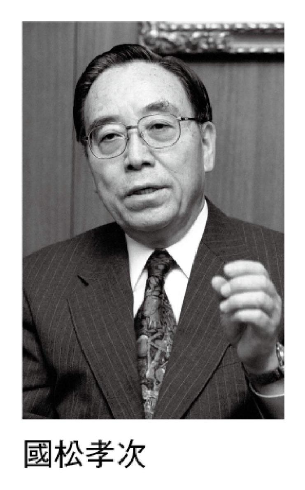
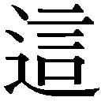
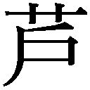
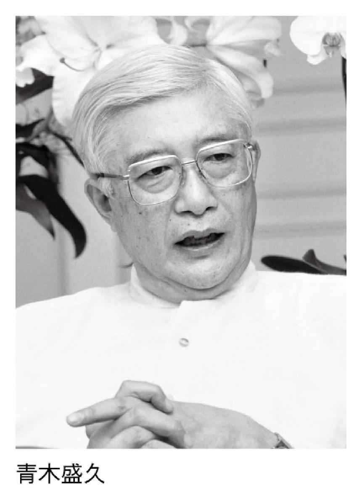
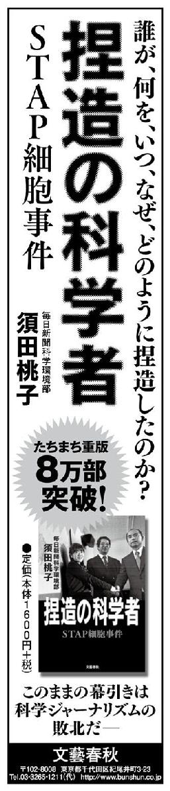

| 「文藝春秋」で読む戦後70年 第三巻 バブルからその崩壊へ (文春e-book) | |
| Unknown | |
| (2015) | |
「文藝春秋」で読む戦後70年
［第３巻］バブルからその崩壊へ
平成１年 アメリカの友人たちへ 『「ＮＯ」と言える日本』、私の真意 盛田昭夫
初公開！ 白熱の50分 チャウシェスク軍事法廷全記録 本誌現地取材班
平成３年 イトマン事件の全容 住銀のドン・磯田一郎氏を恨む 河村良彦
平成４年 座頭市「麻薬事件」を語る わが「パンツの中の真実」 勝 新太郎
平成５年 出会いからその死まで 夫・尾崎豊との六年間 尾崎繁美
平成６年 松本サリン事件 あの夜 私の家で起こったこと 河野義行
平成７年 テロに襲われて 屈辱を嚙みしめた三発の銃創 國松孝次
平成８年 小沢一郎の罪と罰 オヤジ金丸信 死の床の一言 野中広務
平成９年 幽囚四カ月間のすべて 我、ペルーの土と化すとも 青木盛久
平成10年 同僚の死から経理操作まで 長銀元最高幹部が綴る隠蔽の全貌 箭内 昇
平成11年 黄長燁元書記独占告白 「私は金正日と命をかけて戦う」 萩原 遼
※各記事の末尾に付した数字は、記事の初出時を示します。例えば（Ｈ２・６）は平成２年６月号の意味です。また、文中の敬称は略し、肩書きは当時のままとしました。
──日本人にとって二十世紀とは何だったのでしょう。
二十世紀の開幕早々、日本はロシアの南下を防ぐという戦争（日露戦争）を経験しました。そのことを『坂の上の雲』という小説に書いたことがあります。地球の中の一角にある島国に起こった、不思議な心の物語として書きました。
主人公の一人は、病人でした。俳句・短歌に〝写生〟という多分に体験的、やや写真的なリアリズムを導入して革新した正岡子規です。子規と中学以来の同窓で、文学青年仲間だった秋山眞之がもう一人の主人公です。眞之は海軍に入り、東進してくるロシア艦隊を一艦残らず日本海で沈めるという、不可能にちかい課題を命ぜられる役割を果たさねばならないことになります。
もう一人の主人公は、眞之の兄の好古でした。陸戦において、世界最強のコサック騎兵を防ぐという課題をあたえられ、結局は機関銃を導入することによって──騎兵の古典的美学からいえば邪道だったでしょうし、好古自身、好んでそれをやったわけではないのですが──解決します。
三人とも戊辰戦争のときの〝賊軍〟とされた伊予松山藩の出身でした。松山城下が〝官軍〟の土佐藩兵に進駐されていたときが、人生の最初の環境でした。
江戸時代の日本人は、蒸気船ももたず、騎兵ももちませんでした。明治維新は幕末の夜郎自大的な〝尊皇攘夷〟の終焉であり、開国という、ときに卑屈なほどのリアリズムの開幕でもあって、十九世紀後半の明治人は、現実的でした。たとえば、海軍には世界史的に戦術はなく、軍艦と軍艦の叩きあいだとされてきたのを、眞之は右の至上課題を果たすためにこれに戦術を加えるというユニークなことをせざるをえませんでしたし、好古は勝ちがたい敵に対して火力で戦うという現実を持ちこまざるをえませんでした。
為政者は手の内を明かさない
後でまた言いますが、この戦争を境にして、日本人は十九世紀後半に自家製で身につけたリアリズムを失ってしまったのではないかという気がしないでもありません。日本海海戦でロシアの旗艦「スワロフ」が燃え上がって舵をこわし、ぐるぐると回り始めたときに、戦争のすべてがおわるのですが、しかしそこから国民の思考が地に着かない、つまり時代はそこから悪くなっていったように思います。その後の、あるいはいまの日本の諸問題に連なっていくことだと思うのです。
アメリカのポーツマスで小村寿太郎とロシアのウィッテとが日露の和平交渉をするものの、双方条件が合わない。ロシアは譲らない。樺太をよこせ、賠償金を出せと日本側は言う。再びロシア側は、そんなものは必要ない、もう一ぺんやるならやるぞ、いくらでも陸軍の力はあるぞと。結局ルーズヴェルトの仲裁で、食卓の上にシャケの一匹でものせたらどうだ──シャケは樺太のことですが──その程度の条件で折り合った。
ところが戦勝の報道によって国民の頭がおかしくなっていました。賠償金を取らなかったではないかと反発して、日比谷公会堂に集り国民大会を開き、交番を焼き打ちしたりする。当時、徳富蘇峰が社長をしていた国民新聞も焼き打ちに遭う。蘇峰は政府の内部事情に詳しく、〝戦争を終わらせることで精いっぱいなんだ〟ということをよく知っていましたから、国民新聞の論調は小村の講和会議に賛成にまわり、結果、社屋を焼き打ちされた。
日比谷公会堂は可燃性の高いナショナリズムで燃え上がっていました。〝国民〟の名を冠した大会は、〝人民〟や〝国民〟をぬけぬけと代表することじたい、いかにいかがわしいものかを教えています。
ここから日本は曲がっていきます。要するに、この大会はカネを取れという趣旨であって、「政府は弱腰だ」「もっと賠償金を取れ」と叫ぶ。しかし、もっと取れと言っても、国家対国家が軍事的に衝突しているというリアリズムがあります。いまかろうじて勝ちの形勢ではあっても、もう一カ月続いたら、満洲における日本軍は大敗していたでしょう。
ロシア側は奉天敗戦後、引き下がって陣を建て直し、訓練を受けて輸送されてくる兵員を待ち、弾薬を充実させています。そのときに平野に展開した日本軍はほとんど撃つ砲弾がなくなっている。訓練された正規将校は極めて少なくなり、いきのいい現役兵は極端に減っていました。
──国民は、正確な情報をもっていなかったんですね。
日本国の通弊というのは、為政者が手の内──とくに弱点──を国民に明かす修辞というか、さらにいえば勇気に乏しいことですね。この傾向は、ずっとつづきます。日露戦争の終末期にも、日本は紙一重で負ける、という手の内は、政府は明かしませんでした。明かせばロシアを利する、と考えたのでしょう。
戦争のことを好んで話しているのではありません。日本の二十世紀が戦争で開幕したことと、戦争がその国のわずかな長所と大きな短所をレントゲン写真のように映し出してくれるからです。
たとえば第一次大戦で、陸軍の輸送戦車などの兵器、また軍艦が石油で動くようになりました。石油を他から輸入するしかない大正時代の日本は、正直に手の内を明かして、列強なみの陸海軍はもてない、他から侵入をうけた場合のみの戦力にきりかえる。そう言うべきなのに、おくびにも漏らさず、昭和になって、軍備上の根底的な弱点を押しかくして、かえって軍部を中心にファナティシズムをはびこらせました。不正直というのは、国をほろぼすほどの力があるのですな。
──日露戦争はなぜ起こったのでしょう。
なぜ起こったのかは教科書に任せるとして、基本的には朝鮮半島問題をめぐる国際紛争でした。
朝鮮半島は、当時の国防論では地理的な形態として日本の脇腹に突きつけられた刃だと思っていた。その朝鮮に対し、既に洋務運動に目覚め近代化しつつある清国が、宗主国としていろいろ介入し始めた。日本はこれが怖かった。そして日清戦争を起こす。日本の勝利で、清朝は一応朝鮮から手を引いた。そこへ、真空地帯に空気が入ってくるようにしてロシアが入ってくる。ロシアは、まるで新天地を見出したかの如き振る舞いで、それがやはり日本にとって恐怖でした。結局ロシアを追っ払うためにいろいろなプロセスをへたあと戦争になってしまう。
いまから思えば、その後の日本の近代は、朝鮮半島を意識し過ぎたがために、基本的な過ちを犯していくことになります。この二十世紀初頭に、朝鮮半島などうち捨てておけばよかったという意見もあり得ます。海軍力さえ充実しておけば、朝鮮半島がロシアになったところで、そんなにおそろしい刃ではなかったかもしれない。しかし、当時の人間の地政学的感覚は、いまでは想像できないのですが、もう怖くて怖くてしようがなかった。ここを思いやってやらないと明治というのは分かりにくい。
たとえば日露戦争をしないという選択肢もあり得たと思います。しかし、ではロシアがずるずると朝鮮半島に進出し、日本の眼の前まで来て、ついに日本に及んでもなお我慢ができるものなのか。もし我慢すれば国民的元気というものがなくなるのではないか。これがなくなると、国家は消滅してしまうのではないか──いまなら消滅してもいいという考え方があり得るでしょうが──当時は国民国家を持って三十余年経ったばかりなのです。新品の国民だけに、自分と国家のかかわり以外に自分を考えにくかった。だから明治の状況では、日露戦争は祖国防衛戦争だったといえるでしょう。
欧露から回航されてくるロシア艦隊を、伊藤正徳さんの表現を借りると、パーフェクト・ゲームでもって残らず沈めねば戦争そのものを失うのです。数艦でも生き残ると、当時ロシアの租借地だった旅順やウラジオストックに逃げ込まれ、通商破壊に出てこられる。となると、大陸に派遣している陸軍が干し上げられてしまう。
さきに世界史的に、海軍に戦術なし、といいましたが、アメリカのニューポートの海軍大学校で海軍戦史を講義していたアルフレッド・Ｔ・マハンという退役大佐が、海軍戦略・戦術を考えていたことは、よく知られていました。眞之が大尉時代にワシントン公使館に駐在したとき、マハンを二度たずねています。眞之が望んでいたものが得られたとは思えません。
右は十九世紀末で、二十世紀になってから眞之は瀬戸内海の能島水軍の古い兵術書を読みます。小笠原という旧大名の蔵にあった古書だといいます。
「ずいぶん古い本を読んでいるな」
と、友人にからかわれました。当時は読書といえば洋書の時代だったことを思うべきでしょう。眞之は、「白砂糖は黒砂糖からつくられるのだ」といったといいます。
武士の時代とリアリズム
武士の時代を矢に譬えれば、名目上は、明治元年で武士の時代は終わったけれども、二十世紀初頭まではまだ矢は飛び続けていたように思います。その最後の段階で日露戦争が起こった。このことが日本にとって幸いでした。
当時は、武士の時代の気分がまだのこっていた。たとえば戦争期間中、旅順が最大の問題でしたが、最後には、この武士的なリアリズムによって、日本は危機を打開していったように思います。
当時、旅順港にロシアの旅順艦隊が入っていました。その港外に日本艦隊の一部が待ち伏せして、挑発しましたが、ロシア側はやがてやってくる自国のバルチック艦隊と合流するつもりですから、乗りません。日本としては、この旅順を陸側から落とさざるを得なかった。
ですから当初、旅順攻撃は日本陸軍の作戦プランの中には入っていませんでした。開戦直前になって、急遽旅順の問題が起こり、海軍の要求で第三軍をつくり、要塞攻撃を命じるのです。そしてご承知のように、乃木希典さんを軍司令官に、ドイツ留学の経験のある伊地知参謀長の組み合わせで旅順攻撃を始める。これが惨憺たる失敗で、死者一万余という大損害を出しながら、要塞にカスリ傷も負わせることができずに戦況が続いていく。
その敗因の決定的な一つは、伊地知参謀長は陸軍の面子によって、海軍から申し出のあった軍艦砲の支援は要らないと言ったことでした。海軍は二等巡洋艦を一つ裸にして、砲術士官をつけて、大砲全てを提供しようとしたのを陸軍側は拒否した。要塞攻撃は大砲でやらなくてはしようがないのに、野砲程度の支援であとは肉弾攻撃あるのみという、とても考えられないような愚策をやった。海軍の提供した大砲を、陸海軍派閥主義で受け入れなかったのです。
もうひとつ、いかに第三軍が火力を軽視していたかということで象徴的なのは、乃木さんは、金州城及び旅順で初めて敵の機関銃の音を聞いたことでもわかります。
ところが同じ陸軍でも、当時世界一の騎兵といわれたコサックを相手に、さきにふれたように、騎兵の長の秋山好古は既にこっそり機関銃を手に入れていたのです。秋山は、サン・シールのフランスの士官学校に留学して、ヨーロッパの正規の教育を受けた騎兵将校として、騎兵の元締として満洲の戦場に出る。騎兵の理想としては、日露騎兵同士の大会戦をしたかったのでしょうが、それでは槍を伸ばす手の長いコサック騎兵には敵わず、日本騎兵はかならず負ける。
そこで彼が考え抜いた対コサック戦術は、陸軍省に頼んで機関銃を装備し、コサック兵が大襲撃してくると、騎兵でありながらみんな馬から下りて、馬は後方にやり、インディアンの襲撃を防ぐ幌馬車隊のようにして機関銃でなんとか凌いでいくというものでした。それしか手はなく、しかも辛うじて防ぎ得た程度でしたが、負けなかった。
この「負けない」という秋山好古の発想の全ては合理主義に基づいていて、そこには太平洋戦争で蔓延した肉弾攻撃といった精神主義というのは微塵もありませんでした。戦争とは兵器と兵器の戦いであることを、海軍も陸軍もみな知っていたわけです。ただ旅順に配置された第三軍だけは、兵器の戦いだという考え方が少し薄かったようです。
しかし戦局末期において、三浦半島の観音崎に何門も据えてあった、東京湾防衛のための海岸砲を旅順に持っていく。絶対移動不可能といわれた大砲を、児玉源太郎がむりやり二〇三高地の麓まで持ってきて、砲撃した。これで旅順は落ちたのです。児玉源太郎は歩兵科出身であり、大砲の専門家でもないがゆえに、素人の合理性から決断できたのでしょう。
日露戦争を戦った陸海軍人は、明治人が持つ一種の合理主義と健全さと、日本風にアレンジされたピューリタニズムとを併せ持っていました。
──外交も、ちゃんとやっていますね。
二十世紀初期の日本の責任者たちは、自虐的なほど自己の弱さについては、計量しぬいています。
弱さについての認識と計量が、よき──すくなくとも懸命な──外交を生むのかもしれませんね。
金子堅太郎という、明治維新を十五歳で、福岡城下でむかえた人がいます。同藩出身の司法省役人を頼って書生として住みこんだ人です。明治初年の役人には旧幕の旗本の風がのこっていて、金子は旦那の登庁のときは、若党のように挟箱をかついでお供をしたといいます。
留学してハーバード大学に学んだとき、日露戦争時代のアメリカ大統領になるセオドア・ルーズヴェルトと同級でした。たったそれだけの縁で、金子が政府に命ぜられて対米工作をするのです。
戦争の継続中、ここぞというところで、アメリカが割って入る。日本にとって虫のいい話ですが、列強にとっても、日本が自滅するより無限のロシアの南下をふせいだほうがいい。ロシアがすでに旅順・大連を租借して黄海を制しているばかりか、〝満洲〟に軍隊と建設資本を投下して自国領同然にしているほうが、〝力の均衡〟からみて危険だったわけですから。〝満洲〟の野戦軍の総司令官として出征する大山巖も、〝軍配（アメリカの仲介）のこと、よろしく〟と言いのこして出かけています。〝勝ちがたい戦争だが、外交によって歯止めをする〟という弱みを、軍自身が、手の内を十分に明かしていたのです。
手の内を見せていたということが、昭和とちがうところですね。昭和の軍部というのは、自分の弱みという弱みを、極大から極小まで軍機という秘密主義でつつんで、軍そのものと国家を神秘的な虚像にしていましたから。
蒙古草原のファナティシズム
昭和初期の日本人の意識を知る上で象徴的なのは、一九三九年（昭和十四年）のノモンハン事件かもしれません。
事の発端は、ソ連側の外蒙軍が満洲国との国境線のハルハ川を越えたということでした。関東軍はこの形式上の小事件を過大に考え、現地に駐屯していた第二十三師団に命じて撃退させた。ところが外蒙軍にソ連軍が加わって反撃してきただけでなく、ソ連軍は火力や戦車団を集中的に増強しました。ソ連の圧倒的な火力と機械力の前に、須見新一郎という連隊長（大佐）は、わが軍の装備を〝元亀天正（織田信長の時代）のように感じた〟と、はるかな後年、私に話してくれたことがあります。ソ連の重厚な反撃は、スターリンの対欧戦略によるもので、欧州に専念するために東方の不安をとりのぞくということから出たものでしょう。
ソ連の第三次攻撃のときは第二十三師団は壊滅同然に陥り、師団司令部の幕舎が孤立しました。師団の高級軍医だった人の回想記に、万策尽きた師団長の小松原道太郎中将が幕舎のなかで、〝日本の兵隊さんは強いときいているから何とかなるだろう〟とつぶやいたといわれています。現場のプロが、最後のたのみの綱は、おそらく小学校のとき先生からきいた日露戦争の兵士のはなしだったというのは、悲惨なことです。
昭和初年からの軍事的膨脹が、国際関係論的なリアリズムにも立たず、自国の薄弱な軍事力についての認識にも立たず、単に時勢の勢いという魔術的なものに動かされてきて、それが一場のファナティシズムであったことを、満洲国東部の蒙古草原で孤立することによってこの元駐ソ武官だった中将は気づかされるのです。それにしても、日露戦争での初等教育用の美談が最後の支えになったというのは、幻想の時代の悲哀というしかありません。
昭和初年の狂気は、昭和六年（一九三一年）、関東軍一部参謀の独走と謀略によってひきおこされた満洲事変によって出発します。ノモンハンと同様、出先機関が勝手におこした戦争を、やむなく東京が追認するかたちで、国家を冒険へと駆りたてたのです。ノモンハンより八年前のことで、日本国という機械は、あきらかに狂気によって歯車が組みかえられようとし、げんにそのとおりになりました。
〝満洲国〟を独立させ、やがて長城線の内部の華北五省に対し、〝満洲国〟に似た政権をつくろうとし、中国の反発をうけ、ついには日中戦争に拡大しました。
軍事的教養のない日本の知識人
このように、国内機関（いわゆる軍部）が積みあげられてゆく積木が、時代の気分の肯定をうけなかったとはいえず、冷静な意見は、つねに小声でした。歴代の内閣は、この幻影のような積木を追認したり、糊塗したりするだけでした。軍部の〝謀略〟は多分に子供じみていましたが、それを亡国の遊びだというふうに根底から批判しつくすという意見が大展開されたということは、なかったのです。
ひとつには、日本の知識人の教養に、軍事知識という課目がなかったということもあるでしょう。世界環境のなかにおける日本の軍事力という場からみても、日本軍が持っている自己認識（ノモンハンにおける須見大佐や小松原中将の述懐を参照）は、おかしいと思うべきだったのです。昭和十年代には、軍部の気分に乗ることが──幻想を共有することが──愛国だと思われるようになったのは、知性の敗北などと戦後の論評者は言いますが、知性という抽象的なことよりも、具体的には、世間のひとびと──ノモンハンの小松原中将までふくめて──が軍事という具体性のなかから、内外を見ようとしなかったからでしょう。
〝子供〟が積んでゆく積木を、いいトシをした大人たちが感心したり、当惑したりしながら、賛美したり追認したりするうちに、戦争の規模は拡大して、仏印（ヴェトナムなど）に進駐し、そのことによって、ヨーロッパの既得権に挑戦することになります。〝大東亜共栄圏〟などとは、むろん美名です。自国を亡ぼす可能性の高いを、アジア諸国のために──身を殺して仁を為すような──酔狂な国家思想は、過去においてどの国もあまり持ったことがありません。かといって、当時の人達は、日本は帝国主義とは思っていなかったのです。このあたり、じつにあいまいに考えていました。考えを深めようにも、事態が事態を生んで、そのころはたれもが多忙でした。いまからみれば滑稽だし、自他の死者たちのことを思うと、心がいたみます。
その積木が、「ハル・ノート」によって、自壊か、積木の継続かをせまられたのです。太平洋戦争開戦（一九四一年十二月八日）の前の月の二十六日に提示された。
アメリカは、一九三一年以降十年間の日本の中国大陸（当然ながら〝満洲〟をふくむ）でのいっさいの行動を否定し、擁立した政権はこれを認めず、大陸から兵をひけ、という。
「じゃ、そうしよう」
といえば、日本という国家はつぶれたでしょう。昭和初年以来、異常な膨脹についての政府説明を信じてきた国民は、国家そのものを信じなくなります。軍は反乱をおこして、政府要人を殺すでしょう。だけでなく、より異常な極右政権をつくり、対米戦をやるでしょう。
「ハル・ノート」は、対日最後通牒とみてよく、事実上の果し状でした。当時の国家間のことは、戦後のやくざ映画に似ていますな。
そのころのアメリカの新聞読者からみれば、日本は中国をいじめるとほうもない悪者ですが、日本の新聞読者からみれば、日中戦争は〝聖戦〟でしたし、アメリカは憎むべき大悪党だったことになります。四年後の敗戦によって、日本国民は、日本そのものが、日本史に類を見ない非日本的な勢力によって〝占領〟されていたことに気づくのですが、一九四一年当時は、政府を信じていました。明治後の日本人ほど政府を信じてきた国民はいないに相違ありません。すくなくとも明治二十年代以後、日本政府は、国民に信じられることによって成立していました。近代化が遂げられた最大の理由だと思います。その日本近代の国民的な習性を、軍部その他の勢力が、うまく利用して亡国に追いこんで行ったのです。むろん、軍部としても、それが愛国だと思っていたのですが。
かつて『文藝春秋』で、瀬島龍三さんと対談をしたことがありました（昭和四十九年一月号）。瀬島さんは、大本営参謀として大東亜戦争のプランをつくった人です。その中で、「『作戦要務令』に、兵力は分散させてはいけないと書いてありますが、太平洋の島々に兵隊を少しずつ送って、敵が来るのを待っていただけじゃないですか」と言ったら、「先生、それはひどい、それはひどい」とおっしゃっていた。
連合艦隊の本質は輸送艦隊
さきに、第一次大戦によって陸海軍が石油で動くようになってから、日本の陸海軍そのものが半ば以上虚構になった、という意味のことを言いました。
むろん、そのことは、陸軍も海軍も、だまっていた。やがて昭和になって、陸軍が、石油もないのに対外行動をおこす。それが累積して歴代内閣が処理できないほどの大事態になり、事態だけが独り走りする。ついにアメリカをひき出してしまう。
それで、戦争構想を樹てる。何よりも石油です。勝つための作戦よりも何よりも一路走って石油の産地をおさえる。古今、こういう戦争があったでしょうか。日本の海軍は、全艦隊が数カ月走るだけで備蓄がなくなります。軍艦は動かなければ、単に鉄のかたまりです。
南方進出の本当の目的は、蘭領のインドシナのボルネオ、セレベスなどの油をおさえるためでした。そこにコンパスの心を置いて円を描けばフィリピンもニューギニアなども入ってくる。フィリピンはアメリカの要塞があるから、産油地を守るためにフィリピンを攻撃しなければいけない、ニューギニアも、産油地の周辺にあるから防衛上確保しなければいけない、サイパンにも兵隊を送る。とりあえず油がほしいんだ、ということを、国民に明かさなかった。〝大東亜共栄圏〟を建設するんだ、という大層な看板をたてた。
それらの地域には、原住民がいます。戦後彼らは独立して国をつくりましたから、「日本は我々を侵略した」と主張しています。そのとおりなんです。しかし当時の軍首脳のあたまでは、植民地国家のオランダしか目にうつらなかったのです。オランダを追い、石油をとる。それによって軍艦を動かし、戦闘機を飛ばし、戦争を継続する。そのプランしか選択の余地がない。要するに太平洋戦争というのはそれだけのことでした。
「太平洋戦争は侵略だった」と細川護熙さんはおっしゃった。その通りなんです。ただ侵略という語感には、財産をぶんどるという目的で家に押し入るというイメージがあって、いまの感覚では居心地のわるいことばですし、また、日本側の戦死者のほとんどが〝聖戦〟と思い、侵略戦争だとは思わずに死んだものですから、まことに都合がわるい。しかしリアリズムというのは、まず自分が手負いになる精神なんです。ともかくも開戦のとき、後世、日本の子孫が人類に対して十字架として負うことになる深刻な思慮などはありませんでした。昭和初年以来の非現実は、ここに極まったのです。
地域への迷惑も、子孫へのつけもなにも考えず、ただひたすらに目の前の油だけが目的でした。そこから付属してくる種々の大問題は少しも考えませんでした。数学のよく出来るいわば数学のおたくのような少年が、仮の一点を設けて、ここで一つ数式をつくっていけば全部解答ができるというような感覚で、産油国にコンパスの心を置いて円を描いたということではないでしょうか。こんな国家行動は、世界史にあったでしょうか。
そのために陸軍の兵力は分散され、海軍にいたっては、艦隊決戦思想から、輸送護衛の兵力というぐあいに役割がかわりました。結果として、諸々の戦闘に伴う海戦はありましたが、連合艦隊の本質は輸送艦隊に過ぎませんでした。
二十世紀は仮想敵国をつくって自分の軍備を整える時代でしたから、日本陸軍はソ連、海軍はアメリカを仮想敵国としていました。日本海軍の図上演習ではアメリカ連合艦隊はフィリピン沖からやってくることになっており、日本の連合艦隊は対馬沖で待ち伏せることになっています。
これは日本海海戦時のバルチック艦隊と同じです。勝者というものは、自分が勝った経験だけしか思考の基礎にしない、だから間違うという教訓がここにもありました。結局、海軍大学校では、日本海海戦という型だけを一生懸命研究していて、しかしながら肝心の戦争が蓋を開けたら、石油が出るボルネオ、セレベスに心を置いてのとりとめもなくひろい戦場ができ上がっている。要は、数学の答案としては立派でも、軍事的リアリズムは全くなかったのです。
──なぜリアリズムを失ったのでしょう。
人間というのははかないもので、自分の経験したところからべつな方向へ飛躍するというのは、困難なようですね。とくに国家という集団になるとそうですね。
軍事にかぎっていうと、日本は第一次大戦を実戦として経ていなかったことが、二十世紀の世界の軍事思想から遅れたということになるでしょう。欧州の戦場には、日本からは観戦武官で行った人がいる程度で、日本陸軍は、第一次大戦を経ない装備のまま──ほとんど日露戦争のときの実態のまま──太平洋戦争へと突入する。太平洋戦争で使われた小銃は、日露戦争末期に使用されたのと同じ三八式歩兵銃でした。
第一次大戦の特徴をあげれば、火力の増大と、くりかえしいうように兵員物資の輸送がガソリンで行われるようになったことです。一般に海軍の軍艦は石炭から重油で航行するようになって速力を増し、航続距離も飛躍的に延びた。陸軍も、徒歩の移動、馬力から、トラックによる輸送になって、移動と集結が早くなった。さらに戦車が出現し、陸戦の主役になる。こうした軍事技術的変革に日本は対応できませんでした。むろんフランスのルノーから戦車の試作品を買って研究をし、少量の製造をしていました。ノモンハンのときも、一部輜重は馬からトラックになっていました。ノモンハンのときの自動車部隊は、気の毒なことに、戦場からの死体輸送が主たる実務になっていましたが、いずれも微々たるものでした。
どうして大正のある時期に、日本はもう戦争できない、専守防衛の国である、ということがいえなかったのでしょう。言えば敵が攻めてくるというような時代でもなかったし、たとえべつな国際環境にあっても、敵はおいそれと攻めてくるものではありません。軍人の威厳にかかわることでもない。そのような勇気ある態度こそ、窺う者を怖れさせるのですから。
陸軍省や海軍省の省益がそれをさせなかったのでしょうな。官吏としての職業的利害と職業的面子が、しだいに自分の足もとから現実感覚をうしなわせ、精神主義に陥って行ったのでしょう。物事が合理的に考えられなくなる。この傾向は、昭和四年、昭和恐慌のパニック以降にさらに顕著になり、それが太平洋戦争の敗戦まで続いていきます。
昭和四年（一九二九年）のニューヨークの株式恐慌にはじまる昭和恐慌は、世界も日本も大変でした。日本では東北農民が、不作に続く不作で娘を売るという話が昭和の青年将校の救国思想を刺激したと言われていますけれども、東京に出稼ぎに来た人が、もう職がなくて帰るのに、遠い故郷まで鉄道線路を歩いて帰るという人が多かったというほどの不況です。いまの不況とは全く較べものにならないものでした。
そういう異常事態のなかで、関東州（中国遼東半島における租借地）にいた関東軍という軍の出先機関が、謀略的な軍事行動を起こした。それを東京の参謀本部が追認したというのも、ほとんど〝死に体〟だった経済状況からのあがきともうけとれなくはありません。結果として、一国だけの不況脱出を遂げられたかのごとき印象はありました。満洲事変のことです。
まさかこの事件が太平洋戦争までつながるとは思ってもいなかったでしょう。満洲はむろん中華民国の領土ですけれども、元々ここはトゥングース人たちの旧清国人たちの故郷ではないかというような曖昧なところにつけいって満洲を独立させた。そうすれば、いまの閉塞した局面が打開できるのではないか、この暗雲たれ込めた不況に穴をあけられるのではないかと思い込んで事変を仕掛けた。すでにリアリズムを超え、空想の時代になっていました。
昭和九年頃になると、イギリスからアウタルキー（自給自足）論という変な、妖言としか言いようのない提案が出てくる。大英帝国の領土内では英国製品しか流通させないという議論です。これにヒットラーも影響を受け、日本の軍部や取り巻き連中、及び右翼ジャーナリストも刺激されていく。そこから自前の植民地ほしさに、昭和十五年の〝大東亜新秩序〟構想につながっていく。しかしもっと重要なことは、大正末年から昭和初年にかけて疑似的な普遍思想、すなわちイデオロギーがひろがり始めたのです。具体的にいえば、「右翼」と「左翼」が出てきた途端に、明治からの資産だったはずのリアリズムが、大きく足をすくわれたといえるでしょう。
左翼歴史観に日本史はなかった
「右翼」といっても、元からそうした思想があったというわけではありません。大正末年に「左翼」が生まれ、その反作用として「右翼」が生まれたんです。もともとは十八世紀末のフランス国民議会の席が、議長席からみて左にジャコバン党がすわっていたからということですが、日本語としての左翼、右翼は、明治時代にはありません。
左翼思想とは、いわば疑似的普遍性をもった信仰であって、国家や民族を超えてこの疑似的普遍性に奉仕せよということでしょう。日本の左翼はその成立の瞬間から日本史をとらえる点でリアリズムを失っていました。そうすると、左翼の反作用として出てきた右翼も同時にリアリズムを失っています。二十世紀のロシア崩壊までの間、我々を非常に惑わしたのはこの左右のイデオロギーでした。漱石や子規が幸いにして知らずに済んだ思想的行動形態でした。
だから、いま不況になっても、凄惨な目に遭ったために、イデオロギーにすがろうと考えている人は誰もいない。ロシア革命から七十年を経て、ようやく夢が醒めたようです。
ともかくも右翼にしても左翼にしても、かんじんの自国認識という点ではネジ切りが粗くて、フタと現実があわないものでした。昭和初年の左翼のことを〝水戸学派（朱子学）的〟という人がありますが、朱子学もイデオロギーで、戦前の日本史教科書は、濃厚に朱子学的でした。昭和初年の右翼思想も、当然ながら、朱子学そのものです。日本にあっては左右同根と言いたくなる印象があります。
日本史については、昭和初年の左翼は、わざとなのかどうか、あいまいに、強いてまちがってとらえていました。たとえば講座派でも労農派でも、日本史の捉え方は、江戸時代の百姓は帝政ロシアの農奴、大名は帝政ロシアの地主（貴族）だというふうに勝手に当てはめて理解していました。基本としてそういう理解の仕方でした。
おそらく日露戦争に参加した指導者には、社会科学的な知識はなかったでしょうが、大名というのは単に租税徴収権を持っているだけの存在で、統治する義務は負うものの、つねに財政は窮迫していたし非常に気の毒な人たちだった、というような正確な理解をしていたはずです。
しかし左翼は、東京の都市労働者も、イギリスの産業革命以後のプロレタリアートとして見る。こうしたフィルターでしか日本史を見ないがために、ありのままの日本史は存在し得なかったのです。そうした歴史観に、右翼は、やはり朱子学的基盤の上に立って強烈に反発する。昭和はこの双方幻覚のような二つのイデオロギー抗争で開幕しました。
二十世紀が開幕したときに、日本は現実感覚に富んだやり方でもって日露戦争に勝った、結果としてロシアはソ連になり、イデオロギーの国になった。そのイデオロギーがこんどは日本に影響して左翼を生み、その左翼の反作用として右翼を生み、いよいよ現実感覚を失わせたということが言えるでしょう。
日露戦争が終わったあと、明治四十一年に、夏目漱石が『三四郎』を書きます。ご承知のように、この小説は、三四郎が大学生になるために熊本から東京へ出て行く姿を描いている。晴れて上京し、明治国家建設の中核的な機関だった東京帝国大学に入学し、そこで広田先生に出会う。
車中、この神主のような広田先生に出会う。三四郎がなにげなく「日本はどうなるんでしょうか」と くと、先生は「亡びるね」と答える。この台詞が日露戦争のあとの明治四十年の日本像をよく言いあらわしています。
くと、先生は「亡びるね」と答える。この台詞が日露戦争のあとの明治四十年の日本像をよく言いあらわしています。
日比谷公会堂の焼き打ちという愚かな騒ぎの果てに日露戦争も終わり、政府は大変な債務を抱え、また庶民にとっては戦後の不況が直撃していた時代です。しかし人々の意識は、戦争に勝って一流の国になったつもりでいる、この意識が、どの国にもない滑稽さだと漱石は思っている。そういう諸相が全て集約されて、広田先生の「亡びるね」という台詞になる。それから太平洋戦争の敗戦までわずか約三十有余年です。広田先生がいったとおりに、亡びたんです。国家といっても、はかないものですね。
文化にも現実が根づかない
明治のリアリズムは、正岡子規の写生主義を生んだことで、文化としては大きな収穫があります。ただ写生主義は、その借家は間口は何間で、玄関は明るいか暗いか、小庭には鶏頭が何本あるか、座敷の藤の花房は畳の上にとどいているかどうか、というリアリズムにとどまって、つぎの社会（大正時代）の思想的基盤になるほどの力はありませんでした。
大正ブルジョワジー、大正デモクラシー、大正ロマンティシズムといった言葉はありましたが、大正リアリズムとは言わないでしょう。そうしたリアリズムの側面を文化の面から見ても、どうも日本の文化風土のなかには、リアリズムは根づかなかった感じがします。
たとえば絵画思想で、夏目漱石の時代には、リアリズム絵画が日本画も洋画も成立していました。ところが大正に入ると、アールヌーボーの影響を受けて、竹久夢二に代表されるような画風が主流になる。リアリズムから離れたちょっとデコラティブな甘いロマンティシズムが大正の絵画思想でしょう。それが大正末年から昭和の初めにかけて、一挙にフォービズム、さらにフォービズムからもっと突き進んだものになってしまう。結局、絵画の世界では厳格なリアリズムはもう一つ育ち足りずにおわりました。
文学思想においても、自然主義が出てくる。明治末年の徳田秋声が自然主義こそ文学の核だと主張していく。自然主義ではなかった漱石や鷗外はこの用語のあいまいさを感じつつも、ややおびえたり、反発を感じたりします。
さらに一歩進んで、この自然主義に次いで大正九年ごろにはじまる私小説が、日本の近代文学を特徴づけます。
ちょっと余談から言いますが、人が農村から都市に出てくるためには、都市が要求する技術──たとえば大工・左官、工場での技術、あるいは帳簿の技術、教員免状、商人としての資本──などを持っていなければなりませんし、ふつうの人々は、そのことを百も知っています。
小説を書こうとする人だけが、わざと──ほとんど実験的に──素手でやってきて、無職、無収入に近いのに、借金をしたり、女をつくったり、子を生んだりして、自虐的な生活をしてみせる。庶民の現実から離れた曲芸のようなことをして、その暮らしを世間に報告する。 西善蔵の『湖畔手記』や『子をつれて』が代表的なものでした。そういうものが都市の現実ではないということは、庶民のほうがよく知っています。私小説の現実感覚は、社会や国家に対して現実という場からの凄味を利かせるというふうにはならず、人間の課題について万人に粛然たる思いをさせるというようにはなりませんでした。
西善蔵の『湖畔手記』や『子をつれて』が代表的なものでした。そういうものが都市の現実ではないということは、庶民のほうがよく知っています。私小説の現実感覚は、社会や国家に対して現実という場からの凄味を利かせるというふうにはならず、人間の課題について万人に粛然たる思いをさせるというようにはなりませんでした。
なんだか、西洋人の観念には、神という絶対の存在──つまり比類を絶した唯一のウソ──があるように思いますね。古来、神学は、ありもしない絶対（神）を、ある、ある、という哲学的論証を重ねつつ、論理と修辞と叙述を発達させてきたような観があります。神学の時代がおわって近代小説がはじまったとき、大文字のGodをあつかうように、ごく自然に大文字のFictionをあつかって、この絶対虚構は、ある、ある、と糸巻に糸をまきつけるようにして展開してきたような気がします。
「日本は、明治以来、西洋のものを何でも入れてきましたが、文学だけは入れませんでしたね」
と、アメリカの日本学者のアール・マイナーさんから、明るい皮肉をこめていわれたことがあります。日本は、Godの国でなく、小文字のgodsの国のようですね。志賀直哉の小説を私は好きですが、城崎や尾道などを転々とする志賀さん──いや時任謙作──が、その文学以上に作者の人間を透きとおらせて行って、ついに神（小文字）の神遊びのような印象にまでなる。西洋人には志賀文学は退屈かもしれませんが、日本人には、透けてゆく神をみるような愉しみを覚えさせるのです。しかし、国家や社会に怖れを感じさせるようなどすのきいたリアリズムというわけにはいきません。
「日本の大正時代にゆきたい」
──『文藝春秋』が、この号で千号になるんです。
大正十二年の創刊でしたね。いまの大衆化社会という、いまある悪いこともいいことも、ある種の豊かさに伴う現象は大正時代に全部出ていると思います。『文藝春秋』もその一つであることが面白いですね。先行の『白樺』が芸術青年のもの、『中央公論』が知識階級のものとすれば、『文藝春秋』の読者は、時代の影響なのか、ずいぶん幅が広いですね。菊池寛が、表現はすこしちがいますが、社会の実務についている多数者──たとえば村役場の書記というような人達──に読んでほしいといったように思います。
菊池寛と、アメリカで興ったプラグマティズムとの関係を説く説がありますが、面白いですね。
大正の間は、第一次大戦の好況もあり、政府は懐が豊かになって、旧制高校や外国語学校をはじめ、高等農林、高等工業、高等商業といったカレッジがたくさんつくられた。明治時代にできた私立大学も、大正になって大学令による大学になった。ともかくも、大正時代というのは、学問や教養といったものが大衆化される社会の基礎がつくられた時代でした。
ニコライ・Ｉ・コンラド（一八九一～一九七〇）は、ペテルブルグの日本語科でネフスキーと一緒だったといいます。コンラドは、大正三年（一九一四年）東京大学に留学して、やがて世界的な日本学者になるのですが、
「もし自由にどの国のどの時代にもゆけるとすれば、日本の大正時代にゆきたい」
といっていたそうですね。大正時代の東京には夢があって自由でありながら人々が孤立しておらず、しかもロマンティックな気分もあったのでしょう。厳格なリアリズムの精神がなくても、帝政ロシアからの留学生にとっては楽しかったのにちがいありません。
私が出た外国語の学校も、大正末年にできました。校歌に、〝もはやこの世に戦火はない、世界と共存する時代がはじまったのだ〟という意味のことがうたわれています。いまの時代とおなじです。しかし昭和になると様相がかわり、平和どころか、私はその学校の在学中に兵営に入りました。大正時代の平和謳歌というものは、よほどふわふわしたものだったんでしょうな。
──大正教養主義の代表的な存在だった和哲郎さんが、太平洋戦争が開始された時、ずいぶんよろこんでいますね。
和 さん、軍事知識をもっていなかったのでしょう。和さんだけでなく明治以後の知識人はみなそうですね。明治人の場合、たとえば伊藤博文は、元老として日露戦争に反対していたのですが、開戦ときまったとき、悲痛な表情で、〝むかし（幕末）にもどって自分も銃をとって戦う〟といったそうです。ロシア兵の上陸を予想していたのです。昭和の知識人たちが太平洋戦争勃発のとき、雪崩をうって戦争を賛美することになったのは、思想の転換ということじゃなくて、教養の一課目であるはずの軍事知識に乏しかっただけのことでしょう。
さん、軍事知識をもっていなかったのでしょう。和さんだけでなく明治以後の知識人はみなそうですね。明治人の場合、たとえば伊藤博文は、元老として日露戦争に反対していたのですが、開戦ときまったとき、悲痛な表情で、〝むかし（幕末）にもどって自分も銃をとって戦う〟といったそうです。ロシア兵の上陸を予想していたのです。昭和の知識人たちが太平洋戦争勃発のとき、雪崩をうって戦争を賛美することになったのは、思想の転換ということじゃなくて、教養の一課目であるはずの軍事知識に乏しかっただけのことでしょう。
まだ武士の出身者がたくさんいた明治十年、西南戦争の戦火が上がっているときに、東京の新聞で、 摩人が強いといっても、そんなものは野蛮ということじゃないか、いわばベドウィン（アラブの遊牧民）並みであるということだ、と書いている記事がありました。当時でさえ、文明とは、軍事を伴わない、なにか光輝く、天使がいるような天国のようなものらしいという気分があったのだと思います。つまり、リアリズムの希薄さです。
摩人が強いといっても、そんなものは野蛮ということじゃないか、いわばベドウィン（アラブの遊牧民）並みであるということだ、と書いている記事がありました。当時でさえ、文明とは、軍事を伴わない、なにか光輝く、天使がいるような天国のようなものらしいという気分があったのだと思います。つまり、リアリズムの希薄さです。
戦後は、軍事に触れるだけでも具合が悪いという細菌恐怖症のような気分がずっとつづいてきます。現実をきちっと認識しない平和論は、かえっておそろしいですね。
中国の場合も古くから、たとえば科挙の試験に通った人が軍を率いる総司令官になります。ですから、士大夫は『孫子』の兵法ぐらいを読んでなくては具合悪いことになる。どこの国でもそれが知識人の常識なのに、日本だけは、戦後、軍事はいかんというような議論ばかりしてきたでしょう。どうも日本のインテリの風潮として、藤原定家のいう「紅旗征戎はわがことにあらず」という万事六朝風であって、軍事そのものを忌み嫌う傾向があります。隋・唐帝国以前の六朝時代は、中国史では珍しく軍事を卑しみ政治も卑しむ、そして清談を好み、風流を最も尊しとする知識人の朝廷でした。奈良朝以前、百済経由で日本に入ってきた中国文化は、多分に六朝のものでした。この風は、平安朝の公家文化に遺伝しています。
ともかくも、明治・大正のインテリが軍事を別世界のことだと思い込んできたのが、昭和になって軍部の独走という非リアリズムを許したのだと思います。
日本が難破しないために
私は東京の道を歩きながらいつも思うことがあります。それは、どこのオフィスビルでもどんな場所でも暖房が行き届き快適に過ごせますが、この空調のためのエネルギーは、昭和初年なら、五万トンぐらいの大型客船が年中航海しているエネルギーに匹敵するほど大きいものでしょう。東京だけでも何十万という会社がそれをやっているのですから、日本全体ではものすごい数になる。その総和がいまの日本ですから、日本という国家は巨大なエネルギーを消費しながら、航海していることは間違いない。エネルギーが石炭から石油に替わったときに国家の方角を間違ったと先に指摘しましたが、いま現在も、巨大エネルギーを使いながら、日本はずっと航海を続けているわけです。
昔の幕藩体制にもどれるものなら、いいんですけれど、江戸時代は、人も世の中もただ存在するだけでよかったんです。おコメをつくって食べて、子供を産んで、それでお家も田地も安泰という時代でした。
近代国家というのは、明治の日本もそうだったのですが、航海しているんです。しんの疲れることですが、もう歴史がそのように選択してしまったんです。
日本が国家目標を失った時、どうしたわけか、いつも江戸回帰という現象が起こってきます。たとえば敗戦の時に、徳川夢声は、「もう日本はたいそうなことは考えずに、極東の小さな島国としてひっそり生きていこう」という趣旨のことを言っていますが、彼のような賢者でも、江戸時代回帰を考える。いまの日本にもそうした主張が出てきています。
しかし我々はもはや江戸時代のお百姓さんには戻れない。徳川夢声に象徴されるような江戸時代回帰にはもう逃げ込めない。いったん明治元年に国家として出航してしまった以上、我々は常に次なる目標を考えなければいけない。いま我々の足元を見ると、結局、物をつくって売って国を航海させているわけですから、やはりお得意さん大事という精神、このリアリズムだけが、日本を世界に繫ぎとめる唯一の精神だと思えてなりません。アフリカの僻地の人々までがお得意さんです。その代表的な存在がアメリカやＥＣとすれば、彼らの立場も要求もかなり分かってくるのではないでしょうか。ところが日本の対応の仕方は、そうした良き商人の伝統に反するような非常にまずい対応でしかない。もっとお得意さん大事という精神を呼び覚ますべきでしょう。
日本は商人国家などと、わりあい自虐的に語られますが、歴史的に日本の商人は十分に魂の入った存在でした。
その商人国家のリアリズムに基づいて、窮地に立つ国際問題の交渉のなかで、その状況、状況で自らを慰め、相手に訴え、素晴らしいレトリックを生み出すべきです。ウルグアイ・ラウンドでも、当事国に日本の立場を説明するときに、もっとウイットとユーモアと、華やいだレトリックをどうして展開しないのでしょうか。この場合、私の脳裡には商人の理想的なイメージとして、江戸時代の商人にして学者、思想家だった山片蟠桃や富永仲基、商人にしてすぐれた対露外交をやった高田屋嘉兵衛などが去来しています。かれらは、武士以上に倫理のふとい背骨がありましたし、武士のつまらない官僚主義はもっていませんでした。武士以上に剛直でした。
あるいは外交のみならず内政の問題も対応できるはずです。お客さん大事というレトリックでいうと、政府にとっては国民はいつでも税金を払ってくれるお得意さんですから、政府が主張するレトリックも工夫すべきです。消費税の問題にしても、もっと魅力的なレトリックで説明してほしいものですね。
歴史のなかの商人像をあれこれ考えてゆくと、勝海舟などはまったくの商人的発想ですね。むろん、商人という語感につきまとう軽薄さはありませんでしたが。かれにとって出藍の弟子だった坂本龍馬をふくめてです。
（Ｈ６・４）
『「ＮＯ」と言える日本』（石原慎太郎氏との共著、光文社刊）が、いまアメリカでいろいろ話題になっている。ＨＤＴＶ（高品位テレビ）の公聴会に先立っておこなわれた記者会見で、英訳資料が配られ、それを読んだ一部のアメリカ人が「反米的だ」といったという話が伝えられています。あの本がすぐアメリカで翻訳されるというのは、アメリカ人が日本のことを非常に気にしているという、ひとつの証明ではある。われわれの同意なしに翻訳したんだから、いわゆる海賊版なのですけれど。
あの本の成り立ちは、たまたま石原さんの講演会があって、私もその会で話したんです。そうしたら速記録を読んだ出版社が、とてもおもしろいから本にしませんかということになり、もう一度、長時間二人で話をした。話の進め方としては、丁々発止と議論をやったわけではなく、一つの問題に対して、私はこう思う、石原さんはこう思うという形で話をしていったわけです。本のもとになった講演会でも、石原さんがしゃべり、私がしゃべる、それぞれに質問がきて、それぞれが答えるというスタイルでした。
ですから、本の作りも対談ではなく、双方のリレー・エッセイに仕立ててある。石原さんは石原さんのお考えを述べられたし、私は私の考えを述べた。で、私の論旨と論点の対米批判に関する部分は、『ＭＡＤＥ ＩＮ ＪＡＰＡＮ』（朝日新聞社刊）の中で、ハッキリいっていることと同じなのです。むしろ『ＭＡＤＥ ＩＮ ＪＡＰＡＮ』ではあまりふれていない、日本への批判にページをさいている。たとえば、アメリカの日本企業は、現地のコミュニティにとけこむ努力をしなければならない。ＰＴＡの集まりがあるなら、アメリカ人と同じように、夫婦で出席すべきなのに、日本人は奥さんだけが顔を出して、日本人の奥さん同士おしゃべりをして帰ってくる。これはまずいのではないか。〝郷に入っては郷に従え〟じゃないけれども、コミュニティ・サービスを怠ってはいけないのではないか、といっている。日本政府に対しても注文を出しています。世界の中で果たす役割をもっと考えなければならない。ＯＤＡ（政府開発援助）を例にとると、ＧＮＰ比率が世界十八カ国中十五番目（一九八六年）、しかもいわゆるヒモつきではない無償供与の比率は先進国中最下位（一九八五年）である。これでは世界第二位の経済大国として恥ずかしい。アメリカはキリスト教の影響からか、博愛の精神を非常に重視している。困っている人は助けてやらないといかん、知らぬふりをして助けないのは悪いやつだという考え方ですね。われわれは日本が困ったときに助けた、日本は金持ちになったのに、困っている相手を助けようとしない。日本は悪いやつではないかという拒否反応がある。『「ＮＯ」と言える日本』のなかで、私はこうした日本批判をしているわけです。そのあたりのことはアメリカ側でも了解していて、「タイム」「ニューヨーク・タイムズ」「フォーチュン」等の紹介に目を通したかぎり、リーズナブルに私の書いたものをとりあげているという印象を受けました。むしろ、日本の特派員のほうが騒ぎたてているきらいがあって、ある日本の新聞には「米政府、議会関係者は石原氏の論調を『自信過剰』と見ており、盛田会長が共著となっていることから、先端技術分野で世界制覇を狙う日本の一大戦略構想を政・財界が公にしたものと警戒している」という報告がある。しかしそれは思いすごしでね、このような本を出版したことで世界制覇だなんていわれたら、もう何もいえなくなる。盛田も、石原氏と組んでアメリカ攻勢に乗りだしたのかという人もいるそうですが、それはまったくの誤解です。
「ＮＯ」には二つの意味がある
私にいわせれば、『「ＮＯ」と言える日本』という書名には二つの意味が含まれている。一つはアメリカに対して「ＮＯ」という。つまり日本が主張すべきことはちゃんと主張する。もう一つは、日本に対しても「ＮＯ」という。相手の立場に立って、あえて日本への批判をひきうける。この二つの意味があるわけです。
「ノー」と口に出すことは、自分の意思を明らかにすることです。日本人は、友人になると意見がちがってはいけないんですね。一方、アメリカ人は、親しくなればなるほど、たがいに意見をぶつけあう。友情とオピニオンとは別のものなんだから、あなたのここはおかしい、私はこう思うんですよ、といいあいます。
私は日本とアメリカをたえず行き来して、どちらの国のことも多少わかっている人間の一人だと思っています。アメリカに対しては、日本を理解してもらうために、日本はこう考えているんですよ、悪いのは日本だけじゃない、あなたがたにも問題があるんですよという。日本の人たちにアメリカのことを説明するときには、現在の状況を改善するには、日本にもやるべきことがあるんですよ、アメリカだけが悪いと叫んでいても何の改善にもなりませんよ、という。それが私の仕事だと思っています。両国のあいだを少しでも緊密にし、本当に友好的な関係を築くためには、相手の考え方をこちらに、こちらの考え方を相手に伝える。むずかしい立場だけれど、私はあえてそういう仕事をひきうけたいと思っているのです。『「ＮＯ」と言える日本』は、日本で話をした日本国内向けの本ですから、先ほど申しましたように、日本の責任について相当重点を置いて書いたつもりです。そのことはアメリカ側にも、日本の読者にも、わかっていただけると信じています。
日本とはちがったゲームをしている？
ここ数年、アメリカの対日感情はどんどん悪化している印象を受ける。とくに悪いのはワシントンで、議会の空気は最悪です。そのつぎにニューヨークに行くと、財界の日本びいきの人たちが、日本を何とかしなきゃいかんなというところまできています。ところが地方へ行きますと、日本の企業誘致大歓迎、来てくれ来てくれという。まったく空気がちがうんです。
最近はアメリカでも、対日貿易のインバランス（不均衡）がなかなか直らないのはなぜか、やっぱりアメリカの産業にも問題点があるんじゃないか──そういった反省も多少は出てきました。たとえばベンツェン上院議員、この人は民主党の副大統領候補で、選挙中さんざん日本の悪口をいっていた人ですが、彼がサンフランシスコで七月におこなったスピーチでは、私の言葉を具体的に引用して、「米国の経営は短期的思考におちいっている、これを長期的思考に変える必要がある」といっている。それから予算局長のダーマン氏。彼もこの七月に、「ナウナウ主義（Now-now-ism）」といういい方で、アメリカの刹那主義を自己批判している。借金で支出をまかなう米国財政だけでなく、貯蓄より消費を優先するアメリカ人の生活パターンや、麻薬の横行、教育の荒廃などを問題にしながら、「ナウナウイズムの価値観を転換しなければ、アメリカはその歴史的地位を失うことになろう」と警告を発しているわけです。このように、アメリカの要人たちのあいだにも、自分たちの側に是正すべき点があるんじゃないかという反省はおこっているんです。
しかしながら、大勢としては、あいかわらずインバランスが続いている。日本とのあいだで結果が出ないということで、大変感情的になっていることはたしかです。アメリカはとくに世論の強い国ですからね。世論というものはスウィングする。いったん動きはじめるとなかなか元に戻らないところもあります。アメリカの議員たちのなかには、はじめ日本とは同じゲームをちがったルールでやっていると思っていたのに、そうではない、スタジアムは同じでも、実はちがったゲームをしているんじゃないかといいだした人もいる。われわれは野球をやっているつもりなのに、日本はバスケットボールをやっているんだと。
「ビジネス・ウィーク」（八月七日号）の世論調査（全米、任意抽出千二百五十人の電話インタビュー）によると、「日本の経済的脅威とソ連の軍事的脅威のどちらが米国の将来にとって重大か」という質問に対して、ソ連と答えた人は二二パーセント、日本と答えた人は六八パーセント。同じような数字を近頃よく目にするようになりました。ソ連はずっと、気持の悪い、怖い国だった。ソ連の首相が訪米しても、アメリカ人はみんな何となく警戒していたでしょう。ところが、ゴルバチョフくらいＰＲのうまい人はいないと思います。
今回訪米した海部総理も、とても評判がよかったようですね。海部夫人も立派に立ち振るまわれたと聞いています。とくに私が感心したのは、サンフランシスコに着いたとき、海部さんが奥さんの手をとってタラップをおりられたことなんです。日本の総理でああいったことをした人はなかなかないのではありませんか。いままではご主人が先に歩いて、奥さんは後からついてきた。海部さんはちゃんと夫人の手をとってね。それだけでも、アメリカ人は日本も変わったなと思うわけです。海部さんは見かけも若くて、三十何歳だと思った人もいるぐらいだし、奥さんも堂々と発言されてアメリカ人の受けも非常によかったようです。海部さんは、最初の訪米ですばらしい印象を与えたと思います。
しかし、ゴルバチョフは「ゴルビー」という愛称までもらった。彼がライサ夫人と一緒に来たときのアメリカの関心は、残念ながら日本の首相の訪米とはケタちがいで、マスコミの扱いに格段の差がありました。ゴルビーを見ていると、ソ連人もわれわれと変らないじゃないかと、いっぺんに親近感を抱くようになった。ライサ夫人もアメリカ人にアピールした。そうすると、ソ連とはまったくちがうゲームをやっていたはずなのに、どうもそうではないらしい、ひょっとしたら同じゲームを、同じルールでやれるかもしれないということになる。日本人のほうが、ちがうゲームをする異邦人で、脅威を抱かせる存在になってきたんじゃないでしょうか。
日米構造協議の問題点
この十数年、繊維交渉に始まって貿易のインバランスが問題になるたびに、アメリカ側が日本に要求してきたのは、「ドラマティック・アンド・ドラスティック」。思いきった、しかも劇的な処置をとってくれと。それに対して日本がやってきたことは、考えようによっては非常に劇的なんです。何年かにわたって、少しずつ門戸を開いていて、結果を見ると劇的な変わりようではあるんです。しかし小出しにしているものだから、あまり劇的には見えない。ちょっとずつ幕を引いていくよりも、パッと一度に幕を開けたほうが、それは劇的な効果がありますからね。
実はこのあいだ、アメリカでの国際会議でヤイター氏に会った。彼はＵＳＴＲ（通商代表部）代表だったとき、日本に対して猛烈な批判をしていたでしょう。ところが、いまは農業大臣で、私にこういうんです。
「とにかく竹下さんは農業十二品目の自由化という大変なことをよくやってくれた。まことに立派だった。竹下さんにくらべたら、ヨーロッパは何もしてくれない」
会議にはヨーロッパの連中も出席していたんですが、ヤイター氏は彼らの面前で竹下さんと日本の態度を評価したわけです。しかし、日本がそこへいきつくまでには長い時間がかかっています。日本が何年か前に一挙に自由化をしていたら、アメリカはもっと感謝したと思うんですが、日本の社会情勢と社会構造の関係で、「ドラマティック・アンド・ドラスティック」なことはなかなかできない。それは民主主義の欠点でもあるし、同時に利点でもあると私は思うんですよ。独裁者の国だったら「開放！」と一言いえば開放だけど、そうはいかないところが民主主義の長所なんです。ただ、「ドラマティック・アンド・ドラスティック」というアメリカの要求に対して、日本の態度は「トゥー・リトル、トゥー・レイト」で、小出し小出しでやってきた。アメリカ側にすれば、日本は叩けば動く、叩かなきゃ動かないとなる。たとえば自動車電話の交渉でも、はじめは絶対ダメだといっていたのが、ガンガン押せばアメリカの要求が通ることになりましたね。ある日本の政治家がいっていたんですが、ダメだといったら死んでもダメだといわなきゃいかん、それなのに、絶対ダメだといいながら、ずるずると交渉して、最後になると政治的決着と称してちょっと譲るようになる。そこでアメリカは、日本は押しまくるにかぎる、ふつうの交渉ではラチがあかないと考える。そうした気分はますます強くなってきたと思うのです。
そこで当面の日米構造協議ということになります。アメリカの主張はリザルト・オリエンテッド、すなわち結果主義。日本はいろいろないいわけをしているけれども、結局日米の輸出入のインバランスはなくならないではないか、えらそうなことをいっても、結果が見えなくては問題外だということですね。
アメリカは自由の国ですから、自分たちの買っているものを減らそうとはしない。貿易をこれ以上管理しようという考え方も、本質的に嫌いなんです。そうすると結局、インバランスを是正するには、日本が輸入をふやしてくれなくてはいけない。日本の輸入がふえないのはシステムが悪いんだ、日本の社会構造、経済構造が悪いんだ、したがって「構造協議」の名目のもとに、日本の構造にいろいろと注文をつけて、日本の政府の対応を望む──というのがアメリカの立場です。
この構造協議について私が思うのは、いままでの日米交渉の経緯を見ると、いつもアメリカのペースでことが運ばれてきた。アメリカが半導体といえば半導体、シェアだといえばシェアが争点になる。そして今度は構造協議ということになったでしょう。日本はどうもアメリカ側のペースにまきこまれて、その場その場で対応しようとしているのではないか、そんな印象をもっているんです。
もちろん、日本の構造に問題がないわけではありません。最初に申しあげたとおり、私はいうべきときは日本に対してもたえず「ノー」をいい続けています。そのことをふまえたうえで、アメリカに対しても、日本の立場を主張すべきだと思う。交渉なんですから、一方的に相手のペースにばかり乗っていてはいけない。あくまで対等な立場で話を進めていこう。今回の構造協議で、アメリカが日本の構造を問題にするのなら、日本もまた、アメリカの構造を問題にしていくことが、交渉にのぞむうえでのフェアな態度だと考えるわけです。
まず貿易のインバランスですが、すべて貿易というものは自由経済下におけるビジネスのトランザクション、取引きの結果です。売り手はお客に買いものを強制することはできない。アメリカの対日輸入が多いという場合、日本の商品に買いたいものがたくさんあるということだろうし、対日輸出が少ないという場合、日本にとって本当に買いたいものがあまりないということであろう。このことを基本に据えて、改めて日本の立場から考え直すならば、アメリカが日本から輸入している、その内容を明らかにすべきだと思うんです。目下は数字だけが問題になっている。数字をあげて、アメリカは日米間のインバランスが改善されていないという。しかし、改善しているものと、改悪になっているものがあるんですね。
改善されているものは、たとえば私たちがつくっている民生品。一九八三年から一九八八年のあいだに、米国の家電機器の輸入は五三パーセント減少している。テレビ・ラジオの減少率は五年間に四五パーセントだし、ビデオデッキの減少率は三一パーセントです。繊維製品のような非耐久消費財の輸入も五九パーセントの減少です（円ベース比率）。
このように、アメリカにおける耐久消費財、非耐久消費財の日本からの輸入はほぼ減少傾向にある。それなのに、依然として貿易インバランスが解消されないのはなぜなのか？
それは、アメリカの産業が必要としている半導体とか、コンピュータに使う記憶装置やディスプレイ、総じて資本財の輸入が増加する一方にあるからなんです。一九八三年から八八年の五年間に、一般機械の輸入は全体で八二パーセント、電気機器は四九パーセントの増加です。具体的に例を引けば、コンピュータは八三パーセント、ＩＣは五八パーセント、通信機器は三六パーセント、それぞれ輸入がふえている。アメリカの産業は、こうした資本財を、自らのハイテク製品の部品として、あるいは自社製品を製造するための機械として輸入しているんですね。ボーイングの７６７ジェット機だって、いまや椅子は全部日本製、内部に備えつけたステレオもビデオも日本製、胴体の一部も日本製。管制航法の加速度センサーという重要な部分も日本から輸入している。去年の暮れにスティーブ・ジョブズという人が発表した、有名なコンピュータ「ネクスト」の光メモリーも日本製です。
日米基礎収支はインバランスではない
資本財と消費財とは基本的にちがいます。資本財の場合、価格よりも品質が重視される。アメリカの製造会社は、よかれ悪しかれ、必要な部品や機器を供給し、自社の特別な注文に応じ、かつまたキチンと納期を守ることができるのは、日本の企業しかないことを承知している。そこで日本から資本財を輸入する。したがって、トータルではアメリカの輸入は減らないと、こういうことになっているんです。
日本で自動車が自由化になってから、ドイツのＢＭＷやベンツなどは、一生懸命販売努力をして売り上げがぐっとふえています。イギリスの車もやはり売れている。ところがアメリカの自動車はふえていないでしょう。むしろホンダの車のように、日本のメーカーがアメリカの工場でつくった車を逆輸入しているんであって、アメリカの三大自動車メーカーの輸出総台数はたいしてふえていない。それなのにアメリカの自動車メーカーは、日本のいすゞや三菱などから、自社ブランドで売るために三十万台ぐらい自動車を買っているわけです。自分は日本に売る気がなく、おまけに日本の自動車を大量に買っているのだから、それだけでもすごいインバランスとなるのは明らかです。
もしアメリカが、本気でインバランスを直したいと考えるならば、アメリカのメーカー自身が、日本のものを買うことを減らさなければならない。私は機会あるごとにアメリカの政府関係者にいっているんです。日本は懸命に努力している、しかしアメリカのメーカーにも努力してもらわなきゃ困るんだ、あなたがた政府はアメリカのメーカーに対して、日本の産業に頼らず自分たちのものは自分たちでつくれ、といったらどうですかと。ところがアメリカの政府は、それは自由経済の本質にもとるからいえないという。そういいながら、日米交渉では、日本における外国製の半導体のシェアを二〇パーセントにしろといっている。あるいは日本のメーカーに、アメリカの半導体を買え買えといっている。われわれ日本企業に命令をしておいて、アメリカの企業に命令できないのはどういうことですか、と私はいいたいんです。
ですからこの際、日米が共同して、アメリカは毎年どういうものを買っているか、日本はどういうものを買っているかを、詳細に分析したらいいのではないか。先ほど少しふれたように、五年前とくらべて、アメリカ人大衆が日本から買っているものは減っている。アメリカの産業が買っているものはふえている。その国の産業が他国の産業に頼っている以上、いくら相手の構造が悪いと主張しても、なかなかインバランスは解消しません。日本の構造を指摘すると同時に、アメリカの産業構造についても認識していただきたい。日米構造協議は、それでこそ実りあるものになるというのが、私の意見です。
もう一つ、日米の経済関係を眺めてみると、貿易収支はなるほどアメリカの赤字になっている。しかし、貿易外収支を考慮にいれた日米間の基礎収支は、決してインバランスじゃないんですね。たとえば私どもはＣＢＳ・ソニーというレコード会社をやっていますが、マイケル・ジャクソンをはじめ、アメリカの歌手の歌がすごくヒットしている。あれはみんなロイヤリティを払っているんですからね。アメリカ映画に対しても同様だし、旅行者だって日本からアメリカに行く人のほうが多い。目に見えないお金はずいぶんたくさんアメリカに流れている。そのほか、日本はいわゆる投資で膨大なお金を注ぎこんでいますし、日本の基礎収支は去年マイナスになっているんです。いまや世界経済はモノだけが動いているのではない。目には見えないソフトウエアに支払われるお金を勘定に入れず、ハードウエアだけを問題にするのはおかしい。とくにアメリカは、サービス産業、いわゆる〝第三の波〟が発達していて、ソフトウエア面ではかなりに出超でしょう。それなのにハードウエア、つまりモノが国境を越えることだけを標的にして、インバランスだ、何とかしろといっているのが日米間の現状なのです。
テクノナショナリズムは時代錯誤
八月四日付の朝日新聞によると、『「ＮＯ」と言える日本』の英訳が配布されたのは、ＨＤＴＶ（高品位テレビ）公聴会に際してのことから、「アメリカ政府がＨＤＴＶ開発の支援にのりだす必要性を補強するためにこの本が使われた」という観測が流れています。たしかにＨＤＴＶに関しては、アメリカの産業界も議員の人たちも、自分たちはおくれをとったと思っている。日本ではＮＨＫをはじめ多くの会社が、将来のことを見越して、ＨＤＴＶの開発にたいへんな金を注ぎこんできました。だけどアメリカでそんなことをしてきた会社はほとんどないんですからね。気がついてみると日本がはるか先に行っている。テレビはエレクトロニクスの粋だから、アメリカの産業からエレクトロニクスが消えてしまうといって騒ぎはじめたわけです。アメリカのある議員に聞いた話ですが、「私のところに産業人がやってきて『ギブ・ミー・タイム・アンド・マネー』といってくる」という。時間と金をよこせ、そうしたら日本に追いついてみせるんだと。
そう口にするアメリカ人たちの胸中には、宇宙飛行のことがあるかもしれない。一九五七年でしたか、ソ連の人工衛星スプートニクが初めて飛んだとき、アメリカ人はもう腰を抜かさんばかりに驚いた。宇宙開発でおくれをとってしまったと、国中がショックをうけたんです。そのときケネディ大統領が、「アメリカはやるぞ、六〇年代に人間を月に送ってみせる」と演説をした。そしてＮＡＳＡを中心に総力を結集し、とうとう六九年にアポロの月着陸を実現しました。アメリカが本気になれば、スプートニクだって追いぬいたんだ。日本ごときはすぐ追いこせるはずなんだ。しかしそれは一企業のレベルでは無理なので、ＮＡＳＡと同じように国家の金をつかえということです。
私たちは、日米共同のプロジェクトはいくつかあるわけだから、その一つとしてＨＤＴＶの日米共同開発をやりましょうと提案しています。ＦＳＸのケースとは逆に、日本が積極的に動いて、われわれの技術を提供しましょうということです。もちろんリーズナブルな値段で特許料はいただきます。私たちもいままでアメリカの技術に対して莫大なロイヤリティを払ってきたんですから。しかし法外な金をごっそりもらおうなどとは思っておりません。
私たちの提案に対して、アメリカ側の動きは流動的で、国防省は、ＨＤＴＶが国防に役立つものかどうかリサーチする、そのために三千万ドル使ってもいいといっている。一方、ダーマン氏が局長をやっている議会予算局のレポートでは、ＨＤＴＶは民生産業全体でそう大きな位置を占めるものではない、大金を使って大騒ぎするのはいきすぎじゃないかという意見もあります。
そういった空気のなかで、「日本にやられたらおしまいだぞ、おれが先頭の旗振りをして日本に追いついてみせる」という意向がアメリカ人の一部にあるのも事実です。「われわれはわれわれでやる、日本をシャットアウトしろ」と叫んでいるわけです。
私は、このような意見を、ナショナリズム、それもテクノナショナリズムと名づけています。世界規模に拡大した技術開発・技術移転という偉大なゲームから身をひき、自分の殻に閉じこもる傾向、それがテクノナショナリズムです。その結果、一国の最高レベルの研究者が内向きの姿勢になり、才能と資源の効率的な活用がとどこおってしまいます。
テクノナショナリズムと背中合わせにあるのは技術植民地化の怖れです。これは、外国のアイディアの受けいれに熱中しすぎると、全面的な依存状態となり、国内産業のエネルギーが失われるという考え方ですね。しかし、テクノナショナリズムも、技術植民地化への怖れも、いずれも心情の問題、フィーリングの問題であって、理性の問題ではないし、またそれは決して問題の最終的解決にはなりません。心情というのはなかなか説得するのがむずかしいけれど、私は、こうした傾向に同意しつつある、アメリカの人たちに、日本を見てください、といいたいんです。日本は長年にわたって、アメリカとヨーロッパの技術植民地であった。植民地でありながら、そこで習った技術を咀嚼してここまできたんです。トランジスタだってアメリカで発明された。そのライセンスを受けて私たちはラジオをつくりました。技術植民地というのは、ですからいわば特別の学校で学ぶことなのであって、私たちもアメリカという素晴しい学校に入り、授業料をおさめ、さまざまなことを学んで卒業したわけです。自らを学校として世界中の人びとに開放してきたアメリカが、門戸を閉ざしてしまうことはないだろうと信ずるし、そうあってはならないと思います。テクノナショナリズム論者の意に反して、科学にはもともと国境がありません。武器をつくる技術はべつにして、民生技術は国境を越えるものです。技術特許は発明者に利益を与えるものであって、特許があるから他人に使わせないというものではない。どうぞお金を払って発明を利用してくださいよ、というのが特許の精神なんです。つまりナショナリズムがないからこそ特許が存在する。技術とナショナリズムとは、本来矛盾するものなんです。ナショナリズムと密接に結びついた兵器の技術は、特許の申請をおこなわないでしょう。特許をとれば、その内容が他の国にわかってしまうからです。技術も経済も、ますます開かれ、ボーダレスになりつつある。テクノナショナリズムは、時代に逆行した考え方であることが、おわかりいただけると思います。
過日、外国のえらい政治家がたくさん集まっているところで話をする機会がありました。そこで申しあげたのは、みなさんは大政治家だが私は一介の企業人である。政治家は選挙区がいちばん大事だから、選挙区の人たちの意向を無視して世界のことを語れないであろう。しかし、私には選挙区がない。演説しても票は集まらない。世界中の人たちが喜んでくれる製品をつくり、それを提供することによってのみ、私たちは選ばれたという実感を得ることができる。そして、言葉もカルチュアもちがう世界の人びとから、私たちの製品は選ばれている。いいかえれば、私の選挙区は限られた地域ではなく、世界中なんだ──。自負と自戒をこめてこういったわけです。私はこれからもその気持を忘れないでいこうと思っています。
（談）
（Ｈ１・11）
■逃亡から処刑までの記録
ここにご紹介するのは、昨年十二月二十五日におこなわれた、ルーマニア前大統領、ニコラエ・チャウシェスクと、前第一副首相、エレナ夫人に対する非公開特別軍事法廷の記録である。小誌編集部は、一月中旬ブカレストの「自由ルーマニア・テレビ」を訪れ、チャウシェスク夫妻の全映像がおさめられたビデオ・テープを見ることができた。
裁判のビデオには、一部にいなかったと報じられたチャウシェスク夫妻の弁護人が、二人登場し（顔はまったく映らない）、そのうえ長々と弁舌をふるっていた。ビデオは全五十分間におよび、日本はもちろんルーマニア国内での放映分より三倍近く長い（フランス国営テレビ「アンテンヌ２」等三局はこの五十分間のビデオを放映している）。そこで私たちは世界に先がけ、すべての発言を活字化することにした。
裁判の詳細は不明だが、ほぼ二時間にわたったといわれている。ただ人定質問、判決前協議による中断の部分はビデオからはぶかれているので、五十分間の内容は、出席者の発言（一部騒音のため聞きとれなかった箇所は棒線で表示）のほとんどすべてを収録していると思われる。
チャウシェスク夫妻の「脱出─逃亡─逮捕─裁判─処刑」の経緯については不明な点が多く、さまざまな情報が乱れ飛んだ。小誌の取材では、チャウシェスク夫妻「最期の四日間」は、およそつぎのとおりである。
マルツァン大佐の飛行
首都ブカレストの飛行場、オトペニ空港。そのすぐ近くに「フロティーラ50」という飛行小隊の基地がある。ここには大統領夫妻のためのヘリコプターや飛行機が常に待機していた。パイロットは全員軍人。しかし「フロティーラ50」を牛耳っているのは、軍ではなくセクリターテと呼ばれる大統領直属の秘密警察だった。
＊
二十二日午前十一時三十分。「フロティーラ50」に緊急指令が入った。
「ヘリコプター四機、至急離陸せよ」
三分後、マルツァン大佐の操縦する一番機が離陸した。機種はデルフィンＳＡ３６５─２０２。白色。搭乗員は他に副操縦士ミハイル少佐、整備士ドラゴイ士官の二人。続いて残りの三機が発進した。操縦士はそれぞれ、ラーザル少佐、マリン大尉、トゥドセ大佐である。
発進後、トゥドセ大佐は目的地がブカレストの共産党中央委員会本部であることを知り、逡巡の気持を抱いた。彼はその朝、部下の飛行要員に、ティミショアラとブカレストの惨事について、「我々は平静を保とう。民衆に敵対する行動をとるまい」と訓示をしたばかりだったのだ。この日の飛行中、党本部に集まった「人びとの海」を見たとき、トゥドセ大佐はとうとう決意を固めた。
トゥドセ大佐は、他のヘリコプターに帰還命令を出した。三機は結局、大統領救出の使命を放棄したのである。このころすでにミレア国防相の自殺が報じられ（誰も自殺を信じずチャウシェスクに殺されたと思った）、軍はいっせいに民衆の側についていた。
ヘリ・ナンバー１に搭乗したマルツァン大佐は、他の三機の帰還を知らず、正午にはいち早く党本部の屋上に着陸した。回転翼のエンジンをかけたまま待機していると、しばらくして大統領夫妻が、自動小銃を持った二人の秘密警察に抱きかかえられるようにして現れた。その後にはエミル・ボブ（共産党政治局員）とマリア・マネスク女史（マネア・マネスク国家評議会副議長の妻）が続いている。総勢九人。これはヘリコプターの搭載許容量を超えていた。ようやく離陸したヘリは、重量オーバーのために垂直に浮上せず、白い機体を揺らせながらふらふらと飛び立っていった。
九人を乗せたＳＡ３６５─２０２機は、大統領の命令によってまずスナゴブに着陸した。ここはブカレスト近郊の保養地で、大統領夫妻が夏をすごす別荘〝夏の宮殿〟がある。スナゴブ宮殿に着くと大統領は、
「空軍司令部に連絡し、別の大型ヘリを迎えにこさせろ」
といった。マルツァン大佐が「フロティーラ50」に連絡をとると、
「ヘリはもう一機たりとも発進しない。マルツァン、君は何とかうまくやれ」
との指令である。マルツァン大佐の頭脳は「急速にフル回転しはじめ」、「自分と乗組員とヘリを救わなければいけない」、そのために「大統領をだまさなければ」と決意した。
「大統領、ヘリは来ません。我々のヘリも重量オーバーでこのままでは飛べません。基地に戻らせて下さい。ヘリを替えたいのです」
大統領は基地に戻ることを許さなかった。相談の結果、マネスク女史とエミル・ボブが残ることになった。別れぎわ、マルツァン大佐は女史が身をかがめて大統領の両手にキスしているのを見た。
＊
ＳＡ３６５─２０２は上昇した。基地のレーダーに捕捉されるよう、通常の飛行位置よりはるか上空を飛び続けていると、「タイガー（ヘリの愛称）よ、見えたぞ。君たちは空港の三十キロ西北西にいる」という連絡が入った。すかさずマルツァン大佐が叫んだ。
「大変です。レーダーにキャッチされました。数分のうちに撃墜されてしまいます！」
大統領一行は震えあがった。
「すぐ着陸しろ！」
赤いダチアと黒いダチア
ＳＡ３６５─２０２は、ティトゥ村から約四キロ離れた場所に降りたった。ヘリから降りてきたのは、チャウシェスク夫妻、秘密警察の二人、最後にマルツァン大佐である。幹線道路までくると、マルツァン大佐は四人と握手して別れた。
ヘリと別れた四人は、道路上で逃走用の車を捜しているようだった。するとブカレストの方向へ、赤のダチア（ルノーとの提携によるルーマニア国産車）が走ってきて彼らの前で停止した。車のナンバーは「４Ｂ─２６４６」。彼らはすぐさま赤いダチアに乗りこみ、車をＵターンさせた。助手席にチャウシェスク、運転席の後ろにエレナ夫人、エレナ夫人の横に秘密警察。残った秘密警察は、ピストルで国営農場技師の白のダチアを奪い、ブカレスト方面へと走り去った。
＊
赤のダチアは、トルゴビシュテ（ブカレストの反対方向）へと向った。デモ隊を避け、脇道を選んで走っていると、バカレシティという村の路上で、ちょうど黒のダチアを洗車している男がいた。修理工、ペトリショウである。赤いダチアの運転手（ドクターと名乗ったが秘密警察らしい）は、ペトリショウの前で車をとめ、「ガソリンを分けてくれないか」と声をかけた。ペトリショウは承知し、用意しかけたとき、開きっぱなしの運転席のドアごしにチャウシェスク大統領が座っているのが見えた。あっと息を呑んだ瞬間、秘密警察が飛びだしてきて自動小銃をつきつけた。
「もうガソリンはいらない。すぐ車を出せ。二キロ走ったら停車しろ」
ペトリショウは全身が硬直したようになり、いわれるまま車を走らせた。大統領の車は後ろからぴったりと追いかけてくる。しばらくして赤いダチアはペトリショウの車の前に回りこみ、停車させると、荒々しく一行が乗りこんできた。運転するペトリショウの横にチャウシェスク、後部座席の右側に秘密警察、左にエレナ夫人が座った。
「トルゴビシュテに行け」
ペトリショウの愛車は命令どおり走った。追手の目をくらますためか、ドクターを名乗った男の運転する赤のダチアは逆方向へと去って行った。
大統領夫妻は、トルゴビシュテにある県の共産党本部へ行けという。主要な道路はデモ隊であふれかえっている。付近の地理にくわしいペトリショウは抜け道をぬうようにして走った。夫人は車中で豪華なコートや派手な衣裳を脱ぎ、二人とも人目につかぬよう、頭を低くして身をすくめていた。そのとき、停車した車の横をたまたま通りがかった若いカップルが、チャウシェスク夫妻を見つけた。
「独裁者だ、独裁者がいるぞ！」
カップルは大声で叫ぶと同時に投石をはじめた。エレナはペトリショウの首筋に後部席からピストルを突きつけ、
「すぐ行きなさい」
と命じた。ペトリショウはあわてて猛スピードで発進した。
＊
午後一時すぎ、県の農業試験場主任研究員、シェイネスクは、助手のミハエスク（女性）らと、テレビに見入っていた。画面には「チャウシェスク打倒！」のデモの様子が映しだされている。デモ隊はテレビ局を占拠し、「我々は勝利した」と気勢をあげている。するといきなり、門から中庭へ黒いダチアが飛びこんできた。ペトリショウは部屋に入るなり、
「俺の車の中にチャウシェスク夫婦がいるんだ！ 一分たりともここにいたくないよ」
と両手で頭を抱えこんだ。
シェイネスクはまさかと思ったが、ペトリショウは目茶苦茶に興奮している。とにかく二人を連れてこいと、ペトリショウをなだめながらいった。
チャウシェスクはコートを着て、ポケットに手を入れたまま部屋のほうにやってきた。彼は出迎えたシェイネスクの頭のてっぺんから足の先までじろじろ見回しながら、「私はどこへ入ればいいのだ」と尋ねた。
シェイネスクが、「どうなさいましたか」とくと、
「外国のスパイたちが社会主義を倒そうと企てているのだ」
と、右手をふり、決まり文句の演説をしながら歩み寄ってくる。部屋に入ったチャウシェスクに、
「ティミショアラで何があったのか、どうして国民に説明しないんですか」
と尋ねると、
「私は六十年間も国民のために働いてきたのだ」
と答え、エレナは、
「私なんか一生よ。一生、国民のために働いてきたのよ」
といった。大統領は椅子に腰かけ、ウォッカらしい飲みものを口にしていた。二人とも部屋にいる人間の動きを監視し、安全な場所に連れていけと何度もいう。シェイネスクが、
「どこに行ってもあなたたちは殺されてしまいますよ。連れていけば私だって一緒に殺されてしまう」
というと、チャウシェスクは激怒の表情を浮かべて顔じゅうをこわばらせ、
「共産党の方針にそむく気か!?」
と声をあらげた。
そのうち窓の外に人だかりがしはじめた。シェイネスクはそれを口実に、
「この地区の農業問題の党書記をしている夫人がいる。彼女の夫が私の上司だ。ここの状況を報告して何とか手をうってもらおう」
と提案した。チャウシェスク夫妻は一縷の望みを抱いた様子で、やってみろという。
「緊急の用件です。ここに夫人同伴でお客がきています。お客の名はチャウシェスク夫妻です」
と、二度ハッキリ告げた。上司が「とにかく時間をかせいでおけ」といったので、コーヒーを出したり話しかけたりしていると、
「チャウシェスク夫妻はいますか」
と二人の警官がやってきた。
「チャウシェスク夫妻発見」の通報を受けた二人の警官は、農業試験場の一室で二人を確認した。しかし力ずくで連行するのは無理だととっさに判断し、
「救出にまいりました。一緒にきて下さい」
と話しかけた。シェイネスクも、
「警察に行けば殺されずにすみますよ」
と勧めた。大統領夫妻はいったん拒否するそぶりをみせたが、ほかに手はないと思ったのかとうとう承諾し、警官の車に乗った。警官は運転席からシェイネスクにウィンクし、農業試験場をあとにした。
大統領夫妻を乗せた警官たちは、すぐさまトルゴビシュテの警察本署へ直行した。途中、デモ隊のあいだを通りぬけたが、チャウシェスク夫妻に気づいた群衆はいっせいに投石をはじめ、罵声を発しながら車をとめようとした。警官はデモ隊の作ったバリケードを突破したが、デモ隊の車が何台か追走してきた。一台をふりきり、一台をまき、映画のカーチェイスさながらのシーンのあと、ようやく追走の車は一台も見えなくなった。
トルゴビシュテの警察本署前までたどりつくと、そこにも大勢の人びとが興奮状態で集まっている。警官たちは「このまま本署に到着すれば、大統領夫妻はたちまちリンチに会って殺されてしまう」と考えた。そこで十キロほど戻り、木立の繁みのなかに車を隠して夜になるのを待った。夜のとばりがおりるまで、警官たちと大統領夫妻とはいくつかの会話をかわした。
「どうしてあなたがたは民衆を飢えさせたんですか」
「何をいってるの。あんたはどこで飢え死にしたルーマニア人を見たの？」
「大統領、ルーマニアのテレビ番組は、夜たった二時間の放映ですよ。しかもお二人を持ちあげる番組ばかりだ。いったいどうしてですか」
「国民のためだ。テレビばっかりみていたら翌日の仕事にさしつかえる。充分に休養をとって勤めに出る必要があるのだ」
「大統領、あなたはあの息子さん（次男のニク。女狂いと贅沢三昧で有名）にしたい放題のことをさせている。息子さんのためにバラガン平野（ルーマニア南部の大平野）の小麦が全部買えるくらいの金を使ったんでしょう」
「あら、とんでもない。ニクはとってもおとなしい、いい子よ」
会話に積極的に応じるのはエレナのほうだった。
やがて夜になり、彼らは再び警察署に向った。だが、数こそ減ったもののやはり群衆があたりをとりまいている。大統領夫妻を見つけだし、殴ろうとしているのだ。警官たちはそこで警察本署への連行を諦め、戦車を装備し、防御能力の高いトルゴビシュテの軍兵舎に二人を引きわたした。
五百万ドルの誘惑
チャウシェスク夫妻が逮捕された二十二日から二十三日にかけて、ブカレスト市街では激しい銃撃戦が続いた。秘密警察のテロリストたちは、二十四日になると、大統領奪還のため、二人が拘禁されたトルゴビシュテの兵舎にも攻撃をしかけてきた。軍は、大統領夫妻の拘禁場所を最初の居室からガッチリした部屋に移し、さらに安全を図るため戦車内に二人を入れた。その周囲には戦車と装甲車をぐるりと配置し防壁のように固めた。
夫妻を護送した警官の一人（運転を務めた）は、兵舎に着くと別の任務についた。しかしもう一人の警官は、兵舎到着から処刑の直前まで、ずっと大統領夫妻に付きそっていた。老夫妻の生理的要求を含め、あらゆる面倒をみていたから「まるで執事のようだった」（警察庁長官）。拘禁中、チャウシェスクはその警官に、
「俺を助けてくれたら五百万ドルやるぞ」
ともちかけた。
＊
トルゴビシュテ兵舎への攻撃は、ますます激しくなった。二十四日夜、救国戦線評議会と軍とは緊急会議を開き、チャウシェスク夫妻の裁判を翌日おこなうこと、判決は即座に執行することを決定した。もしチャウシェスクが救出され、怒り狂った彼がテロリストの指揮をとれば、ルーマニアは血の海と化すだろう。死者は数十万人を下らないだろう。
自由ルーマニア・テレビでは、チャウシェスク夫妻逮捕の正式発表がなされたとき、軍と救国戦線に対し、「前大統領夫妻を撮るためカメラマンを派遣したい」と申し入れた。チャウシェスク一族の次男ニク、娘ゾイの場合は、テレビ局のスタジオまで連行して、国民に逮捕の事実を伝えていた。しかし今回はテロリストの報復を恐れた軍が許可を出さなかった。撮影者はむろん、関係者の名前がわかれば必ず殺される......。またテレビ局の人間の口から、裁判官、判事、検事らの名が洩れれば彼らの命も保証できない。......こうした軍の主張のもと、（軍の？）アマチュア・カメラマンが、裁判─処刑の撮影をおこなった。テレビ局は、貸し出しをしぶる軍と救国戦線を説きふせ、入手したビデオを編集し放映した。したがって、撮影者名、撮影時刻、撮影場所等はいまだに不明のままである。
（取材協力・折田順子）
■軍事法廷ビデオ全記録
住谷春也
直野 敦 訳
兵舎の一室らしき大きな部屋。角にスチールパイプの脚のついた二つの細長い簡易机を直角に組み、その内側に、壁を背にして前大統領夫妻が座っている。画面右がチャウシェスク前大統領、左がエレナ夫人。前大統領の机の前には毛皮の帽子、エレナ夫人の前には黄色いハンドバッグと白い紙包みが置かれている。
前大統領はブルーのスーツの上に毛皮の裏地がついたコートをはおり、マフラー、ワイン・レッドのネクタイを締めている。エレナ夫人は毛皮の襟のついたベージュのコートでしっかりと身をくるみ、絹のスカーフで顔を包んでいる。靴も黄色で、バッグ、コートとコーディネートされている。
裁判長 ───国民の法廷である。
チャウシェスク前大統領（以下、前大統領と略称）大国民議会以外の法廷は認めない。
裁判長 大国民議会は廃止された。新しく別の権力機関ができている。
前大統領 クーデターだ───。
裁判長 私たちは救国戦線が採択した新しい法律に従って裁判する。それから被告はどうぞ、どうぞ被告は起立しなさい。
前大統領 国の憲法を読め。
裁判長 私たちは読んでいる。あなたが人にわが国の憲法を読めと指示する筋合いはない。憲法を尊重しなかったあなたより私たちの方がよく知っている。
前大統領 どんな質問にも答えないぞ。
弁護人 私たちは管区軍法会議法廷に立っているこの二人の被告の弁護人です。二人と話す許可をいただきたい。
チャウシェスクさん、ここで自己の行動の動機を述べる機会があります。これは合憲の法廷です。あなたの言う機関（大国民議会）は、国民の力とルーマニア国民の意志で廃止されました。おわかりでしたら、私たちにどう弁護して欲しいと思っているのか、話してください。これはあなたに対する道徳的義務です。
エレナ・チャウシェスク（以下、エレナと略称） 教えてやりなさい。───。
裁判長 起立してください、とにかくこれは最終的な法廷ですから。（ざわめき）
前大統領 いや、この法廷は認めないぞ。認めるのはただ───。
「一言も答えないぞ」
裁判長 この二十五年間、国民の名において、国民の最愛の息子と称して語りながら、国民と対話するどころか一切の対話を拒否し、国民を 笑してきたように彼は今も法廷に協力しようとしない。事実はよく知られている。彼らの記念日はお祭そのもので、この両被告は財宝と最高に贅沢な装飾品──王様のところにさえなかったようなもの──を集めながら祝日を祝い、一方国民には、サラミ二百グラムしか与えなかった。それも身分証明書を出させて。
笑してきたように彼は今も法廷に協力しようとしない。事実はよく知られている。彼らの記念日はお祭そのもので、この両被告は財宝と最高に贅沢な装飾品──王様のところにさえなかったようなもの──を集めながら祝日を祝い、一方国民には、サラミ二百グラムしか与えなかった。それも身分証明書を出させて。
両被告が行った大量殺人、国民からの収奪、国民の名で語る権利があるという高慢。今日も話そうとしない。卑怯者だ。彼女についても彼についても、事実は知られている。検事側、どうぞ訴因を提出してください。
検事 裁判長及び法廷各位。本日、ルーマニア国民に対する重大な犯罪を犯したニコラエ・チャウシェスクとエレナ・チャウシェスク両被告を裁かねばなりません。両被告は人間の尊厳および社会主義の諸原理とあい入れぬ行為を行い、ルーマニア国民の名において指導者と自称しながらその国民を破滅させる方向で、決定的に暴君として、犯罪者として行動しました。両被告の遂行した犯罪に対して、ルーマニア国民の名において、この二人の暴君のために無実の犠牲者となった者の名において、裁判長及び法廷各位に対し、以下の犯罪行為の実行のかどにより、二人に死刑を求めます。
刑法３５７条１項Ｃ 大量殺人の犯行。
刑法１６２条 国家権力の破壊、国家権力を弱体化させるような軍事行動をするための大量殺人の犯行。
刑法１６３条 国家の安全を危うくする形での工業施設その他資産の爆破その他による全体的、あるいは一部的な破壊、損傷、あるいは使用不能化を通じての国内攪乱行為。
刑法１６５条 刑法１４５条に規定された諸組織を利用することにより、国民経済を破壊し、あるいはルーマニア国民の国民経済を破壊するような形でこれら組織の正常な活動を妨げた犯行。
エレナ ばかなことを......。
裁判長（？） 聞こえたか、被告ニコラエ・チャウシェスク、法廷は起立を求めている。
エレナ ハ、ハ、ハ......。
裁判長 あなたに対して提起された訴因を聞いたか。
前大統領 大国民議会以外では答えないぞ。私はこの法廷を認めない。ここで述べられたことは、みんな噓だ。もう何も、もう一言も答えないぞ。
裁判長 被告は訴因を認めていない。書記、記録しなさい。
前大統領 何にも署名しないぞ。
裁判長 よろしい。
検事、判事、裁判長、弁護人、書記、廷吏の姿は、秘密警察の報復を恐れていっさい映らず、彼らの発言中はチャウシェスク夫妻の静止画像が放映される。前大統領はこの間、帽子を何度かいじり、左手で頰をつまんだりして落ちつかない。エレナは、ずっと足を組んだまま。頰杖をついたり、ハンドバッグをいじったり、両手を組んだりしていた。
検事 状況は知られている。わが国の破壊的な状況は、ここの私たちだけでなく、あなたが一九八九年十二月二十二日まで支配していたこの国の誠実な国民なら誰でも知っている。状況をみんなが知っている。被告であるあなたの命令のせいで、薬剤不足の結果、大人も死に、子供も死んだ。病院の中でさえ、薬がなく、食料がなく、暖房がなく、照明もないひどい状態だ。このことを考えたことはないのか。
エレナ ばかな。
検事 いや、今はニコラエ・チャウシェスク被告と論じている。ティミショアラの大量殺人は誰が命じたのか。
前大統領 返事はしないぞ！
検事 群衆を、子供たちを撃てと命じたのは誰か。
前大統領 （無言）。
検事 知らないのか？ ブカレストの状況も知らないのか？ 宮殿広場で群衆の中に発砲した。これに無関係というのか。今この時にも、狂信的な連中が罪のない人を、年寄りを、子供を、建物を、射撃し続けている。この狂信者たちは何者か？ 私たち国民が彼らを養成したのか、それともあなたなのか。誰がその金を払ったのか。
前大統領 どんな質問にも答えないぞ。これを質問への答えと見なさないでくれ。
検事 よろしい。
前大統領 宮殿前広場では誰にも発砲しなかった。
エレナ まあ、なんてこと言ってるんでしょうね。
検事 あなたが大統領に就任して以来今日まで、あなたの指示により六万人の人命が犠牲になっている。判りますか。あなたが建設したと誇っているすべての大都市、すべての中小都市で。それはやせ衰え、獣並みに扱われた国民の汗で建設されたのだ。すべての文化人は、すべての知識人はあなたに迫害され、私たちをあなたの手に委ねて国外へ亡命せざるを得なかった。
エレナ 何を言うの、とんでもない。おやおや。
裁判長 どうぞ、まだ尋問がありますか。
検事 裁判長殿、被告に答えてもらいたいのです。今この時間にも国内いたるところで住民に発砲している外国人傭兵は何者か？ この傭兵を連れて来たのは、また金を出したのは誰か？
裁判長 よろしい。被告、答えなさい。
前大統領 また新しい言い掛かりだ。私は大国民議会以外では、いかなる質問にも答えないぞ。
裁判長 （書記に）テロ行為を実行し、現時点でも平和な罪のない住民を殺害している外国人傭兵を雇い、指揮したのは誰か、という尋問に対しては、被告人は答弁を拒否した。
検事 彼女は多弁だが、私は何度も彼女が読書しているのを見た......。
エレナ そうよ。
検事 学者、技師、アカデミー会員の資格で読書していた。教養がないのに、あれこれ読書していると称していたが、内容は理解できていないようだった。それなのに、最後にはアカデミー会員になった。
エレナ なんてことを。この国中の知識人や、私の同僚たちにも、お前の言葉を聞かせてやりたいわ。
検事 知識人だって......、あなたは自分のことを知識人だと思っているのか。
エレナ そうよ。聞かせたいわ、お前の言い草を、私の同僚たちに......。
裁判長 大佐、まだ尋問はありますか？
検事 当法廷の合法性に関する非難以外に、質問に答えられない理由はありますか。
前大統領 どんな質問にも、大国民議会と労働者階級代表者の前でのみ答える。どんな質問にも大国民議会の前で答える。
検事 ここで答えなさい。あなたたちは答弁を拒否するのか！（中略）
前大統領 ───クーデターの首謀者を相手にしては、私は答弁しないのだ。外国軍隊を呼び入れた連中には、答えない。
検事 あなたのいう大国民議会は解散された。今日では、国民の戦いによって別の権力機構ができている。それが合法に構成された救国戦線評議会だ。
前大統領 ───だから国民はその裏切り者集団を国内から一掃するまで戦うのだ。外国とのつながりのある手先どもがクーデターをやったのだ。
裁判長 （書記に）合法的に構成された新しい権力機関を被告人は認めない、また権力を「簒奪した」諸機関も認めない。国民は誰のために戦っていると思うのか。彼に対して戦っているのではないか。
前大統領 国民は、その生活と独立のために戦っているのだ。
検事 何のためだと......。
前大統領 国の存在と独立と主権のため、ルーマニアの統一のためだ。
裁判長 よろしい。（書記に）「『簒奪』は外国のスパイの助けで行われた」と被告は述べた。───。
前大統領 事実ではない。何回でも公の場で言おう。認めない、そんな......。───ただの市民として言うのだが、いつかお前たちも真実を告げる時がくるだろう。また、ルーマニアの破滅のためにお前たちは手を貸しはしないだろうと期待して......。
裁判長 尋問があれば、どうぞ。
弁護人 法律上の問題を討議し、解決するために少し時間が必要です。（───）ニコラエ・チャウシェスク被告に、ルーマニア大統領の職を解任された事実を知っているかどうかを尋問してください。
裁判長 その事を知っていますか？
弁護人 それから、エレナ・チャウシェスク被告に、今まで占めていた国家の諸職務を解任されたことを知っているかどうか尋問してください。そして政府の構成員全員が総辞職し、エレナ・チャウシェスク被告も構成員だった政府のメンバーは全員がもはや何ら権限を持たないことを......、軍事法廷の質問への答弁拒否が正当であるかという法律上の問題を解決しなければなりません。そのためには、これらのことを裁判にかけるかかけないかの可能性に関して、いかなる合法性があるかを被告人たちに理解させねばなりません。したがって、いま述べた事実を被告人たちが知っているかどうかを尋問してください。
「別荘なんか持っていないわ」
裁判長 被告は聞いたか。保持していた職務から自分たちが解任されたことを知っているのか。
前大統領 私はルーマニア大統領だ。ルーマニア社会主義共和国軍最高司令官だ。大国民議会と国民の前で答える。外国の手先の助けでクーデターを実行した連中の代表には答えないぞ。
傍聴席（？） 外国の手先に金を払ったのはチャウシェスク一党だ。
前大統領 違う、違う。（中略）
検事 なぜ、被告よ。一体なぜあんなに国民を辱め、愚弄し、今のような無残な状態に陥れる政策をとったのか。なぜ農民の労働の産物を輸出してしまったのか。そのため国中の農民がブカレストへパンを買いに来た。なぜこんなことをしたのか、なぜ国民をこんなに飢えさせたのか。
前大統領 その質問には答えないぞ。だが一市民として言おう。初めて集団農場組合員は、一人当たりだぞ、家族当たりではなく、二百キロの小麦を受け取っていたのだ。しかもそれ以上受け取る権利があったのだ。お前たちの主張は噓だ。私が言うからよく考えろ。噓か、作りごとだ。そして、このことはいかに愛国心が足りないか、この国でどんな裏切りがあったかを証明している。
裁判長 （書記に）「ある時期、私は農民にそれぞれ二百キロの小麦がわたるように指示した」と述べている。
検事 では今なぜ農民には、その小麦がないのか。なぜブカレストにパンを買いに来なければならないのか。
前大統領 いや、答えない。
検事 多分、計画では素晴らしかったのだろう。机上のプランと実行とは、まったく別のものだ。農村の再開発についても、あなたはしゃべったが、実際にはそれはルーマニア農村の破壊を、われらが父祖伝来のふるさとの破壊を意味したのだ。
前大統領 一市民として言うが、かつてルーマニア農村にこれほどの発展が実現したことはない。それどころか農村の強化、生活の保証が実現した。
裁判長 （書記に）「私は破壊の意図はなかった」と。
前大統領 私は病院を建て、学校を建て、しかも世界のどこの国でも作られたことがないほどに、品位ある生活に必要なものすべてを建設したのだ。一市民として、このことを君らに言う。
検事 被告に一つ尋問する。あなたは平等について語っていた。われわれはすべて平等であり、各自がその労働に応じて（報酬を）受け取らなければならないと。私はテレビであなたの娘（ゾイ・逮捕された）の別荘を見た。黄金製のがあって、外国から輸入した肉を計っていたが、ここの、わが国の肉はよくなかったわけか、えっ。
エレナ とんでもない。どこからそんな話を。あれはただの市民のと同じようなアパートよ。
検事 でも別荘は？
エレナ 何の別荘さ。誰も持ってはいないよ。
検事 ニコラエ・チャウシェスク被告に答えてもらいたい。スイスの銀行の口座は......。
エレナ どの口座さ。証拠を出して、証拠を！
前大統領 口座など一つもない。誰も持っていない。これで、クーデターをやった連中がどんなに噓つきで、挑発者だったか、よくわかる。
検事 被告に尋ねてください。口座を開設したことはないか。彼の名義ではないか。多分、名義は別だろうが、それでも彼の口座があるのなら、ルーマニア国家のために国内に移してよいと通告することに同意するか。ルーマニア国家のために国内に、ルーマニア国立銀行に移すことに。
前大統領 下劣な挑発だ。
エレナが「何の別荘さ」と反論し、スイスの銀行口座のことをかれて怒る時、前大統領は興奮するエレナを右手でなだめるような動作をする。エレナが何か答えようとすると、前大統領が制止する場面が幾度かあった。
裁判長 申立書に署名しますか。被告は署名するか。
前大統領 いや、申告などしない。きみらの理解のために、単なる市民として言っただけだ。
裁判長 （書記に）申立てに署名を拒否。被告は今日裁かれている法廷の合法性の承認も拒否した。
前大統領 その救国戦線の合法性もだ。
裁判長 つまり評議会の存在は知っていたのだね。
前大統領 いや、知らなかった。あとで知らされた。
裁判長 法廷が合法的に構成されたということを......。
前大統領 いかなる合法的機関も、国家権力つまり大国民議会によらなければ構成できない。クーデターで、裏切りで権力を取った者は、何百年もの間ルーマニアの歴史で起こったとおり、結局は国民に責めを問われるのだ。
検事 （エレナに）あなたの方は、チャウシェスク被告よりも、もう少し協力的かも知れませんね。女性は常により理性的で、より物分かりがいいのだから。だから、多分ニコラエ・チャウシェスク被告は判断力を失ったのだろう。彼の第一の協力者、いわゆる陰の内閣だったあなたは、ティミショアラの大量殺人を知っていましたか。
エレナ いいえ、何が大量殺人さ。何を言うの。
検事 あなたは、この大量殺人に無関係だったと言えるか。それとも、いつも科学だけに、高分子化学に没頭していたというわけか......。
前大統領 妻の本は外国でたくさん出版されているぞ。
検事 誰に書いてもらっていたんだ。
エレナ よくもそんなことが言えるわね。私はアカデミー総裁よ。
検事 あなたは国家行政機関の第一副首相という資格において、共同決定したはずだ。憲法はそう規定している。さて、ティミショアラで群衆への発砲の指示を出したのは誰か。
エレナ 何の質問にも答えないわ。
前大統領 妻の指揮下には誰もいない。
裁判長 ブカレストでは、だれが青年たちに発砲したのか。治安部隊の戦車は青年たちを轢いて通ったのだ。
エレナ 治安警察のテロリストよ。
検事 テロリストは治安警察に属しているのか。
エレナ そうよ。もちろん。
検事 治安警察もやはり最高司令官の指揮下にあるのではないのか。
裁判長 （書記に）だから、ここで「テロリストたちは治安警察に属する」と記録しなさい。
エレナ いや。
前大統領 いや。まず、市民としてきみらに説明したい。
検事 いいえ。この点では、もうあなたと論議しない。
「精神病かどうか尋ねて下さい」
検事 ミレア将軍はどんな状況で死んだのか言いなさい。射殺されたのですか。また誰によって。
エレナ 医者に尋ねなさい、兵隊に尋ねなさい、私たちに聞かないで。
前大統領 私も調べよう、なぜ自殺したのか。
検事 なぜミレア将軍を免職し、裏切り者と宣言したのか。なぜか。
検事 私が聞いた発表では、あなたはミレア将軍が責任を逃れるために、裏切り者として彼を待ち受けている正当な処罰を逃れるために自殺したと言った。
前大統領 説明しよう。裏切り者ミレアは───。
検事 裏切り者だったと判定することはできない。
前大統領 ミレアの行動から私はそのことを確認した。まさに問題の日（昨年十二月二十二日と言われる）、彼はある措置をとりに出掛けた。きみらの判断のために言うのだが、彼に同行した将校たちが来て、報告した。それで初めて、「軍の部隊は任務を遂行せよ」という命令を受けながら、彼はそれを実行しなかったと私は確認したのだ。
検事 あなたは、いつも側近の協力者より余計にしゃべった。いつも表にいた。けれども、いつも彼女をそばにおいていた。いま法廷で私たちと協力するのがよかろう。教養ある知識人として話をしよう。あなたがた二人ともアカデミー会員なのだからね。外国での出版はどういう資金で支払われたのか話しなさい。ニコラエ・チャウシェスク被告の分、著作集についても、アカデミー会員エレナ・チャウシェスクの「学問的著作」についても。いわゆるアカデミー会員の。
エレナ いわゆるだって。私たちの称号まで奪うの。
検事 はずしたのは私ではない。
エレナ えい、いいや。
検事 被告らは答弁を拒否している。
裁判長 被告はミレア将軍が命令を守らなかったと言った。それはどんな命令か。何を守らなかったのか。
前大統領 何の命令を守らなかったのか、なぜ裏切ったのか、それは大国民議会で言う。
弁護人 エレナ・チャウシェスク被告に、精神病だったか、または現在精神病か尋ねてください。
エレナ 下劣な挑発だわ。
弁護人 挑発などではない。あなたの弁護のためなのだ。責任能力がなければ弁護できる。
（口論が続く）
エレナ そんなことがよく言えるわね。（中略）
前大統領 検察も、弁護も認めないぞ。
裁判長 書記、あなたの記録に「弁護人との協力を拒否し、承認しない」と書きなさい。
エレナ これは法廷じゃない。本当の法廷は大国民議会よ。
裁判長 調書に署名しますか。
エレナ するもんですか。私は十四の年から働き、人民に尽くしたのよ。自分たちの生活をわが国民のために犠牲にしたのよ。人民こそわが国民だから、私たちは国民を決して裏切りはしないわ。
裁判長 検事、法廷は審議は終わったとみなします。最終論告をしてください。
検事 裁判長殿、ニコラエ・チャウシェスクとエレナ・チャウシェスクの犯した残虐行為に鑑み、私たちは、二人の被告は刑法１６２条、１６３条、１６５条、３５７条１項Ｃに規定する犯行の実行において有罪であると考えます。その各条に基づき、二人の被告の死刑を求めます。同時にチャウシェスク夫妻の全財産の没収を求めます。
裁判長 弁護側、弁論をどうぞ。
弁護人 判事のみなさん、私たちは被告と反対の立場ではありますが、弁護に当たった被告の主張から生じる法律上の諸問題を判断する前に、私は次のことを申し上げたい。弁護士とは、被告が誰であるか、何をしたかに関係なく弁護に当たるものと理解しています。けれども法の許す範囲内、論告で知った諸事実の、また法の代表者たちによって提出された証拠の範囲内で、そしてもちろん合法性の精神においてであります。私は、弁護した両人と絶対に反対の立場でありますけれども、彼らに理解してもらいたいと思います。
弁護人 救国戦線が結成され、こうして構成された評議会は政府の解任とニコラエ・チャウシェスクの大統領解任の措置をとったわけですが、当人はこの国のすべての市民と同じく法の処分に従うものである。ゆえに私たちは次のように確認します。そして、この観点から法廷の調書にこのことを記録していただきたい。被告として出廷した両人の告訴及び裁判のためのすべての手続き上の形式は満たされているということです。従って、被告両名の裁判を認めるか認めないかに関しての主張は間違いであり、その主張が事実及び証拠によって明らかであるからにはなんの意味もありません。私は両被告を弁護することになりました。両名は当初にとった立場に固執し、過去または現在精神病ではないかとの質問を挑発としりぞけています。精神病なら法律で決められた免罪に該当するからであり、......医学的、精神医学的鑑定に付すことができ、免責となります。責任能力なしとなれば、無責任に行動したのとは大きな違いです。
そうして、弁護人の私にとって残念なことに、軍法会議の検事すら、よろしいですね、確信をもって言いますが、本人の意志に反してまで私たちが助けている被告たちは──というのはそれが正しいので彼ら二人ともそのことを知っているからですが、無責任な人間として行動しましたが、しかし、自分たちのなしていることは完全に承知していました。
彼らは四つの罪状のために法廷に送られています。私には検事の言葉、つまり刑法１６２条、１６３条、１６５条、３５７条１項Ｃ規定の罪状に情状を加えることはできません。そうして示された証拠の検討を通じて両名がこれらの罪状について有罪であることを確認します。私たちの弁護側のお願いはただ次の一点のみです。復讐の、報復の性格を帯びるような決定を下さないでいただきたい。そうして彼らにも、また今後法廷に出廷するであろう他の者も、最後には次のことを理解させたいものです。すなわち、わが国民は合法的に構成された裁判を通じ──というのはもし合法的に構成されなかったら、まず第一に私たち自身が法廷の構成が合法でないと言うでしょうが、両被告の弁護を私たちに強制的に行わせたということを理解しなければならない。両名はそれを望んでいないが、しかし私たちはやはり弁護に当たる。なぜなら憲法がそう明示しているからである。彼女はわけも分からず憲法と言ったが、何が憲法違反か、これこそ彼女が知るべきことであり───。
エレナ とんでもない───。（中略）
検事 法廷に召喚されているとはいえ、ルーマニア国民に対する犯罪、現在のティミショアラとブカレストにおける大量殺人だけでなく二十年以上にわたる犯行、すなわち食料不足の犯行、暖房不足の犯行、照明不足の犯行を認めないものに対して結論を出すのは難しい。だが、もっとも忌わしい罪はルーマニア精神を、この国民の魂を鉄鎖でつないだ罪だ。ティミショアラで犯された忌わしい犯罪に関しては───きみたちが忌わしい国内攪乱行為を試みた時、きみたちの手下の治安警察と正規軍とを（人々の目に対して）混同させようと試みた。そして治安警察部隊に正規軍の将校の服を着せ、正規軍が国民の味方でないように、国民が正規軍を憎悪させるように仕向けた。そして、このペテンで時間をかせいだ。そして、孤児院で育てた子供を外国に送り、またはルーマニア国民を弾圧するためのコマンド部隊を養成しようとした。この場合、国民というのは誰のことだ。というのも、私たち大人なら、覚悟して撃たれもしよう。しかし病人の枕元、子供の枕元の酸素吸入用の管を切るとは、また入院中の病人に向かって射撃するとは、そして人々のための輸血用の血や薬品を爆破するとは......。また、ブカレスト市民が何カ月も暮せるほどの小麦粉、軍に渡せば国防の助けになる小麦粉を大量に地下に隠匿し、それでいまもなおきみらのテロリストが養われているのだ。彼らはいつの日か、きみたちから金を支払ってもらえると期待して罪のない人々を相手に戦っている。（中略）
（口論）───。
有罪─死刑、全財産没収
弁護人 裁判長殿、告発ではなく弁護であるべきこの弁論が難しいのは、いまの場合も、この状況に対する彼らの忌わしい無理解すなわち、この法廷無視にあります。裁判長殿、私は先輩の列に伍したい。司法省の中で、人道主義的であるべき私たちの職業の枠内で戦いたかったのです。それは真実への献身、今日も戦いの目的である真実への献身であるべきです。私は死刑の廃止を求めたい。なぜなら私は幾度か司法上の誤りが犯された経験があるのを知っているからです。とはいえ、私はそれをあえて求めません。死刑の廃止はルーマニア国民にとって忍耐の限度を超えているからです。私たちにとって最大の苦しみ、最大の罰は、彼らが我々に押しつけた条件の中で生きること、いつ逮捕され射殺されるかという恐怖、裁判で精神病院送りにされるかもしれないという恐怖の中で生きることでした。彼らは、私たちの家族に対し、親戚に対し、もっとも残酷な措置をとりました。それが夫人に従順な高官や取り巻き連中によってなされ、わが国の指導部はそれに 々としていたのです。世界的に有名な偉大な女学者に申しますが。
々としていたのです。世界的に有名な偉大な女学者に申しますが。
弁護人 裁判長殿───。
裁判長 静粛に、弁護人の発言中です。
弁護人 実行された犯罪に判決を下す際、ご洞察をお願いします。
───。
検事 ある種のテロ行為によって、労働者たちに銃を向けるよう軍は命令された。しかし、軍はこのようなことに一度も同意しなかった。そして、さらにあなたらは青少年を殺した。あのすばらしい子供たちに何の罪がある。どうして彼らはあのような高価な犠牲で、その魂と血で自由をあがなわねばならなかったのか。裁判長殿、実際、まさに彼らの誇大妄想のために私たちはいまのこの惨状に陥ったのです。しかし、まさにこのことのために、みんなは判決の尊厳性を理解し、事実を理解するでしょう。ご清聴ありがとうございました。
裁判長 ニコラエ・チャウシェスク被告、最後に何か言うことは。
エレナ ───。
裁判長 ニコラエ・チャウシェスク被告、述べなさい。
前大統領 私は被告ではない。私はルーマニア大統領だ。これからもだ。大国民議会と合法的代表者の前で答えよう。これで終わりだ。すべては始めから終わりまで、クーデターの連中の噓だ。国民を裏切り、ルーマニアの独立まで踏みにじったものどもの。
裁判長 あなたとは文明人らしい合理的で論理的な対話が成り立たない。
前大統領 正直な人々は、私を労働者の前で称えたことを覚えていたぞ。
裁判長 これもまたルーマニア国民とルーマニア法廷に対する侮辱とみなす。協議のため退廷する。
裁判長 起立！
エレナ いやよ、あなた───。いやと言って、私たちは人間───。
裁判長 法廷は、法と国民の名において、全員一致で、刑法３５７条１項Ｃの大量殺人、刑法１６２条の国家権力破壊、刑法１６３条の国内攪乱、刑法１６５条２項の国民経済破壊の犯行に対し有罪と認め、被告ニコラエ・チャウシェスクと被告エレナ・チャウシェスクを死刑に処し、全財産を没収する。
本日、一九八九年十二月二十五日の公判で宣告。
───。
前大統領 私は認めないと言った。この法廷を認めないぞ。
裁判長 法廷を認めないことは何の反論にもならない。これにより、判決は最終のものと確認してください。
＊
判決後、チャウシェスク夫妻の処刑は刻をおかず執行された。銃殺刑の場に出たとき、大統領夫妻はそれまでの強気を失い、「台所をはうゴキブリのように」逃げまわったという。
遺体は火葬にされたともいわれるが定かではない。埋葬の場所も、墓があばかれることを予想してか明らかにされていない。「ルーマニアの土に埋めないでくれ」という投書が一時殺到したそうである。
（Ｈ２・３）
手記を発表するに当たり、先ず私の経営者としての不明により、伊藤萬㈱に経営上の危機を招いた点について深く反省し、関係先特に五千人以上に及ぶ本社及び関係会社社員の各位に衷心よりお詫び申し上げます。
役員会において、社長解任の動議によって、三名の役員を除く全役員の起立によって社長解任が決定したことに関して、何人かの役員から申し訳ないという音信がありました。しかし、社長と心中するか、又は社長を捨てて会社存続をはかるか、二つの選択肢しか与えられない場合、前者は私情を取る選択であり、後者は明らかに公心を取る選択ですから、私がその立場にいたとしても後者を取ることは理の当然です。
従って、私情において忍びなかったという思いは捨てて戴きたい。是れは偽らざる私の本心です。
私の社長解任は、忘れもしない今年の一月二十五日に開かれた取締役会でのことだった。この朝、いつも通り七時半に夙川にある自宅から大阪の伊藤萬（現イトマン）本社へ出社した私は、秘書から東京本社で社長解任のための動きが始まっているようだとの報告を受けた。二月の取締役会ではそうした動きの対策を考えておかなければいけないなと思いながら、まったく気にもかけなかった。通常、定例の取締役会には出席しない海外担当の取締役が、その日の会議に限り帰国していると聞かされたときには、一瞬妙な予感を抱いたものの、秘書からの報告の時点ではそのことは念頭からきれいに消えていた。
十一時半を少し回った頃、秘書に呼ばれて私は出席者が全員揃っている役員会議室に入った。楕円形のテーブルの私の右隣に藤垣頼母副社長、左側に高柿貞武、芳村昌一両副社長が座っていた。秘書室長が開会を告げると、すぐに芳村君が社長解任の緊急動議を提案した。
私は取締役会の議題に盛り込まれていないことを理由に無効を主張したが、受け入れられず、特別利害関係人ということで私は議長役を降り、藤垣君が臨時議長となって採決になった。まず藤垣君が賛成の起立をし、住友銀行出身の取締役たちが続くのが目に映ったが、もうそれから先は周りのことは視野に入らなかった。起立しなかった役員が三人いたことも後で知らされたほどだった。私に声をかけてくるものもいなかった。私はすぐに席を立って役員会議室から社長室に戻り、三十分ほど在室した後、帰宅の途についた。
社長解任の瞬間は、心底がっかりしたと表現するしかありません。それも、伊藤萬から私を追い出そうとしていた住友銀行出身の役員ならまだしも、伊藤萬プロパーの人たちまでもがと残念でなりません。
私は昭和五十年、住友銀行常務から長年に渡って業績不振を続けていた伊藤萬の立直しをはかるために入社し、繊維中心の商社から総合商社にまで伊藤萬を育て上げてきました。私は伊藤萬の後継者は住友銀行からでなく伊藤萬プロパーからと常々口にし、藤垣君にも「次期社長は君にまかせるから」と言い続けてきたのです。十五年間、ここまでやってきて、こういう形で身内から切られるとは、何ともたまらない気持ちでした。
情報操作の怪
私の社長解任に至るまでの伊藤萬をめぐる一連の騒動は、昨年の五月二十四日、日本経済新聞が「伊藤萬 土地・債務圧縮急ぐ」と報じ、翌二十五日にも同紙が「伊藤萬 有利子負債が急増 過剰な不動産投資で、メーンバンクと方針食い違う」と、あたかも伊藤萬が経営危機に陥っているかのように書き立てたことから始まった。その後も伊藤萬の危機説を日経新聞は一貫して報道し続け、月刊誌『文藝春秋』八月号は私と磯田一郎住銀会長（当時）の不仲説を掲載した。
私にしてみれば、日経新聞が書き立てた内容について露ほども経営危機だとは考えていなかった。実際、伊藤萬は平成二年三月期単独決算で経常最高益を記録したし、連結決算ベースによる一兆円余の借入金にしても、しっかりした返済計画が立案されていたのです。私は経営の責任者として、当時マスコミが書き立てたような経営危機が伊藤萬には存在しなかったことをはっきりと断言できます。
伊藤萬の経営不安をあおる立て続けの報道で私が不思議でならない点は、新聞紙上に掲載された伊藤萬の経営に関する内容です。伊藤萬の経営幹部あるいはメーンバンクの住友銀行から記事の材料が提供された疑いが濃厚だということです。住友銀行のナンバー入りのファックス用紙で、日銀宛の情報が新聞社にリークされたということも判明しています。
実際報道された記事は、伊藤萬ではなく住友銀行から取材して書かれたものがほとんどで、伊藤萬の業績悪化を住友銀行の一部役員が肯定したことによって、火に油を注ぐ結果となっていったのです。後で触れますが、昨年十一月に起こった私の〝幻の辞任記者会見〟事件のときも、新聞記者が私の社長辞任発表があるはずだからと、全く事件に関知してない伊藤萬に取材に押しかけてきたのです。
こうした一連のマスコミに対する情報操作は一体何を意味するのでしょうか。日経新聞の五月二十四日の報道を境にして、私はもとより伊藤萬関係者に対するマスコミの取材攻勢はすさまじいものでした。私には、情報操作にある種の強い意思が働き、伊藤寿永光元常務を絡めたいわゆる伊藤萬騒動の火の手があがり、燎原の火のごとく広がっていったとしか考えられないのです。さらには、七月下旬からは、大蔵省銀行局長や各マスコミに伊藤萬を誹謗する伊藤萬の用箋を使った怪文書が何度かに渡って届けられ、信用不安をあおり、社長辞任への揺さぶりが始まったのです。
昨年三月に開かれた住友銀行経営会議で、私の伊藤萬社長退陣、後任に西貞三郎住銀副頭取（当時）を据える方向で話し合われたと一部で報道されていますが、その時点では私の耳には届いていませんでした。しかし、西さんの処遇をめぐっていろいろな話があったことは事実です。
バブル経済下で金融機関の姿勢が問題になりだした一昨年末頃、住友銀行も国際航業事件などで騒がれた仕手筋の「光進」の小谷光浩との緊密ぶりが関係者の間で取り沙汰されだした。その頃から、小谷との関係が深いと見られていた西さんの身の振り方について、私と磯田さんとの間で話題になることもありました。実際、西さんを住友不動産の安藤太郎会長の後任にという話も再三、再四持ち上がっていたし、私も西さんが住友銀行の系列証券会社に行かれてはと勧めたことがあったくらいです。
伊藤萬の社長交替について磯田さんから話があったのは昨年四月のことで、平成三年三月に社長を辞任して私が会長になり、西副頭取を社長に送り込む、というものだった。私は以前から磯田さんに「伊藤萬の後継者は伊藤萬の内部から出します。そのかわり副社長クラスは住銀から」という意思を伝えてあり、そのときもそれで了解していたと私は思っていました。しかし、この動きは後々まで尾を引く結果となったのです。
伊藤寿永光氏は住銀の〝身内〟
しかし、私を辞任に追いやった今回のマスコミを巻き込んだ仕掛は、小谷との関係が深かった西さんを伊藤萬に送り込むことで、住友銀行に対するいわゆる「光進事件」についての世間の非難をかわすだけが目的であったとは私には思えないのです。
伊藤寿永光元常務を入社させ、その伊藤君がわずか九カ月間で約二千六百億円にのぼるいわゆる伊藤案件という絵画を含めた問題物件を伊藤萬に背負わせたことについて、伊藤萬はマスコミから袋だたきにあっています。伊藤君がこうした人物であったことを見抜けなかったという経営者としての私の不明は申すまでもありません。
そもそも伊藤萬と伊藤寿永光君の付き合いは、住友銀行関係者の紹介で始まったのです。平成元年八月十三日、住友銀行の大野斌代栄町支店長が伊藤君を伴って、伊藤萬の加藤吉邦専務（当時は常務）と面談し、伊藤君が関ゴルフ場（岐阜県）の運転資金の借入申し込みをしたのが、伊藤君と伊藤萬との最初の接触です。それから半月ほどたって私を訪ねて伊藤君が加藤専務、大野支店長と一緒に大阪の伊藤萬本社へやってきました。それが私の彼との初対面でした。
初めて会った印象は、勘の鋭い、話が極めてうまい人物だというものでした。こちらの質問の意図を、素早く感じとって、話をうまく結論づけていく話しぶりです。十月には大上信之住友銀行常務より伊藤君に対しての銀座の土地、ゴルフ場についての融資実行の承諾と、加藤専務からも同様に融資の依頼があった。私は相当な金額であったこともあり、加藤専務に内容の検討を十分するよう指示を与えました。
ほどなく伊藤君は私のところへよく訪ねてくるようになりました。西副頭取や大上常務と一緒にゴルフに行ったり、一杯飲んだりと、親しく交際するようになったのです。伊藤君と会う時はほとんど住銀関係者が一緒でしたので、いつのまにか私の中には、伊藤君は身内、という意識ができていました。
しかし、私は伊藤君についてはとかくの を聞いていたこともあり、伊藤君の入社にあたっては興信所に調べさせましたが特別何も報告されてきませんでした。伊藤君にも直接、「君、ヤクザと関係があるというのは本当か」とねもしました。すると彼は「私のところは結婚式場の平安閣を経営しており、歌舞音曲の芸人を招いてます。そのためにはどうしても山口組を通さざるをえない。美空ひばりのケースと一緒です」と説明したのです。
を聞いていたこともあり、伊藤君の入社にあたっては興信所に調べさせましたが特別何も報告されてきませんでした。伊藤君にも直接、「君、ヤクザと関係があるというのは本当か」とねもしました。すると彼は「私のところは結婚式場の平安閣を経営しており、歌舞音曲の芸人を招いてます。そのためにはどうしても山口組を通さざるをえない。美空ひばりのケースと一緒です」と説明したのです。
私にしてみると親戚と思っている住友銀行からの紹介ということもあり、名古屋支店長時代から伊藤君と親しい大上常務にも彼の評判を聞いてみました。すると彼は「名古屋支店で伊藤さんには相当融資している。五年ほど前には麴町支店（東京）から不動産開発で数百億円の融資を伊藤さんの会社にしていて、返済もきちんとしている」と住友銀行との実績を説明したのです。そのうえ、伊藤萬に入社後しばらくして、伊藤君の会社である協和綜合開発研究所を担当できる不動産に詳しい適任者が社内にいないこともあって、伊藤萬に彼を紹介した大野氏がその担当者として、住友銀行から伊藤萬に移ってきたほどです。現職の支店長が伊藤萬に出向して、伊藤萬の一取引先である協和綜合を担当するなどというのは異例の出来事です。
そもそも伊藤君を伊藤萬に入社させたのは、不動産開発事業を手掛けてもらうのと、東京・南青山で計画を進めていた輸入品販売店や高級賃貸マンションも入る東京本社ビルの建設用地取得交渉が難航しており、この地上げを彼にまとめてもらうことでした。
その期待にたがわず彼は入社早々、伊藤君の会社が所有している銀座の銀一ビルの土地の四百坪と建設予定地の地権者の土地を交換する話し合いがまとまり、弁護士同士の話し合いもつきましたと報告してきた。「こいつはうまいことやってくれたな」と思い、そのときは仕事のできる男だと伊藤君を信用してしまった。その後も「地上げの完了はいつになる」とねると、「もうすぐです。あそこは坪一億七千五百万円で国土法を通りました」とか平然と答えていました。しかし、話し合いは全くついていなかったのです。そうした彼の噓に気が付かなかったのは、いくら住友銀行関係者による人物保証があったとはいえ、私の不明とするところですが、たちまちのうちに仕事をまとめたかのように見えた彼の仕事ぶりに、つい惚れ込んでしまったのです。
さらに、これまで伊藤萬がウェイトを置いてきたファイナンス事業を、今のような高金利時代が到来することを予測して、二年前から縮小し、新規のファイナンスの取組も中止して事業内容の再検討をしていた。そこで不動産開発事業に重点を移したところに、伊藤君が入ってきたわけです。で、これまでの不動産部を発展的に解消して、東京や大阪に保有する土地をゼネコンや大手不動産会社と提携して開発業務を推進する企画監理本部を設け、本部長に伊藤君を据えたわけです。
しかし、私は伊藤君のことを筆頭常務にしたとはいえ、それ以上の役職につけるつもりはまったくありませんでした。伊藤萬プロパーの社員とのかね合いもありますし、彼の仕事の腕は買っていても、経営者としてはさほどに思っていませんでした。伊藤萬の社員たちにも、伊藤君は開発業務の専門職の技術者だよと話していたくらいです。ただ、伊藤萬の役員には住友銀行出身者が多いため、彼の仕事をやりやすくするには、常務の肩書きは与えてやったほうがいいと加藤専務が進言してきましたし、私も同感でした。そこで、加藤君を専務として総本部長にし、常務である伊藤君を本部長として加藤君の下につけたのです。
しかし、私が伊藤君の仕事ぶりに惚れ込んだとはいえ、伊藤君の持ち込んだ案件を全て伊藤君にまかせきりにしてきたわけではありません。伊藤君が持ち込んだ、いわゆる伊藤プロジェクトへの伊藤萬からの融資残額は、総計千九百二十九億円です。ほとんどがゴルフ場の案件ですが、それらは一件一件きちんと審査部で内容審査をうけたものです。私はただ黙って上がってきた書類に判を押したわけではありません。全部の案件を経営会議にかけ、それから管理部門長の目も通させ、取締役会に諮って決裁してきたのです。私のところまで書類が上がってくるには、課長から部長、そして本部長、総本部長、副社長と目が通され、そこまでにチェックされるシステムです。ですから私は総本部長より先に判を押そうとしても、書類が回ってきてないわけです。そのうえ、各物件の担保価値については、公認会計士の厳重な監査を受けています。
そうしたチェック機能が健全に働かなかったのではという見方もあるでしょう。確かに、繊維や機械、食糧をやっている伊藤萬プロパーの役員には不動産のことは門外漢でよくわからなかったことは事実です。しかも、商社は普通の会社のピラミッド組織と異なり、一つひとつの細胞がそれぞれ集まっているようなもので、細胞同士の連絡というのはほとんどありません。
伊藤君が担当していた不動産部門について知識を持っているのは、住友銀行出身者だけです。実際、不動産関係を見ていた役員は、住友銀行出身の役員が大半でした。ですから私は、伊藤萬プロパーの社員に対して申しわけない気持ちで一杯ですし、「君たちには責任はない。みんな、住友銀行出身者で固めてやったことだから、住友銀行に責任をとってもらえばいい」とこれまで話してきました。そして、その責任を住友銀行にとらせるのが自分の仕事だと思っていました。
社長辞任を迫られる
私が昨年九月始めから、ヨーロッパでのワラント債発行業務のことで、ロンドン、ベルリンへ一週間ほど出張している間に、大きな問題が持ち上がっていたのです。それは、伊藤萬が関西新聞に振り出した百四十億円の手形のうち、五億円が街金融で割り引かれていたのが発覚し、その手形が絵画の購入に使われていたというものでした。私には、本当に寝耳に水の話でした。この絵画事件については後に触れますが、この手形事件をきっかけに、伊藤萬に対する恣意的なマスコミ報道が再び活発化し、伊藤萬の経営不安をますます り立てるようになったのです。
り立てるようになったのです。
こうした事態に対処するため、十月十一日、私と藤垣、高柿両副社長が揃って記者会見をすることになりました。その内容は不動産関連の借入金約九千億円のうち、半年後の平成三年三月までに三千五百億円、同年九月までにさらに三千五百億円、一年間で七千億円を圧縮するというもので、この計画は決して不可能なことではありませんでした。平成三年三月期決算は、百億円以上の利益は確実であり、同期までに回収予定の三千五百億円についても、実際に十月から十二月までの間に四八パーセントが回収確実なものとなり、今年一月から三月までを加えると三千五百億円の圧縮は可能だったのです。
元々、私は、圧縮計画を実施しなくとも不動産事業はうまくいく、と確信していたのです。ところが、住友銀行の首脳とおぼしき人物がマスコミに情報をリークして伊藤萬の信用不安を助長させたことで、圧縮計画を発表せざるをえないところに追い込まれたわけです。そして住銀は、磯田会長を始め 外夫頭取、玉井英二副頭取がそろって、マスコミを騒がした責任を取れと八月頃から私に社長辞任を迫ってきていました。それも後継者を誰にするかという話は一切なしに、ただ、私に社長を辞めろというだけでした。
外夫頭取、玉井英二副頭取がそろって、マスコミを騒がした責任を取れと八月頃から私に社長辞任を迫ってきていました。それも後継者を誰にするかという話は一切なしに、ただ、私に社長を辞めろというだけでした。
その後、十月七日に、磯田さんは住銀青葉台支店長が出資法違反で逮捕された責任をとる形で辞意を表明、十六日付で会長を辞任しましたが、あいかわらず住銀の実権を握っていました。
向こう一年間で不動産関連の債務七千億円の圧縮計画を発表して半月後の十一月七日、私は磯田さんと伊藤君を交えて三人で会談をしました。会談は伊藤君が設定し、場所は伊藤萬が借りている大阪駅前のヒルトンホテルの一室でした。私はホテルの部屋の別室で、磯田さんがやって来るのを待っていました。
会談が始まると伊藤君は、
「怒らずに、まあ、円満に、円満に」
と二人の間をとりもっていました。そして磯田さんはこう切り出したのです。
「河村君も伊藤君も二人とも伊藤萬を辞めたらどうか。そうすれば、伊藤萬が伊藤君に融資している二千億円については住友銀行が肩代わりして伊藤君に融資しよう。伊藤萬の面倒も住友銀行でみますよ。しかし、二人とも会社に残るようであれば、伊藤萬の会社更生法を申請する」
伊藤君は、磯田さんの提案で私が了解すると思っていたのかもしれません。しかし、私は、
「それは話が違うじゃないですか」
と強く反発しました。
私はその時、伊藤萬のような健全経営の会社に会社更生法がかけられるはずがないと、経営には自信を持っていたのです。そして、私はこう続けました。
「そういうことは出来ません。伊藤萬は伊藤萬で必ずやっていきます。潰すということはできません」
すると磯田さんは、またいつもの調子で、
「まあ、河村君。そうは言うけれど、一つこれはお互いに昔の仲やから、うまいことやろうや。なあ、どうや」
となだめてきました。するとすかさず伊藤君が、
「そうですね、そうですね、まあ、とにかくうまいことお願いします」
と腰を低くして相 を打っていました。
を打っていました。
今にして思うと、この「うまいこと」が、翌日の私の〝幻の辞任記者会見〟騒ぎの伏線となったのです。
そういえばこのとき、こんな事件もありました。会談の席上、伊藤君はテーブルの下にテープレコーダーを隠していたのです。会談の最後にそれを磯田さんが見つけると、伊藤君はあわててカセットを取り出すと、テープをパーッと引っ張り出して、「何も変な気はありません」と弁解していました。磯田さんは怒るわけでもなく、むっとした顔をしているだけでした。伊藤君は私の言質をとりたかったのでしょう。
伊藤常務の馘首
磯田さんと会った翌朝、一通のファックスが会社の広報室に送りつけられてきたのです。私が出社するなり広報室長が、その日の午後四時から私の社長辞任記者会見が行われる通知と私の辞任談話が書かれたファックスをもって飛んできました。あわやそれが、そのまま発表になってしまう事態でした。実際、東京の本社には朝から、河村社長の辞任発表があるはずだからと、日経新聞の記者が押しかけていたのです。
ファックスは、伊藤君が入社してから会社で借りるようになった、ヒルトンホテルの二十三階にある一室から送られてきたものでした。私はすぐに伊藤君を社長室に呼びつけこう詰問しました。
「伊藤君、誰が、何時にこのファックスを送ったんだ」
すると彼はわるびれる様子もなく、
「いや、私が送りました。私はまさかこういうものを公表するとは思ってませんでした。これは大上さんが勝手に書いたものです」
と説明するのです。
妙な話で、他人が勝手に作ったものを承知で、自分が送りつけたというわけです。確かに筆跡は、住銀の大上常務のものでした。なぜ伊藤君が送信してきたのか、いまもってよくわかりません。
その日の夕方、伊藤君、加藤君そして藤垣君の三人を社長室に呼び、円テーブルをはさんで私は伊藤君にこう告げました。
「伊藤君、もう外へ出てやってくれ。うちの役員を辞めて、君が持ってきた案件も元の状態に戻してくれないか」
さらに続けて、私はこう話しました。
「伊藤君、この場ではっきり言うと、この藤垣を次の社長にする予定でいる」
すると伊藤君ははっきり、
「了解しました」
と答え、彼は伊藤萬を去っていったのです。
私は、債務の圧縮計画を進めるための住友銀行とのパイプ役を伊藤君にまかせていました。その頃から彼は、磯田さんとこれまで以上に親しくなっていったようです。私はマスコミに流れる伊藤萬の情報は磯田さんから出ているのではと思えるふしもあって、磯田さんに対しては不信感を抱き始めていたので、距離を置いたつき合い方をしようと考えていた時期でした。ですから磯田さんとの連絡も伊藤君を通すようになりがちでした。磯田さんと親密度を増した伊藤君は、夜中の一時、二時に磯田邸から私のところに報告の電話をかけるまでになっていたのです。
住友銀行には、私と伊藤君の二人を辞めさせ、私を伊藤君の会社である協和綜合開発研究所に出し、住友銀行が伊藤萬に代わって融資する約二千億円を二人に整理させようという計画が、あったといわれています。伊藤君のような男を伊藤萬に入社させたのは私のせいだという形にしたかったのでしょう。しかし、私が敢然と伊藤君を切ったことは、彼らの計画にとって大きな誤算だったのではないかと思います。
伊藤君が伊藤萬を去ったことについて、住友銀行は特に言ってくることはなかった。しかし、十一月に入ると信用不安説が強まり、都銀のＬＣ（輸出信用状）の開設もままならなくなり、コマーシャルペーパーも再発行されない事態になってきました。さらに私にしてみると、私を追い出しにかけるために信用不安を増幅するかのように、住友銀行以外の取引銀行からの資金の調達は難しくなってきました。あれだけマスコミを使って伊藤萬の危機を書き立てれば、銀行が逃げ出すのは当然のことです。
十一月下旬になって、住友銀行から十河安義住友銀行常務が伊藤萬に顧問として送り込まれ、新設の社長室担当になった。彼は住友銀行から四人を引き連れてきましたが、彼らは毎朝部長以上を集めて開かれる朝会に出席しては、「他の銀行は貸してくれないだろう」と堂々というわけです。私は「君たちは救済にきたのか、悪口を言いにきたのか」と怒ったほどです。
住友銀行との交渉は全てこの「五人組」がやるようになり、他の銀行が応じなくなった融資を住銀がどんどん引き受けるようになっていたのです。
年が明けた今年の一月二十一日、私と住友銀行の頭取、玉井副頭取をまじえて話し合いがもたれました。その時、頭取は私を責めるようにこう話し出しました。
「住友銀行が伊藤萬に対して四千億円も貸し付けるようになったのは、他の銀行が融資をどんどん引き揚げたからです。こうした事態に立ちいたったのは河村社長の責任ですから、辞任したらどうですか」
私はこれに対し、これまでの持論を言い続けました。
「私に介錯人はいらん。腹を切る時には自分で切ります。だが、三月までの三千五百億円の圧縮計画はちゃんと出来る見込みです。ですから三月まで待ったらいいじゃないですか」
それから四日後に起こる身内の裏切り行為など思いもよらず、私は二人の話を歯牙にもかけなかったのです。
磯田一家の番頭格
私と磯田さんは言うまでもなく住友銀行での先輩と後輩です。磯田さんが営業部長のときに、氏がその下の営業部次長、そして私が部長代理という関係です。そのときに私は非常に業績を上げ、磯田さんには大変喜ばれたものです。その後磯田さんは常務になり、出世していくわけですが、私はこうした磯田さんの栄進に大きく寄与したという自負を持っています。
私は営業部長代理から栄町支店、渋谷支店、銀座支店の各支店長を勤め、人形町支店長のときに当時の堀田庄三会長から伊藤萬の再建を命ぜられました。しかし、伊藤萬行きの実際の旗振り役は、当時副頭取だった磯田さんだったと聞いています。私が伊藤忠、丸紅など商社を長く担当していたこともあって「伊藤萬をテコ入れして再建できるのは河村しかいない」ということだったようです。
それまで伊藤萬には住友銀行から十数年来副社長を出していましたが、財産の売り食い状態で業績は全然よくなりませんでした。そこに第一次オイルショックが襲い、伊藤萬は潰れる寸前に追込まれたのです。私は堀田さんから「何人でも連れていけ」といわれたものの、倒産寸前の会社に一緒についてくる人間は一人もいませんでした。私は一年間、豊中の住友銀行の社宅を借りて一人で住みました。初めの二年間は土日なしで働き、住友銀行の退職金を注ぎ込んで伊藤萬の株まで買ったのです。三年目にはどうにか復配にこぎつけるところまで、業績は回復しました。
その間、昭和五十二年には住友銀行がメーンバンクだった安宅産業がカナダの石油会社ＮＲＣへの巨額債権焦げ付きをきっかけに崩壊し、伊藤忠と合併したため、伊藤萬でも安宅産業の繊維部隊を二百人以上も引き受けたのです。続いて丸正、立川、近藤忠商事の再建を手掛け、平成元年には二千億円の負債を抱えたワンルームマンション業の杉山商事を引き受けることになったのです。杉山商事はあまりにもひどい状態でしたので、最初、この話を断わりました。ところが、ワンルームマンションの所有者、借り手合わせて二万人もが杉山商事に口座を作っていて、倒産の際には大混乱がおきることが予想されました。加えて磯田さんとの関係で引きとりを要請され、副社長の反対を押し切って引き受けたわけです。実のところ私は、杉山社長には一度も会っていません。西副頭取、花村邦昭住友銀行専務、そして審査部長、伊藤萬の木下久男専務ら住友銀行出身者同士が、杉山商事の伊藤萬吸収を実行に移したのです。
住友銀行と平和相互銀行の合併の時には、私は橋渡し役を務めました。小宮山一族の所有していた平和相互銀行の約二百万株を川崎定徳（旧川崎財閥の持ち株会社）の佐藤茂社長が私のところへ持ち込んできたのです。
「河村さん、ひとつ住友銀行へつないでくれないか」という佐藤氏の希望を、「よし、わかった。この話は磯田さんしか無理だと思うから、磯田さんに話しますよ」と断わって磯田さんに伝えたのです。すると磯田さんは、「よしわかった、一週間待て」と返事をし、一週間後、「河村君、平和相互の件はやるから株を押さえてくれ」と頼んできました。そこで、私は佐藤氏名義の株式を担保に佐藤氏と小宮山一族の所有会社数社に、当時の金で五百億円を伊藤萬から貸し付けたのです。この資金は全額住友銀行からの借入でまかないました。その結果、合併のカギを握る株が住友銀行のものとなったわけです。しかも、それは全くの無償行為として行ったのです。
ですから住友不動産の安藤さんから「おい、河村君、おまえ、論行功賞にいくらかもらったのか」ときかれたのですが、「一切、何もありません」と答えるしかありませんでした。
住友銀行と平和相互銀行の合併に絡んで後に、例の「金屛風事件」が有名になりましたが、私はそのことには全くタッチしてないので詳細については知りません。
私はこれまで磯田さんのいうことはなんでも聞いてきました。自分で磯田一家の第一か第二の番頭格のつもりでこれまでやってきたのです。世間では伊藤萬のことを、「住友銀行のタン壺」だとか、あるいは住友銀行で腐ったものを一生懸命焚いて掃除している「住銀の風呂焚き」と称するものがいることは知っています。しかし、私は人から何といわれようと、人のためにするというのを人生哲学として、今日までやってきたのです。私にはものを頼みやすいし、すぐに引き受けてくれる、そのくせ反対給付はいらないというので、いろいろと頼みやすかったことは事実でしょう。今回の、ためにする伊藤萬騒動の中で、私がここまで頑張ってこられたのも、そういうことが大きな理由のひとつにあるのです。
ですから私は、住友銀行、そして磯田氏のためにこれだけのことをしてきたのに、なんでこういう仕打ちを受けなければならないのかという思いで胸が一杯です。
伊藤萬に関する一連の騒動の中で、私がワラント債の起債のため海外出張中に発生した絵画取引の問題については、虚を衝かれる思いでした。それも絵画取引の背後に許永中なる人物がいることなど想像もしていなかったことです。
伊藤萬における絵画取引は、私が磯田さんの娘夫婦である黒川園子・洋夫妻から受けた電話から始まったのです。それは平成元年の十月頃だったと思いますが、園子さんと黒川君の二人から別々に私宛てに電話が入りました。園子さんからは私の自動車電話にかかってきたのですが、実はいい絵があるけれど、どこか買い手を知りませんかという依頼の電話でした。
前述したように、私と磯田さんの関係は長くそして深いものでしたから、黒川夫妻とも以前からつきあいがありました。黒川君がアパレル事業の会社「ジャパンスコープ」を設立する時など、払い込みに必要な金以外、手続きはすべて伊藤萬で面倒をみたのです。そのうえ経理担当者として伊藤萬東京本社の経理課長を無給で出向させたほどでした。「ジャパンスコープ」が赤字の時など伊藤萬から融資もしたのです。
黒川夫妻から絵の買い手を相談されたときは、まだ伊藤萬では絵画事業には進出していませんでしたが、今後の参考のために社員に検討させようと思いました。私にはまったくといっていいほど絵画の趣味はなく、審美眼もありません。社内にも絵に造詣の深い人間など見当たりませんでした。そこで、入社はまだしていませんでしたが、住友銀行関係者の紹介ですでに知り合っていた伊藤君に絵の話をしてみたのです。そうしますと伊藤君がすぐ飛びついてきました。彼は絵画について素人だと思っていたら、「私の知り合いには絵画をちゃんと知っている人がおりますし、百貨店にも知っている人がおります。是非、私にやらして下さい」と言ってやりだしたのです。
ただし、私は加藤専務とよく打合せてやるように言い、絵画事業をやるにあたって、次のような条件をつけました。まず第一点は百貨店の証明書をつけること。第二点は住友倉庫にきちんと保管すること。そして第三点は損害保険をきちんとつけることでした。
最初に話があった西武百貨店系の㈱ピサ経由で黒川君のところから購入した絵は、ツンメル夫妻の「ロートレック・コレクション」一式で、価格は十六億七百万円、平成元年十一月三十日に契約しています。資料によるとその後、ピサからは「アンドリュー・ワイエス・コレクション」一式など四回にわたって契約しており、総計で百二十二億七千万円購入しています。
六カ月後に知った手形絵画取引
絵画事業を始めたとはいえ、絵のことが全くわからないこともあって、絵画についてはタッチせず、まかせきりにしていました。ですから、関西新聞宛てに絵画代金として百四十億円の手形が振り出されたことを聞いたときには耳を疑いました。ピサ以外のところから絵画を購入しているとは夢にも思っていませんでした。加藤専務と相談していたとはいえ、関西新聞、関西コミュニティー、富国産業の許永中氏グループ三社との絵画取引は、伊藤君と許氏のつながりでやったことでしょう。後で知らされたことですが、許氏のところと最初に取引きしたのは加山又造の「花吹雪」他三点で、昨年一月三十日付けで契約し、価格は十四億円です。
私が知る六カ月以上前から許氏関係の取引きは始まっていたのです。この契約日から考えると、私の言い訳になるかもしれませんが、既成の事実を作り上げて、「さあ、どうする」というところまで追込まれてしまった気がします。それに絵画の購入代金として手形を切るなどというのは常識では考えられません。そのうえ、関西新聞社から広報室長として伊藤萬に来ていた池尻一寛関西新聞社長が手形の裏書をしていたのに驚きました。私が池尻氏に問いただしたところ、彼は「私は何も知りません。事務所で私の前を手形がだーっと流れただけなんです。ただ、関西新聞を通してくれと言われたので通しただけです」と弁明していました。
関西新聞社を始め許氏が実質的なオーナーである会社からの購入代金は、全て伊藤萬から許氏の会社への貸付金にすることで話が許氏との間でまとまり、総額五百五十七億円は今年三月末までに返却されることになっています。ですから、「伊藤萬の絵画疑惑」としてスキャンダラスに報道されていますが、あくまでも加藤専務を責任の窓口として、伊藤君が持ち込んだ案件であって、本来伊藤萬本体の信用不安につながる話ではなかったのです。それがあれほど大げさに騒がれることになるとは想像もできませんでした。
それにしても、絵画代金決済のことで伊藤君と話が食い違い、百四十億円の手形を振り出した責任に悩んで自ら命を断ってしまった加藤専務のことを思うと、今でも胸が痛むばかりです。
ピサから購入した絵画は伊藤萬が買い上げたものですから、在庫として残っています。これについては鑑定評価書が全てついており、公認会計士が全部チェック済みで、ちゃんと処分のできるものです。ピサ以外からの、関西新聞グループ経由の絵にも西武百貨店の鑑定評価書がついていることは公認会計士から聞いていました。ただ、その百貨店の鑑定評価書の一部が偽造されていたということで騒がれていますが、常識では考えられないことで、いずれ偽造問題は司直の手で解明されるでしょう。
ところで、許永中氏が月刊誌「月刊アサヒ」のインタビューで、「（絵画取引について）イトマンとは、基本協定書というのがあるんですよ。これは表に出ていませんから、まぼろしの協定書なんですけれど、その計画によれば、ネット五百億円で資金を組んで絵画ビジネスをその枠内でやろう」と答えていますが、こんな協定書など存在するわけがありません。
そもそも私が初めて許氏と長時間話したのは昨年の十二月頃に、絵画購入の貸付金の返済時期についてでした。その後も同様の話で一、二度会ったことはあります。ただ、知り合ったのは、昨年夏で、韓国の大宇グループと伊藤萬で共同出資してＭＩ大宇という会社を設立することになり、韓国へ行ったときに許氏が大宇グループの会長の隣に座っていたので顔見知りになった程度です。
住友銀行の狙い
関西新聞の実質的オーナーが許氏であることも知らなかったし、伊藤君とつきあいがあることさえ知らなかった。昨年五月に関西新聞から広報担当として池尻氏ら四人が伊藤萬に来たのも、伊藤君の勧めによるのです。
日経新聞が五月二十四日に伊藤萬の経営不安を報じてから、マスコミが騒ぎだし、会社はもとより私の家庭も滅茶苦茶になりました。そこで、会社としてのマスコミ対策を話し合ったところ、伊藤君が関西新聞の連中を連れてきた。彼は「新聞社を自分の傘下におさめておくと、今後マスコミから叩かれなくなりますから入れてやって下さい」と頼んできました。私は「関西新聞というのはあまり評判よくないし」と答えたものの、それ以外にマスコミ対策の方法が思いつかないこともあって、関西新聞の人間をいれたわけです。
昨年の五月の伊藤萬の業績悪化を伝える報道を皮切りにマスコミが騒ぎ立て、伊藤萬の経営不安を助長するために内部情報がリークされ、それがさらに信用不安を呼ぶという悪循環を繰り返していったのです。前にも書きましたが、私は経営のトップとして、伊藤萬がなんら経営危機と騒がれる理由など見当たらないのです。情報が操作されることによってある日突然、企業がマスコミ騒動に巻き込まれ、企業の根幹が揺さぶられるなどということは、自由な経済社会においては考えられないことです。
伊藤萬は年間百億円の経常利益を生みだしている会社です。大阪本社ビルをはじめ含み資産は十分にありますし、社債を含めた自己資本は二千億円はくだりません。圧縮計画は〝伊藤萬騒動〟の最中でさえ順調に進んできたのです。
そんな優良企業の伊藤萬を、住友銀行はなぜ潰そうとするのでしょうか。私にはこの八カ月の体験や収集した情報から、住友銀行の狙いがはっきりしてきたように思います。住友銀行は伊藤萬を解体吸収する過程で、自身の不良債権を抱き合わせて解消しようとしているのではないか。
今にして伊藤君の「住友銀行は、二千億円の不良債権を抱えており、伊藤萬を合併することによってそれを整理しようとしている」という言葉が思い起こされます。
真実を追求してその核心に迫るのがマスコミの使命であるならば、その根幹を明らかにして戴きたいと願うものです。しかし、これをもって、私の不明の免罪符とするつもりはありません。
伊藤萬を第二の安宅にしてはいけません。伊藤萬で働く人々には、この不測の危機に対して力を合わせて自分たちの会社を守っていただきたいと切に願っています。
最後に改めてこの手記を書いた動機を申し述べておきます。それは、自分の手で再興した伊藤萬を、私の不明によって無とされては、私を信頼し、全てを一任して戴いた故伊藤前会長及び責任を一身に替えた故加藤専務の御霊に対しても、死んでも死に切れないという思いがあるからなのです。
さらに、一浪人となった私の立場としては、伊藤萬の生死を手中にする大きな力に対する抑止力として、事実を明確にできる証拠を現時点においては伏せて置きたいと決意したからなのです。
（Ｈ３・４）
勝 （タメ息まじりに）ずいぶんいろんなこと、勝手なこと書いてるよな、世間は。誰が見たのか聞いたのか知らないけど。俺のことでなかったら、面白く新聞読んだりテレビ見たりするけどさ、いくら俺のしでかしたこととはいいながら、勝手なこと書くなっていいたいよ......。
白井 兄上の若山富三郎さん、六十二歳七カ月ですか。まさか亡くなるとは思ってもいなかった。ちょうど居合わせて看取られたんですって？
勝 （目をしばしばさせて）いつもは四日間の許可を裁判所からもらって兄貴のところに行ってたんだ。兄貴もそれを知っていて帰る時にかならず「利夫、今度はいつ来るの」。いつと言えないで黙っちゃって困ってると、「早くな、待ってるよ」......その言葉が忘れられないんだよ。
三月三十日に兄貴のところに行って、「今度はずっといられるんだろ」「うん」「もう裁判なんか止めて早く映画作ろうよ」「うん、作ろう」。毎日毎晩、映画の話をしてて、四日目の昼飯の時に、「おい利夫、花見に行こうよ」って言うんだよ。「イヤだよ、そんな人込みのところへ行くのは。お兄ちゃん花見好きなの？」って言ったら、「俺も嫌いだけどさ、二人でお弁当持って行こうよ」──その「行こうよ」ってぇのは、どうせ長いことないんだから二人で最後の花見に行こうってんじゃなくて、本当に花見を二人で楽しみに行こうって感じだったんだよ。
そしたらその十五分後に鼾をかき始めちゃって、そのままずーっと寝てしまったの......。人間、往生際が大事って言うけども、兄貴は〝際〟がきれいだった。
ハワイから帰ってきた時、日本に着いたらすぐ兄貴に会って、それから警視庁に出頭しようと思ってた。ところが羽田に着いたら、（両手を拡げて）飛行機の中へ刑事がバババッと入ってきたんだよ。
それで、結局蒲田署へ行ったんだよね。まぁ行ったら、マスコミがすごいんだ。パパッとフラッシュがバスの中に入ってくるし、大ぜいバスを取り囲んで、窓から覗くと、ガチャンガチャンとキャメラがぶつかってくるわけさ。扉にドーンとぶつかったり、「危ないッ！」っていう声とフラッシュが車の中にパパーンッと入ってくるんだよ。ああ、面白い場面だなあ、こんな場面撮りたいなあと思うわけだよね（笑）。
白井 そのへんがまた、いかにも勝さんらしいな。
勝 兄貴の死に顔がとてもきれいなんで、灰にするのはとっても惜しい気がして、ＶＴＲで撮っておいたんだよ。いつかこの顔を映画に出演させたいと思って──。
白井 そういう勝さんをまた「富さんの死に顔まで商売にする」なんて言う奴がいたりするかもね。
勝 そんな奴らはそんな奴の性質がそういうような見方をするんであって、俺の気持ちは商売って気じゃないんだよ。
で、警察に入って行ったら、感じの悪い刑事が「手錠掛けないでやるから」って言うんだ。「掛けたらいいじゃねぇか。恩着せがましい」とやり返したりしてね......。
フラッシュが入ってきたり、刑事さんと警視庁の人が手錠を掛けないでやるとか言ったって、これがもし、シナリオライターだったら面白いね。こんなに素人っぽく、こんなに間の悪い芝居はプロのシナリオライターだったら書かないからね。
白井 なるほどわかってきた。勝さんは、どんな時でも映画のカメラの眼で、総て見てるわけなんだね。
拘置所暮らしは面白い
勝 そうなんだね。ただね、キャメラは片目だけど、俺は両眼で見てるから。検察庁に行ってた時も（手の平を丸めてレンズを見るように）こうやって片目閉じて覗いていると、検事さんが、「具合悪いのか。病院に行くか、精神病院へ」って（笑）。その検事がイイ男で、この人の役は片岡孝夫にしようと思ったりしてね。「映画にする時はあなたの役は片岡孝夫にするよ」と俺は言ったんだ。「あーそうですか。そりゃどうも」ってうれしそうな顔してた。
拘置所に行くと、ケツの穴に棒を突っ込んで検査するんだよ。これがまた恥ずかしいんだよ、裸になるんだから。（股間をおさえて）俺のものがカッコよけりゃあいいんだけどさ。爪楊枝みたいなのがぶら下がっているんだから（笑）。ヤなんだよね。
お尻にキュッと何か棒を突っ込むっていうことを月島署で聞いていたから、よし、突っ込んでくれと大股開いて、もう「兵隊やくざ」の場面だね。そしたら、「結構ですから」って突っ込まずに、ポッと当てるだけなんだよ。
白井 ハハハ、まるで勝さんの映画を見てるみたいだ。
勝 警視庁で取り調べの刑事が、「お天道様の下を大手を振って歩けるような人間になってください」とも言ってたなぁ。どっかで聞いたことあるような台詞だなと思ったら「座頭市」なんだよ（笑）。いつも座頭市が言った台詞なんだよ（笑）。
拘置所のなかって面白いんだよね。身体にもいいし、（ポンと腹鼓して）すっかり健康になっちゃったんだよ。俺は一回も差し入れ弁当を頼まなかったんだ。拘置所のコックさんてのは、すごいコックさんだよ。引き抜いて俺のところに置いときたいよ（笑）。
川が近くなんだよ。その川風がフーッと入ってくるの。気持ちいいよ。むかし子供のころに味わった風なんだよ。本当にいい風なんだよ。その風を受けるのには、トイレのとこに座っているのが一番いいんだよ。だから、ずーっと座っていると、看守が来て「何してるんだ！ 三時間もお前はそこに座っている。ダメだ！ そこはトイレをする時だけだ」って。あっ、そうか、やっぱりラクしちゃいけないんだな、拘置所だから。座ってるんなら、用を足してるようにパンツを脱いで座っていなくちゃいけないんだ。そう思ってパンツを脱いで座ることを覚えた。
白井 保釈が決った時は？
勝 明日、保釈だって聞いた時はうれしかったねぇ。その喜んでいる時に、ＮＨＫのラジオ放送で、麻薬で捕まった勝新太郎がどうのこうのって放送してる。それがね、保釈取り消しだって言ってるんだよ。「エッ」って思ってね。看守さんに「弁護士さんに明日来てくれるように」って頼んだんだけど、弁護士さんが来ないんだよ。「ふざけるなッ！ 弁護士がなんで俺に言い訳するんだ。弁護士に弁護士つけるよりしょうがねぇじゃねぇか。バカ野郎ッ！」独りで部屋で怒ってたら、「ハーイ」とか「カム・オン！」とか「オーケー」とか、右隣も左隣も外人なんだ。その外人同士がしゃべり始めて、その英語が俺の部屋を通りすぎていくんだよ。
（ドスをきかせて）「うるさいぞ、貴様。黙れッ！」て怒鳴ると「オコラナイデェ、クダサーイ」なんて言ってるんだよ。風呂に行く時、その外人が俺の顔を見て、「ユー、ハンサムね。（小指を立てて）コレにモテるね。ワタシ、オクさんニホンジンよ」なぁんて言うんだよ、おかしかったな。
困るのが消灯。いろいろ思い浮かんだことを書こうと思ってるからね。ところが俺は漢字がよく分からないから、「国語辞典」をもらって調べようと思うでしょう。ところが九時になるとパッと電気が消えちゃうんだ。
「裁判」とか「執行猶予」とかっていう字が分からないから、天井についてる暗い明かりに近づこうと思って、こうやって（座敷のテーブルに足をかけて立ち上がる）裁判の「裁」は下に衣かウン、ウン、そうか分かった......下りるともう忘れちゃうんだ。「判」は小判の判か......分かったつもりでいるともう忘れちゃうんだ。そんなことを繰り返していたら、看守がとんで来て「三千八百九十二番！ 何してるんだッ！」って。月島にいた時は三番だったが、いまの俺の名前は三千八百九十二番だ、ずいぶん出世したね（笑）、なんて思ってた。俺が自殺すると思ってたらしいんだ。
何週間か前に自殺があってね、下の部屋で。誰だっていったら、千葉の医者かなんかで、奥さんを殺しちゃったのが死んだっていうんだよ。へーっ、俺は自殺するほど悪いことはしてないよって思ったね。だけど、マリファナをパンツの中に隠したってことは悪いことだよな。
パンツから神サマが......
白井 問題になってるハワイでの取り調べはどうだったの？
勝 まず取り調べ室に連れていかれて、サングラス取らされて、帽子取らされて、──俺の顔を見たとたん、俺を捕まえた連中が「オーッ、ユーアー カツ！」ナンとかカンとか──「どうして勝だって言わなかったんだ。そしたらこんなことにならなかった。俺はお前のファンで、毎週『座頭市』を見てるんだ」って言うから、「じゃあ、こっから出してくれ」って言ったら、首を左右に振って「いや、もうトゥ・レイトだ」って。
白井 その時初めて気がついたわけなんだ、あなたが勝新太郎だって。
勝 俺も驚いたけども、捕まえた人も驚いたんだろうね。みんなファンでさ、俺に「ギルティ」って言った判事さんも、「座頭市」の大ファンなんだよ。そいだからずいぶんサインしたよ、警察のおまわりさんから何から。「座頭市」の絵を描いて全部サインしてさ。でも助けてくれなかったけどな（笑）。
向こうの裁判って、「関八州」みたいなもんでさ。何カ月に一回、回ってくるんだ。その日やらないっていうと、今度は何カ月後になるっていうんだよ。
裁判長が入廷して席についたとたんに、俺はすっと立って、いきなり「アイム・ギルティ」って言っちゃったんだよ（爆笑）。
そしたら「まだ早い。何も調べてないのに。まだいいんだ」ってハワイの弁護士が焦って言うから「あ、そう？」って感じでまた椅子に座り直したんだ。
白井 三重底のスーツケースにヘロイン数千万円分ていうんなら、大悪党だけど、パンツの中に数万円分じゃねえ......。
勝 パンツの中に入れたっていうことは、少なくとも勝新太郎は何してもいいんだという心はなかったんだよ。やっぱりどっか隠さなくちゃいけないという気持ちはあったということなんだ。
しかしあれじゃ分かるわ、あんな大きくちゃ。後になって日本の法廷で、「ブツ」っていう証拠物件を俺は初めて見たんだ。前からそのブツを見せろ見せろって言ってたのに見せてくんないんだよ。どんな物の中にマリファナとコカインが入ってたんだと刑事が聞くけど、睡眠薬のせいで飛行機の中のことがボソッボソッと憶えていてボソッボソッと忘れているから、何だか知らない。茶色のような気がするけど、手の中に入っちゃうぐらいの巾着みたいなものだと思ってたんだよ。だからパンツの中に入れたんだよ。
ところが裁判所で見たら週刊誌の大きさの布袋を示されて。あ、こんな大きなものよくパンツに入れたなと思って......（笑）。俺は手の中に入るぐらいの大きさかと思ったら、でかいんだよ。こんなものをパンツの中に入れたら、（下腹部に手を当てる）ダッチョウだったら知らないけども、あれだけズボンの前が膨らんじゃ......（笑）。誰が見たって目に入るもん。
取り調べ室で、「それは何だ」って言うから、何だって言われたって......そこは睡眠薬のせいにするわけにはいかないんだけど、どっちにしろ、神が与えてくれた事件だと思うんだ、俺は。パンツから神サマが出てきたんだね（笑）。
ハワイで、兄貴がテレビのインタビューで、「あの野郎は六十になってミジメな野郎だ」とか言ったのを見たんだ。「何言ってるんだ、若山のバカ野郎！ 手めえが刑務所に入れ!!」（笑）みたいなことを俺は言ってたんだ、ハワイで。だけど俺はまだ六十って気がしないんだよ。とにかく、人がいけないよっていうことは、全部手を出したくなっちゃう。
白井 まあ芸術芸能をやってる人間は、そういう心を失っちゃおしまいでもあるんだけど、ズバリ聞きますけれど、おとぼけで言ってるんじゃないでしょうね。誰かにもらったっていうのは、ほんとなんでしょうね？
勝 誰かにもらわなけりゃ、自分のパンツの中に入ってないんだよ。
白井 その人は誰だかわかんないの？
勝 わからないよ。いまどっかにいるだろう。その人が「ああ、悪かった」と思って、「勝さんにやったのは私です」って、もしも出てきたとしたら、俺は、その人の顔知らねぇんだから。でもね、捕まった時にだね、これは先祖かなにか知らないけど、神様が俺に「もう止めろよ」と教えてくれたんだと、俺はそう思った。
この事件はね、やっぱり自分の性質故に出来た事件だと思うんですよね。拘置所から初めて手錠掛けられて裁判所に行った時、ガチャッと開けたら客席に出るんだよ。で、その時スリッパをはいてるんだけど、それが気に入らないから、月島署から検察庁に行く時もいつも刑事に、「何でスリッパなの？ 俺、靴履きたい」って言ったら「いや、昔からスリッパなんだ」「誰がスリッパに決めたんだ」「誰って、そういうふうになってるんだ」「それじゃ分からない。何か理由があるんだろう。ミジメったらしく見せようだとか、それとも逃げられないようにするとか」......（笑）。「そのへんよく調べなきゃダメだよ、刑事さん」て言ったの。
白井 自分を演出してる（笑）。
勝 裁判所へ連れて来られた時もやっぱりスリッパだったんだ。そのうちにガチャッと法廷の扉が開くでしょう。ちょうど花道の揚げ幕をパッと開けてスッと出るような......まあそういうような感じなんだけど、その時「きょうの入りはどうだい」って看守に聞いたんだ。「超満員です」ってまた言うんだよ。
白井 ハハハハ。
勝 超満員なら超満員の出があるしだね......。俺はパフォーマンスだとか書かれたんだけどね。
でも、白井さんならわかってくれるだろう......。日本の国が偉いって言って勲章くれて、「あんたは偉い国民だった。偉いッ」て言われる人種とだね、俺みたいな俳優で、やっちゃいけないっていうことを一々やって納得しなくちゃ収まらないという役者もいるんだよ。だいたい役者なんてのは先生はいないんだから、総て体験するところに師があるし、自分の道場だと思ってるからね。
結局、今回こういうことになって......まあこれから先はやりませんよ、二度とやらないんだけども、やって初めて「やらない」って自分に誓えるわけだよ。他の人が「止めろ」って言ったって、はたして止められるか。今度のことがあったから絶対自分で止められるんだよ。
クレージーは俺の本分
勝 今度も、検事が裁判というのは常識と経験が決めるんですって言うんだよ。でも、常識っていうのは何なんだ!? 皆さんの常識、皆さんの持ってる経験、体験......じゃあ皆さん吸ったことはあるのか。隠れてコチョコチョと吸って、「実は勝さん俺も吸ってたんだよ。その結果良くないから」というなら話は分かるけど、「吸ったことあるか」「いや、私はそんなもの一回もやったことありません」と。やったことない人が、これがいいの悪いのって決められるかい？ 学校の先生が黒板に書いたことをノートにうつして、そのまま人生を過ごすのと同じことじゃないかい。〝らしさ〟という大事な道がある。俺は〝勝新太郎らしさ〟という自分の道を歩きたい。それが世間でバカだのナンだの言われても、俺はそれを歩き続けるだろう。生きている限り実験と冒険を続けなければいけないと思ってるよ。
白井 ただね、勝さん、僕は映画を見てない時、評論してない時は、やっぱり日常のルールに従うけどね。そりゃ、芸術芸能をやってる人間というのは、ある意味ではみんなクレージーですよ。そうでなきゃ架空のドラマをもっともらしく作れるわけもない。
勝 （机をドンと叩いて）そう、日常がクレージーじゃなくて、映画作る時だけクレージーになれるわけがない。
白井 でも勝さん、そういうギリギリの感性というのを突き詰めていくと、大麻とかマリファナなんかやらなきゃなんなくなっちゃうんですか？
勝 いやいや、やらなくちゃいられないんじゃなくて、やったらもっといいものが出るんじゃないかと思って俺はやった。
白井 それやると感覚がもっと鋭敏になって、もっと自由に解放できるの？
勝 （あっさりと）ならない。
白井 えっ、ならないの？
勝 コカインはちょっとなるかな。しかし、食事もまずくなるし気持ちも良くない。警視庁でシャブを何回やったって言うから、俺は三回やった。何でやったんだって言うから、今度良くなるだろう、今度良くなるだろうと思ってやったんだ。ところが三回とも、やるたんびに「あッ、しまったッ。やる前の俺の気持ちに戻してほしい」っていう......（笑）。
それからね、ＬＳＤを飲んでビートルズがいい曲書いたって言うから、そんなに感覚が良くなるのかと思ってやったら、（首を左右に振って）あんなもなァ、いいどころじゃないよ。何かね、借金取りに追いかけられてるような感じで、落ち着かないし、実にイヤな気持ちだけ味わった。これでひょっとしたらいいアイディアが見つかって面白い脚本が書けるかと思ったけど、何にも出ない。でも、マリファナは出たんだよ。マリファナではずいぶん面白い場面を作ってるよ。映画ファンはみんなそれを見てるはずだよ。マリファナで作った場面があるんだから。だから俺はマリファナの悪口は言えないんだ。
白井 なるほど「座頭市」なんか見ると、何かポーンと画面が飛んで、ドラマが思いもよらぬ方向へ屈折していくシーンがあるね。マリファナで感性が自由になれるわけ？
勝 うん、マリファナはなれる。
白井 要するにピカソみたいな絵が描ける状態になれるわけだ。
勝 たぶんピカソもそういうもの（麻薬）をやったと思うよ、想像だけど。あれだけの絵を描いているんだから。でも、ピカソが私はそういうものは一回もやりませんて言ったらガッカリするね。
白井 確かに感性の赴くままに素晴らしいものつくってる芸術芸能者は、老人になっても、赤ん坊みたいな無垢さをもってる。でもそれは、薬で出せるたぐいのものかしら？
勝 欲だな。いまでもこの対談は、マリファナのお蔭で出てきた感覚が残ってるから、この喋り方が出来るんだ。
白井 ただ勝さんね、それじゃ、本末転倒じゃない？ 自分が演出する映画にいい感覚を表現したいためにそれやった。でも、そのために引っ括られちゃって、二年も三年も映画に出られないっていうんじゃ、芸能者としてのあなたを愛する私たちは、困るな。
執行猶予はアカデミー賞
勝 拘置所に入った時に書いたものがたくさんあって、それをきょう持って来たんだ。（袋から取り出す）いま言うよりあの時に書いたもののほうが迫力があると思うよ。それを持ち出すのがまた大変なんだよ、全部検閲で。それをまたパンツに入れて持ってきたっていうんじゃないよ（笑）。
「法を守る方たちには私の所業はいけないことです。でも私は自分の人生のなかでこれほど、ばかばかしいことをしても、俳優としてまた映画をつくるものとしては、このぐらいの体験と巡り合ったことのほうがよかったと思う」こう書いてあるんだ。
それじゃお前なら何をやってもいいのかっていったら、それは違う。やっぱり法律だから、俺も日本の国民なんだから。国でいけないと止めてることはやってはいけないと......。
これからは心を入れ替えるかって国に聞かれたら、もちろんそりゃ入れ替えなくちゃどうにもならないんだろう。......ウーン、でも、根本のところは俺、入れ替わらないと思うよ。これからは、マスコミをけさせるようなことはしないよ（笑）。そんなことはしないけども、ただね、俺は自分で......。（原稿を読む）
「映画俳優の前に日本の国民である。社会人である。でも、趣味人であるという考え方、映画を製作するのに商売という気でなく、趣味というのは何々ごっこの、ごっこの精神だと思う。しかし、そのごっこの遊びの責任はある。不安とファンは別なんだ。勝新太郎に不安を持っているのは私の近くにいる人たち、何十年も一緒の側にいる人たち、ファンは勝新太郎の演技の遊びというか、演出の実験というか、遊びを観にくる。一生懸命演じている勝新を誰が観たいか。実験するんだから危険なんだ。爆発するか、消えちゃうか、スタッフみんな、私の不安です」
だからこんど執行猶予四年というの俺、ありがたいとかって言ったらそりゃそうじゃない。俺は自分のなかで無罪だと思ってないから、有罪だと思ってるから。それなのに無罪にしてくれる。（真田常務のほうを向いて）無罪になったんだっけ？ 俺？
白井 有罪なんだけど、四年間執行を猶予されたわけですよ。
勝 そうそう、有罪なんだよな（笑）。有罪か（ナットクして肩をおとす）。
白井 要するに勝新太郎というのは、日本の芸能文化にとって、とてもユニークな芸術芸能者だから、あの事件で生命を断つことは惜しいって裁判長は言ってるわけですよ。だから執行猶予四年つけるけど、その間、ヘンなことしないで芸能活動しなさいよ、ということじゃないですか。
勝 ヘンな言い方だけども、細かく言ったら、俺のことを書いて稼いでる記者の中にも自分の麻薬歴を書いたらどうだと言ってやりたい奴もいるよ。でも「秘密にして下さい」って俺に言ったらその秘密は守るさ。
検事さんが、「世の中にたった一つのものは何ですか」って聞いた時に、検事さんは「真実」だって言わせたかったんだろうな。それで俺は「秘密です！」って言ったの（一同爆笑）。
それから、こうも思ってるよ（読む）。
「私はパンツから麻薬が出たときに神がパンツから出てきたと感謝している。もしこの地球上に私に麻薬を渡したという人がどこかで見ていたら、ありがとうございましたと、この席を借りて御礼申し上げたい。そんなところが甘いとか、バカな奴だとか世間の人は言うでしょう。でも、私は日本人です。プライドを持っている。マスコミを恐れたら日本映画エンターテイメント界は終わってしまう。これは私にとってはアカデミー賞をもらったという......」
そう。執行猶予というのは俺にとってはアカデミー賞みたいなもんだ。賞をもらったとき、この賞を大事にしてこれからいい映画つくろうと言ってるのと同じだよ。（晴々として）この執行猶予もらったお蔭で俺は「よーし、明日から出来る」と思ってんだから。
白井 そこまで聞くと、こりゃもう壮絶な生きざまだとも思うけれど。ちょっと聞きますけど、たとえば大麻はすっぱりやめられて、俺は卒業したと、いまはそう思ってるわけ？
勝 うん、思ってる。もう大麻やらないでね。
白井 勝さん、もう六十でしょう？
勝 そうなんだね。だけど、六十でこういうこと出来たってことの面白さ......（笑）。こんなことするやつがまた現れちゃいけないよ。いけないけどもね、日本映画界というか、エンターテイメントを志す人間のなかには一人ぐらいいたっていいんだよ。
だから、六十でもね、いま俺デビューする気持ちだよ。だって六十になってこんなことするバカ、誰がいるの。だけど俺は拘置所で還暦祝うのかと思ったんだよ。こんないい還暦ないぞと思って。
白井 でもね、一般の社会のたてまえ、論理でしか動かないジャーナリストやレポーターが、こういう話を聞いたらこりゃもう全部曲げて書きますよ。
勝 だけどさ、俺、マスコミに向かって言いたいこと言うよ。それで好き放題書かれたら、もうほんとに芸能マスコミは可哀相だけど、終わりだよ。俺が終わるかマスコミが終わるかだよ。
白井 でも、そんなに自分をプロテクトしないで生きてたら、絶対足をすくわれる。ぼくは勝っちゃんね、いたましい思いがする。
勝 ここまで足すくわれて修復不可能なまでに新聞、その他、俺を叩いてそれでみんな稼いだんだから。それでね、それについても書いてあるんだよ。いろいろあるんだ（また、ページ繰る）。
白井 すごいね、この拘置所の中で書いた文章の量たるや。
勝 「いま、死んでる魂、死んでる精神の人間が日本を動かしている。その死魂の奴らに映画で質問したい、魂を持っていない連中に、政治家も含めて。そいつら魂持ってない......」
でも、きょうの話はさ、俺、助かろうと思って喋ってるんじゃない。
白井 そんなことは、わかってるよ。（勝さんの隣を見て）だけどジュニア、どう思う？ この親父さんの論理が、世の中に通用すると思う？
雄大 ウーン、記者会見で言ったらやっぱり、無茶苦茶にされちゃうかもね。
「玉緒は得している」
勝 こんどの事件、もしかしたらマスコミからギャラもらっちゃってね、俺がつくってるんじゃないかって、想像したりもしたね、俺。それに、警視庁の刑事連中が「おまえなぁ、俳優と芝居するの飽きて、俺たち相手にして研究してんじゃないだろうな」って。「バレたか！」てなもんだ（笑）。
白井 それは鋭い奴だね（笑）。役人もやるね、なかなか。それアメリカ人の話？
勝 いやいや、日本人の話ですよ。俺が好きな検事がね、こう言いながら涙流してたね。
「あなたみたいな非凡な人がこんなつまらない事件で......こんなものは事件じゃない。勝新太郎という名前があったからこうなっちゃった。いまからでも遅くはない。日本から持って行ったと言えばすむ話です。こんなつまらないことに男をけないで、早く映画を作って下さい。みんなそれを待ってるんです」
白井 検事さんだか裁判官だか知らないけどね、その人も、こんなことのためにあなたに何年も映画やらせないのは惜しいって言ってるわけだ。ほんと僕もそう思うしね、あなたのファンはみんなそう思ってるわけよ。
勝 俺がまずそう思ってるよ。
白井 だったら自重してよ。
勝 自重してよったって、俺はまだ何もしてないじゃないか。でもね、結局、日常生活自重したら映画は出来ないんだよ。もちろん、コレ（吸うこと）は自重しますよ。
だって、このブランクだって途中退屈させないぐらいの事件の重なりで、新聞とかテレビに出たからそれなりに見せてるじゃないの。みんな楽しんでるよ、それなりに。
白井 それはあまりにスクリーンの中のことと外の現実とごちゃ混ぜにしてますよ。
勝 白井さんだから喋ってるって言ってんじゃないか。だからさっき言ったじゃないの。国から偉い、いい国民だった、と言われる人と俺とはちょっと人間が違うんだから。最初から分けてるよ。できればね、森繁久弥にはナントカ勲章いったけど、俺にはだね、「ハハ、あなたはよくやった」って、何年後にマリファナの一つも持って来てほしいってなもんだよ（笑）。
白井 でもね、それで牢屋に行っちゃうんじゃ困るわけよ。あと何年映画を作れると思ってるんですか？
勝 だけど、もしもだよ、牢屋に行ったらこの牢屋もじぃっと見てだね、いまは執行猶予何年でこの事件の映画は終わっちゃうんだけども、行けば行ったでまた面白い映画ができるよ。
白井 勝さん、あなた、あんまり自分本位に生きすぎてる。そんな無手勝流の生きかたを聞くとね、贅沢が出来ない世間の人は恨みますよ。
勝 この間博打で捕まった連中（松尾雄治と柴田勲）、あんなに謝ることないよ。それじゃ、捕まえに行った刑事さんも、みんな捕まらなくちゃだめだよ。刑事さんたちだってけ麻雀ぐらいしてるぜ（笑）。
白井 よく言う。
勝 あの人たちが三十万、二十万使ったからってね、世間が恨むったって、そんなことまで気にしてたら生きていけないよ。俺ね、あしたの金に困ってんだよ。白井さん。いま、あした、どうやって俺は食っていこうかと思ってるんだ。
きょう誰かとなんか会ったときに「おい、ちょっと五、六百万誰かねえかな」「ありますよ」って持ってきてくれるから俺はこうやって生きてるんだよ。
白井 もう一つ言いますよ。勝さんがこうやってる間にね、玉緒さんは映画やテレビや芝居の仕事してるよね。映画「橋のない川」の彼女、とてもいいんだ。勝さん、考えて下さい。玉緒さんがあんなにワリ食ってるの見て、どう思いますか。
勝 （実に意外そうに）玉緒がワリ食ってるって!? 玉緒は得してるだろ？ 玉緒は得してるよ。ただの得とは言えないけどもね、損得ということだよ。玉緒は損して得してるじゃないか。俺がいるからっていう意味じゃないよ。もしも玉緒の演技がよかったと思ったら俺が普通のとっても真面目な、そうだねぇ......津川でもないしな。松方でもない......。たとえば仲代達矢みたいだったら......。玉緒ははたしてどうかねぇ......。
真田 玉緒さんはね、主人はいまのままで好きなように生きて、死ぬまでそういうふうにさしてやりたいと言ってましたよ。
勝 言ってるわりには俺を苦しめてるよ、もう（笑）。そうか......。（ハタと膝を打って）考えてみれば、もしかしたら、俺を刺したのは玉緒かもしれない（爆笑）。（ヨヨとシナをつくって）「パパはなんて、わたしを不幸な女にしたの」とか言って。玉緒はだね、変な言い方だけど、これも面白いんだ。
ハワイから帰ってきた時、「今度の事件で、パパが大物だっていうことがやっと分かりました」って言った。それから裁判の時ね。玉緒は芸術座から来たんだよ。裁判所まで近いんだよね。すっと入って来た時に「きょうの入りはどうなの？」っていたっていうんだよ（笑）。
人生のラストシーン
白井 もっと現世に即した言い方をする。われながら嫌な質問だけど、勝プロが倒産して負債がある、勝さん稼いでないから。
勝 そりゃあそうだ。だからいま言ったように明日のカネがない。そう言えばね、玉緒がね、ＮＨＫでさ豊臣秀吉をやっている時、朝鮮を攻めて唐、天竺まで攻め上って全て手に入れようとする場面の前の日に、突然、東京タワーの話を始めたんだよ。
「東京タワーきれいだったでしょ。見たことあります？」「ああ、あるよ」「それどこで見はりました？」と聞くんだよ、なんか、ドキッとして「さあ、どこでだったかなあ」とか誤魔化してね。「あの明かりは何でつくんでっしゃろ？」「そりゃ、おまえ、電気でつくんだろ」とか言うと、「ほな、その電気はどうしてつくんですか」なんて聞くから、「そりゃ、夜になりゃ暗くなるからさ」「つかなくなったらどうします？」「電気屋さんに来てもらえ」「電気屋さんに来てもらっても、お金がなかったら電気つきません」......、つまりウチにはまるでお金がないって言いたかったらしいんだよ（笑）。
白井 で、玉緒さんが生活を支えているのかも知らないけど、大変でしょう。
勝 （こともなく）大変だよ。
白井 そんなこと全部犠牲にしてまで感覚に忠実に生きることは、ほんとに正しいことですか？
勝 （決然と）これは正しい。そうでなくちゃいけない。いまさら勝プロのためにとか、玉緒のためにとか、子供たちのためにとか、それで折れるようだったら、葬式を出したほうがいいよ。
白井 ちょっと聞いて。人はみんな妥協して生きてる。だから勝さんみたいにあんまり純粋に自分自身に忠実に生きる人を見ると嫉妬があり、憎悪になるんですよ。勝みたいな奴生かしといていいのか。あんな奴は現世に息させといていいのか。あいつを叩け。刑務所へ入れちゃえ。こういうことになるわけですよ。
勝 （悠然と）それに対してはね、こういうことなんだね......。たくさんのカナリアが鳴いているその中で、どのカナリアが一番いい声で鳴いているのかやっと探し当てたら、まぁ目は潰されているし（と目をつっつく仕草）、羽はむしり取られてるし、もうあんないい声出してるのがこんなミジメなカナリアかと。それでもいい声出し続けたらね、とうとういじめてたカナリアは諦めるんだよ......。俺はいじめられようが何しようが......これ、へんな依怙地になって言ってんじゃないんだよ。
白井 だけど、あなたの感性ぎりぎりのものっていうのはフィルムの上にちゃんとドラマとしてつくって、何万何十万何千万の人に観てもらって初めて意味があることでしょう。それは時間の浪費だよ。
勝 浪費なんかしないよ。浪費なんかしないから俺、「執行猶予でありがと」って言ってるんだよ。だから、これからの俺を見てほしいんだよ。そうよ。この何年間の浪費とか、無駄な何年間というけども、俺にとっちゃ無駄じゃないんだ。（自信をもって）これは何百倍にもなって、いま俺の中にある！
いま白井さんの言ってることは玉緒の言ってることと同じことだよ。「その通りだ、ウン」て言ったら、あしたもう葬式出したほうがいいよ。生きていながら葬式出したほうがいい。裕次郎も死に、兄貴も死に、文太、あ、文太生きてるか（笑）。橋蔵も死に、みんな死に......、でも俺はこうやって生きてるってことはだね、まだ、神が俺をピエロとして生かしてあいつどういう生き方するかと思って見てるのか、それともこいつがどういう生き方するかやっと見られるときがきたって思って見てくれているのか。そういうような考え方で俺は、二年間を過ごしてきたんだよ。
マスコミから叩かれ、警察から拘置所へ入り、拘置所へ入って保釈になるって日に、保釈の金を国税庁が差押えをするということになったわけだよ。これを聞いてこの映画は面白いと思ったんだよ。これは絶対映画にしようと思ったんだよ。それが、保釈がのびて出られなくなってからの一週間の長さったらね、まぁそのときにね、「疑り」という映画のタイトルが浮かんだんだよ。俺、疑ったことない。
白井 まいったね。もう贅沢な人だね、勝さんていう人は。
勝 そりゃ「座頭市」もこれからつくりますよ。俺は最後まで、息引き取るときまで映画をつくりたいんだよ。（のけ反って深く息をして）「あァー、あァー」となっても......。その際に仕込み杖を持っててね......曾孫かなんか、座頭市におじいさんも殺され、息子も殺され、親も殺され、その次の倅が、十五、六の子が座頭市をまだ斬らなくちゃ、先祖の恨みが晴らせないって、ざーっと襲ってくる。
そのときに、それこそ宮沢りえみたいのが俺に魚焼いたりそこらで漁ったシジミ汁をつくったりしてくれるんだよ。「おじいちゃん」「なに？」「はい、シジミ」......（食べる様子をしてみせて）「シジミは旨いねえ」って言うと、（手を彼女の股間に伸ばして触る）「私はもうハマグリになってるのよ」......（笑）。それで手を入れた時に、バーッと襲ってくるんだよ。そしてだね、どういうわけか、（杖を手繰り寄せる恰好）バシャバシャバシャと......敵を斬りまくって......そして、（のけ反って）「グワーッ」と鼾をかきながら大往生だよ。そういう映画を撮りたいんだよ。
白井 自分の人生のラストシーンまで作っちゃってるんだ。贅沢！ 勝さん、きょうはもう、負けた。
勝 いやいや、そんなことはない。白井さんが「面白い！」って唸るような映画を作ったら「負けた」って言ってよ。勝が負けるか、負けるが勝か。でも、これでまたすぐ来月ぐらいに捕まったら、みんな喜ぶだろうねえ（笑）。
「勝は俺でも付き合いきれない」
白井 勝さん、これは知っておいてくださいよ。ごく一般の人間というのは、公とプライベートを使い分けるということ。黒澤明も、大島渚も......
勝 （実にイヤそうに）大島渚なんて、あんなもんしょうがないよ。
白井 まあいいから。
勝 あれは監督でも何でもないよ。（速記者のほうに）よくそこんとこ書いといてくださいよ。
白井 いや、黒澤明も大島渚も、スクリーンの中にこそ自分の思いを込めるために、現実では我慢したり妥協したりするわけよ。
勝 黒澤さんは分かるよ。大島渚なんかね、あんなものが監督して何なの。あいつのきものの趣味見たら分かるよ。何だい、あいつの衿は。足袋だって先っちょが摘めるぐらいのアレだよ。第一、この間の京都のアカデミー賞、あん時着流しで来てやんの、バカが。あんなとこ着流しで来るバカはないよ。きょうだって俺はちゃんと袴付けて来てるじゃないか。昔の最低の落語家でもあんな恰好しませんよ。その大島がだね、「勝新太郎なんていうのは『座頭市』ばっかりやって何とか」って言ったらしいけど。だから大島、俺の前に来てじかに言えるんだったら言ってみろってんだ。
それが何を言ってやんだと、バカ野郎。二十四時間テレビへ出てね、「バカ野郎！」とか何とかさ。何がバカ野郎だ。あいつは「バカ野郎」と言うほどの勇気なんかありゃあしないよ、あんなものには。俺の前に来て一ぺんでも言ってみろ、この野郎。執行猶予取り消してもぶん殴ってやるから。......（ホッとして）ああよかった。大島渚のこといつも思ってたんだ。あの野郎に、何とか言わなくちゃと思ってたんだ。
白井 だけど、彼らは、作品の中にこそ自分を忠実に出すために、実生活じゃ妥協してるのかもしれないんだよ。
勝 （語気強く）実生活で妥協している人が、作品の中に自分を忠実に出せるわけがない。だから、みんなダメになっちゃうんだ、作品が。最近の作品、見なさいよ。哀れだよ。止めてほしいよ。何年も作らなかった時の黒澤さんはやっぱり良かった。
白井 うーん、勝さんそりゃ絶対叩かれるって。だけど、勝さんというのは幸せな人ですねえ。
勝 （うれしそうに）今度の事件の話じゃない、「座頭市」でもない、いま一つあるんだよ。すごい映画の話があるんだよ。二人でめし食うんだったら俺は喋るよ。ウキウキしちゃうから。
白井 でも勝さん、執行猶予がつかなかったらそれも出来なかったわけじゃない。
勝 いやいや、一年ぐらい入るだけだからね。（隣に確認して）そうだよな？
真田 二年六カ月ですね。
勝 （真顔で驚いて）あっ、そんな長いの？
白井 （笑）。だからね、自己の感性に忠実にやるあまり、二年半刑務所に入ってもいいっていうのは贅沢だよ。
勝 いや、一年入ればだね、もっと贅沢になれるんだよ、俺は。刑務所の中では、それは止めなさい、これは止めなさいって言う人がいないんだから。
俺はもっと、自分の想像の世界にいられるもん。海に行きたいって思ったら海に行けるんだ、刑務所で。お母ちゃんと話したいと思ったら話せる。
白井さんはおれにまだ消えてほしくないからいろいろアドバイスしてるけども、そういうのは玉緒から何年間も聞き飽きた。真田は一回も「そういうことは止めてくれ」と言ったことがない。これ（隣の息子）は見てるから、俺を。これが俺の歴史だから。また違う歴史を子供は見てるよ。
何年何月にこいつ（雄大さん）が人を刺し殺したって、刺し殺したんじゃないんだからね。それじゃあ、マスコミは思いやりってもんがなさ過ぎるよ。俺をどんなに悪く書いたって、マスコミが来ると、「どうだい、ああいう書き方して売れたかい？」「あの時はけさしてもらいまして、部数が増えました」「そうかい」って喜んで言うさ。それがもし「いや、あの時部数が増えませんでした」というなら「それじゃ書くな、バカ野郎！」って言うよ。俺は損するわ、汚く書いたやつも損するわ、だったらこんなつまらない話はないじゃないか。
検事さんが、「あなたは二度と麻薬には手を出しませんと言ってもまたやる。麻薬に溺れた人は必ずまた手を出す」って言うんだよ。絶対やらないと俺は言ったけどね。これでやったらね、俺はやっぱりダメな人間だよ。それは裁判所が決めるんじゃない、俺が自分で自分をダメだと思っちゃうんだからダメだよ。
白井 それは自殺だね。
勝 そりゃあもう自殺どころか、だらしのないほんとにダメなやつだと自分で思うもの。世間がとやかく言おうが、世間がどんなに褒めてくれても、俺が自分を褒めるほどの褒め言葉は聞いたことがない。その代わり、世間がどんなに悪口言っても、俺が俺のことを悪く言うほどの悪口聞いたことがないよ。
白井 勝さん、いくつまで生きる気？
勝 いくつって、まだ映画作るから、あと三十年ぐらいはねえ......。一年に二本ぐらいずつ作るとして、あと十本ぐらい作りたいよね。
何でも〝際〟というのがとっても大事なんだけど、兄貴の最期の散り際もそうだった。死に際というか、未練がましいのはよくない。どうせ瀬戸際なんだから、（ニヤッとして）その時にちょっと遊んでみようというのが俺の悪いとこなんだけどね（笑）。だけどね、最後に言うよ、勝というやつは俺でも付き合いきれない男なんだよ。だけど付き合いきれるようにしちゃったら、面白くないッ！
白井 まいった！
（Ｈ４・６）
──創価学会による宗門批判が再び目立ち始めた昨年春以来、編集部では宗門側、とくに出来れば法主ご自身の見解を紹介したい、と考え続けてきた。メディアを多く持つ学会側に比べ、宗門側の見解はほとんど世に出ていなかったからだ。法主ご自身が直接マスコミに登場するなどあり得ないとも思われたが、本誌に登場していただきたい、と最初に申し込んだのは昨年四月。以来、数次にわたる困難な交渉の末、実現したものである。もちろん日蓮正宗の歴史上初めてのことであり、今後もあり得ないと思われる。（編集部）
平成二年は、日蓮正宗総本山大石寺のご開山二祖日興上人が、身延山を離山され、新たに駿州富士郡上条大石ヶ原に大石寺を開創してからちょうど七百周年にあたります。その年から具体的にはじまった、宗門と創価学会との問題は、いまや謗法集団となった創価学会にたいし、宗門の正統性と、日蓮大聖人の教えをまもるための容易ならざるものでありました。宗門は、いわば危急存亡のときを迎えたのであります。そして、ついに昨年十一月七日、本宗は断腸の思いで、創価学会にたいして「解散勧告」をし、同月二十八日には、「破門通告」を発することとなりました。
創価学会と訣別するにあたって、私はあの宗祖日蓮大聖人のお姿を思い起こしていました。文永八年（一二七一年）、鎌倉幕府の手で捕らえられた日蓮大聖人は、鎌倉の大路を馬に乗せられて引き回され、由比ヶ浜の竜の口刑場まで連れ出されたのでした。いざ首をはねられんとした時、突如天変地異がおこり、大聖人は虎口を脱したと自ら述べられています。生涯を仏法の布教に捧げた大聖人の法難はまだ多くあります。大聖人がいかなるときでもみずから困難を切り開きあそばされたことを思えば、どうして当代の私が逡巡することができましょう。
また、日興上人のお姿も私が深く拝する処です。日興上人が、身延山を離山される契機となったのは、当時の身延山大檀越たる波木井実長が、大聖人の教えに背いた行為（すなわち謗法）をおこなったことを、日興上人が厳しく制誡し、聞き入れられなかったからです。厳格に日蓮大聖人の教えを守ろうとされた日興上人が身延を離山し大石寺を開かれたのは、正応三年（一二九〇年）のことでした。
私はここに宿縁を感ぜずにはいられません。折しも七百年後の今日、再び日蓮正宗が、宗門の根本を揺るがす困難と向き合うこととなろうとは。
昨年十一月七日、宗門は、創価学会にたいして「解散勧告」をし、さらに十一月二十八日「破門通告」をいたしました。このことは広く報道されることとなりましたが、一般社会の方にとっては、なぜこのような事態にいたったのか、真相がよくわからなかったのではないかと思われます。
この間、私の耳にも、学会員の方々が、宗門の信仰と創価学会という組織との間に立って、非常に悩み苦しんでいるという声が多くつたわってきました。その懊悩の声を、私は苦渋の思いで聞いていました。しかし、こうして私自身が、信徒の皆さん、創価学会の皆さん、さらに広く社会一般の方々に、思うところをお話しする機会に恵まれたことを、喜んでいます。
「解散勧告」及び「破門通告」にいたる直接の端緒となったのは、一昨年十一月十六日の、池田名誉会長の発言でした。その内容に非常に不穏当なものがあったからです。ケジメをつける意味から、創価学会にたいして真意を質しておくべきであるという考えから「お尋ね書」を送達したわけです。それに対して学会からは真面目な返事はなく、まったく別個の、宗門と私にたいする大変ひどい誹謗・中傷をしてきました。これが「九項目のお伺い書」と呼ばれるものでした。
そういう経緯があっても、なんとか善導したいという気持ちは、捨てたわけではありませんでした。そのときのみならず、私が法主となってから十有余年、創価学会と相対してきましたが、その間、なんとか本来の信徒のあり方にもどってもらいたいという気持ちをもちながら、池田名誉会長以下の人たちと対応してきたつもりでした。しかし、残念ながら、ついに十分な教導ができなかったのです。
今回の処置の意義
その原因はひとつには、創価学会の池田名誉会長たちの心の中に、やがて自分たちが主導権を握って宗門を支配しようという考えがあったのではないかと思われます。そういうところから、私たちの誠意をもった善導を聞かず、むしろ逆に彼らの立場からは批判なり、嫌悪なりということが、ずっと蓄積されていたのでしょう。それが一昨年、不意に無法な言いがかりという形で吹き出たと思うのです。
先ほど述べた通り、この発端が、ちょうど開創七百年というときに現れたところに、私は大変不思議を感じておるわけです。なぜかといいますと、七百年の昔に、日興上人が、大聖人の仏法を誤ってはならぬということで、正しく対処する意味で決然と身延を離山し、大石寺が開かれました。それからちょうど七百年目に学会の問題がおこったわけです。じつは、その年の最後に、宗門もきちんとした立場で処置をしておこう、ということで考えたことがありました。
しかしそのときは、決定的な処分とかいうことではなく、法華講本部の規約改正ということを行い、総講頭などの本部役員の資格を一時的に喪失するということで、その後の反省を期待することとなりました。しかし、まったく期待はずれで、いよいよ宗門にたいして、反抗に反抗を重ねるような様子が出てきたわけでございます。その結果、昨年一年教導・制誡を重ねたすえに、やむをえず創価学会にたいする破門というところにまで至ったわけです。
将来のために、正しい大聖人の仏法を、どこまでも守ろうということで、今回の処置があったということです。日興上人の大石寺開創の意義に通ずるものがあると、確信しています。
創価学会が、法人をつくり、僧侶をおしやって、自分たちが主導権をもっておるかのような有り様でしたので、僧侶がなにか気持ちのうえで萎縮しているような面がありました。本来の僧侶の自覚と申しますか、民衆の先頭にたって導いていく姿勢が出てこない。しかし、今回こういうことになったために、かえって僧侶の自覚が回復したのではないでしょうか。その点からは、私にはむしろやるべきことをやったという意味での、安 感があるということも言えると思います。
感があるということも言えると思います。
学会員の中にもいろいろな立場の方がいるようです。「よくやってくれた」という人、宗門を完全に敵視している人、その中間にあって悩んでいる方もあると思います。この信仰と組織の板バサミになっている方々にご同情申しあげますが、しかし私どもは正しいことをした、と申し上げたい。学会の秋谷会長や森田理事長などが、今回のことは宗門、法主の嫉妬にあるなどと全く見当違いの言をしばしば弄していますが、これなどまさに自分の境涯で推しはかるから「嫉妬」などという考えが浮かぶのです。一心欲見仏不自惜身命の僧侶の確信など到底知りえない人たちだと思います。
創価学会側の報道は、宗門の悪口だけが先行しています。そういうものだけ読まされている多くの学会員が、非常にゆがんだとらえ方をしているということもあるでしょう。そういう意味で、中間にいて、本質も知らされずに悩んでいる人たちは、お気の毒です。なんとかこの人々にたいして、正しい考え方に基づいて、正しい選択をしていただきたいと念じています。
ちょっと世間的に見るとおかしく感じられるかもしれませんが、私どもは、あくまで宗教団体としての見解をもって、一切を対応していこうと思っております。
日蓮正宗では、入信の時、寺院において僧侶からご本尊を受け、そしてその教えを頂く意味での「ご授戒」という儀式があります。それを受けた人たちは、基本的には日蓮正宗の信徒です。これは変わりません。創価学会員の折伏によって入信した人でも、日蓮正宗の信徒としてご本尊を受けたわけですから、個々の人は、創価学会員である前に日蓮正宗の信徒であるということであります。
ただし、創価学会を破門にしたということは、やはり必然的に学会員の立場の人たちを併せて破門にしたという意味がありますので、学会員という身分とか立場の主張は認めません。そういう対応をきちんとしていくことで、割り切ったつもりでおります。
ここで、おさらいのために、日蓮正宗と、創価学会のそもそもの関係をお話ししておきましょう。
日蓮正宗と創価学会
日蓮正宗は、日蓮大聖人が弘安二年（一二七九年）に顕された本門戒壇の大御本尊（総本山大石寺にご安置）を信仰の主体にしています。そして、大聖人の仏法を唯授一人の付嘱によって正統に承継せられたご開山二祖日興上人以来、代々の法主上人が血脈相承をもって、宗祖の仏法をうけついでまいりました。
これにたいして創価学会は、はじめ創価教育学会として昭和五年に発足し、その後、日蓮正宗信徒の団体となり、昭和二十年創価学会として再建したものでした。法主の指南のもとに日蓮正宗を外護し、また正宗の教えを「広宣流布」するのが設立の目的でした。
したがって創価学会員は、学会員である前に、まず日蓮正宗の信徒なのです。また創価学会は、宗旨の根本に絶対的に帰依し、法主の教導に従って、日蓮正宗信徒団体としての本分を守らなければならないことは、いうまでもありません。
創価学会の戸田城聖二代会長は、昭和二十六年、宗門外護と折伏活動の便宜の上からという理由で、宗教法人を設立しようとしましたが、その際、宗門より提示した三つの原則を守ることを確約しました。それは、
一 折伏した人は信徒として各寺院に所属させること
二 当山の教義を守ること
三 三宝（仏法僧）を守ること
の三点でした。
すなわち、宗門外護と三原則の遵守こそは、宗教法人創価学会が、自らの会則規則においても定めるとおり、本宗信徒の団体として存立する上で欠くことのできない大前提であったのです。
本宗三宝とは、仏宝、法宝、僧宝の三つです。本宗の仏宝は宗祖日蓮大聖人、法宝は本門戒壇の大御本尊、僧宝は日興上人を随一として唯授一人血脈付法の歴代上人（法主）すべてにわたります。したがって、教えの上からいけば、日蓮正宗信徒及び創価学会会員は、ともに三宝に帰依しているはずです。ゆえに、日蓮正宗を信仰している創価学会員ならば、当然、僧侶を敬い尊ぶものでなければならないのです。
日蓮正宗の寺院では、これまでは、僧侶のお経などによって、葬式・法要などを行なうことになっていました。それが、一昨年十二月に、法華講本部の規約を改め、それにともなって、前の規約により就任した総講頭、大講頭の職にあった者は一時的に資格を喪失するということになりました。
するとたちまち、常識では考えられないような宗門にたいする罵詈雑言や非難がおこりました。挙げ句の果てに昨年の中頃くらいから「葬式も何も、僧侶に頼む必要はない」と言い出したわけです。これは、自分たちが勝手にいままでのあり方を全部破壊しようというものです。日蓮正宗の本来の信仰のあり方に対する逸脱であるし、背反の行動でもあることは、はっきりしています。
しかし、宗門側としては、今までも学会員の場合は葬式を引き受けないとか、法要を拒否するとかいうことは一切ないのです。願って来ればかならず僧侶としての立場から、正しく対応しております。なにしろ学会は、上層部で非常に強い指導をしているらしく、心の中では「私は僧侶にお願いしたい」と思っている人まで、無理強いのような形で、ぜんぶ僧侶を呼ばない学会葬を強制されているようで、そういう点ではお気の毒だと思います。
今となっては遠い昔話のようにも感ぜられますが、私は戦前に、創価学会の初代会長である牧口常三郎先生と、何度かお会いしたことがあります。その頃私はまだ十七、八歳だったでしょう。青年僧侶とも言えない年齢でしたが、お通夜の帰り、二人で電車の吊革にぶら下がって、いろいろなお話をしたものでした。
牧口さんという方は、非常に仏教の信仰が篤く、学究肌の印象の強い教育者でした。「利・善・美」という「利」を強調した独特の価値論をお持ちで、そういう形で仏法をわかりやすく説明されました。真面目一方な方で、半面、組織経営はあまり得意でなかったようです。当時の創価学会の会員数は五千人......一万人には満たなかったと思います。戦時中特高警察に逮捕されて亡くなったことは返す返すも惜しいことでした。
仏法上の誤まり
学会の組織を大きくしたのは、二代会長の戸田城聖氏でした。
この方はまことに機略縦横な方で、仏法の生命論を主体としたわかりやすい説明で多くの人の共感を得られたようです。世間的な苦労も多かった方だから、世間のことに通じて人の心を摑むのが上手でした。また、創価学会をきちんとした組織にしなければということを常に考えてそれを実行したのです。あの方が昭和三十三年に亡くなるまでに、みるみる学会員は七十五万世帯あるいは八十万世帯にもなったといいます。
私は戸田さんをよく存じあげていますが、戸田さんはいつも会員にたいし「この戸田が広宣流布するんだ」と言っておりました。したがって「お前たちは、ぜんぶこの戸田の言うことを聞け」と言われてもおり、一見言葉は乱暴ですが、真実味が籠もっていて、まわりの人びとを魅了する力のあった方でした。この徹底した会長中心主義のあり方が、会員の獲得に功を奏したのだと思います。同時に戸田さん自身、本当に自分の命を捨ててでも大聖人の教えを守り、また広めていくという、根本の一念をお持ちだったと思います。
昭和二十年代から三十年代にかけては、終戦まであった「神国日本」の価値観がすべて崩壊した時期で、国民は思想的な拠り所を失って、何を拝んでいいかわからない、何を頼っていいかわからない、という思想的に低迷した時代でした。
そういう時期に、新興宗教が雨後のたけのこのようにあらわれたのですが、その中で、創価学会の活動が非常に国民の共感を得て、わずかな時期に会員数が急増したものでした。ですから、後には八百万の会員になったという創価学会のその後の発展は、戸田さんに負うところが大きいのです。いったん火がついたなら、後はさらに大きく燃え広がるわけですから。また、よかれあしかれ会長中心主義という学会の体質は、戸田さんのときにできたものでした。
その創価学会を受け継いだのが、現名誉会長の池田大作さんでした。池田大作さんについて一言で言うことはできませんが、会長に就任してまもなく、こんな発言をしたということです。
大聖人の御遺命の大事である本門戒壇について、
「戒壇建立ということはほんの形式にすぎない。（中略）したがって、従の従の問題、形式の形式の問題と考えてさしつかえない......」と。
早いうちから、仏法にたいし浅識、軽視、 視の気持ちがあったのではないかと思わざるをえません。民衆の幸福といっても、それは大聖人の本門の戒法から離れたものでは宗門の法義に反するものです。また、創価学会の会長中心主義の流れの中で、「池田先生絶対」という風潮がごく初期から会の中にあったように思います。
視の気持ちがあったのではないかと思わざるをえません。民衆の幸福といっても、それは大聖人の本門の戒法から離れたものでは宗門の法義に反するものです。また、創価学会の会長中心主義の流れの中で、「池田先生絶対」という風潮がごく初期から会の中にあったように思います。
学会の増長ぶりは、教義の上からも由々しい問題なのです。
少々仏法用語を使うことになりますが、かみくだいて、説明してみましょう。ひとつは「教相」、ひとつは「観心」という言葉です。これは仏教上の基本的な意味として、あらゆる宗派にすべて備わっているものです。「教相」とは要するに、教え、ということです。相は、高いもの低いものを選びわけるという意味です。したがって、これが最高であるとか、一番美味しいものなんだということをきちんと分けるのが教相ということです。「観心」は、教えを自分の身にあてて、それによって自分が幸せになっていく、心を開いていくという意味です。「教相」はあくまで理論的な教えであり、これにたいして「観心」は実際に自分がその教えを受けるということです。実際に信心して、お題目を唱えて修行していくというところが「観心」になるわけです。
当然ながら、宗教には、両方が必要なわけです。もちろん日蓮正宗にもその両方があります。「教相」と「観心」の最高のところでは、それが一体になっているのであり、これが大聖人の教えの本質、本体としての「本尊」、あるいは「三大秘法」と言います。
教えを受ける形にも時として誤りが生じますが、それが左右の偏向です。一番中心になる正しい立場が中道であります。これはご本尊を余計な見解を入れず素直に信ずることです。これが根本中心の教えであり、正しく心を観ずるいちばんの元です。つまり大聖人の教えの通り、このご本尊を信じていけばいいわけです。
しかし、往々にしてそうならないこともあります。その一方のかたよりは、あまりにも「教相」すなわち教えの形式の方にとらわれてしまって、教えの意義を生かしての本当の徳とするという利益が現れてこないことです。もう一方のかたよりは逆に「観心」の方に偏しすぎて自分勝手な解釈に走るというものです。歴史的には、平安時代を風靡した天台仏教が、時代が下がってきて中古天台の頃になると、「観心」の方にかたよった思想なり教えがその宗派の人たちによって形成されたという例があります。
池田会長になってからの創価学会のあり方は、まさにこの「観心」偏重そのものです。「教相」には、小乗、大乗、権大乗、実大乗、それからさらに日蓮大聖人がその一生をかけて説かれた下種本門の教えなどが厳然と存在します。ところが、それらを自分の立場に転用し、あくまでも自己中心の考え方で解釈してしまう。これは、本宗の教義にたいする独断からくる観心主義の中のひとつのあり方なのです。
上行菩という方が、法華経に出てきますが、この方が末法にご出現されます。そして大聖人様のお振る舞いは、たしかに上行菩様であります。この上行菩様は、じつはその深い久遠の悟りからいえば、一番の元の寿量品という教えに説かれた、久遠の仏様の悟りの内容の中に入るべき意味があります。それが大聖人様であると拝するまではよいが、それと同じように妙法を広めているのは私たちなんだから、その中心者であり、指導者はその意味がある、という考え方にだんだんなっていくのは行きすぎです。
そのような流れから、「久遠の師」とか「悟達」とかいう言葉が、いわゆる「昭和五十二年路線」のときに出てきたのであります。そういう教義上の問題が、まず根本にあります。当時、創価学会は組織の力というか、功績もたしかに大きくなっていましたが、一番の問題は、池田大作さん個人の資質であったと思われます。池田さんは、自らが仏法の元をつかんでいるかのような考え方をする人でした。当時大変問題になって日達上人も本当にご苦労された戒壇に関する我慢偏見もそれです。なんとかこちらが教導しようとしても、俺の考えは絶対正しいんだと......。仏法を私する、まさに悍馬のごとく、手がつけられないという感じが率直に言ってあったのです。
しかし、この時は池田さん自身が昭和五十三年十一月七日、総本山に登山して自らの信心指導の行き過ぎをお詫びし、さらに昭和五十五年四月二日「恩師の二十三回忌に思う」と題する所感においても反省の意を表明しました。
「僧」と「俗」の間
現在創価学会がさかんに宗門批判のひとつとして喧伝している事柄の中に、宗門は僧侶をいちだん上において信徒を視しているといういわゆる「僧侶」批判があります。池田さんは「宗教改革」なる言い方まで持ち出しているようです。これは一見聞こえのいい言葉なのですが、本宗の仏法にたいする本来の理解をまったく欠いているといっても過言ではありません。
平成三年初頭から、創価学会では、「僧俗平等論」なる主張をするようになりました。とくに「阿仏房御書」などの信心成就に約して示された御書や、第九世日有上人の「化儀抄」第一条の本意を曲解し、たとえば、
「僧侶と信徒の関係にあっては、まずなによりも、信心のうえでは僧俗平等であることが第一義であると思います。その上で僧侶と信徒の本分及び役割を生かした相互の尊重・和合があるのではないでしょうか」（平成三年一月一日付『お尋ねに対する回答』）
と、いかにも宗門が権威主義をもって、信徒視をしているかのような主張をしています。また池田氏も、
「信徒の側は、僧侶の権威にひれ伏した時に、本来の信仰心は失われ、僧に仕え、依存するのみの形式的な信仰となり、真の功徳はなくなる。
御本仏・日蓮大聖人、すなわち大御本尊に信伏随従し、仕えることは正しいが、その根本からはずれて、僧侶に仕えることは、仏法の本義に背く誤りであることを知らなければならない」（平成三年十月十七日）
と言っています。
これは、明らかに仏法本来の僧俗師弟のあり方を曲解する発言と言わなければなりません。
僧俗の次第について、宗祖大聖人は、
「所 真言、禅宗などの謗法の諸人等を召し合せ是非を決せしめば、日本国一同に日蓮が弟子檀那と為り、我が弟子等の出家は主上・上皇の師と為らん在家は左右の臣下に列ならん」
真言、禅宗などの謗法の諸人等を召し合せ是非を決せしめば、日本国一同に日蓮が弟子檀那と為り、我が弟子等の出家は主上・上皇の師と為らん在家は左右の臣下に列ならん」
と仰せられています。僧侶と信徒は、仏法上、師匠と弟子という筋目の上からの相違が存在するのです。
さらに大聖人は、
「僧の恩をいはば仏宝法宝は必ず僧によりて住す。譬えば薪なければ火無く大地無ければ草木生ずべからず、仏法有りといへども僧有りて習伝へずんば......伝はるべからず（乃至）然れば僧の恩を報じ難し、されば三宝の恩を報じ給うべし」
と説かれました。
仏法においていかに僧の役目が重く大切であるかが明らかです。その僧は俗の立場とはっきり区別されております。
また、日興上人は「遺誡置文」で、
「若輩為りと雖も高位の檀那自り末座に居る可からざる事」
と、これまた座席の配列に譬えて、僧俗の相違を明確にされています。
「僧俗」という形は、やはり宗門古来のあり方の中で、必然的に存在します。ただ、日蓮大聖人の教えだけが、他の宗派と異なるのは、その教えによって、僧も俗も全部が宗教的な意味での最高の功徳が得られるし、その方法すなわち修行のあり方もまったくおなじであり、これを「僧俗一途」といいます。
しかし、それにしても僧侶は直接に大聖人から伝わる法の中にあって、それなりの僧侶としての修行もし、寺院にも住して、その法を保っていくという立場は厳然としてあります。信徒はそのお寺の信徒として、あるいは日蓮正宗の信徒としての意味で僧侶の教えを受けながらやっていくのです。もちろん、最後的に「僧」と「俗」との違いがあって、僧侶だけがより幸せになれる、一般の人はここまでであるということは、絶対にありえません。
一般僧侶は、法主の血脈によって、「三宝」のひとつ、「僧宝」の一分に加わります。本宗の信徒は、唯授一人血脈付法の法主を仏法の師匠としますが、所属寺院の住職・主管もまた、血脈法水への手続の師匠と考えなければなりません。このように、僧俗は信心成就においては、僧俗が一体平等となるが、そこに至るまでの信心化儀という場面では、必ず師弟の筋目が存在するものです。
ただ本宗の場合は、在家もご本尊をいただいています。自分の一切の祈念も、何も、在家において自分自身でできるということではあります。しかしそれでも、実際の問題として、僧俗のけじめはあって、やはり僧侶は内から仏法を守っていく、在家は外から仏法を外護する。そういうあり方において僧侶は在家を敬い信頼し、在家も僧侶を尊敬し、その教えを聞いていくということが七百年来続いているのです。
ついに創価学会の批判は、「法主」という立場にまで及んでおります。
平成三年十月二日付「創価新報」では、『神話だった法主への信伏随従』と見出しをつけて、
「法主への信伏随従なるものが、所は、信徒に隷属を強いるために後世につくり上げられた『神話』にすぎないものであることがうかがい知れよう」
と言っております。
この言はおよそ本宗の信徒団体とは考えられないものです。不変であるべき法義を、その時その時の、自分たちの都合にあわせて、くるくると変えているのです。あまつさえ、宗門を「法主根本主義」、「法主絶対主義」などと決めつけて誹謗するなどは、宗門の言動の真意が、創価学会にはまったく理解できていない証左といっていいでしょう。
とくに本宗は、大聖人より特別な血脈相承があって、日興上人から、日目上人、日道上人とずっと伝わっています。そこに聖なる法を末法万年のうえにおいて、伝えていくという、伝承伝持のうえからの、僧宝の厳たるあり方が存在するわけです。
ここに日興上人、日目上人と連綿と伝わって七百年に及んでいる意味があります。
それに反して、創価学会では、日興上人だけが、僧宝であるとしきりに言っていました。すなわち三宝の仏の宝、法の宝、僧の宝のうち、仏と法は大聖人様であり、ご本尊ですが、僧の宝は日興上人だけであるということです。しかし、そんなことをいえば、以後は何も伝わってないままで今日にきていることになるではありませんか。ですから、そういう点でも、僧は厳として法を正しく保つ中心であるとされるのです。
もしそういうことを認めないと言うならば、自分たちでまったく違う宗教観なり、宗教の元となるものをつくらなければならない。けれども、日蓮正宗である限りにおいては、ご本尊を信仰する限りにおいては、宗教改革なんていうことがあるはずがないと、私ははっきり申しておきたい。
そもそも宗教改革という言い方自体が、日蓮正宗の教義とはまったく相反するものです。むしろ彼らの考えていることは宗教改革ではなく、宗教改変というべきでしょう。三宝の問題にしても、自分たちも教えを広めているのだから、僧宝であり、だから、現在の僧とまったく平等であるというのです。これも僧にたいする観心主義偏向の素人考えです。こういう風に短絡的に考えること自体が仏法信者として失格です。うかうかすると、池田氏を大聖人の再来だなどと考えたり、信じたりしている人もいると聞きます。この考えは本宗三宝を破壊する、増上慢的偏見によるものです。
そこまで教えの元のあり方を自分のところに引き寄せようとするのは、観心主義の悪弊が極まったといっていいでしょう。
そういうことで、宗教改革とかいろいろなことを言っていますが、ぜんぶ根はひとつところから出てきている感じはします。これは日蓮正宗の教えに対する根本的背反であり、自分勝手な仏法違背の考えだと思います。
たしかに宗門は、教えのうえから、その正統性を指導することはあります。これは、権威とか権力という言葉とは全く違うと思います。宗門独自のあり方としての法を正しく保つための指導性は、当然あるわけです。
かたや、創価学会は創価学会として会長中心の権力構造がある、これはこれとしながら、創価学会もまた、宗門をたてていくという形が最初の頃はありました。
それがいつのまにか、池田さんには、今度はいよいよ宗門より上へ行こうと。総本山・宗門を、創価学会の傘下にいれようとの考えがはっきり現れてきたのです。つまり権力的にも財政的にも、社会に対する問題からも、創価学会中心になり、宗門はその一部分でいいんだという思い上がりです。そうなれば宗門は雁字搦めになって、宗門の本来の主張、信仰のうえから正統性を述べていくことも、創価学会の都合いかんで左右されるばかりか、頭から権威権力の傘を被せられて身動きできなくなるのは当然です。だから、今度の問題をどうしてもきちんとしたいという根拠の一つは、実はそこにあったのです。
「法主何する者ぞ」
たとえば、池田大作氏は、実質的には公明党という政党の支配者と言われています。法華経自体の教えの中には、「俗間の経書、治世の語言、資生の業等を説かんも皆正法に順ぜん」という教えがあります。「治世の語言」というのが、政治に当たると思うのです。これは、法華経のよい教えが広宣していけば、政治そのものが妙法の教えに順じて、すばらしく立派になるという意味での、法華経の功徳を言っているのです。憲法的解釈からの政教分離という言葉がありますが、あくまで宗教において本当に陶冶されて、思想や境涯の次元が高くなった人びとによって正しく勝れた政治が行なわれるのなら、これはむしろいいことではないかと、今でも私は思っています。しかし、今のあり方はそうではなく、公明党に事件やらスキャンダルやらが続出して、むしろ逆に、法華経を誤解させるような、日蓮大聖人の教えをゆがめるような形になっているのではないかと思っています。
仏法には第六天の魔王という存在があります。欲界の中の一番上なのです。ですから非常に支配力がある。常人の考えられないような力がある、と仏法の世界観にはあるのです。しかし魔であることに変わりはありません。この者の思うところ、欲界の一切についてのそのあり方は自由自在に支配できる。池田さんも普通の人ではないということは言えると思います。
実際の池田大作さんはなかなか上手な人で初対面の人はつい「この先生はすばらしい人だ」と思ってしまうのです。実は、私もある時期もっと池田さんのことを信用していました。しかし、本質的には私どもがよくよく見極めていくと、やはり我見の強い、仏法の本来のあり方から逸脱した部分が見えてくるのです。
法華経に説かれている仏法上の大悪人に聖増上慢というのがありますが、これについて妙楽大師が「後々の者（俗衆・道門増上慢にたいする聖をいう）はうたた識りがたし」といっています。則ち巧みな心が深く、悪人であることがなかなかわからない、見分けにくいといわれるのです。
日達上人が、「五十二年路線」の後始末について、いろいろな問題を最終的にまとめられたのは、昭和五十四年五月三日の創価学会本部総会でのことでした。その時日達上人からお言葉があって、ともかく信徒としての基本をはずさない限り、創価学会も日蓮正宗の信徒団体として、これまでのことを一切改めさせたうえ再び協調してゆきたい、と仰せられたのです。日達上人がお亡くなりになったのは、ちょうどその二カ月後。その後を私がお受けしたわけです。本宗の場合、血脈相承はもちろん大事な意義があります。大聖人から伝わる法の伝授が中心ですが、それと同時に、やはりご先師のお考えを素直にお受けすることが、後の者の責務なのです。そのため私も、日達上人のお言葉を守り、創価学会がきちんとけじめをつければ、また一緒にやっていこうと思ったのです。
そういうことがあって、一時は創価学会といい、池田さんといい、しばらくは恭順の態度でした。ですから私も、なんとか本来の宗門の信徒という態度を変えないように、そこのところを基本としてやってもらいたい、と思ってずっと十年間やってきたわけです。その間、いかにも「猊下を本当に心から信頼しています」というような言葉もあって、私も「本当にこの人は立派な信者だ」と思ったことが確かにありました。
もっとも、その反面日達上人在世中にも、私はこんな現場に遭遇しました。日大講堂で行なわれた創価学会の総会に招かれて、日達上人が話をされた。総会が終わったあと「早瀬先生と阿部先生は残って下さい」と言われて、まもなく池田氏がやってきて、「今日の猊下の話は、あれは何ですか」と言う。私たちが怪訝な顔をしていると、「猊下は私のことに一言も触れなかったじゃないか」。そして、その後の言葉を聞いて耳を疑いました。「図にのぼってるんじゃないですか」と。「法主何する者ぞ」という考え方は、もうこの時にはあったのでしょう。
法華経の根底にある、即身成仏という考えかたは、素直で我見を捨てた真面目な信仰であります。一人の人間を特別に神だとか仏だとか言うのではなく、みんながそれぞれ持っている命の尊さからの信心の徳を妙法と開いていくということであって、一人の人間が特別に権力を持つということではないのです。
特に、大聖人様は法華経を広めることによって、法華経に予証されている難を受けられた。その難は俗衆増上慢、道門増上慢、聖増上慢という人々が必ず出てきて難を加えるのです。大聖人様はあらゆる難をお受けになったうえで、法を顕されるという意味がありました。難を受けてそれを耐え忍んだ上での法の顕れ方なのです。そこには全然、権威だ、権力だなどというものはないのです。
私などもその教えを受けている者として、教団の中で私のことを上へ上へと奉りすぎるのはいけないと、いつも僧たちに言っているのです。だから、仏法の即身成仏という意味は、本当に権威や権力という意味ではなくて、みんなの真の幸せを願う心の境涯を言うわけです。そこで、今の創価学会のあり方が、いろいろな面から見て民主的とは言えない感じがします。
創価学会は総本山大石寺について現在こんなを流しているそうです。「お山は今草が茫々だ」、「野犬がいて危ない」、「ヨタ者が徘徊している」。いずれも反駁する気力も起こらないほどの妄言です。また、昨年七月から創価学会運営による登山方式を本宗本来の末寺を通しての登山方式に改めたのですが、戒壇の大御本尊へのご開扉のご供養は基本的に二千円に決めました。これについても、「三万円取られる」とか、「そのうち四万円、五万円になる」と言っているそうです。
日蓮大聖人様の教えは「正直」が根本です。あくまで、正しいことをきちんと言うことです。悪い人は事実を歪曲して、いろいろ噓言ったりするけれども、そのためにどんな難が来ようとも、耐え忍びつつ、正直に正しいことを示していく、という教えです。私は絶対に、そうでなければ本当の功徳はない、と思っています。
「元なきものはかくの如し」
また、近頃、一部には、昭和五十二年当時のように、宗門と学会が和解するのではないかという見方もあると聞きました。
しかし今回の場合は前回とはまったく事情が違います。しかるべき決意をもって、まず「解散勧告書」を出しました。しかし創価学会はかえってこれに反発し、ますます悪質なる誹謗と中傷を加えてきたのでやむをえず、「もうこれからは、日蓮正宗から破門し、創価学会は日連正宗とは一切関係のない団体とする」と通告しました。しかも、これは私がひとりで決めたことではなく、宗門僧侶の総意に基づき、また責任役員会の議決を経ておこなったことなのです。こういう非常事態になったために、かえって僧侶が民衆を導いていくという、僧侶本来の自覚が各僧侶に出てきたのではないか、と思っているのです。
私はかつて創価学会第二代会長戸田城聖氏が、昭和三十一年八月十日、岡山市妙霑寺の落慶入仏式の折りに、第六十五世日淳上人に申しあげた言葉を思い出さずにはいられません。
「将来、もし、学会が大きくなって宗門に圧力をかけたり、あるいは内政干渉をするようなことがあったら、いつでも解散をお命じください」
かつては、創価学会も、そういう自覚をもって「広宣流布」につとめていたのです。
学会と訣別するにあたって、私がもっとも心を傷めたのは、学会員の信徒の皆さんのことです。
先に述べたように、創価学会を破門したということは、やはりそれに属する会員を認めないことになります。しかし、個人個人は今でも日蓮正宗信徒であり、学会員としての主張は認めませんが、日蓮正宗信徒としての立場は宗門として基本的に認めるということであります。私は、なんとしても信仰と組織の間で思い悩む学会員の方々のお力になりたいと思っています。そういう方は、ぜひ近くの日蓮正宗寺院をお訪ね下さい。
また、今なお学会が正しいと思っている方でも、今世、来世、再来世、未来永遠の命の中で、いつか救済すべくお力になれるときがあると思います。
中国のことわざの中に、「元あるものはかくの如し」それから「元なきものはかくの如し」というふたつの譬えがあります。
前者は、たとえわずかなものであっても、着実なものであれば、たとえば、泉の水がこんこんと涌き出るように、いつまで経っても、どんな日照りでも、水は絶えない、と言う意味であります。逆に後者は、たとえ一時的に繁栄したとしても、しっかりとした元がないものは、たとえば大雨が降ったあとの水たまりのように、すぐになくなってしまうという意味であります。
この譬えを宗門と学会にあてはめれば、宗門は七百年の伝統を持ち、その根本において、大聖人様からの法脈を正しく伝授してきました。日蓮正宗は、下種仏法の元から存在した教団なのです。また、これからも、その意義を受けて法を正しく広めようとする宗団であります。
これにたいして創価学会は、本来は日蓮正宗の法燈を護るべき団体であるのに、今日では誹謗・中傷を繰り返して、日蓮正宗を口汚くののしるような存在になり下がってしまった。本来の正宗信徒の立場から離れて、非常にゆがめられた存在になってしまいました。元のないところでは、やはり、本当の仏法の功徳はありません。
創価学会の皆様は、過去世の尊い宿縁によって今世に尊い生を受け、受けがたいご本尊を拝する功徳にも恵まれたのです。
心地観経に「過去の因を知らんと欲せば其の現在の果を見よ、未来の果を知らんと欲せば其の現在の因を見よ」
とありますように、誰しも過去、現在、未来の三世の生命をもって今世に生活をしているのです。今生の日々の生活は過去世の業因の現われであると同時に、未来世の生活の結果を生む大事な因を積いるのです。
それを考えると、今こそあらゆる謗法の悪を止めて、正直に本門戒壇の大御本尊を拝することが肝要なのです。
大聖人様が「仏法は体のごとし世間は影のごとし体曲がれば影ななめなり」と仰せのように、池田さんや学会首脳の信心姿勢が、日蓮正宗本来のあり方から大きく逸脱しているのですから、それに従っていけば、世間法である生活が曲がってくることは当然です。どうか皆様には、正直な信心に住し、成仏の境涯を磐石に築かれるよう念じてやみません。
(Ｈ４・２)
〈尾崎繁美は夫・豊と十八歳で知り合い、二十歳で結婚し、二十四歳の時に死に別れた。今は彼女の実家の助けを借りながら、四歳になったばかりの長男裕哉と二人だけで暮らしている。毎朝七時に目を覚まし子供と朝食を済ませた後、九時過ぎに長男を幼稚園のスクールバスに乗せ、自分は夫が残した音楽版権の管理、ファンクラブの運営をする会社『アイソトープ』に出かける。
高校を卒業した後、すぐに夫と知り合った彼女には会社勤めの経験はない。しかし夫の葬儀、一周忌、遺作となったＣＤのプロモーションなどを乗り切った現在、仕事の流れやビジネス交渉の要諦といったものが自然とのみこめるようになった。
夫の墓参りには、一カ月に一度行く。しかし命日や休日にはなかなか行くことができない。夫のファンが入れ替わり立ち替わり墓の前にいるので、彼女は平日の朝早く墓を掃除し、手を合わせることにしている。〉
＊
豊が倒れたことを知ったのは義父（尾崎健一氏）からの電話でした。午前六時頃だったでしょうか。その後、救急隊から電話がかかってきて、
「着替えを持ってすぐに来てほしい」
豊の病室は、部屋中に日本酒の匂いがプーンとしていて、ああ、またたくさん飲んだんだな、と思いました。
前日、私たちは後楽園にできたビアレストランのオープニング・パーティに出ていて、豊はその後、学生時代の友人たちと芝浦のバーに行っていました。そのバーから午前一時頃に電話があって、「また吐いちゃうから、あんまり飲まないでね」と言ったら、「わかった。もう少しで帰るから」と返事してくれましたが、あまり呂律が回らず、けっこう酔っていた様子でした。
ベッドに横になっていた豊はしきりに手を伸ばして、後ろにまげたり前に出したりという素振りを繰り返していました。それは彼が昔、覚醒剤をやっていた時のしぐさに似ていたので、不安になり、「覚醒剤やったの」と聞きました。
すると豊は、「やってない。病院で注射打たれてからそうなった」と言ってました。昔、覚醒剤をやっていたころの豊はまったくしゃべらなくなるか、誰もいないのに話しかけたり、空中にある何かを摑もうとしたり、いわゆるフラッシュバックの状態になったりしたことがあったのですが、その時ははっきりと話をするので、単なる飲みすぎだと少し安心しました。お医者さんは、鎮痛剤を注射したといっていました。私の許可なくやったことなので、そのことを聞くと、「電話でお兄さんの許可を得ました」と言ってました。
白鬚橋病院はとても小さな救急病院で、病室も用意できないというし、お医者さんは豊が精神安定剤を持っていたために精神病院を勧めます。彼の意識もしっかりしていたので、「おうちに帰る？」と聞いたら、「うん、帰りたい」というので、とりあえず家に連れて帰ることにしました。病院に向かっていたお兄さんとちょうどその月からマネージャーとして働きはじめたばかりの大楽さんに連絡して、自宅マンションの前で待ち合わせして三人で豊をマンションの中に運び込み、ソファに寝かせました。
豊は運動みたいなことをしたり、手を後ろや前にやったりしていました。三人で相談して、とりあえずどこかの病院に入院させることも話しましたが、酔っているだけだと三人とも思っていました。病院から家に戻るまでの間では、芝浦のバーからの出来事をちゃんと時間を追って話してくれたし、私はやれやれと思っていました。
お兄さんも、豊が覚醒剤をやった時の症状を知っていたので、「覚醒剤やったと思いますか」と聞いたら、「ちゃんとしゃべれるから違うと思う」と、言ってました。
そのうち静かになったので、寝てるんだと思って、休ませることに......。豊はしっかりした寝息で眠っていました。その間にお兄さんと大楽さんが脈をとったりしていましたし、大丈夫だといってました。
ところが二時間ほどたって、豊の目が一点を見つめたまま動かなくなったんです。大楽さんが「豊」と呼んでいたんだけど、なんの反応もなく、びっくりして救急車を呼びました。
日本医大集中治療センターへ向かう車の中で、「呼吸が止まっています。心臓だけ動いています」と言われたとき、初めて死を意識しました。でも、渋滞でなかなか着かない。「豊、頑張って。お母さん（前年に死亡した義母）、豊を連れていかないで......」と心で叫んでいました。
病院まで一時間かかり、到着すると豊はすぐに集中治療室に運び込まれました。私は片時も彼と離れたくなかったのに、看護婦さんはロビーで待っていて下さいと......。その間に豊の実家に電話をしようと思いました。ところがあんなに毎日電話した電話番号が思い出せないんです。頭の中にいろんなことがいっぺんに入り込んできて、どうしたらいいのか分からなくなってしまっていた。
ようやく豊の父に電話をしました。事情を説明してからしばらくは放心状態でした。その時、なぜかジーパンをはいた豊が目の前に見えたんです。窓の外のベランダみたいになった所に彼が立ってこっちを向いて笑っていました。お別れにきたんだな......と、その時思いました。幻だったんでしょうけれど。
「尾崎さん、尾崎さん......」と呼ばれる声がして、気がついたら看護婦さんに手を引っぱられてもつれあうように集中治療室へ入りました。看護婦さんは「しっかりしなさい!!」と言ってました。豊はまっ白な顔をして、私は彼の手をそっと握って......。でも握って三秒くらいしたら心臓は止まってしまいました。時間は四月二十五日のお昼、十二時六分過ぎです。それが豊と過ごした最後の瞬間でした。
豊は亡くなる十時間前の午前二時頃に芝浦のバーを出てタクシーで家に向かいました。ところが途中にあった吉野家が気になって、「牛丼が食べたいから戻れ」と運転手さんに命令し、トラブルになったのです。
その日はちょうど給料日で、豊は給料百五十万円と合わせて百九十二万円持っていました。彼は、「お前もやっぱり金が欲しいのか」と、お金を車の中にばらまいて喧嘩になり、タクシーの運転手さんは、千住大橋の交番に車をつけたといいます。
「まあ、酔っぱらいだから」と、おまわりさんの仲裁で、なんとか仲直りして、豊は料金として一万円を渡してお釣と領収書をもらいました。おまわりさんとも握手して、最後は交番に向かって敬礼したそうです。
交番から、酔いつぶれた姿を発見された小峰さんの家までは歩いて五分くらいです。なぜ見知らぬ家の庭先で倒れていたのかと誰もが不思議がりますが、あの道は、豊のランニングコースで、家までの最短距離。だから豊にとっては一番よくわかっている道でした。そこを歩いて帰る途中、小峰さんの家の庭先で寝込んだんじゃないでしょうか。
豊は発見された時、岩に向かって空手の練習みたいなことをしていたそうです。お金やら何やらバッグの中のものは全部散らばっていた。いつも彼がお財布の中に入れて持ち歩いていた私と彼の写真も落ちていた。その写真は、泥だらけになっていて......、でも今でも大切にとってあります。
「僕の電話番号教えるから」
〈何よりも変わったことは家のなかから音楽がなくなったこと、と繁美は言う。尾崎家にはいつも生の音、尾崎の声と演奏があふれていた。
尾崎豊は朝起きると、まず、ピアノの前にすわり、鍵盤をいじった。ギターを抱え込みながら食事をし、酒を飲んだ。彼の曲はまずメロディー作りから始まる。そして、メロディーができ上がると次は詞に移る。断片的に頭のなかに浮かんだ言葉を、メロディーにあてはめてゆく。彼の曲作りは譜面の上に文字を書くのでなく、ギターかピアノの伴奏に彼自身の声を何回も何回も、ぴったりはまるまで載せてゆく。
尾崎豊の声はデビューした高校生の頃と変わっていない。彼が高校二年の時、ソニーのオーディションで歌った様子がビデオテープに残されているが、透き通った彼の声はその頃からすでに完成していた。
だが、その透き通った高い声は、もう尾崎繁美のまわりから完全に消えた。〉
＊
豊に初めて出会ったのは一九八六年五月十二日、彼がニューヨークに出かける直前でした。豊が二十歳、私はまだ十八歳でした。豊は高校二年の十六歳の時にＣＢＳソニーのＳＤオーディションで最優秀賞を受賞して、十八歳でレコード・デビューしていました。私が会った時はもうスターだったから、周りにちやほやされて、取り巻きがいっぱい群がっている頃でした。
ただ、当時私は尾崎豊というアーティストについてはあまり知らなかった。けれど『I love you』という曲は友だちに聴かされて、いい歌だなあーと思っていました。友だちから、一年間ニューヨークに行っちゃうし、「生で聴くと最高」と聞いていたので、六本木のライブハウスに行くことにしたのです。
その頃、豊は一週間くらいぶっとおしで青学の友人たちとお別れパーティをやっていました。夜の十時に待ち合わせだったのに、豊が来たのは深夜の一時過ぎ。パーティには男の子も女の子も十人くらいずついたんですが、みんなお酒を飲んで平然と待っているんです。「みんなどうして黙っているんだろう」と不思議でした。
いくら彼が有名人だといったって、せっかく集まってくれた友達を三時間も待たせるなんて失礼でしょう。だから私は彼に「約束は十時でしょう。あなた、三時間も遅れてきて、ごめんなさいの一言もないの」っていった。そしたら彼、「あっ、ごめんね」といって......。後からわかったのですが、彼が時間に遅れることはよくあることだったので、みんなは気にもしなかったみたいです。
でも、その時の印象が強烈で、私に興味を持ったらしいですね。それにその日いた女の子はみんな、豊とお付き合いしたことがある子ばかりだったので私だけ異色だったんでしょう。パーティの最中から、彼がいわゆる〝チェック〟を私に入れはじめた。
「僕の電話番号教えるから君の番号も教えてくれない」
から始まったんですが、二、三日中にニューヨークに行ってしまう人間の電話番号を教わってもしょうがないでしょう。私は、絶対にイヤだって教えなかった。そうしたら今度は「三カ月にいっぺん帰ってくるから、友だちになってよ」って言われて教えちゃったんです。そうしたら次の日、「パスポートが見つからなくて飛行機に乗り遅れちゃったよ」って電話がかかってきた。
その日は友達と一緒に夕食を食べる約束をしていたから、「夕方までなら」と会う約束をしました。
待ち合わせ場所は、渋谷のモアイ像前でした。彼が所在なげに立っているのを見つけて、その後渋谷をブラブラしていたんですが、彼は突然ご飯を食べようといって鉄板焼のお店にひっぱっていくんです。私は夕食の約束があったから、少しだけならと思って付き合ったんですが、豊はそれこそ山のように、メニューの上から下まで、海鮮から焼肉まで全部頼んじゃうんです。
そのうえ、にんにくを丸ごと一個、むりやり食べさせられて......。友達に会った時には、すごく匂ったみたいです。その頃からやきもちやきなところがあって、後から聞いてみたら、「繁美がボーイフレンドと会った時に食べられないようにしたかった」なんて言ってましたけど......。
豊と食事しているのがすごく楽しくて、もうその時には豊のことが好きになってしまったみたいでした。その日の夜十一時にもまた、会う約束をしました。六本木のカフェで待ち合わせしたのですが、待っていた彼が突然、
「目を瞑って」
というので、とっさに目を瞑った私に、
「はい、プレゼント」
と小さな箱を渡してくれました。開けてみたらアクアマリンの指輪。私の誕生石でした。私のサイズは六号なのにそれは十一号、でも、箱に入れたままじゃ申し訳ないから、その日はひとさし指にはめていました。すると豊は、
「繁美のサイズ、聞いてなかったから。オレが買った店にいって、絶対に左手の薬指に合うサイズに直してもらえよ」
しかも明日直しに行ってくれというんです。次の日に渋谷のパルコに直しにいきました。
指輪を見せて、サイズ直しをお願いします、と言ったら、店員さんが、
「そう、あなたなの。尾崎君、昨日、私にあなたの容姿を説明して、どんな指輪がいいかって、何時間も迷っていたのよ」
それ、豊の常套手段だったらしいんですね。後から判ったんですが、豊から誕生石の指輪を貰った女の子、いっぱいいました。中には私より高価な指輪を貰った子もいたくらいですから......。私も正直いって、右脳ではうれしさ半分、左脳では「おかしいな」と思ったんですよね。
その日に豊は旅立って行きました。そして毎日電話がかかってきた。一年間充電していたことになっていますが、本当はレコード会社やプロダクションには内緒で八回も帰国していたんです。
付き合い始めてわかったんですが、豊ってヘンな奴なんです。彼の周りにはいつも風が吹いていて、アーティストの風や恋人の風やいろんな風があって、一瞬でさっと変わるんです。たとえば夜遅くに二人で近くのコンビニへ行ったりするでしょう。おにぎり売場の前に立って「どれにしようか」と選んでいる時、後ろから「あれ尾崎じゃない」なんてファンの子に見つけられる。
そうすると彼はさっと他の売場に移動してサングラスをかけるんです。「ああ、そうなんだ。ファンの前では常にアーティストの風なんだな」と思ったんです。そしてそういう部分をわかって付き合っていこうと思ったのです。あの人の影の部分をはみ出さないで、影になって見つめていくことに決めました。
運命の日
豊は最初、覚醒剤を使っていることは私にも隠していました。でも、何となく様子がおかしい。
私はもちろん覚醒剤を使ったことがないから、最初はそれが薬によるものだとはわからなかった。でも、あまりにもおかしいから彼を問いただして、そして話させたんです。やめてくれ、と必死に頼んだんだけどやめてくれない。彼が仕事に出ると家中をひっくり返して薬を探しました。夜中に彼が寝入ると、腕をまくって注射の跡を探す......。
でも薬も出てこないし、注射跡もない。彼はどこかから持ってきて、コーヒーに混ぜて飲んでいたらしいんです。彼の両親にも相談して、精神病院に入院させたんですけど、出てくるとまた元に戻ってしまう。それでどうにもならなくて、埼玉県朝霞市にある豊の両親の家で静養してもらうことにしました。
一九八七年十二月二十一日、私は久しぶりに友達に会いに出かけました。ところが、何か胸騒ぎがして夜、豊の実家に電話をしてみると、豊の母から「すぐに家に来てほしい」と言われて......。何事かと思って、私は朝霞の家に向かいました。彼のお父さんとお母さんが、今日は泊まっていってくれと頼むので、自宅に許しをもらってその日は豊の実家に泊まったのです。
運命の日は翌二十二日にやってきました。朝、「ピンポーン」とチャイムが鳴ったと思った瞬間、警察官が数人、豊の家へ上がり込んできて......。豊も私も一瞬、何が起こったのかまったくわかりませんでした。豊だけでなく、私も、彼の家族もそのまま戸塚署に連れていかれました。
前日、豊の母が「兄貴が絶対に警察にいうといっているのよ」と言っていましたが、私は、「それだけはなんとか避けられないでしょうか」と頼みました。
豊の心を考えるととても耐えられなくて......。そうしたら、お母さんも「私も警察に通報するのは反対なのよ」といっていたのですが、結局通報されてしまったんだ、とその時わかりました。
けれどお兄さんが警察に通報したら、その後の兄弟の仲が心配なので、お父さんにしてもらうことにしたのだと、後からお母さんが話してくれました。
トイレの貯水タンクの中に覚醒剤〇・二グラムを隠していたため、豊は覚醒剤取締法違反で逮捕されました。お兄さんは、その頃、裁判所の書記官で、何とかやめさせたいとギリギリまで悩んだ結論だったに違いありません。ただ、ひとつだけ残念なのは、出来ることなら逮捕の前日にそのことを教えてもらいたかった。せめて心の準備をさせてほしかったんです。目の前で彼が逮捕された時には、それはもう、ショックでした。でも、あの時はもう、そうするしか仕方ないといった感じでしたし、それ以外には方法はなかったのかもしれません......。
手作りのセーターを
戸塚署での取り調べは朝十時から夜九時まで続きました。豊のお母さんやお兄さんは途中で帰ることができたのですが、私は、「豊のことは繁美さんが一番良く知っているから」という理由で、最後まで残されました。私はまだ十九歳でしたが、豊と一緒にいたため覚醒剤を使っていたのではないかと疑われ、尿検査までさせられました。その時の警察の扱いはまるで犯罪者のようでした。
この日の別れ際に私は豊と別室で会いました。もちろん刑事さんが一緒だったのですが、あまりにも彼が悲しく見えて、私が泣いてばかりいると「泣かないで」といって、刑事さんの目の前で私にキスしたんです。「お前たち、何やってるんだ」と怒鳴られてしまいました。彼との別れ際に、「私がついているからね......、頑張ってね」といって......。その時、「この人のことをずっと守りたい......」そう思いました。
戸塚署の面会所にはテレビに出てくるような金網越しの窓があって、最初にそこで手を合わせた時には、「テレビみたい」なんて二人でいってました。
年が明けて八八年の面会は一月三日。私は、豊がお正月を迎えられるようにと小さな重箱におせち料理を作ってお雑煮のセットも持っていきました。鳥肉の煮物とか、かまぼことか、大きなお椀とか、熱いお雑煮が食べられるようにと魔法瓶におつゆを入れ、おもちを持って留置場にいきました。戸塚署の人はおもちを焼きたいというとストーブを使わせてくれました。青いビニールのひもにつながれた豊が手錠をはめてニコニコしながら、刑事さんと一緒にきました。豊に「明けましておめでとう」なんて声をかけられて。おせち料理を残さず全部たいらげて、お雑煮を二杯も食べた豊の姿が、本当にいまでも目に焼きついています。
その後、豊は拘置所に移りました。拘置所では、大福とアーモンドチョコレートが輝いて見えるそうで、面会した帰りには必ず、「差し入れしてくれた？」と聞かれました。そういえば釈放された後も、アーモンドチョコレートを見かけるたびに「懐かしいなー」なんて言ってましたね......。
二月十四日のバレンタインデーには特製のクッキーを持っていこうと計画していました。ところが、面会にいくうちに顔見知りになってしまったヤクザっぽい人が、「ねえちゃん、差し入れの食いもんは拘置所内の売店の品物じゃないとダメだよ」と親切に教えてくれて。だって警察の留置場と拘置所が違うなんて知らないでしょう。バレンタインデーまでは数日しかなかったので、手作りのセーターをプレゼントすることにしました。時間がなかったので満足のいく仕上がりにはならなかったのですが、もこもこの白いセーターをあげました。
バレンタインデーの一週間後の二十二日、豊はようやく釈放されました。私は迎えにはいけなかったけど、テレビを見てたら、釈放の時、彼はそのセーターを着て出てきてくれた......。セーターがもこもこなのと、ずっと陽にあたっていなかったので顔がむくんじゃって彼、すごく太って見えたんですね、本当はそんなに太ってなかったのに......。
豊のプロポーズは、拘置所からの手紙でした。拘置所の中で彼は、ノートの切れ端に綴った気持ちをそのまま送ってきてくれました。それを読んだ時、私は「この人といつまでも一緒にいられたら......」と思いました。
こんなことが書いてありました。
「最近、夢を見たんだ。お遍路さんのように二人が白い光の中で、日本の各地をずっと歩いている夢だった......。最後に君がニコッと笑って目が覚めたんだ。
僕には夢がある。その夢へのはじめの一歩を今すぐにでも君と一緒に歩き出したい、結婚しよう」
そういえば、まだ彼が売れていない頃、所属していた事務所の人と二人で全国のライブハウスをまわって、スターになる夢を追いつづけていたことがあったんです。それがまるで巡礼の旅をしているお遍路さんみたいで、映画「砂の器」の情景に似ていたって、話してました。
豊とは逮捕される前から一緒に暮らしていましたから、「結婚しよう」と言われたことは、それまでにもあったんです。一度思い込むとずっとそればっかり言う人でしたから。たとえば食事の最中に私が、「おしょうゆとって」と頼むでしょう。彼は手に取るんだけど、ニコニコしたまま渡してくれない。
「じゃあ、おしょうゆとってあげるから結婚してくれる？」
何か頼むたびに「それやってあげたら、結婚してくれる？」って、もう朝から晩までそればっかりなんです。ここまで思ってくれる人なら、と私も考えていたのですが、その手紙を読んだ時は、もう、何といったらいいのか......。いつまでも一緒に、どこまでも歩いていきたい......と思いました。
いまでもその手紙はとってあります。豊がもう一度清書して、封をしたままです。いつ開けるかはまだわかりません。
結婚式というか籍を入れたのは、ちょうど豊と出会って二年たった八八年五月十二日、その五日後に身内だけ十人くらいで集まり、築地の日本料理屋「つきじ植むら」の御座敷でお披露目をしました。豊は黒のシャツとオフホワイトのコットンパンツ。私はビギで買った紺のニットのワンピースにエルメスのスカーフでした。
ウェディングドレスは着てません。身内の前でふたりが手をつないだ記念写真を撮っただけです。
ただ、新婚旅行に名古屋、大阪、神戸と関西方面に四泊五日で行った時、神戸の六甲山ホテルのチャペルの前で二人だけの結婚式をあげました。結婚式というか、教会の前で二人だけの誓いをたてたんです。
豊が、「Do you promise me to never ever stop loving me in your life?」と問いかけてきて、私も、「Yes, I do」と答えました。豊のアルバム『Birth』に『Marriage』という曲があります。その曲の中で、「I wanna marry you」という言葉の後に、「Yes, I do」というリフレインがあるんです。それが、教会の前の誓いの言葉で、二人にとって、大切な意味があるんですよね。
「愛してる、愛してる......」
新婚の頃は、豊の実家で彼の両親と同居していました。釈放された後で仕事もなく、百五十万円だった給料も五十万円に減らされ、手取りは三十三万円でした。
それでも最初はふたりで暮らそうとアパートを探しに行ったこともありますが、若いし、芸能人だし、執行猶予中だから、どこの不動産屋さんにいっても断られてばかり。一日に五、六軒の不動産屋さんを歩いても部屋を貸してもらえなかった時には、さすがにつらい気持ちでした。
豊も表立って仕事をしている状況ではなかったので......。それでも一生懸命、何か伝えることができたらと、常に曲は作っていました。そのせいでしょうか、私に関心が集中していました。それでなくても嫉妬深い人なのに、その頃は、歩いていて他の男性を見るなんてもっての外で、新聞の集金の人とも宅配便の人とも話してはいけない。ついには外には一切出るな、ということになりました。
親や友達に電話してもいけないというんです。友達は特にキレイな女の子と仲良くしてはダメ。キレイな子は男が目をつけるから、お前にも目をつけられる。友達にするならブスにしろ、というんですね。
ある日、大学ノートを一冊、私に突き出して、「オレが外に出てる間、緑のペンで『愛してる』って書いていろ」と命令するんです。緑のペンで書くと、相手に気持ちが通じるという言い伝えがあるらしくて。それで私は毎日朝御飯が終わると、まるで宿題をやるように、「愛してる、愛してる......」と書きつづけました。豊はレコーディングなんかから帰ってくると、それを点検する。たまにノートに書く量が少ないと、「お前はオレのことを愛してない」と怒られました。
またある日、豊が真剣な顔で近づいてきたことがありました。「お前を清める」といって、私に塩をかけて「浮気するな」とか「もっとブタになれ」と呪文を唱える。その頃、毎食毎食、ごはんを三杯も食べさせられて、「太れ」って言うんです。私は八キロも太りました。太れば他の男が寄ってこない、オレは安心だ、と言うんですね。
ただ、私はそれを重苦しいとか、嫌だとかは思わなかった、そんなに私のことばかり、どうして考えていられるのか、そればかり考えていました。
夜は豊のジョギングに付き合いました。毎夜、五キロのジョギングコースを走り、私は自転車で追っかけるんです。ジョギングといっても、彼の場合、思いっきり走るので、家に着くと倒れこんでしまうくらい......。どうしても自分の体をいじめないと承知しないんです。途中の城山公園で一休みして、そこで豊からえびげりとかを習った。えびげりというのは、まずしゃがんで、それから立っている相手をまわしげりするんですが、しゃがんだ方は、頭がスキだらけになっちゃうんです。豊がしゃがんだ時に「エイッ」と拳で頭を叩いたら、「いま教えてるところだろ」と怒られたことも思い出します。
家にいても、お父さんとお母さんが食事をしている時に、「じゃあ、お先に入りまーす」と、二人でバスタオルを抱えてお風呂に入っていました。お母さんも、「新婚なんだから私たちに遠慮せずに一緒に入りなさい」って言ってくれました。
一番のんびりしていた頃だったんです。
「また一緒に暮らしたい......」
豊の女性問題については、結婚前から悩まされました。豊の女性好きは生来のもので、私を口説いた時のように誕生石の指輪を豊からもらった子はたくさんいました。
また、そのことがすぐにバレる人なので、ずいぶん喧嘩もしたものです。彼は自分が好きな人間には、自分だけを見つめていて欲しい性格なんです。だから私には一番無理難題を押しつける。
子供が生まれて、私が子供にかかりっきりになると、
「裕哉とオレとどっちが大切なんだ」
と言って、とても困ったこともありました。子供と主人とどっちが大切だ、なんて両方に決まっているじゃないですか。それでも彼は自分を一番と言って欲しかったのです。
豊の書いた「普通の愛」という小説では、私と思える主人公のことをめちゃくちゃな人物として書いています。初めて読んだ時には、ものすごく驚きました。喧嘩をしていた頃のことでしたが、ここまで書かれるとは思わなかった。でも、落ち着いて読んでみると、それもみんな豊が、自分だけを見つめてほしいと思って発したシグナルなんだと思いました。
豊が私と暮らしていた板橋のマンションを出ていったのは九一年十月五日でした。
豊と私はお互い傷つけあって生活してしまうことが多くなりました。お互いがお互いに百パーセントを求めるようになってしまったのです。豊は純粋な性格ですから、イヤなこと、気に入らないことがあると誰かにあたらないと気がすまないところがある人です。これまで私はその役目を一手に引き受けていました。マネージャーとのトラブル、コンサートでの嫌なこと、プロダクションの問題......。
しかも当時の彼は、レコーディングや事務所の独立のトラブルの問題でグチャグチャになっていた。それで私からも逃げ出したくなったのでしょう。
もちろん夫婦の間では晴れの日もあれば、雨や嵐の日だってあるでしょう？ それを誰かにぶちまけることによって彼の精神のバランスが保たれ、いい作品ができるならしょうがない。彼が彼であるためには......。それで豊がいい仕事をしてくれるなら私は息子と一緒に応援したい、そんな気持ちだったのです。
ただ、今まで私が彼の捌け口になっていて外に対して守ってきた部分が、これから先は他の人に向かうに違いない。それだけは心配でした。そして案の定、彼はマネージャーにあたり、レコード会社にあたり、編集者にあたり、みんな去っていきました。
別居中、離婚調停を二回やりました。最後には尾崎の家のほうから「お金はいくらでも払うから離婚してほしい」と言われ、代理人を立てて条件の話にまで進展したのは事実です。正式には代理人を立ててから、彼が家に戻ってくるまでの期間は六カ月あったのですが、その頃はちょうど『Birth』のコンサートツアー中でした。その間も豊は何度も私の実家に電話してきたりしていました。息子に会いたいといっては、月に一度は一緒に会っていました。
結局、豊は十月五日の子供との面会日に「真剣な話がある」といって電話をかけてきました。豊は、「また一緒に暮らしたい......」「あと、名古屋と代々木の二カ所でこのツアーが終わるんだけど、代々木のコンサートだけは、絶対に見に来てほしいんだ......」と言われたんです。彼にとって代々木プールでのコンサートは六年振りのことで、とても大切な意味のある場所だったようです。代々木のステージに立つことが、自分自身にとってのある意味で決着の場所だったと言ってましたから。
「約束の日」というツアータイトルをつけたのも六年前にもう一度この場所に帰って来ると自分に約束したそうなのです。それであと何日かで代々木のコンサートだという時になって、「今までの六年間を振り返ってみたら、いつも隣には君がいた......いつの時も、俺の支えになってくれていた君に申し訳ないことをしたと......それに気が付いて今日、君を迎えに来たんだ......」って。「だけど、離れていた時も、決して無駄じゃなかったってことの答えが、コンサートを見てくれれば分かるよ」「『I love you』を今までの償いと、これからの二人のために歌うよ」と言ってくれたんです。
久しぶりに見たステージ上の豊は、すごく落ち着いて見えました。苦労して、彼も大きくなったな、また一緒にやれるなと思いました。豊が出ていってちょうど一年目、私たちは赤い組紐で指輪を作り、もう一度やり直そうと誓いをたてたのです。
全国ツアーが終わってから、彼は遺作となった七枚目のアルバム『放熱への証』に取り組みました。私は裕哉の成長を見守りながら、平穏に暮らしていました。
ところが年末（九一年）、豊の母が亡くなりました。彼は母親が大好きで、電話で知らせを受けた時は茫然と立ち尽くしてしまいました。私は何といったらいいのかわからず、それでも私が彼の支えになってあげたいと思うばかりでした。
亡くなった母の病院に行く途中に星が見えました。私が車を運転して、彼は、その星をずっと眺めていました。病院に着いて、霊安室に入り、彼と子供と三人でいた時、鈴の音がどこからか聞こえてきました。ちりん、ちりん、ちりん......。その音は彼が亡くなった時にも聞こえてきて......。豊の母も、とても優しい人でした。
尾崎豊を知っている人々は誰もが「尾崎のことはオレが一番よく知っているんだ」といいます。
豊は好きな相手には真っ直ぐ向かい、相手にもそれを要求してきました。だから、それを失った今、みんな彼をなつかしがり、自分だけが彼を知っていると思うのでしょう。ただ「オレが一番」競争をしても仕方ないのに、と思う。私だって尾崎豊のことをよく知っています。でも一番かどうかわかりません。だって彼はとても多面的な人間でしたから。
私は決して理想的な妻ではなかったし、彼だって聖人君子ではなかった。それは私達の周囲にいる人間なら、みんな知っていることです。
豊が亡くなってからずいぶんたくさんの本が出ました。いろいろなことが書いてありました。しかし、どんな本を読むより、彼の作品だけを見つめて欲しいと願います。彼の真実は、彼の作品の中だけに存在します。あるファンの方からこんな手紙をもらいました。
「私の兄は耳が聞こえません。けれど、私が『街の風景』を部屋で聴いていたら、兄が部屋に入ってきて『この部屋には風が吹いているようだ』と立ち止まって体で音を感じてました......」
尾崎豊の音楽は、耳が聞こえなくても体で感じられるんです。尾崎豊という男の風が吹いている音楽なんです。
死ぬまで終始ロックンローラー
〈尾崎繁美が何より楽しそうに話を続けたのは新婚時代のことだった。拘置所から出たばかりのふたりが、ままごとのように暮らしていた日々である。
そんなぽかぽかした日溜まりにいるような日々だったが、新婚時代の繁美には、ひとつだけカルチャーショックがあった。ふたりが離婚の話し合いをしていた頃、彼女は友人に新婚時代に感じた尾崎家の食卓についての屈託を語ったことがある。たとえば夕食の献立が餃子だったとすると、尾崎家のそれは皿に大盛りの餃子とご飯、味 汁だけ。サラダも漬物も副菜もつかない。カレーライスの時もそう。人参は皮のままで、ジャガイモも芽がついたまま、福神漬もついていなかった。
汁だけ。サラダも漬物も副菜もつかない。カレーライスの時もそう。人参は皮のままで、ジャガイモも芽がついたまま、福神漬もついていなかった。
こうした無造作な環境で尾崎豊は育った。そんな中で、彼はひとりで歌を作り、ひとりでギターを弾いて歌った。ピアノもひとりでおぼえた。
そして彼は十代でスターになった。あっという間に現金で百万円以上持ち歩ける生活になっていた。
彼はその金を振りまいた。繁美と二人で青山の紀ノ国屋に行き、一度に四十万円もの食料品を買い込んだこともある。箱根プリンスホテルへ行ったときに二人が頼んだワインは、一本目が四十八万円、二本目は二十七万円だった。そんな尾崎の行動について繁美は嬉々として話をする。
「お金が入るとおいしいもの、高いものが欲しくなるんです。ベルサーチが好きで、金のネックレスが欲しくて、キャビアやシャンパンが大好きでした」
そこには常識というたがははまっていない。そして繁美も知らず知らずのうちに、そんなスターの生活に染まっていった。
けれども高校を中退し、歌を歌うことしかできない十九や二十歳のガキに突然大金が転がり込んできた時、彼はそれをうまくコントロールできるのだろうか。かりにそれができるにせよ、そんな常識に体を浸しきった人間が、十代でロックンロールのシンガーになろうなんて考えるだろうか。
尾崎豊は独占欲の強い、傲慢なキャラクターの人間だった。大酒を飲んで周囲に毒づき、喧嘩をする人間だった。自意識過剰で、女好きで、約束の時間を守ることなど一度もなかった。
ただ、彼は十八でデビューしてから二十六歳で死ぬまで終始ロックンローラーであり続けた。たとえロックンローラーとしてデビューしても、年をとるにつれ音楽ビジネスマンに変身するミュージシャンも数多い中、尾崎だけはずっと無茶を繰り返した。固まった約束事や常識を疑い、その保守性を攻撃し、茶化し続けた。
ジム・モリスンやジャニス・ジョプリンやジョン・レノンがそうであったように、尾崎豊もロックンローラーのまま、歌を作り、演奏し、死んでいった。〉
（Ｈ５・11）
その日の夜、私の家で起きたことを今こうして記録に残すのは、ひとえに私と家族に対する誤解を解きたいがためです。事件発生直後から、あたかも私に「疑惑」があるような心ない報道がなされ、私も家族も本当に傷つきました。
私には、この毒ガス事件について思い当たることもなければ、何がしか関係していることも全くありません。あくまでも一被害者にしかすぎないのです。ただ、毒ガスが私の家の敷地付近から発生したらしいということで、警察の方から事情を聞かれ、私も被害者として全面的に協力しています。
いまだに熱が下がらず、頭が重く下痢が続いている状態のため、今は治療に専念しています。世間の誤解や憶測を取り除くためには、こうした手記という形を取らざるを得ませんでした。
まず六月二十七日（月曜日）当日、事件が起きた時の経過をお話しします。
会社で使っている営業車で帰宅したのは午後七時五十分ごろ、車は離れの前に停めました。八時以降は私と妻、長男の三人で、母屋の居間で食事をしながら『江戸を斬る』というテレビ番組を見ていました。長女は母屋の二階にある自室に、次女は離れの自室にいました。
食事の後、九時から十時まで、私は居間で新聞を読んでいたと思います。妻は居間と台所を往復して、片づけをしていました。長男は八時五十分ごろから、母屋の座敷で寝ていたと聞いています。長女と次女は、それぞれ引き続き自室にいました。
十時から十一時の間は、私は妻と一緒に居間にいて、十時四十分までＮＨＫの『ふたりのビッグショー』という番組を見ています。この時間帯、長男は離れ二階にある自分の部屋に行っています。長女と次女がいた場所には変化はありません。
前触れもなく異変が起きたのは、十一時ごろのことです。先の番組を見終わってしばらくした頃、私と一緒に居間にいた妻が「ちょっと気分が悪い」というようなことを言いました。このときは異変だとは気づいていません。妻はたまに頭が痛いと言うことがあり、私はその延長だろうと解釈して、妻に「横になったら」と勧め、居間に横たえました。
このとき、本宅の北側、裏庭の犬小屋のほうで、カタカタという音がするのに気がつき、廊下に出て窓から犬小屋を見ると、ピピと呼んでいる親犬が横たわっているのが見えました。私が玄関を出て、犬の所に近寄ると親犬が白い泡を吹いて倒れていた。私は「ピピ、しっかりせよ」と、大きな声で何度か励ましています。
とりあえず私は、犬の体を拭こうと思い、池に通じる中門の外側に水を張った漬物用のポリ容器があったので、そこまで行き、それを犬小屋まで運びました。普段この水は、植物、野菜などにやるために置いてあり、ジョウロにんで使う、そんな用途のものです。
何か犬の体を拭くものを、と思い、いろいろ考えた末に、緑色のワーゲンの座席に軍手があったのを思いだしました。もう一度、水が置いてあった場所まで戻り、軍手を取って、再度、犬小屋に引き返し親犬の体を拭いた。このとき、ピピの子供のヒメという子犬が二メートルほど離れたところに倒れて死んでいるのを発見しました。
ピピの痙攣が非常に激しいため、ちょっと助けるのは難しいと判断し、いつも寝ているすぐ横の簀の子に、ピピを移しました。そして外から「母さん、警察に知らせたほうがよいのでは......」ということを言ったのですが、中から返事がありませんでした。
それで居間に戻ると、妻が痙攣を起こし苦しがっていました。私は妻の服を緩めたのですが、あまりにも苦しそうな形相だったので、これはやはり一一九番通報するのが先だと思い、通報しました。後の報道で知ったのですが、これが十一時九分のことです。妻が苦しんでいるということ、私の住所と氏名、電話番号を伝えました。それ以外の細かいことははっきりとは覚えていません。
次に私は、「母さんが大変だ。みんな来い」と叫びました。私は二階から降りてきた長女に、妻にパジャマを着せるようにと指示したそうですが、実際にはこのことは覚えていません。
そして長女がインターホンで、離れにいる長男と次女を呼びました。三回か四回、呼び出し音が鳴って次女は電話に出たようです。次女は泥棒でも入ったのかと思い、長男に同行してくれるよう頼んだそうです。これも私は後で子供たちから聞いた話です。
死ぬかもしれない
一方、私のほうは、妻のズボンを緩めようとボタンを外したことを覚えています。
この頃になると、私も視覚異常を感じ、何が何だかわからない状態になりました。ふらふらっと、玄関近くの三畳の部屋まできたとき、次女はここで私とすれ違っていると言っていますが、これも私は記憶にありません。
そして、玄関の上がり段のところにうずくまっていると、長男が入ってきました。ほぼ同時ぐらいに、救急車のサイレン音が聞こえたように思います。
私は自身の体の急激な変化に、自分は死ぬかもしれないと思いました。
十一時十四分、これも後で知ったことですが、救急車が到着しました。玄関で長男の手を握り、「お父さんもお母さんもダメかもしれない」と言い「後のことは頼んだぞ」と言ったことを覚えています。その場には長男だけで、娘はいません。一部報道はこの時私が「覚悟しておけ」と言ったと伝えていますが、そうした言葉は言っていません。
ふらふらしながら救急車の音のほうに歩いていきました。このとき、息子は居間で倒れている母のところに行ったそうです。
門のところまで行くと、救急車が停まっているのが見え、運転席の窓を叩き、「私はもうだめだ」というようなことを言い、車の左ドアから自力で乗り込み、倒れ込みました。この際、救急隊員との間で交わした会話は「犬が二匹死んだ。犬に毒を盛られたかもしれない。妻が奥で倒れている。中に子供もいる」と話し、救急隊員からは「かかりつけの医者は」と聞かれ、「協立病院。そこにカルテがある」と答えています。また「食べたものは」とも聞かれ「タイ米のピラフ」と言いましたが、それ以外に食べたものはなかなか思い出せませんでした。その間、非常に長い時間が経ったように思います。意識がかなりおかしいような状態でした。
その後、妻が運ばれてきて救急車の中で心臓マッサージを受けているのが虚ろな意識の中で見え、やがて救急車が動き出しました。
なお、長男に対して家でも病院でも「警察が（私を）調べに来るかもしれない」というようなことは言っていません。ただ、二十八日、事件の翌日に、病院に来た長男に「警察が犬を調べると言ったら渡してほしい。いらないと言ったら、庭のサルスベリの木のところに埋めてほしい」という話はしています。
事件が起きた夜はだいたい以上のような状況ですが、当日朝からの私の行動は次のようなものです。
まず八時、白いサニーの営業車で、自宅を出て、会社には八時三十五分ごろ着きました。
事件当日の行動
ちょうど上司にあたる部長が社内の清掃をしていたので手伝いました。このとき、前日、私が薄川で釣りをし、山女、などを釣った話をし、一方、部長からは鮎釣りに行って四匹釣ったというような会話を交わしています。
その後、私どもの会社で販売している機械の安全講習会を開くための資料作りをやっていました。具体的にはカリキュラムを作り、それをワープロに打ったり、取扱説明書や技術資料から関連するものを引用しながらまとめ、何部かコピーしました。一部を部長の机に置き、残り八部ぐらいを自分の営業車に乗せています。
朝出社してから午後四時五十分ぐらいまでこの作業をやり、その後、社内の黒板に市内の内田方面に行くということを書いて、社を出ました。この内田にあるＫ自動車という会社に、私どもの会社からフォークリフトを売っており、月末も近いため納品書の処理に行きました。Ｋ自動車までは二、三十分かかるため、着いたのが五時十、二十分ぐらいではないかと思います。そして納品書の処理をおこない、これは受領書を受け取りました。またかなり長い時間、松本空港の開設の話とか、遊覧飛行した話、飛行機の体勢のコントロールはどういうふうになっているかなどの雑談を交わして、おそらく七時ぐらいまでＫ自動車にお邪魔していたと思います。これは推定時間で、まだＫ自動車のほうには確認していません。
七時ごろ、Ｋ自動車を出て、会社には戻らず直接帰宅しました。七時五十分ごろ家に着いたのは先に話したとおりです。
前日の行動についても触れておきます。二十六日の日曜日は、長女に頼まれて本人を塩尻駅に送り届けるため、朝六時半に家を車で出発しました。中央高速松本インターを入って、塩尻インターで下り、駅に着いてから七時半ごろまで長女の先輩を待っていました。長女は先輩と一緒に、それからサッカーの手伝いに行っています。私はこの日、犀川漁業組合の釣り大会があったので、八時四十五分から午後三時半ぐらいまで市内を流れている薄川の会場付近で釣りをやりました。この後、歩いて自宅に帰り、家に着いたのは午後五時ごろです。
妻が釣った魚の甘露煮を作り、長男と共に味見し、その後自宅で食事しました。食事では、前日の土曜日に採取したヌメリスギタケという茸を味汁に入れて食べたことを覚えています。この日、家に帰ってからは外に出ていません。
二十五日土曜日は乗鞍にある川でイワナ釣りをしています。自宅を朝八時か九時に出発、夕方五時ごろまで釣りをし、その後、市内の友人Ｓ氏の家に釣ったイワナを届けて、午後八時ごろ、家に帰りました。このとき、Ｓ氏の家で夕食をご馳走になっています。
土曜日以前の行動は、二十日から二十四日までは仕事をしており、詳しい内容は病院ではちょっとわかりません。会社に行けばコンピュータに行動の全てが入力されていると思います。
ここ一年ぐらいで東京や大阪などの遠隔地に出かけたことといえば、五月の連休に長男、長女の三人で京都に観光に行っています。また同月十一日か十二日、東京晴海で開かれた展示会、リサイクル展にお客様と一緒に見学に行ったことがあります。遠出をしたのはこの二回のみだと記憶しています。
次に、簡単に私の経歴について触れておきます。というのも、私の職歴などを取りざたすることで、いろんな憶測が流れているように思えるからです。
私の経歴について
私は昭和二十五年、豊橋市に生まれ、大学を卒業後、京都の三谷化工という工業薬品の製造・販売会社に就職しました。この会社は一時、一部のクリーニング業者用に柔軟加工剤、酵素、それと撥水剤を自社ブランドで発売していたことがあります。この他、様々な有機溶剤、酸、アルカリ類など多品種の工業薬品を繊維加工業、陶芸組合、ガラス製造業、メッキ工場、食品工場などに販売しています。私自身は営業を希望し、こうした工業薬品を販売する業務に携わりました。特に水質の汚染に個人的に興味を持ち、その分野での処理薬品の拡販に努めたということがあります。
この会社には三年ほど勤め、私への誤解の大きな原因になっている薬品の入手もこの京都時代の話ですが、そのことは後述します。
それから、松本市の河野家に養子縁組したいきさつです。昭和五十一年夏、京都にある妻の実家に結婚の申し入れに行った際、妻の父から「どうしても松本に行って河野の姓を名乗ってほしい」と養子の話を切り出されました。
いま私たち家族が住んでいる家は、植物学者だった先々代の河野齢蔵氏が建てたものです。これを齢蔵氏の長男が相続し、その後、私の妻の父親の姉と結婚して家を守ってきました。ただ二人の間に子供が恵まれず、二人とも亡くなってからは、妻の父がこの家を相続しましたが、齢蔵氏の生家から「河野の名前を残してほしい」との要請があったと聞いています。義父は責任感の強い人で、そのことが頭から離れず、やむにやまれない気持ちから、私に養子の件を打診したのでしょう。
受けてくれなければ結婚には賛成できないと言われ、私もいろいろと思案した末、この話を承諾しました。
こうして同年から、松本に移り住むことになり、私は市内にある計量器の総合商社に就職しました。その後、塗料・工業薬品販売会社、建築機械販売会社、精密測定器・半導体製造設備商社、ＦＡ製品設計・製作会社などを経て、現在は同じく市内にある建設・産業機械販売会社で働いています。すべて、営業職として勤務してきました。
世間の見方や報道には、職を何度か変わったことを云々する向きもあるようですが、第一に私は、職を変更することが問題だという価値観を持っていません。私の場合、実際問題として子供の教育環境のために転職したことがあります。また他社からの引き抜き、誘いがあって転職したことも二度ほどありました。転職を何か問題視して「疑惑」に関連づける傾向を、私は全く理解できないのです。
私が持っている資格・免許についても、いろんな憶測が流れたようです。
所持している資格には、まず仕事上必要であったものがあります。それらには、公害防止管理者の水質二種、危険物取扱主任乙種、これは一類から六類まであるうちの四種類、また毒物劇物取扱主任の一般資格、有機溶剤取扱主任、この他、車両系建設機械運転免許、小型クレーン三トン未満運転免許、普通自動車免許があります。レジャーに必要なものとして、四級小型船舶操縦士免許を持っています。これ以外に、将来必要だろうと思って取得したのが宅地建物取扱主任の資格です。だいたい、このような資格・免許を持っています。
薬品入手の経緯
京都の三谷化工に勤務していた時代に、いろんな薬品類を入手した経緯をお話しします。昭和四十八年四月から五十一年八月までの間に、京都市内にある製造会社から、研究棟か実験棟、これはちょっとはっきりしませんが撤廃か移設の話があり、この会社から試薬の処分を依頼されました。そのため、一旦、三谷化工の実験室にこれらの薬品を収納し、五十一年八月の退社の折り、私の欲しい薬品を社長から譲り受けています。
シアン化カリ（青酸カリ）、シアン化銀といったシアン化合物もこのとき譲り受けたものです。ですから二十年近く前に所有し、松本に持ち込まれたということです。所有していた理由は、写真現像用に使うためでした。しかし、シアン処理されたかどうかという確認のためには計測器が必要で、私は持っていなかったので、結局、シアン化合物を使用したことはありませんでした。シアンについては封を切っていない新品か、切っていてもほとんど一杯の状態だと思います。
シアン化合物の保管場所は、（家族の）目には触れないよう、母屋の東奥の部屋にあるタンスの上の戸棚に置いていました。シアンは非常に危ないものなので、試薬瓶に入っているシアンが割れた場合に、他の薬品と化合しないようビニール袋に入れ、分けて保管していました。
この東奥の部屋はほとんど物置代わりに使われており、普段は入る必要のない部屋です。事件当日はもちろん、それ以前もしばらく入っていません。
家族は家にシアンがあることを知っていたかというと、長男は何かの薬品があるということは知っていましたが、それがシアンであるということは知りません。なお長男は化学クラブ等には入っていません。妻や娘たちも、シアンがあるということは知らなかったと思います。
また家に二十数種類の薬品があったということについては、私自身、ちょっと認識していませんでした。（何種類あるかはともかくとして）薬品があることを知っていたのは私と長男だと思います。長女、次女についてはいまの時点で確認していないのでわかりません。
薬品の調合をやったことはありません。ただ（調合と言えるかどうか）一度だけ、子供の理科の教材というような考え方で、硝酸銀を使って塩素の検出試験をしたことがあります。一グラムか何グラムか、わずかな量の硝酸銀を溶かし、それに食塩水を混ぜて白濁させ、硝酸銀によって塩素というか、塩が検出できるというテストをしたことは覚えています。それ以外について、これらの薬品を使ったことは一切ありません。
それから今年になって、農薬散布をおこなったことはありません。昨年は一度、サツキ、ツツジなどの葉ダニ駆除のため、有機リン系農薬であるスミチオンの散布をおこないました。スミチオンを水で指定倍率に希釈し、その中に展着剤を加えて噴霧器で散布しています。この一〇〇㏄入りのスミチオンや展着剤は松本に移住してから購入したものです。この他、木の葉っぱなんかにカビが生えるため、殺菌剤の購入実績があります。あと、妻がドライフラワー製作用に乾燥剤のシリカゲルを購入したことがありました。職場では今年の五月ごろ液体の除草剤を散布したことがあります。
化学用器具で所持しているものに、ビーカーがあります。これは妻が調理用に使っています。試験管、フラスコは、先々代の河野齢蔵氏が使用していたものが残っています。電動噴霧器は庭の消毒用として持っています。これ以外の化学用器具は所有していません。
化学関係の専門書を読んだことはありません。その手の書物も持っていないと記憶しています。ただ、公害防止の試験用に、サンプルを分析する上で必要な、例えば何規定の塩酸を使うとかいうテキストレベルのものはあるかもしれません。
ジョン・アボット著『みどりの刺青』という本にサリンの生成法が書かれてあるとして、この本を読んだことがあるかと聞かれたことがありますが、見たこともありません。
家の窓は閉まっていた
今回の毒ガスといわれるサリンについては七月四日、妻の姉から「ニュースでサリンについて発表があった」と知らされ、初めてその名前を知りました。神経ガス全般については、以前、食堂に置いてあった雑誌で、神経ガスを使われた現場写真というのを見たという記憶はありますが、詳しいことはわかりません。
警察からは、六月二十八日の午前五時ごろ、通報からおよそ六時間後に初めて事情を聞かれました。私服の刑事さんから三つ質問を受けました。一つは、家の窓は全部閉まっていたかということです。私は「はい」と答えています。二つ目は、何か音がしたかというものです。前述したように、犬小屋に犬の尻尾が当たる音だと思うが、カタカタという音を聞いたと話しました。それはいつ頃か、というのが三番目の質問で、一一九番通報する十分前ぐらいだと思うと答えています。ただ、このときは時計を持っていなかったし、確認もできなかったので、消防署に通報したときの時間が残っているはずだから、それで確認していただきたいと言いました。
次に警察の方が病院に来て、いろいろと聞いていったのは、同夜、二十八日の夜遅くです。松本警察署長ともうひとり、警部が来られて、事件の夜にどういうことがあったかと、十一時から救急車を呼ぶまでの経過について質問がありました。それから農薬を使ったかどうかということ、また除草剤はどうかというようなことを聞かれました。
三回目は二十九日、午後五時ごろ、前夜来られた警部がひとりで訪れ、毒ガス発生場所が河野宅と思われるというようなことを言われました。それで、私の家にある薬品や考えられる原因などについていろいろとお話ししました。このとき、トイレの洗浄剤のサンポールとか、お風呂で使うカビキラー、陶芸用の釉薬、それと生ゴミを処理するときに使うボカシ、草木灰、食品に入っている乾燥剤、これは生石灰ですが、こういうものも非常にわずかな量だが家にあるということを話しました。
その後は、かなり日が飛んで、七月二十二日に約一時間半、いわゆる供述書という形で報告を取られました。このときは、六月二十五日全日の私の行動と二十六日の午後三時半までの行動について話しました。翌日の七月二十三日は、二時半ぐらいから約二時間にわたり、六月二十六日三時半以降の行動について供述しています。
今日現在（七月二十四日）までは以上です。また明日、午前中に、事件当日についての調書を取る予定になっています。
私の家が家宅捜索されたのは知っていますが、私に殺人容疑がかけられたわけではありません。警察も同じ見解です。あくまでも容疑者不詳の殺人事件として考えています。
私たちはひどく傷ついた
報道については、事件以来、『市民タイムス』（松本市の地元紙）号外を除いて、新聞そのものは見ていません。ただ七月七日、次女の友だちが（事件関連の）新聞切り抜きを持ってきたので読みました。そして事実との違いに驚いているわけです。雑誌についても、つい最近、友だちから雑誌記事のコピーを送っていただき、これも内容に非常に驚いています。報道についてひとこと、やはり事実検証が不足しているのではないかと感じました。テレビは七月五日、病院に設置してあるものを使えるようにはなりましたがあまり見ていません。
面会に来てくれた方には、私と妻の病状や、妻を一日も早く回復させて元に戻したいということ、それと私は今回の事件発生には関わりがないということを話しています。
病院ではいちばんに妻の全快を願い、そのことを考えています。それからやはり私に対する誤解を早く解きたいということを強く願っています。（逮捕云々などというのは）私には何ともコメントしようがありません。今回、いろんな報道がありましたが、私の子供たちはひどく傷つきました。正確な報道、根拠のある報道に努めていただきたいと思います。
最後に、今回のような事件で、多くの被害者が出た以上、救済の道を行政レベルでぜひ検討、実施していただきたいと思います。
（Ｈ６・９）

私は、去る三月三十一日、警察庁長官を退官し、三十六年に及ぶ警察人生の幕を閉じた。その際、いろいろな方から、手記を書いたらとか、対談をして心境を語ったらとかいうお勧めを受けたが、私は、かねてから役人は、辞めるときは黙って辞めていけばいいのだと思っていたので、にわかにその気にはならなかった。しかし、考えてみると、私は、一昨年三月、銃撃を受けて各方面の皆様方にご心配やらご迷惑をかけた、かつてない人騒がせな長官であった。ここは、ひとつお詫びかたがた、私が銃撃をどのように受けとめ、その後辞任するまでの間、どのような気持ちで勤務してきたかについて、私なりに説明しておかなければいけないのではないかと思うようになった。その旨、本誌編集長に打診したところ、手記の掲載を快諾いただいたので、こうして一文を草している次第である。
私の銃撃事件については、いろいろな方から、いろいろな論評をいただいた。その中で、一番私の印象に残っているのは、批評家の福田和也さんのご意見である。福田さんは、「なぜ日本人はかくも幼稚になったのか」という一文（「新潮45」・昨年五月号所載）のなかで、私のことに触れ、「一国の治安の最高責任者が、平時ならいざ知らず、地下鉄事件の後の厳戒体制の下で、撃たれてしまった」、これは「不覚」なことで、「戦前の人だったら切腹自決していたのではないでしょうか」と述べ、昭和二年の南京事件の際、日本領事館を革命軍によって蹂躙された責任をとって自決を図った荒木亀男海軍大尉の故事と比較して、「世間の反応や当事者の対応が、往時といかに違うか。そしてそこで失われたものは何なのか」を問いかけている。この論文は、本誌の昨年七月特別号でも石原慎太郎さんが、「『選挙が怖い』だけの政治家たち」という文章のなかで引用しておられたし、最近単行本にもなっているので、お読みになった方も多いことと思う。
お叱りを受けていながら、感心していてもはじまらないが、福田さんの所論は、全編鋭い警句にあふれ、いちいちごもっともと感服するところが多く、特に、私に関する部分のご指摘は、正直言って、ズシンと胸にこたえた。それは、別に、私が思ってもいなかったことを指摘されたからというのではない。私自身も銃撃を受けたことを誠にもって不覚の極みと思い、長官職を辞すべきではないかと考えていた。しかし、私は、そう考えただけで、結局、行動に移さなかった。そこのところを事件後ちょうど一年経ってから、福田さんにズバリと指摘され、ギクリときたわけで、このあたりの私の心境をもう少し詳しく述べてみたいと思う。
日本の治安がグラリと揺らいだような
私が銃撃を受けたのは、平成七年の三月三十日。あの地下鉄サリン事件からちょうど十日後のことである。地下鉄サリン事件が、オウム真理教団による犯行であることはおよその見当がついていたし、警視庁の同教団本部等に対する大捜索も三月二十二日に始まっていた。警察部門だけでなく、社会全体が一種異様な雰囲気につつまれていた。そうした中、私は、オウム事件捜査に関する全国警察の指導調整や同種事件の再犯防止等に忙殺されながらも、いつもと変わらぬ生活を続けていた。
三十日の朝も、普段のように支度をし、定刻の午前八時三十分に自宅を出た。ただ、ひとつだけいつもと違っていたのは、自宅マンションの玄関を通らずに、その左側にある通用門から外に出たことである。なぜそうしたのか、今考えてもたまたまそうしてしまったとしか言いようがない。その結果、ついていないことに狙撃手により近いコースをとって建物の外に歩き出すことになってしまったのである。当日の天候は小雨。秘書官の差し出してくれた傘を手にとって、数歩車の方に向かって歩いた途端、背後からズドンとやられた。一発目は上腹部を貫通。前のめりに倒れ込むところを二発、三発と下腹部に追撃を受けた。四発目は、はずれた。不覚といえば、福田さんのおっしゃるとおり、こんなに不覚なことはない。国民生活の安全を守ることを責務とする警察の親玉が撃たれてしまっては、いかにもサマにならない。
しかし、もっと不覚だったと思うのは、警察庁長官が銃撃されるという事態が起きた場合の影響、社会的衝撃の大きさを私が読み誤っていたということである。長官狙撃のニュースが報道されるや、国民の間にいい知れぬ不安感が拡がっていった。国際社会からも「日本はいったいなんという国になったのだ」という驚きの目が注がれた。
後になって、ある報道関係の方から、私の狙撃事件を聞いたとき日本の治安がグラリと揺らいだような印象を受けたという話を聞いたが、決してオーバーな表現ではないと思う。しかし、そのことに私は、撃たれるまで気付かなかった。気付いたのは、手術後意識を回復し、周りの者から、村山総理も駆けつけられて病院中大騒ぎだったということを聞き、その他事態の重大な展開ぶりを知ったあとのことだった。
狙撃された直後、どんなことを考えていたかという質問をよく受ける。しかし、撃たれた直後というものは、結構忙しく、傍についてくれていた秘書官や銃声を聞いて飛び降りてきた家内や駆けつけた救急隊員が、替わるがわる大丈夫か、しっかりせよ、私の言っていることがわかりますかなどと話しかけてくるのに受け答えをするだけで大変だった。そのうちに意識も薄れてきた。今想い返しても、考えていたことといえば、その日の昼に予定されていた大学の同級生との会食はキャンセルしないといけないかなど、他愛もないことばかりだったようである。
とにかく、事態の重大さに気付いた後は、まさに臍をかむ思いで、こんなことならもっとガードを固めておけばよかったと後悔したが、もとより後の祭りである。
断っておくが、これは私の心の動きを申し述べているのであって、警視庁が何の警備措置もとっていなかったという意味ではない。私が撃たれたとき、全くの丸腰だったというような報道もあったが、そんなことはない。所轄の南千住署の警備員が、ちゃんとついてくれていた。ただ、狙撃を防げず、犯人も逃がしてしまったのだから、警戒に不備があったことは否定できない。
しかし、それはすべて私の警備を受ける態度に起因していることだった。そもそも私は、かねてから警察官が警察官を守るということに単純に一種の違和感を持っていた。警察の仕事には、どうしても人のいやがることをあえてするという側面がある。どんなに誠実に適法に職務を遂行していても、人の恨みを買うことはあるもので、いつなんどき不測の攻撃を受けるかわからないところがある。警察官になった以上、皆そうしたことはある程度覚悟しているものであるし、危険といえば、第一線の警察官の方がよほど危険である。幹部だからといって、具体的な襲撃情報があるなら格別、そうでない限り、いちいち守りについていたらきりがない。もちろん警察庁長官というのは、ある意味でシンボリックな存在である以上、具体的情報のあるなしにかかわらず、一定の警備は必要であろう。しかし、それは、常にモデストなものでなければならないというのが、私の基本的な考えだった。したがって、私は、長官就任時に、警視庁が、南千住署を通じ、自宅マンション前にポリス・ボックスを置きたいと具申してきたときも、大げさだと思い、これを断ったし、流動警戒についている署員にも、くれぐれも目立たぬようにと注文をつけ続けてきた。こうしたことは、注文をつける当方は、それでいいようなものの、配置につく警戒員にしてみれば、手足を縛られ、さぞやり難く、また気合いの入らなかったことだろうと思う。私も、地下鉄サリン事件前後の一種異様な雰囲気を察して、すこし危いかなとは思っていた。事実、事件の数日前、家族を集め、なにが起こるかわからないから、皆気を付けるようにと訓示を垂れてもいる。今から思うと、なにか虫の知らせのようなものがあったのかもしれない。
しかし、私は、要するに高を括っていたのである。かつて、刑事局長時代、暴力団対策法の立案に携わったときも、いくつか脅迫やいやがらせを受けたが、別にこれといったこともなくすんでしまったこともあって、なに、めったなことはあるまいと事態を軽く見ていたのである。もちろん、私が、事態をどう見、なにを言おうと、制度上、警備の責任が警視庁にあることに変わりはない。私の狙撃事件の警備責任を問われて、警視総監以下九名の諸君が懲戒処分を受けた。私は、建前上、処分をする側にまわってしまったわけであるが、なんともバツの悪い思いだった。警備に油断があったとしても、その油断は、私の油断が乗り移ったものとしか思えなかったからである。
いずれにせよ、撃たれたことは不覚であった。長官が不覚だと自覚したら、どうすべきか。やはり、辞職すべきなのであろう。撃たれたことに法的、制度的に責任があるかどうかは、この際関係がない。一国の警察のトップが撃たれ、あれだけ大反響を呼んで国民に心配と迷惑をかけたのであるから、その職を辞して国民に謝するというのが筋というものだ。福田和也さんは、そうおっしゃっておられるのだと思う。ただ、「切腹自決」というのは、言葉の綾で、だいいち、当時の私は、手術で存分に腹を切り裂かれていたのだから、今さら腹を切れと言われても無理な状態ではあった。
負けたわけではないぞ
実のところ、手術後、集中治療室のベッドの上で身動きもできず横になりながら、私は辞めることばかり考えていた。不覚をとったという自責の念にとらわれていたこともさることながら、ちょっと助からないなという感じも持っていた。私も警察官であるから、腹部に三発の銃創を負うということの重篤さは判っていたし、身体がズンズンと地底に引き込まれていくような感覚にとらわれたりもしていたから、素人考えながら、手術は成功したとしても長くは生きられないだろうと思ったのだった。
とにかく、後のことは何とか手を打っておかなければならないと思い、関口次長（現長官）を呼んで、後継人事を国家公安委員会に諮るように言ったのだが、関口君からは、今はそんな時ではないと強く諫められた。言われてみれば、日本警察は、まさにそんな時ではなかった。全国の警察が、その総力をあげて、当面の最大・共通の課題、オウム真理教関連事件の捜査に取り組み、あらゆる法令を活用して徹底した人の検挙と物の捜索を推進していたのである。
私が今でも心から誇りに思っていることは、私の狙撃事件をきっかけに全国津々浦々の警察官が、まなじりを決して立ち上がり、オウム捜査に驚くべき集中力を発揮してくれたことである。普段は、それほど目立った事件のない石川県、滋賀県といったところの警察が大手柄を立て、それが、その後の事件捜査やオウム真理教の実態解明に大きな貢献をしている。私は、緒戦において戦線を離脱した部隊長のようなふがいない存在であったが、もし私の負傷に何らかの効用があったとすれば、それは、全国の警察官を燃え上がらせたということであろう。文字通り、怪我の功名というべきだろうが、もちろん、そうであっても、誉められるのは燃え上がってくれた警察官の方であって、もとより私でない。
しかし、私が辞めることを考えている間に、私の体調は奇跡的に快方に向かっていた。その回復ぶりは、専門の先生方も舌をまくほどであったが、それは、何よりも入院した日本医科大学付属病院の辺見弘教授（現・国立病院東京災害医療センター副院長）、益子邦洋助教授という類まれな名医の執刀による完璧な手術のおかげである。なにしろ三発の銃創により臓器の損傷が大きく、心臓が何回も停止するなかでの八時間に及ぶ難手術であったと聞く。この二人の先生に巡り合わなかったら、私はとうてい助からなかったと思っている。
それに、同病院の医療・看護スタッフの周到な術後管理のおかげも大きかった。受傷した時間帯がよかったせいか、手術はすみやかに開始されたのであるが、腹部内の出血がはなはだしく、受けた輸血は、通常人の体内血液の約二倍にあたる十リットルに達した。そのため、私の元の血液はすっかりなくなってしまい、後で友人から「人柄が良くなった」とからかわれたものであるが、それはともかく、こういう大量輸血の場合、肝機能障害などの予後の合併症が大変で、手術は成功しても、むしろ、こちらの方で駄目になる人が多い。私がこの厳しい急性期を何とか乗り切ることを献身的に支えてくれた先生方や看護婦さん達に、感謝の気持ちでいっぱいである。
手術後二週間して、集中治療室から一般病棟に移り、辺見教授から「もう大丈夫」といわれたとき、私には、新たな意欲が勃然と湧き上がってきた。それは、一日も早く元気になって、その姿を全国の警察職員に見てもらいたい、心配してくれているすべての方々に見てもらいたいという意欲である。そうすることが、日々懸命にがんばってくれている第一線の諸君に、せめて私のできる唯一のことのように思えたのだ。それと同時に、私を撃った勢力に対して、決して負けたわけではないぞという気概を示すことになるという想いもあった。
とにかく、もう一度役所に出たい、辞める辞めないは、それからのことだ。そう思ったときから、私は気力をふり絞って、リハビリに励み出した。歩行訓練を開始したのは、四月二十日ごろからだが、なにしろ初めは、歩行補助具の助けをかりながらわずか二十数歩の病室内を一周するだけで疲れ果てる有り様で、これはどうなることかと思ったが、それでも整形外科の先生の作ってくれたメニューに忠実に従って、懸命の訓練を続けた。リハビリといっても、歩行訓練だけではなく、手術の際付けたチューブで声帯が傷んでおり、発声練習もしなければならない。一定の時間、座っている訓練もこなし、リハビリ患者は本当に忙しいと実感した。私の人生でこれだけ集中して物事をしたのは、初めてのことである。それほど、私の復帰にかけた執念は大きかったといえる。
復帰初登庁日は、六月十五日と決まった。当日はまず、庁員諸君に挨拶をしなければならないが、よくもここまで来たと思うと、胸に迫るものがあり、ぶっつけ本番でやると涙声になって見苦しいことになるおそれがあった。そこで、私は前日、誰もいない一人きりの病室の中で心を込めて明日のために用意した原稿を読み、流す涙はたっぷりと流しておいた。本番では、総務課長の黒澤君から、「長官、淡々とやっておられましたね」と言われ、ホッとしたものである。登庁当日の模様は、大きく報道されたが、多少覚悟していた批判がましい論評はまったくなく、おしなべて好意的に取り扱ってくれており、警察職員のみならず、国民各層の方々が、警察庁長官の復帰を喜んでくださっている雰囲気を感じることができた。
当日、庁員諸君に対してした挨拶の中で、私は、復帰できたことについて、「この世には、警察を加護したもう神仏が存在し、その神仏が『日本の警察の総元締たる警察庁の長官ともあろう者が、このような卑劣な銃弾によって倒れるようなことがあってはならぬ。生きよ』というご意思を示され、その結果私は生かされたと思う」と述べた。およそ信仰とは縁の薄い私にしては神妙すぎる表現だが、この日生きている喜びを表すのには、こう言う以外にないと思っていた。そして、銃撃を受けたそのことについては、挨拶の冒頭で、「不覚にも銃撃を受けて負傷し」とサラリと述べるに止めた。実のところ、この時点で、私には辞める気は失せており、長官としてやらなければならない仕事をやり遂げたいという気持ちが大きくふくらんでいた。役人の性というべきであろう。
「現職警官自供」にとまどう
私が、長官として手懸けたかった仕事の第一は、第一線警察官の増員問題であった。日本警察は、平成初頭からの週休二日制導入の時期を、実質増員ゼロで、組織のリストラを図ることにより乗り切ろうとがんばってきていた。週休二日制は、導入するだけで約二万人の減員効果が生じる。リストラ努力は、それなりに成果をあげたと思うが、なにせ新しい行政需要は増える一方、ひとつひとつの仕事をこなすのにかかる事務量も増大の一途をたどる中で、現場の疲弊は目立つばかりだった。私は、警察庁がこうした状態を改善するため、たとえ少しでも増員し、第一線の負担軽減を図る姿勢を示さない限り、第一線にあれをやれ、これをやれといっても説得力をもたないという危機感を募らせていた。そこで、従来の増員ゼロベースの方針を転換し、平成八年度予算において、地方警察官三千五百名の増員を要求することとしたのである。私も退院直後から、杖をついて自治省、大蔵省を回り、折衝に臨んだ。何人かの方々は、「國松さんに杖をついてこられては、断りにくいな」などと世辞を言ってくれた。もちろん、杖でごまかされるような柔な人は一人もいなかったが、財政当局の温かい理解と担当者の大変ながんばりにより、要求満額の容認という異例の成果を収めることができた。
私が手懸けたかったもうひとつの仕事は、オウム事件の反省を踏まえた警察法の改正である。これまでの警察法では、各府県間にまたがる広域犯罪が発生した場合、管轄権を有する都道府県警察の相互の関係を調整する規定はあったが、管轄権のない警察がどうするかについては、規定を欠いていた。オウム事件の場合も、品川区内で假谷さんの拉致事件が発生するまで、警視庁が本格的な捜査に乗り出せなかったのは、そのためである。しかし、これは、日本警察全体の総合力の発揮という観点からすると大きな問題で、一定の大事件が起こった場合には、その事件の発生地がどこであれ、また管轄の有無にかかわらず、警視庁、大阪府警といった人員装備の整った大警察の参画を得て、オール・ジャパンの体制で事に当たるということでないと、ますます広域化する犯罪情勢に遅れをとることになりかねない。オウム事件は、まさにそのことを示唆していた。そこで、警察法の改正ということになったのだが、これには当庁企画官室の若手の諸君が知恵を出してくれ、オウム事件のような「広域組織犯罪等」が発生した場合、都道府県警察は、それを処理するため、その管轄区域外に権限を及ぼすことができ、警察庁長官の指示の下に、整合性のとれた体制をとって捜査を執行するという仕組みが出来上がった。この仕組みは、これからの警察の最大の課題となるであろう組織犯罪との対決において日本警察の能力を最大限に発揮させる基礎になるものと思われる。
この改正法が公布・施行されたのは、平成八年の六月五日。その頃までに、警察庁の最重点事項のひとつであった銃器対策の推進についても、関係者の努力により、「銃器捜査」というジャンルが確立し、玄人受けのする良い事件検挙が目立ってきていたし、年初来、力を入れてきた被害者対策にも、確かな目途がつきつつあった。
改正警察法の公布を報らせる官報を手にしながら、私は、わが事終われりと思った。後は、条件を整えて辞めるだけだ。しかしこの時、私は、絵にも字にもならないことをいろいろと考えすぎたようである。後事は、すべて関口君に託し、さっさと辞めればよかったのに、結局、私は、平成八年夏の人事異動期を徒過してしまった。そうこうするうちに、国会が解散され、衆院総選挙が始まり、それが終わると思いもかけず、私の狙撃事件に関し、警視庁の現職警察官が〝犯行〟を自供しているという事実が明らかになった。この事実に関する第一報を私にもたらしたのは、某新聞社の記者である。「現職の警察官が犯行を自供しているのに、それを幹部が隠 しているという内部告発文が来ているがどうか」という〝当たり〟を私にかけてきたのである。私は、これを一笑に付した。事件があがらないと、えてしてそんな話が出てくるものだと、わが耳を疑うことすらしなかったのである。
しているという内部告発文が来ているがどうか」という〝当たり〟を私にかけてきたのである。私は、これを一笑に付した。事件があがらないと、えてしてそんな話が出てくるものだと、わが耳を疑うことすらしなかったのである。
しかし、その翌朝、担当の警備局長が長官室に飛び込んできた。報道がありそうだということで警視庁から報告があったところによると、確かに元オウム信者の現職警察官が〝犯行〟を自供しており、しかもそれは、五カ月も前のことで、それ以後捜査しているのだが結論は出ていないという。現在も捜査中のこの件について、ここで詳しく述べることは慎むべきだが、この時の名状しがたい悲痛な驚きを、私は忘れることができない。私は、あまり抱負経綸はないが、実務的には手早いところがあって、大抵のことは平然と事を処理していくことができるほうである。しかし、この件については、なんとも考えがまとまらず、打つ手に困った。とにかく、辞めることなど考えている暇はない。捜査そのものは、警視庁に新規まき直しで進めてもらうとして、国民に対する説明は他人にまかせず、私自らがやらなければならぬと思いつめた。私は、ほとんどすべての新聞、テレビのインタビューに応じ、全身から力が抜けていくような無力感を振り払いながら、私なりに事態について陳弁にこれ努めた。
連日の大報道も、十二月初頭の警視総監の辞任を境に潮が引くようにおさまり、当面の事案処理は一段落の感があった。丁度その頃、沖縄県警察八重山警察署の大手柄により、オウム特別指名手配被疑者林泰男が逮捕されたことも雰囲気を変えるのに役立った。また、平成九年度予算も年内編成に向けて順調に進んでいた。私は、今度こそという思いで、翌年一月の国会開会前に辞めようと心に決めた。ところが今度は、ペルー大使公邸人質事件が勃発した。私は、またも辞めるタイミングを失してしまった。
英語に、overstay one's welcomeという面白い表現がある。日本語に訳せば、「長っ尻」ということになるのだろうが、来客があってしばらくは歓談していても、ある一定の時期を過ぎると、疎ましくなるという人情の機微をうまく言い表している。私は、就任このかた、早く辞めてくれと思われていた不人気な長官だったとは思っていない。しかし、今年に入って在任期間が二年半を過ぎたころから、まさにoverstay my welcomeの状況になり、人心の みを覚えるようになっていた。したがって、平成九年度予算が成立し、新しい年度が始まる三月末から四月にかけての時期が、私にとっては辞任する最後のチャンスと思われた。
みを覚えるようになっていた。したがって、平成九年度予算が成立し、新しい年度が始まる三月末から四月にかけての時期が、私にとっては辞任する最後のチャンスと思われた。
国会は開会中、私の狙撃事件捜査は難航中、ペルー事件は膠着中。辞めにくい事情は数多くあった。特にペルー事件については、警察の出る幕は少ないものの、対策本部長の橋本総理が本当に心を砕いて人質の無事解放のために努めておられることを知っているだけに、対策本部員の私が辞めてしまうというのは、なんとも心苦しい限りだった。しかし、今が潮時。とにかく辞めて人心の一新を図るべきだというのが、私の確信だった。
〝不義理〟をする向きには、白川大臣が、実に行き届いた手を打ってくれ、私の三月三十一日付辞職が決まった。振り返ってみれば、私は、辞めることをいつも考えながら、人一倍長い二年九カ月も在任してしまった長官であった。その間、一所懸命を旨としつつ、私なりに力強い警察の確立を目指して全力投球してきたつもりである。
しかし、いかんせん銃撃を受けたことは、一生忘れられない痛恨事であるし、不覚をとったと思いつつ、普通より長く勤めて辞めていくということには、忸怩たるものがあった。三月十八日、辞意表明の記者会見をした日の夜、私は、辞表を書くため、不慣れな毛筆をとった。そして、自分の心にけじめをつけるように想いを込めながら、「一身上の都合により辞職」と一気に書き下した。
陣頭指揮ならぬ枕頭報告を聞く身
以上が、私の警察庁長官辞任の記である。しかし、ここでオウム事件及び長官狙撃事件に関する私の「感想」を若干つけ加えてみたいと思う。
オウム事件の捜査については、まだ指名手配被疑者が逃走中であるし、関連して捜査をしている長官狙撃事件も未解決のままだから、最終的な評価が下せないことは判っているが、私は、第一線の警察は本当によくやってくれたと誇りに思っている。もちろん、今の時点から、後ろを振り返って、あれは悪かった、これは不徹底だと言われれば、至らぬ点は多々ある。ただ、オウム真理教団が、まるごと犯罪集団であったというとんでもない事実は、現時点でこそはっきりしているが、それは警察の捜査の結果判ったことであって、捜査の過程では、残念ながらよく判らなかった。サリンにしても、今でこそ小学生でも知っているまがまがしい殺人物質だが、地下鉄サリン事件が起こって新法が制定されるまでは、その所持はおろか製造すら、わが国法上違法でもなんでもなかったのである。
そういう状況の中で、まったく今まで経験したことのない異質の捜査を進めた現場の者の苦労は並大抵のものではなかったはずである。平成六年十一月、上九一色村の教団施設の外周で採取した土を鑑定した結果、サリンの残渣物が検出され、はじめて、オウム真理教団とサリンの関連が物的に裏付けられたわけだが、このことの端緒をつかんでくれたのは、坂本弁護士事件の捜査に従事していた神奈川県警の捜査官だった。私は、この捜査官がどんな気持ちで文字通り地をうような地道な努力を続けていたのかを思うと、今でも涙がこぼれてならない。
そして、なにより、オウム事件の全容解明は、警視庁の圧倒的な力によって大きく前進した。管内発生事件である假谷さん拉致事件や地下鉄サリン事件はもとより、坂本弁護士事件も松本サリン事件もオウム真理教団の犯した重大な事件は、ほとんどすべて警視庁が中心になって処理し、警視庁が本気になって立ち上がったときの強さを天下に示した。その総指揮をとったのは、井上前警視総監だったが、オウム事件の捜査は、井上君の強い意志と統率力がなかったら、もっと遅々とした進行になっていたかも知れない。井上君は、ご存知のような事情で辞職していったが、彼のオウム事件捜査に残した功績は、決して忘れられてはならないことだと思うのである。
ところで、事件報道の過程で、「陣頭指揮をとる國松長官」という表現がたびたび使われ、私はそのたびに面映ゆい思いをした。そもそも、事件捜査に関しては、法制上、警察庁は、各都道府県警察に対し、指導調整権をもつというのが原則で、事件の指揮をとるのは各都道府県警察の長である。「鬼平犯科帳」の世界にたとえれば、長谷川平蔵は、あくまで警視総監と道府県警察本部長であり、警察庁長官は、「鬼平」をなにくれとなく支援する京極備前守というところが役回りなのである。
その役回りも、オウム事件捜査の山場では、残念ながら、私は入院中で、関口次長がすべて代行してくれていた。したがって、私のことを書くなら、「陣頭指揮ではなくて、関口君の枕頭報告を聞いているだけだよ」と記者諸君には言っていたのだが、なかなか直してもらえなかった。それはともかく、オウム事件の捜査ほど、警視庁を始めとする全国警察が警察庁の指導調整の下に一体となって動き、事案の解明に当たった例は他にはちょっとないのではないかと思う。もちろん、あれだけ広範・多岐にわたった捜査であるから、いろいろなところで、手違いや不手際があっただろう。脳天気に、よかったよかったと言っている場合ではない。事件捜査に関し、夜郎自大になることだけは絶対に禁物である。オウムの事件では、多くの方々に犠牲が出た。そうした犠牲に報いるためにも、警察は捜査のあり方・進め方に関する批判に謙虚に耳を傾け、そこから反省教訓をみ取り、二度と同じ轍を踏まないよう、明日の捜査に、そして新たな施策に生かしていかなければならない。現役の諸君は、そのことをしっかりとわきまえていることと思う。
警視総監に辞めよと言ったことはない
最後に、私の狙撃事件に関する警視庁元警察官の〝犯行〟自供の問題について、一言しておきたい。
元巡査長の自供が明るみに出たとき、警視庁が警察庁に報告を上げていなかったことに焦点があてられ、それが大きく喧伝された。それは、たしかにひとつの問題ではあった。警察庁にしてみれば、自分のところのトップが撃たれた事件で、しかも全国展開で捜査をしているというのに、五カ月も調べていながら何の報告もないというのでは、立つ瀬がないし、だいいち他の道府県警察に対して示しがつかないから、報告はしてもらわなければ困る。困るが、しかし、それは警察庁の論理である。先ほどもちょっと触れたが、事件の指揮権は、都道府県警察にある。捜査の指揮官が、自分の信念と責任に基づいて、これはまだ警察庁に報告するに至っていない、まだ警察庁の指導調整を受ける段階ではないと判断したら、第一線の論理としては、それはそれでよいのである。もちろん後で、やはり報告すべきだったとして、処分を受けることはあるだろう。しかし、指揮官が信念に基づいて、報告しなかったのであれば、処分は甘んじて受ければよい。捜査は、そのくらいの覚悟でやるべきである。本件の場合、警察庁は、国家公安委員会にお願いして、四名の警視庁幹部を不報告のかどにより処分した。諸般の事情から判断して、警察庁としては、当然の措置であった。
しかし、本件の場合、事の本質は、報告の有無にあるのではない。捜査というものは、尽すべきを尽して、とにかく良い結果を出すことがすべてである。良い結果が出て、事件が解決すれば、それは、指揮官及び捜査員の手柄で、皆から賞賛されるだろう。しかし、どんなに一所懸命努力しても結果がまずかったら、それは、指揮官及び捜査員の責任になる。事件は、ただあがらないというだけでなくて、とんでもない方向に飛んでいってしまうことがままある。そうした場合、特に指揮官は、その結果のまずさの性質、程度に応じてきちんと責任をとらねばならない。それが、捜査というものである。
本件の場合、本当に〝内部告発〟であったかどうかは別にして、そういう衝撃的な形で事態が明るみに出たため、世の中にあらぬ疑いを抱かせてしまった。警視庁の幹部に現職警察官自供の事実を隠す意思があったなどということはあり得ないことで、だいいち、隠そうとしたところで隠せるものではない。しかし、国民の多くが、あの大報道を通じ警察捜査の信頼性に疑念を持つという〝結果〟が出てしまったことは、不幸なことだが、否定できない事実だった。井上君は、それまでの一連の事態の推移を踏まえ、そのすべてを呑み込んで、総指揮官として自ら決して、辞めていったのだと思う。ちなみに、私は、このことで井上君と何度か相談はしたが、唯の一度も、私の方から辞めよとか辞めた方がよいなどと言ったことはない。
本件については、警察庁と警視庁との間に確執があるとか、刑事部と公安部の連携がとれていないとか、いろいろ言われもした。しかし、それらは、いずれも枝葉の話である。あの警視総監辞任劇は、捜査というものの厳しさを示したものであり、それがすべてというのが、私の理解である。
とにかく、このような事件があったからといって、がころんでも警察庁に報告しなければといった上を向いた捜査がまかり通るようになってはならない。しかし、さればといって、壺の中で、自分だけ苦労しているように錯覚して、粋がっている捜査も考えものである。やはり、相互に連絡をとりあって、共有すべき情報は共有しつつ、この捜査は俺がやるのだという強烈な責任感を持って、しっかりと捜査を遂行する。そのあたりのバランスのとれた指揮官が、これからますます広域化し、国際化する犯罪との対決の場で必要になってくることは間違いないであろう。
（Ｈ９・６）
平成八（一九九六）年三月二十八日、金丸信先生が亡くなられた。
議員辞職をしてからは、白根町の家にひきこもり、世間の喧騒から離れてひっそりと暮らしていた。持病の糖尿病が悪化し、脱税事件の裁判の方も、平成七年の六月を最後に中断されていた。そうした金丸さんを、時折私は訪ね、政治談義に耳を傾けたりした。
金丸さんが亡くなったのは、金丸さんと一緒に脱税事件に問われた秘書の生原正久氏の判決の前日だった。結局、生原氏は、脱税の共謀をしたと認定され、懲役二年四月、執行猶予四年、罰金七千万円の有罪判決を受けた。その有罪判決を聞かずに逝ったというのは、ある意味で、先に亡くなった夫人や天の配剤だったのかもしれない。
長男の康信さんの奥さんの一子さんに聞くと、死の前日はおはぎを半分食べ、選抜の高校野球の話をして床につき、翌朝八時過ぎに起こしにいったら、すでに冷たくなっていたとのことだった。まさに眠るがごとくの大往生だった。横たわっている金丸さんの遺骸には紅がさしてあり、その顔は、安らかだった。葬儀では、候補者選定の時に対立した山梨県知事の天野建さんが葬儀委員長をやり、竹下登さんが親戚代表となり、小渕恵三さんが友人代表を務めた。多くの政治家が、恩讐を超えて、金丸さんの死を悼んだ。
通夜には私たちが去った後に、小沢一郎さんも来たということだった。金丸さんの元秘書は、その時の様子を私にこんな風に話してくれた。
「はらはらと涙を流し、声をあげて、また例のパフォーマンスでした」
周囲の人間が、小沢さんの涙を「パフォーマンス」と評したのにはそれ相応の理由がある。小沢さんは、金丸さんが議員辞職して以来、一切金丸さんのもとに訪ねてくることはなかった。それを知っている秘書にはどうしても、小沢さんの涙が白々しいものに感じられたのだろう。
生前、金丸さんは何度か寂しそうに私にこうこぼしたことがあった。
「とにかく、一郎というやつはな、水臭いやつだよ。俺がブタ箱から出てきてから、一度も電話をくれることもなく、一度も訪ねてくれることもない」
私は思わずこう言いかえしたことを覚えている。
「あなたは、しょせんあの人が可愛いんだ。それ以上はあの人をよう責めないんでしょう。だからこそこういう結果にならざるを得なかったんだ」
そこまで、私が言っても、金丸さんはそれ以上は踏み込もうとはしなかった。それほど小沢一郎というのは金丸さんにとっては可愛い存在だった。
だが、私が「こういう結果にならざるを得なかったんだ」と金丸さんに無念の思いで訴えたのにも理由がある。
橋本龍太郎さんが自民党総裁選挙に勝ち、橋本政権を率いることになって、私は加藤紘一幹事長の下、幹事長代理・選挙対策総局長として、小沢さんが率いる新進党と対峙することになった。本稿は、なぜ、私たちと小沢さんがもともと自民党という一つの政党にいながら、たもとを分かち、対決することになったのか、これまで語られていたのとは、別の視点から語ろうというものである。
これまで、ジャーナリズムで語られてきた歴史はいわば「小沢史観」とでも言うべきものである。日本の戦後史が「東京裁判史観」で語られてきたのと同様に、そこには多くの誤解と偏見がある。小沢さんと対峙する側から明かりを照らすと、歴史はまったく違う素顔を見せる。
小沢史観
ある意味で、村山政権を誕生させた自民、社会、さきがけの枠組みは「反小沢一郎」という要素で出来上がった。しかし、これを「〝守旧派〟の野合」と呼ぶのは間違いだ。
これまでジャーナリズムを汚染してきた小沢史観で言う自、社、さ連立政権の樹立はこういうことになる。
──五五年体制にしがみつく自民党の守旧派の議員たち。この守旧派の議員たちは中選挙区制にしがみつき、政治改革に反対してきた。一方、金がかからず、議員一人ひとりが本当の国策を考えられるようになる小選挙区を提唱する自民党の革新派小沢一郎は、共鳴する新世代の政治家をたばね自民党内で彼らと戦った。小沢一郎が目指すのは二大政党制によって、政権の決断力を高め、変化の時代に対応しようという理想だ。守旧派議員たちはこの政治改革を潰そうとする。小沢らは勇気をもって党をわり、さらに高く「政治改革」の旗をかかげ、九三年の衆議院選挙を闘う。選挙の結果、小沢はこの「政治改革」で統一戦線をつくり自民党を下野させ、小選挙区の導入という「政治改革」をなしとげた。しかし、七党連立内閣の中の「守旧派」社会党は、小沢の急進主義についていけず、おなじ五五年体制派の自民党と手をくみ、小沢らの変革を阻んだ──。
特にテレビの報道を中心にこうした〝史観〟は、海外のジャーナリズムにまで広がった。
しかし、これはあまりにも、物事をひとつの側から見すぎている。ある意味で小沢さんの宣伝を鵜呑みにしてしまっている。そうした意味では、経世会の分裂から自民党分裂、細川政権樹立までの小沢さんの読み、情報操作、政敵をまきこんでの世論の作り方は神業とも言える。実際、細川政権までは、私がどんなに、もうひとつの歴史を語ろうとしても、ジャーナリズムは全く相手にしようとさえしなかった。それが羽田政権が失敗し、自、社、さ政権が長期政権となり、新進党の内部がゴタゴタしてようやく、私の言葉に耳を傾けてくれる人が増えてきた。
私は昭和五十八年の初当選以来、自民党の田中派に属し、竹下元総理が経世会を旗揚げした時から小沢さんのことを見てきた。その政治家が本物の政治家かどうかは、少なくとも、ここ五年間その人が何を言い、どう行動してきたかを見ればわかる。そのように小沢さんのことを俯瞰して見ると、小沢さんの言いだした「政治改革」とは、実は、自らを守るための便法にすぎなかったことがわかってくる。
そのことを知ってもらうためにも少し時計の針を戻して、経世会で小沢さんが何をやってきたかを見てみたい。
金丸信はスケープゴートになった
その日は真夏の太陽がギラギラ照りつけとても暑い一日だった。平成四（一九九二）年の八月二十七日。
私は宮澤政権下で自民党総務局長を務めていた。国会が閉会して大きな行事、日程がなくなると自民党は役員が当番を決めて党本部に詰めるのが慣例になっている。学校で言えば日直みたいなものである。
その日は私が当番に当たっていた。昼食も終わってのんびりしていると、役員の在室を知らせる点灯式の掲示板にポンと灯りがついた。
「副総裁」と書かれたランプである。
私たちが「オヤジさん」と呼んでいた金丸信さんだった。金丸さんは自民党最大派閥経世会（竹下派）の会長も務め名実ともに政界のドンだった。
この時金丸さんは最大の窮地に立たされていた。朝日新聞が東京佐川急便からの五億円献金問題を報じ、金丸さんはそれ以来、東京・元麻布の自宅にこもって、世論の集中砲火を浴びていたのである。私もこの日の仕事が終わったら、ご機嫌伺いに行こうと思っていたところだった。
その金丸さんが、自宅を出て、夏休みで人の出払っている自民党本部に何の用事があるのだろうか。びっくりして党本部五階の総務局長室から四階の幹事長室に飛んで行った。そこにどやどやっと、入ってきたのは秘書の生原正久氏と当時の派閥事務総長佐藤守良さん（後に新進党の幹部になるが、九六年三月死去）だった。
「何だっ」と私が聞くと、生原君が、こう説明した。
「オヤジがあれ（五億円の献金）を認めて、三時に記者会見して副総裁を辞めるというんです」
私は「クーデターやな」と直感した。
少し説明が必要だろう。
この時の竹下派（経世会）の勢力地図を説明するとこういうことになる。
この時の経世会は派閥の会長の金丸さんの庇護をバックに小沢さんのグループが、経世会自体を乗っ取ろうとしていた。それに対抗していたのが、梶山静六さんであり、私であった。金丸さんを自民党本部に連れてきた派閥事務総長の佐藤守良さんは、小沢さんの一の側近で、あれこれと経世会を分断しようと様々な工作をしていた。
私は、この金丸辞任後に神奈川県・箱根で開かれた経世会の研修会でも、会長代行だった小沢一郎さんが「金丸会長の問題処理は私に任せてほしい」と言った時、猛然と反対している。私は小沢さんの派閥乗っ取りの野心を警戒していた。金丸献金問題で揺れる経世会を竹下、金丸を放逐することで一気に自分の手勢で乗っ取ろうとしていると踏んでいたのである。
小沢さんは金丸問題の処理を独占するためにあらゆる手段を使った。金丸邸に来ては「私に任せてください」と言いながらさめざめと泣いたり、号泣したりした。大の大人が本当にこれをやったのである。人情家の金丸さんは、「小沢に涙を出して泣かれた」と言っては「一郎、もういい。お前の言うことは分かった」と、次第に小沢さんに問題をあずけてしまうような形になっていた。私は横にいて「ようあれだけうまいこと涙が出るな」と思い歯ぎしりをしたが、どうしようもなかった。
小沢さんは金丸問題の処理を独占していくことによって派内の抗争を勝ち抜こうとしていた。突然の「五億円授受を認め、副総裁を辞任する金丸会見」も、経世会の反小沢派がすべて出払っている夏休みの時期をねらって、強行したのである。
私は何としてもこれを阻止しなければと考えた。
私は生原君と佐藤さんに「ちょっと待った」と言って副総裁辞任に強く反対した。
「幹事長もおらない、政調会長もおらない、総務会長もおらない。党の三役が全員おらんのに、派閥の会長ならいざ知らず副総裁という公職の辞任を、小沢さんや中西（啓介）さんに勝手に決められてたまるか。ともかく党幹部へ連絡をとり、了解を得てからの話だ」
すぐさま、党幹部への連絡作業が行われたが、佐藤孝行総務会長は、サハリンに行っているからつかまらない。金丸副総裁が「俺と一緒に汗をかいてくれ」と頼んで二度目の国会対策委員長をやっていた梶山静六さんも与野党の視察団長として英国のロンドンにいた。国際電話でつかまえた梶山さんは、
「俺が帰るまで待てっ」と叫んだ。
幹事長の綿貫民輔さんを捜したら午後四時半に羽田に到着する飛行機で上京するという。
そこで副総裁に「幹事長が党本部に着くまで記者会見をやることを待ってください」と言い、副総裁も「分かった」ということになった。
四時半まで時間があると思い、ひとまず総務局長室に戻ったら、何と記者会見が始まったという連絡が入ってきた。三時すぎのことだった。
テレビのスイッチを入れると佐藤守良さんが金丸さんに代わって声明文を読んでいるところが映っていた。金丸さんは「責任を取りたい」と言ったが、細かな説明をしたのは佐藤守良さんだった。
「この際、政治改革を党是とする自民党に多大の迷惑をかけたことをおわびし、副総裁を辞任する」
実は、この時までにすでに小沢さんが金丸さんの副総裁の辞表を持って首相官邸に入っていたのだった。中西啓介さんが宮澤総理の面会許可をもらっていたということは後でわかった。宮澤さんは「副総裁の辞任なんて承るわけにいかない」と辞表の受け取りを拒否したが、小沢さんは「子供の使いじゃない」と言って辞表を置いて帰ったという話が入って来た。宮澤さんは驚いて駆け付けた綿貫さんに慰留を頼んでいたが後の祭りだった。
その後、いろいろ調べてみたが、その三日前の八月二十四日の夜、永田町の料亭で羽田孜さん（元首相、現新進党副党首）の誕生会が開かれていた。出席者は羽田さんの他、小沢さん、奥田敬和さん、渡部恒三さんの全部で四人。いずれも今は新進党の大幹部になっている。
この夜、奥田さんは「ここ二、三日したらちょっとしたことがある」と周辺に漏らしていたことも分かった。また渡部恒三さんが、当日宿舎に帰った時、加藤紘一さん（現自民党幹事長）にばったり出会っていて、「金丸のことはこちらで処置する」と言ったという情報も入った。
この金丸副総裁辞任は、小沢派が主導権を派内で握っていくという意味でも重要だったが、世論、検察、国会の佐川急便疑惑の追及をかわそうという狙いもあった。つまりあの時佐川急便の献金名簿を公表するか否かが、大きな焦点になっていた。おそらく、佐川急便側の献金名簿には沢山の議員の名前があったはずだ。そこを金丸さん一人で事態を収めようとしたと私は見ている。
金丸副総裁辞任問題の顚末をもう少し続ける。
金丸さんが副総裁を辞任して間もなく九月十七日の金丸さんの誕生日のことだった。金丸さんから午前中に電話があった。
「おい、どうもおかしいぞ。今朝、官房長官（加藤紘一氏）から電話がかかってきて『最悪の事態になった』というんだ。おれは『（五億円を）もらった』とはっきり言っているのに、『最悪の事態』とはどういうことだ。ちょっとお前、来てくれ」
言わないことではなかった。おそらく、小沢さんサイドは「副総裁を辞め、五億円をもらったと言えば問題は収まる」と金丸さんを言いくるめて記者会見に出したに違いない。ところが、事態は収まるどころか、世論は「議員辞職しろ」というところまでエスカレートしていったのである。さらに検察の矛先も、緩むどころか、ますます鋭くなっていた。
私は金丸邸に向かった。
金丸さんは呆然としたように、こう私に頼んだのである。
「首相官邸に行って事情を聞いてきてくれないか」
私は「はい、聞いてきます」と返事したものの、気になっていたことがあって金丸さんに「ところで、弁護士は誰ですか」と尋ねると、金丸さんの答えは「知らん」。「あんたほどの人が弁護士の名前を知らんて、どういうことですか」と言ったら、金丸さんは「いや、それは小沢にみんな任せている。だから、知らん」と言うだけだった。しかし、肝心の小沢さんは九月に入ると外部との連絡を一切断ち隠密行動。派の重鎮である梶山さんが電話を掛けても電話口にも出ない状態だった。
金丸さんの意を受けてそのまま、官邸に行ったらちょうど加藤官房長官は留守で、石原信雄官房副長官がいたので、石原さんに事情を聞いてみた。そこで驚くべき事実が明らかになってきた。
小沢さんの関係で来ている安部昌博弁護士は、徹底して公判で争うということになっていることがわかったのである。公判で争って無罪を勝ち取る方針を取ってしまえば、検察は間違いなく家宅捜索など強制捜査に及ぶことは火を見るより明らかだった。私は金丸邸に帰ると、こういうことになっているという徹底抗戦の話を、金丸さんにした。金丸さんはびっくりして、
「それは、君な、検察に連絡してくれ。俺は言うているようにテレビの前で明らかにしたんだから、そんなに検事が事情聴取したいと言うんだったら、事情聴取を受けるよ。これだけマスコミがいると出ていけないから、検事がここに来てくれるんだったら、真っ直ぐ俺の家の車庫に車をいれて、そして上にあがってきてくれたら、そこで聴いてもらってもいいよ。検事が一人だけいろというなら、俺は電話口で一人でいる。そこで電話で聴いてくれてもいい。何でもする」
そこに金丸さんの息子の信吾さんが検察庁の取調べから帰ってきた。信吾さんによれば、検事の調べをうけて、帰りがけに他の検事にこう耳打ちされたと言うのだった。
「あなたのお父さんは、何もご存じないんじゃないか。徹底抗戦で裁判するということですよ」
「いや、そんなつもりじゃありません」と信吾さんが答えても、検事は「いやしかし、小沢さんや今の弁護士のやり方はそうなんですよ。検察も、それならそれで対応しなければなりません」。
首相官邸で石原副長官から私が聞いたことと金丸さんの息子が検事に教えられたことと奇しくも話が一致した。
「これはおかしい」ということになった。
金丸さんの考えていることと小沢さんがやっていることが違う。
しかし、私は翌日から北朝鮮に行かねばならなかった。
弁護士問題
金丸さんは、九月二十一日になって初めて安部弁護士の選任届けに判を押した。
私は北朝鮮にいたが、私が帰る二十三日にこの安部弁護士が金丸邸を訪ねると言う。この日はお彼岸で、竹下登さんが奥さんと一緒におはぎをつくって、金丸さんの奥さんの仏前にそなえるということになっていた。つまり、竹下さんも一緒に安部弁護士と話をするという段取りになっていた。
私は元国土庁長官の西田司さんと一緒に先回りして弁護士の到着を待っていた。そこに弁護士の安部さんから電話が掛かってきた。
「午後一時ごろにお伺いする予定でしたが、佐藤守良さんから『行くな』と言われました。『それでも行くなら担当弁護士を解任する』ということなので、お伺いすることはできません」
これはますます「容易ならざる事態」と私は思った。竹下さんはこの話を聞くと、「俺も金丸の親戚の一人だ。帰ってから安部さんに電話して、親戚の一人としてご挨拶に伺いたいと言うよ」
それで、竹下さんが安部弁護士に電話をしたら、「滅相もない。こちらから行きます」とその日のうちに安部弁護士と竹下さんは会い、そこで初めて金丸さんの意向が弁護士に伝わったのである。
安部氏との会見で竹下さんは、
「検察の事情聴取は粛々受けて、受けるべき罪は受けるのが金丸さんの真意だ」
と説明したのだと言う。
ようやく軌道は修正された。その結果、翌日から弁護士の事情聴取が続いて、上申書提出、罰金による略式命令が出て事件としての一応の結末を迎えた。
金丸さんは私たちのいる目の前で沢秘書に「振り込んでこい」と政治資金規正法違反の罰金の二十万円を渡したのである。
さて、ここで誤解ないように、金丸さんがやったことに対する私の考えをのべておきたい。
金丸さんが結果としてああいうことになったのは、政治家としてはいい道を歩いてこなかったということなのだろう。しかし、過去の自民党政治というのは、巨大な金を集められる人が力を持つような仕組みになっていたというのも事実だった。
そうした金丸さんも、平成三年の十二月に悦子夫人を亡くしてから、だんだんと孤独になっていった。巨大な権力者でいる時には、皆が寄ってたかって金丸さんのことを持ち上げていたが、五億円事件をさかいに、潮が引くように人がいなくなっていった。そうした金丸さんは、非常に気の弱い、脇の甘い、税理士も顧問弁護士も何も持たない孤独な老人だった。そんな金丸さんを世間の集中砲火を受けているからと言ってほうってはおけなかった。それが、最後まで、金丸さんの側にいた私の気持ちである。
さて、話を金丸五億円献金問題に戻す。
「二十万円の罰金」という略式命令ではしかし、世論は納得しなかった。納得しなかったどころか、怒りに火がついてそれは燎原の火のように広がっていった。
「五億円をもらって二十万円の罰金とは何だ」
「自民党はいったいどうなっているんだ」
「検察はいったい何をやっているんだ」
世情は騒然となり、検察は揺れた。
金丸さんは追い詰められる形で、十月に議員辞職する。
さらに、明けて平成五（一九九三）年三月六日、金丸元副総裁は逮捕される。五億円のヤミ献金の方ではなく七十億円の所得隠しの方でやられたのである。所得税法違反を問われて金丸さんの政治生命は完全に終わった。
この金丸逮捕でもっとも打撃をうけたのは小沢さんのグループだった。世論の非難は、金丸問題を一手にひきうけていた小沢さんのグループに集中する。むろん同じ竹下派にいた我々にも世論はたいへん厳しい目を向けた。
我々はそうした非難も甘んじてうけた。金丸さんを守ろうとしたのは事実だったからである。「我々はだまされた」「個人の問題」などと金丸さんとの関係を必死に否定しようとした人たちもいた。これは、トカゲの〝頭〟切りだった。
小沢さんたちのグループは自民党内でもたいへんな批判をうけた。われわれ竹下派の小沢さんグループ以外の人間はもちろん、他派閥をも横断する広範な反小沢連合ができた。その広範な反小沢連合が、それまで実権を握ってきた小沢さんの責任を追及しようとしていた。
世論の批判と竹下派内、いや自民党内の批判、この包囲網の中、小沢さんのグループが持ち出してきたのが「政治改革」だった。
──我々は新しい世代だ。政治に金がかかるのは中選挙区制が悪いからだ。小選挙区にして族議員を根絶しろ。自民党の古い世代にそれはできない。小選挙区にして決断力のある政権をつくれ。規制緩和、消費税一〇パーセント、行政改革、責任ある海外貢献、こうした思い切った政策転換は二大政党でなくてはできない。我々でなくてはできない。おれたち以外の自民党議員を見てみろ。選挙区と圧力団体にしがみつき、旧態依然とした政治手法にしがみつき、中選挙区を守ろうとしている守旧派だ。その証拠におれたちを迫害しようとしている。政治改革を潰そうとしている──。
つまり、自分たちのやってきたことの責任をシステムの問題にすり替えようとしたのである。
こう叫んで、金丸さんの議員辞職後の九二年十二月、「改革フォーラム21」を旗揚げし、経世会を分断し、他派閥の若手にまで声をかけ、〝改革派の旗揚げ〟を派手派手しくぶち上げた。が、さらに小沢包囲網が狭まり、自民党では権力を得ることが難しい状況になってくると、平成五年六月十八日、宮澤内閣不信任案に、賛成の票を投じ、小沢さんたちは自民党を割った。飛び出してさらに「自民党は旧世代の遺物」と声高に叫び、我々のことを「守旧派」と呼んだ。そうして総選挙にのぞみ、彼らは勝った。
私は今でも、平成四年八月の金丸副総裁辞任会見から細川政権の樹立まで、マスコミと世論がなぜあんなに簡単に されてしまったのか不思議でならない。
されてしまったのか不思議でならない。
〝守旧派〟からの再度の提案
私はこの村山政権で、細川内閣時代に〝政治改革〟の美名のもと通過した小選挙区制度の区割り法案を自治大臣としてまとめなければならないという皮肉な立場におかれた。
衆議院の本会議で、自治大臣として区割り法案の提案の理由を説明した時、共産党の穀田恵二議員から「あなたは〝政治改革〟に非常に批判的でなかったか」という質問を受けた。私は思わずこう答えている。
「私は、この制度が、後世の批判に耐えられるものか非常に疑問を持ってまいりました。ましてや、政治改革という美名のもとに、政党が何の哲学もなしに、政党助成という形で、国民の税金を受け取る。これは絶対あってはならないと思ってまいりました。しかも、税金というのは、選挙権のない人、たまたま、日本へ外国から旅行にきた人たちも消費税という形で納めているのであります。政治家がカネが集めにくいから、政党の助成を税金から受け取るということに私は納得できない気持ちがありました。今もそう思っています」
そしてこう締めくくったのである。
「けれども、この法案を提出するべき立場の自治大臣に就任したというのは皮肉なめぐりあわせでございます」
こう言った時、普通なら審議が止まるんじゃないかと思った。ところが、場内から拍手が沸いたのである。
やはり、半年もすると、あの熱風もようやく冷めて、みんな「えらいことをしたなあ」という気持ちになってきたんだなと思いながら村山総理の待つ大臣席に戻った。
隣に座る総理にもこう慰められた。
「野中さん、そうじゃのう。皮肉な運命じゃのう。めぐりあわせじゃわい」
その後、私は平成七年九月に橋本龍太郎自民党総裁が誕生してから幹事長代理と、選挙対策総局長という役職を与えられ、実際に自民党の選挙準備の総指揮をとることになった。
この選挙準備をしながらも、やはり、この制度は通すべきではなかったということを実感している。
政治改革という旗を掲げた制度でこれほど金のかかる制度はない。
例えば、これまでの中選挙区制度では選挙の時のはがきは候補者一人当たり三万五千枚が無料配布された。
これに対して新制度では小選挙区の候補者にはこれまでと同じ三万五千枚だが、所属政党にも三万五千枚が配布されるので実際は七万枚のはがきが使われる。
ビラは選挙区選挙で候補者七万枚、政党七万枚、比例は無制限。しかも、それははがき大にして郵送も可能、新聞折り込みも可能だ。小選挙区と比例代表の両方に立候補する重複立候補者になると、ポスター掲示でも公営掲示場に貼るポスターとは別に千五百枚、このほか自分の顔写真、氏名、政党名を書いたポスターが一つの小選挙区に七百五十枚貼れる。
だから、公営掲示場以外に二千二百五十枚も貼れるわけで、大変な金のかかる選挙制度をつくってしまったのだ。
土井たか子衆院議長も指摘しておられたが、結局、新制度はこれまで以上に地元をこまめに名刺を配って回り、冠婚葬祭に歩いた者が勝つ制度になる可能性が高い。
「国会に出て、国家国民のために」と高い志をもっている人、国会議員にふさわしい人を選出するシステムになっていないのである。
つまり、あの時小沢さんが言っていたこととは逆のことをこの制度は実際に推し進めることになるのである。
あれだけの騒ぎを経て決まったんだから変えるにしても一回やってみてからという人もいる。しかし、私はこの制度というのは一回やってしまったら、それでもう決まりということになるのではないかと恐れている。選挙の結果、自民党が社会党とあわせて政権をとればいいが、問題は新進党が政権をとった場合である。これは自民党の中にも手を入れてくる。次の選挙ではおまえの選挙区には対抗馬を出さない。だから、こっちへ来いと言ったら、私みたいな頑固な者は別として若い連中は皆、怖くて向こう側に行ってしまうと思う。そうなった時、二大政党ではなく巨大な一党が独裁するという事態になる。しかも小選挙区という制度がこれを不可逆的なものにする。
私はこの制度をいまからでも遅くはない、大胆に見直すべきだと思っている。土井たか子議長が見直しの必要性に言及されたのも、「この辺で言っておかなければ間に合わない」という見識だと見ている。腹を決めて敢えて発言されたと思う。
今度の衆議院選挙は本当の意味での小沢さんとの勝負になる。表現が悪いかも知れないが、平成五年の六月に自民党を脱党して選挙後に細川政権ができた時はこちらの負け。だが、その後、村山連立政権から橋本龍太郎総理大臣誕生でこちらに軍配が上がった。いわば、一勝一敗で、今度の選挙が勝負に決着を付けることになる。
小沢さんは選挙の神様だと思われている。「あの人だから万事怠りない」とか「あの人のやる選挙は必ず勝つ」とか言われる。いわゆる「小沢神話」である。
が、こうした「神話」は常に小沢さんが、海部さんなり、羽田さんなりを前面に押し出して、自分が幹事長として陰に隠れていたからこそ作られてきたものだ。
彼が党首になった今、果たしてかつてのような神通力が通じるか。
私は「小沢神話」は幻にしかすぎないと思っている。小沢さんが新進党のトップに立ったことで、やがてそれは明らかになってくると思う。
（Ｈ８・６）

テロリストらに占拠されていた在ペルー日本大使公邸から、私どもが救出されて、早一月半が経過した。人質としての約四カ月の重みを思えば、この一カ月半は瞬く間であった。
外務省調査委員会の報告が提出されれば、私は退官させていただくことになるだろう。ペルーのフジモリ大統領や、ペルー日系人協会などから、ペルー大使として留まってほしいとありがたいメッセージもいただいたが、池田外務大臣に、五月九日の時点で、口頭ではあるが、退職願いを伝えたところ、池田外務大臣からは、「調査委員会の報告が出るまで、辞職願いは預かりとして、在ペルー日本大使の任は解く」との裁定をいただいた。
この間、それは四月二十八日に帰国して以来であるが、私は、個人攻撃も含めた痛烈な批判を頂戴した。私なりに、テレビ、新聞、週刊誌等各メディアからの取材要請があれば、できうる限り応じ、私自身の責任も明らかにしてきたつもりであった。しかし、その間の私の発言は、メディアから問われるまま、誤解を正す、あるいは責任を明らかにすることのみに終始した感がある。この際、今一度、冷静に、人質となった約四カ月間を振り返る必要があるのではと思い立った。私自身のことだけでなく、事件全体がどう推移していったか、書き留めておかなければならない。それもまた在ペルー日本大使の任にあった私の責務だと考える。
ダイナマイトを弄ぶ女性テロリスト
一九九六年十二月十七日午後七時（ペルー現地時間、以下同）に、リマの日本大使公邸においてナショナルデイのレセプションがスタートした。日本では、「パーティが開催された」と報道されたようだが、単なるパーティではなく、日本大使館が主催する公式行事であり、レセプションとするのがふさわしい。
ナショナルデイ（国祭日）は、世界中どの国の場合も、大使館が開催する重要行事とされ、米国なら独立記念日、英国ではエリザベス女王の誕生を祝う日などに設定される。日本では天皇誕生日が国祭日になっている。昭和の時代は、四月末に開催されていたが、平成になり十二月ということになった。しかし陛下の誕生日の二十三日は、すでにクリスマス休暇に入っているため、招待客の集まりが悪く、少し早い十七日に開催することにしたのだ。国祭日の成功には、何よりこの国の政財界の要人が数多く来て下さることが肝要であった。それはペルーと日本との関係のバロメーターになり、大使がどれだけ活動しているかの証明にもなる。
幸い、当日は政界からは、外務大臣、農林大臣、大統領府官房長官、各省の次官、警察幹部、軍幹部、与野党の国会議員、あるいはフジモリ大統領のお母さん、姉さん、弟さんなど多数ご出席いただき、日頃情報収集等でお世話になっている方々も皆さん姿を見せていた。ペルーに駐在している日本人はほぼ全員、会場にいたと思う。
来賓の数は一時は八百人を越え、米国や英国、中国などのレセプションと比較しても 色ない規模になった。日系人を招待した分、私どものほうが、二割方多かったほどであったから、レセプションの開始から一時間と少し経過し、あの魔の刻が訪れるまで、私は内心「これは大成功」と喜んでいた。
色ない規模になった。日系人を招待した分、私どものほうが、二割方多かったほどであったから、レセプションの開始から一時間と少し経過し、あの魔の刻が訪れるまで、私は内心「これは大成功」と喜んでいた。
私と妻は、ガーデン・パーティ会場の入り口に立ち、到着されたお客様一人一人に挨拶した。国によっては、国歌吹奏、乾杯などもあるが、私はそうした儀式の類は一切行わず、流れ開催、流れ解散でお客様が自由に意見や情報を交換できるようなレセプションにすることを心がけていた。
両角博人二等書記官が、「料理の皿が空いてきました。次のメニューを出してもよろしいでしょうか」と言いにきたので、そうして下さいと指示を出した。遅れて到着したペルーの外務大臣、農林大臣も中に入ったので、そろそろ私どもも懇談の輪に入ろうとしていた矢先だった。
突然「ドカーン」という大音響がこだました。とっさに私は、近くで自動車爆弾が爆発したのだと思った。自動車爆弾というのは、自動車の中にダイナマイトを仕掛けておき、適当な場所に停め、遠隔操作で爆発させて、周囲の人々を殺傷するというテロリストたちの卑劣なやり口である。かつてのペルーでは日常茶飯といえるほどのテロ行為だったが、ここ何年かはすっかり途絶えていた。だから私は、これは久しぶりだなと思った。
ところが、次の瞬間、私が公邸の入り口から会場の中に向かって歩いていくと、目の前に広がる大勢のお客様の彼方から、武装したテロリストの集団が駆け寄ってくる姿が見えた。隣家との塀をダイナマイトで爆破したときの大音響を私は自動車爆弾と勘違いしたのだった。彼らは「我々はセンデロ・ルミノソではない、トゥパク・アマルだ」と絶叫していた。
フジモリ政権になって、かなり治安が良くなったとはいえ、警備の重要さを忘れていたわけではない。通常の警備態勢に加え、十四、五人の警察官を公邸入り口に配備してもらっていた。警備の問題については、多々ご批判をいただいたこともあり、改めて後述するが、私はこの時点では、これで万全であると思い込んでいた。
その警備態勢をあざ笑うかのように、テロリスト集団はまず入り口とは反対の隣家に入り込み、壁を破って侵入をはかったのである。すぐに入り口付近にいた警備陣がこれに気付き、撃ち合いが始まった。両者に挟まれた招待客からは、誰かれともなく「伏せろ」という声がとび、皆、その場で伏せた。私は扇山明久二等書記官にうながされ、公邸内に入り、そこで伏せていた。
まもなく、テロリストの一人、サルバドール（という名と後でわかった）が私のところに近寄ってきた。
「おまえが大使か」と聞く。「そうだ」と答えると、「銃撃を止めさせてほしい」とハンドマイクを差し出してきた。
敷地外にいた警備陣が応戦している相手は、七、八百人もの招待客にまぎれたわずか十数名のテロリストである。危ないといえばお客様の方がよほど危ない。とっさに私も、これはいけないと判断し、ハンドマイクを通じて、ありったけの大声で警備陣に「銃撃を止めるように」と訴えた。訴えたつもりだったが、外からの銃撃はすぐには止まなかった。隣でテロリストが「違う、違う」と顔をしかめている。私のスペイン語がいいかげんで通じていなかったのだ。中南米勤務は初めてで、赴任してからのスペイン語学習。英語のarrest（逮捕する）とフランス語のarrêter（止める）を混同して、語尾をスペイン語風に発音していたらしい。訳せば「火事を逮捕しろ」とでもいうような、意味のつながらない言葉を叫んでいた。
横でテロリストが「こう言え」と言うので、その通りに叫んだら、しばらくして銃声は止み、銃声が止むと、招待客の皆さんが公邸の中に入ってきた。というより、テロリストたちに追い立てられ、羊の群れが小屋に追い込まれるごとく公邸内に殺到したのだった。公邸内の一階は、立錐の余地もなく、人また人で埋め尽くされ、一部の方々は二階のホールにまで押し上げられていた。
パニック状態から気を苛立たせたお客様が、テロリストたちと口論を始め、銃撃されることにでもなったら、という不安が頭をもたげてきた。なんとかしなければと焦っていると、招待客の一人が私に近寄ってきた。のちに解決に向け献身的に尽くしてくれた赤十字国際委員会のミニングさんである。
「大使、一緒に行こう」と、ミニングさんは、私とともに、最初から交渉役を買って出てくれた。
「私は赤十字国際委員会ペルー駐在代表のミニングだ。政府との仲介の労をとる。リーダーは誰だ？」と叫ぶと、雑踏の中から「私だ」とセルパが名乗りを上げる。ミニングさんは、
「この公邸内で、これだけの人質を君たちは維持できるのか、生命を保障できるのか、難しいだろう。ともかく婦人と高齢者は解放してほしい」
と提案し、セルパもこの提案を即刻承諾した。
この時、外から催涙弾が何発も撃ち込まれた。催涙弾は、七〇年安保の頃の日本の過激派への攻撃には効果があったようだが、彼らペルーのテロリストは、すぐに防毒マスクをつけたので何の効果もなく、涙をボロボロこぼしたのは我々人質の側だった。私は、またしてもハンドマイクを使い、催涙弾を撃ち込むのを止めるようにと訴えねばならなかった。
婦人と高齢者に加え、コックやボーイなどの現地の使用人ら百七十名の解放はスムーズに進んだ。この時点で十一時になっていたと思う。ミニング氏もこの時一緒に外に出て、以後出入りの自由が保証され、毎日公邸を訪れることになる。
解放された者の中には、私の妻もいた。彼女は和服で、招待客に応接していたが、事件が起きるとすぐに隙をみて二階に上がり、ブラウスとジーンズに着替えるという早業をやってのけた。妻と別れるとき、私の傍にはテロリストの一人がピタッとついていた。私は彼女に「多分長期化すると思う。よろしく頼む」とだけ告げた。
まだ四百人近くの方々が邸内に残っていた。立っている人はごく かで、座り込んだり、寝っころがったり、それが各部屋だけでなく、廊下にも、さらにはトイレにも、五人、十人といた。テロリストたちは部屋割りを始めた。
かで、座り込んだり、寝っころがったり、それが各部屋だけでなく、廊下にも、さらにはトイレにも、五人、十人といた。テロリストたちは部屋割りを始めた。
政府要人、軍や警察の幹部はテロリストたちに面が割れている。二階にある私の寝室は、居間もついていたので、公邸内では最も広い部屋だった、彼らはまずそこに大臣や各国大使らを配し、警察や軍人はその左の部屋に、最高裁判事はその次の部屋というふうに割り当てていった。私はテロリストたちの承諾を得て邸内を見て回った。
テロリストに顔が知られていない方々は主に一階にいた。食堂にペルーの財界人や言論界の関係者、隣の応接室に日本人と日系人が、書斎にはペルー人の招待客が押し込まれていた。
そんななかで、軍人の一人が真っ青な顔をして「助けてくれ」と部屋から飛び出てきた。何が起きたのか、その部屋に入ってみると、女性のテロリストが二人、平気な顔をして、ダイナマイトのテープを巻き直している。武器の専門家である軍人からすれば、なるほど冷汗どころではなかった。私も驚いて、「危ないから止せ」と言ったが、「いいのよ、こんなの、ちっとも危なくないの」と二人はお喋りをしながらダイナマイトを弄んでいる......。
人質第一日目の夜は、皆ほとんど一睡もできなかったろう。私も椅子をひとつなんとか確保し、うつらうつらするだけだった。
なぜ七十人以上も人質を残したのか
翌日、テロリストたちは人質の名前と身分を質し、名簿作成にとりかかった。
ペルー人の場合、身分証明書を出すものもいれば、自己申告しかしない者もいた。たとえば大統領府官房長官の要職にあったホセ・カミヤ氏は、意外なことにテロリストたちに顔を知られていなかった。本人がそれに気が付き、自己申告をして一般の日系人になりすまし、後に日系人がまとめて解放された折、まぎれこむことに成功した。
名前と肩書きを調べられる時、多くの方が、一様に「ここから出してほしい」と訴えた。「私は、けっしてあなた方の敵ではない」といった言い方は、しかし、彼らにはまったく通じなかった。
この後、一月下旬まで、人質の部分解放が、いわば五月雨式に行われることになる。
まず、事件翌日の十二月十八日、外交団集まれ、という招集がかかり、カナダ、ギリシャ、フランス、ドイツの各大使にペルーの外務省のＯＢが一人、計五人が、テロリスト側から仲介役を期待されて解放されることになった。自薦の声が多くあがるなか、テロリスト側が一方的にこの五人を選んだのだ。
五人のうち、最後まで仲介者として働いてくれたのは、フジモリ・橋本会談の場に自国のトロントを提供し、保証人委員会でも活躍したビンセント・カナダ大使だけだったが。
この日以降、私は機会があるごとに、「このままでは人質が多すぎる。政府との取引に必要ない人たちは、すぐにでも出してほしい」とテロリストたちに呼びかけた。
ペルー人の人質の中に野党の国会議員ディエス・カンセコ氏がいた。彼は反フジモリ勢力の急先鋒で、そのためかテロリストの信用を得て、私とともに解放のための交渉役をしてくれた。おかげで五月雨式にではあったが、年末まで解放が続けられ、十二月二十二日には二百人以上の大量解放が実現した。カンセコ氏自身も、このときに出ることができた。大使館員は当然後回しにしていたが、身体を悪くしていた平田健治一等書記官だけは、解放リストに加えてもらい、十二月二十五日に、車イスに乗り解放された。このことが後に「民間人より、大使館員を優先していた」と誤解されたのは残念なことである。
解放交渉の過程で、私は、テロリストに対して、身体を悪くされている人、個人で仕事をしていて早く復帰しないと破産してしまう人、日本人学校の先生方などの釈放を要求した。さらに、
「人質の心身の健康を維持するためにも、現在の人数はあまりにも多すぎるし、人質の大部分は今回の事件に直接関わりのない招待客である。民間人のペルー財界人や日系人、在留邦人は全員解放すべきである」
と説得したのだが、彼らには別の思惑があった。「フジモリ大統領は、大臣や国会議員、大統領の親類といった、現政権に関わりの深い人々を犠牲にすることは何とも思わないのだとペルー側から聞いている」と言って聞き入れようとしない。そこで私は卵の白身と黄身の例を引いて、「それにしても白身が多すぎる。たとえば日本人は私一人でじゅうぶんではないか」と繰り返したが、結局、民間企業の代表者十二人が最後まで残されたのは残念なことであった。
そしてテロリスト側は、九七年元旦の七人を最後に、「もう部分解放はしない」と宣言した。なぜその時期に、七十人以上もの人質を残して、部分解放の終結を宣言したのか。私には未だにその理由がわからない。
テレビ朝日記者はジャーナリスト失格
さて、最後まで人質に残った日系人にペドロ・フジモリ氏、つまり大統領の弟さんがいた。彼も当初は一般の日系人になりすまそうとしたのだが、テロリストに怪しまれた。怪しんだテロリストたちは、彼を私のところに連れてきて、「こいつは、ペドロ・フジモリではないのか」と聞いてきた。レセプションでの挨拶が初対面で、しかも挨拶程度だったから、名前と顔が一致しなかった。大統領に顔が似ている、おそらく弟さんに違いないと思ったが、私は「この人とは初対面だ」と答えた。本人も「違う、違う」と言っている。
しかし、私は内心、正直に申告した方がよいのではないかと、反対のことを考えていた。ペドロ・フジモリ氏に対する猜疑が彼らに今後どのような行動をとらせるか、大いに不安だったのである。私は、ペドロ・フジモリ氏とリーダーのセルパと三人で風呂場に入って、英語で話す許可を得て、フジモリ氏に話しかけた。
「もし、あなたがペドロ・フジモリならば、そう申し出てほしい。すでに疑いをかけられているのだから、このままだと、あなたがどんな目にあうか心配だ。正直申し上げて、あなたにもし何かがあれば、それをきっかけに不測の事態も起こりかねない。テロリストにとっては一人の命も二人の命も変わらないのだから」
彼は不安げな表情になった。
「私をはじめ、元テロ対策局の長官も外務大臣も、けっして悪い扱いを受けていないのだから、あなたが申し出てくれれば、丸く収まる」
とたたみかけたら、彼はセルパに、ペドロ・フジモリであることを申し出てくれた。
また、先にも触れたが、日本の民間企業の現地法人のトップの方々が、最後まで人質として残されることになった。「白身」を重くみた彼らの計算のほかにも、理由があったようで、名簿作成の折、日本企業の駐在員の方々は、身分証明書を携帯しておらず、名刺を差し出していたが、そこには、現地法人の「社長」「代表」といった肩書きが記されている。事件には無関係の「とても地位の高い人質」として重視されたのではなかったろうか。
さらに、テロリストに、日系人と日本人の区別がついていなかったことも大きかったと思う。「日本人をもっと解放してほしい」と申し出ると、セルパは怪訝な顔をして「もうかなりの日本人を解放したはずだ」というのである。
「そうではない。多くは日系人のペルー国民じゃないか」
「どうやって区別する？」
「同じ日本人の顔をしていても、ホセとかアルベルトとかいうおなじみの名があればペルー人。わけのわからない名前は日本人だ」私はそんなふうに説明した。
こうして元旦以後は、病気になった者のみ三名解放されたが、一月二十六日をもって、人質は七十二人になり、この状態が救出されるまで続くことになる。
テロリストたちは判断を誤ったと思う。彼らは日本人の民間人も、「白身」として、盾として有効だと考え、残したのだろう。二階の部屋に押し込めていたのを、一階の自分たちがいるそばに配置したり、いざというときの盾にするつもりだったようだ。
しかしながら、最終的には七十二人もいたため、十四人のテロリストでは十分な監視態勢がとれるはずもなく、人質として残したペルー軍関係者の諜報活動を見逃し、さらに突入時には、人質の射殺もできなかったのである。
日本のプレスの邸内取材を、私たちがどう受け止めていたのかについても触れておきたい。
まだ部分解放の期待があった大日の日、共同通信の原田記者以下、数十名の報道関係者が取材のため、公邸内に姿を見せた。前日に取材申し込みがあったらしく、テロリストたちは、なぜか私にではなく、日本の民間人の方に命じて「共同通信へ、進入可」という垂れ幕を出させた。民間人の人質の方が私のところに、「何か書くものがないか」と言ってきたので、とっさにそばにあった妻の口紅を差し出したことを覚えている。
ペルー政府も日本政府も、この報道陣の行為に対して批判的だったと後に聞いたが、公邸内にいる者にとってはありがたかった。家族と手紙のやり取りはしていたものの、直接元気な姿を知ってもらういい機会だと思ったのだ。
三井物産の現地法人社長小林正己氏、彼はペルーの日本人駐在員の集まりである三水会の会長もされていた。さらにトゥデラ外務大臣、シウラ国会議員、そして私の四人が代表取材のような形で取材を受けた。私たちは「絶対に笑うのはよそう」と四人で打合せていた。テロリストが、報道機関に邸内を取材させ、自分等のプロパガンダをしようと考えていることは明らかであったから、それに協力するかのように笑いをふりまくことは禁物であった。この代表取材の後、日本の民間人人質ひとりずつがマイクに向かいコメントを発することができた。
ところが、驚いたことに、部分解放の終結宣言がでた直後の一月七日、今度は突然テレビ朝日の記者が公邸内に侵入してきた。この取材行為は、私たちの立場からいえば、共同の取材の経緯とはまったく意味が違った。人質生活の四カ月間で最も肝を冷やした出来事だったといってもよい。彼は突然侵入してきた。テロリスト側から撃たれても文句は言えない。いや、威嚇射撃一発が警察や軍隊の発砲を呼び、双方の銃撃戦から強行突入へとエスカレートして、となれば当然、人質の中から死者が出ることもあり得た。実際に、これは一触即発の事態だと我々は感じていたのだ。
テレビ朝日の記者はしてはならないことを、何の考慮もせずに実行してしまった。まさに一国平和主義にどっぷりつかっていたからなせる愚かな行為であったと言わざるをえない。百歩譲って、これがまだしもスクープを狙っての行動であるなら、「人質の気持への配慮を欠き、自分の身を危険にさらしてでもと思い詰めたのか」と、評価のしようもあった。しかし、取材自体が二番 じでしかなかったのだから、この若い記者は、国際ジャーナリストとしては失格である。
じでしかなかったのだから、この若い記者は、国際ジャーナリストとしては失格である。
日本人の人質の方々も私も、一切積極的に取材に応じる気はなく、怒りしかなかった。通訳は連れていたと思うが、セルパたちとの会話に困っているようなので、みかねて政務担当の小倉英敬二等書記官が通訳に当たり、今回は小林さんだけがインタビューに応じた。
毎日を、できるだけ楽しく機嫌良く
「長期化する」という事件勃発時の私の予想は当たってしまった。こうなれば、あくせくしても仕方がない。私は一転、自分自身の気持の持ち方をローギアに落とさなければならないと考えるようになった。率先して毎日をできるだけ楽しく、機嫌良く、朗らかに過ごすことを心がけるようにした。
日本人の人質の皆さんにはこのように申し上げた。
「長期化しそうです。この交渉で平和的解決が得られ、無事解放されるにしても、その時期を特定することはできません。コロンビアでのドミニカ大使館占拠事件では、人質は六十一日目に解放されている。イランの米国大使館占拠事件では解放されるまで約一年二カ月かかっています。今回はどうかと聞かれても、なんとも言えません。時間の問題ではなくて、タイミングの問題としか言いようがないということを理解して下さい」
概ね理解していただき、ある時期までは、皆さんにも「楽しく、機嫌良く」を心がけていただけたと思っている。ペルー人や日系人の人質の方々も、同様に過ごされた。私は人質の誰かが精神的におかしくなったり、半病人の状態にいるということが公邸外に伝わると、人質生活の限界と認識され、強行突入のきっかけになることを密かに恐れていた。
しかし、こうした状況下で、ゆったりした気持を長い間持ち続けるのは、精神的なタフさがなければできないことだ。だから、救出直後の記者会見で私は、「七十二人のすべての仲間たちの団結、自尊心、勇気、忍耐をもって乗り越えられた」と真っ先に申し上げたのである。
水道、電気はペルー政府によって止められていた。これは救出されるまで続き、頼りは赤十字国際委員会が何日かおきに運んでくれるタンクの水と、ろうそくだった。テロリストは六時起床で、我々も同じ頃、要するに日の出と共に起きた。
すぐに朝食をとる部屋もあれば、テロリストの朝礼が終わるのを待って、朝食をとる部屋もあった。
部屋割りは二月まではめまぐるしく変わったが、三月に入ると落ちついた。階段を上がったところの正面の部屋、普段私ども夫婦が寝室に使用していた部屋に、トゥデラ外相、グムシオ・ボリビア大使、ムニャンテ農相、そして私が入れられた。両脇の続き部屋、そして階段の角の部屋に、政府高官、軍、警察の要人、国会議員、そしてウイッツ神父が入れられた。
私たちは「ＶＩＰ待遇だね」と自らの立場を笑った。「ＶＩＰ待遇」とは、銃撃戦が始まったときに、真っ先に射殺されるメンバーを意味していた。
二階の西向きの部屋のひとつを日本人人質が使い、バス・トイレをはさんだ奥の部屋に最高裁の裁判官らがいた。さらに奥、通常はコックがいた部屋に大使館員が押しこめられた。
私たちの部屋のペルー人ＶＩＰたちは朝食が終わると、代わる代わる水浴びをした。ここのあたりが日本人の習慣と違うところだ。日本人は、掃除や運動などを済ませてから、つまり汗をかいてから水浴びをしていた。ちなみに、日本人が掃除した部屋やトイレのほうが格段きれいだったことも特筆に値する。
十時過ぎになると、スペイン語講座、日本語講座、フランス語講座などが始まる。日本語講座は日系人の国会議員サムエル・マツダさんが提案し、テロリストたちも受講生になった。フランス語を熱心に教わっていたのが他ならぬリーダーのセルパで、それを教えていたのがドミンゲス元国家警察テロ対策本部長、という呉越同舟の師弟コンビも誕生した。レッスンのない部屋では、ゲームが始まっていた。オセロ、チェス、ジンラミー、ジグソーパズル、バックギャモン、と飽きさせなかった。ペルー人の中には、ゲームをせず、お喋りばかりしている人たちが多く、毎日毎日よくもあんなに喋ることがあるものだと感嘆する他なかった。
昼食前に水のタンクが差し入れられない日は大きな水桶に交代で運ぶ仕事があり、一時半に昼食。午後はたいていのペルー人、日系人は昼寝していたが、日本人だけマージャンタイムになる。十一人ジャン士がいたので、代わる代わる六時まで続く。テーブルでやると部屋のかなりの部分をとるので、座りながらしていた。だから半チャン二回もすると疲れが生じ、交代せざるを得なかった。
一月の半ば、午後四時三十分になるとラジオ・アメリカで人質向け放送が始まった。これは嬉しかった。マージャンをしていた日本人の部屋にはラジオがなく、ボリビア大使が、ラジオを持参して聞かせてくれたりしていた。そのうち私の妻のアイデアだと思うが、日本のラジオ体操第一を流し始めたので、マージャンを中止して、みんなでラジオ体操をするようになった。全身を動かすので、身体中すっきりする。ＶＩＰのペルー人の皆さんも、参加するようになった。
刑務所暮しをしているようなものなので──それにしては自由にゲームを楽しんでいたが──、何より体力の維持が大切なことだった。ラジオ体操をする前から、朝、廊下をジョギングしている者もいたし、トヨタ自動車の冨田勝さんのように階段の上がり降りをする方もいた。
初孫の足形が押された手紙
ペルーは南半球に位置しているので季節は秋で、午後の五時半を過ぎるとあたりを薄闇が覆う。六時になれば、夕食の前にちょっと一杯ということになり、七時前後に食事になる。
食事が済むと、チェスや将棋を指すものもいたが、ゼミが始まることもあった。ペルー人の国会議員の人質の中に日本の新興宗教の信者がたまたまおられて、人質になった当初は手かざしなどをなさっていたが、彼の提案で、ゼミが始まった。いくつものテーマで、代わる代わる講師になる。日本人の人質の方は、自分の企業の活動状況を話したりする。いつも賑やかだった。語学講座と相俟って、ペルー人、日系人、日本人それぞれの文化交流が果たせたように思う。
テロリストたちも最初は監視目的だったが、聞くともなしに耳を傾けている。彼らを引き込み、論争になることもあった。彼らの革命理論なるものは、要するに自給自足でやっていけば、豊かな国になり、いわゆる帝国主義者たちの国、日本も入るわけだが、そのような国々の援助などいらない、支配はうけないという古めかしいものだった。
「何をいっているんだ。君らの出身地が大洪水になったとき、日本政府がいち早く、三千万の経済援助をして復興できたんだ」と私が言ってみたり、ムニャンテ農相が「君らは食糧増産援助というのを知っているか。日本政府から稲作の機械を無償援助してもらう。それを農協に原価で払い下げたり、貸し付けをしたりする。それで得た資金を政府が積み立て、道路を作るなどのプロジェクトに使う。一粒で二度美味しいんだ」といった話をする。
最初はテロリストたちも反論して、「高利で金を貸し付けている」などと言うから、「五年据え置きで三％でしかないのに、どこが高利なのか」と言うと、もう何も言えなくなる。若いテロリストに至っては、日本の経済援助に対して感激したりする者も出てくるようになっていた。
しかし、一月の中旬あたりになると、彼らは論争を避けるようになった。論破されたからというより、彼らからすれば、我々はオルグをする対象でしかなく、それが無理だと判れば、後は敵とみなせばいいのである。テロリスト十四人のうちの十人は、アルバイト感覚で参加してきたに過ぎず、我々の話に相をうったりするのだが、セルパ以下幹部四人は、革命家というより、殺人者であり、理論は二の次でしかなかった。
私が、差入れの弁当をまずいと言った人質の方に、一度声を荒げてしまったことは、すでに週刊誌等で告白したが、人質の皆さんの間のトラブルは本当に少なかった。いびきをかく人、寝相の悪い人へのイジメ〟があったくらいだろうか。
午後九時にはそれぞれが各部屋に戻り、十時には消灯（ろうそくが消される）。就寝にあたって、チャンチン国会議員は、全員が寝たのを確認してから、自らの睡眠をとるよう心がけることを義務づけられた。なぜならいびきが激しく、先に寝られると他の者の安眠妨害になる......。寝相の悪い人は、傍に万里の長城の如く差し入れの本を積み上げられ、朝起きてどちら側に本が倒れているか検証を受けていた......。
一日の生活だけ記すと、それなりに変化に富んでいるかもしれないが、これが毎日続くと、やはり単調になっていく。そんな中での楽しみは、週二回届く家族からの手紙だった。テロリストの検閲があり、スペイン語で書くことを義務づけられており、あたりさわりのないことしか書けなかった。
私の妻からの手紙には、「肥後もっこすが来た」「ママもっこすの家に行き、いろいろ話をした」「セニョーラ・ハシリュウから電話をいただき激励していただいた」「セニョール・ヒロシマが日本へ帰った」といったことが多く書かれていた。テロリストたちには解読不可能の暗号文だっただろう。肥後もっこすはフジモリ大統領、ママもっこすは大統領の母親。フジモリ家は周知のとおり熊本県出身の移民であった。セニョーラ・ハシリュウは総理大臣夫人、ヒロシマは池田外相ということになる。そして「いつも忙しく働いている」という内容になっており、これなら病気でもないし、気持も落ち込んでいないということが判り、私を勇気づけてくれた。
一方、私のほうは、手紙に、人質であることの特権を利用し、我儘を書かせてもらった。
「朝と昼の食事時間が開いている、その割りにはご飯の量が少ない」「きょう差し入れられたチキン・ライスは、皆さんにたいへん好評なので、また入れてほしい」「ピザをリクエストしている方がいるので、なんとかしてほしい」などなど。
日本人の人質の方々への手紙は、日本人にしか通用しそうもない逆説的励まし法とでも言うべきものが多かった。マージャンに負けてばかりいる方がいて、本人はそのことを手紙には書かなかった。ところが別のルートから夫人に伝わってしまい、「あなた何をやっているの、勝つまで出て来なくていい」と叱りとばす（？）手紙が届いたり、共同通信の邸内インタビューの報道がされた後、「お父さん、今度人前に出るときは、ちゃんとヒゲを剃り、シャツをズボンの中に入れて出てください」と書いてよこしたお嬢さんもいた。
ペルー人はというと、これはもう南米気質といおうか、直接的だった。「早く、あなたに会いたい」と、切々と感情が吐露され、キスマークがベタベタ押されている。
そんな中で、ムニャンテ農相宛てに、初孫が誕生したことを報せる手紙が届き、しばらくして、その初孫のかわいい足形が押された手紙が届いたときは、大臣はとても喜び、人質全員に見せて回った。誰もが明るい気分に浸ることができた。
なぜトンネル掘削に気づかなかったのか
公邸に向けてトンネルが掘られていることは、人質の私たちの一部が一月の半ばにはすでに察知していた。一階にいた大使館員の一人が気がついたのだ。大使館員の中には、一級建築士や船舶の運転技師など技術屋がいて、こういった音には敏感だった。私も一階に降りた時それとなく聞いてみたが、なるほど地下鉄工事のような音がする。報告にきた大使館員には「誰にも言うな」と口止めをした。
もっとも、当時の私たちは、このトンネルを、私たちをこっそり逃がすための穴であり、あるいは、強行突入があった時に、人質が公邸の奥に追い込まれても、逃げ場を失わないように、掘られているのだと考えていた。まさか特殊部隊が突入するためのものだとは想像だにしなかったのである。
ところがテロリストたちは、なかなかそれに気がつかない。なぜ気がつかなかったのか。これは私の想像をまじえて言うと、彼らは都会の音に敏感すぎたのではないだろうか。彼らは始終、寝つけないとこぼしていた。ジャングル生活をしていた彼らが、リマという都会の騒音に戸惑っていたことは明らかで、夜中でも車のクラクションや走り去る音がする。ジャングルに比べると、とにかく一日中騒音ばかりの生活になったのである。こだましてくる音を、トンネル掘削の音と識別することは意外に困難だったに違いない。
それでも私たちが気づいてから一カ月半も経過した三月六日、トンネルはついにテロリストの知るところになった。
その日、突然、トゥデラ外相とムニャンテ農相が階下に連れていかれ、その後私も呼ばれた。一階の居間のカーペットが剝がされていて、「床に耳をあててみろ」と命令された。耳をつけてみると、「ガンガン」という音がする。床にはひびまで入っていた。
私は知らぬふりをして、「この建物はもう五十年は経っているから、こんな音がするのかな」ととぼけた。両大臣とも、両手を自分の顔の前で少し広げて見せ、判らないという仕草をする。たまたま公邸内にいたシプリアニ大司教、ビンセント・カナダ大使も呼ばれて入ってくる。大司教も「何の音だろう」と考え込む。大司教は何も知らず、真面目に考え込んでいたかもしれない。
セルパは、「これはトンネルの掘削に違いない」と断定、保証人委員会の二人に対して怒り出した。その日の午後開かれる予定だった予備的対話が中止されたことは報じられた通りである。
しかし私は内心、テロリストたちにとっては、おそらくこのトンネル掘削は脅威であるに違いないと思った。人質たちがこのトンネルから逃げるという可能性も考えたのであろう、それまで一階に押し込めていた日本人人質を二階に上げたりした。
トンネル掘削の音は、テロリストに察知されて以来止んだ。政府側は、しばらくの間「トンネルなど掘っていない」と言い続け、これに対してテロリストたちも、「トンネルを埋めろ」といった要求はしていない。自分たちが上から掘ってみて「決定的証拠」をつかもうということさえしていない。要するに彼らは弱気になっていたのだと思う。そして個別会談に応じてからは、彼らもまた妥協を重ねていく......。
ここで、ペルー政府とテロリストたちの交渉の過程を振り返っておくと、周知のように、保証人委員会は、一月の終わり頃から活動を始めていた。シプリアニ大司教、ビンセント・カナダ大使、ミニング赤十字国際委員会ペルー代表、そして寺田輝介顧問まで加わり、誠実な対応を重ねていたのでテロリストらの信頼も得てきていた。二月に入り、フジモリ・橋本会談を受けて、予備的対話に移行する。トンネル発覚事件前日の第九回の予備的対話では、政府側、テロリスト側双方が条件提示をするというところまでこぎつけていた。
それがトンネル事件で一見膠着状態に陥ったと見られたが、復活祭を前にした三月二十日頃、公邸内に入ってきたシプリアニ大司教はとても機嫌が良く、私たちに対し、「非常に希望がもてます」というメッセージを伝えて下さった。人質一同、復活祭をはさんだ聖週間後には解放かと色めき立った。
じつは私自身は、具体的な交渉内容まで聞かされていた。シプリアニ大司教が、個別交渉の結果を密かにトゥデラ外相に伝え、トゥデラ外相が私に内密にそれを伝えてくれていたからである。
復活祭の直前に、政府側から具体的な条件提示があった。それは、
・刑務所より二名の仲間を釈放する
・全員キューバ脱出を認める
・人権保護委員会で、ＭＲＴＡの服役者の再審、減刑について検討する
・保証人委員会の責任で、刑務所の待遇改善に取り組む。さらにはキューバからの帰国が認められる活動をしていく
という画期的なものだった。これなら、釈放人数などの妥協を続けてきたテロリスト側は、喜んで受け入れるに違いないと、私も確信した。
ところが、これをテロリスト側が拒否する。というより、彼ら幹部四人が、勝手な考え、思惑をもち、お互い強固に主張しあったため、収拾がつかなくなったのである。結局公邸占拠直後の最初の要求、「刑務所の仲間全員釈放」を再度持ちださざるを得なかった。復活祭が終わってから姿を見せたときのシプリアニ大司教の沈痛な表情が今も思い浮かぶ。人質全員も、ただただ落胆するばかりだった。
「青木大使は信用できない」
この〝復活祭の落胆〟が、我慢に我慢を重ねてきた人質の方々の心理を限界状況に近づけた。日本の民間人人質の方々が、表立ってではなかったが、私へ批判の矛先を向けるようになっていったのである。
部分解放が打ち切られ、交渉の主導権が保証人委員会に移ってからも、私は「大使も交渉して下さい」としばしば陳情を受けていた。ここで求められた「交渉」とは、引き続き部分解放のことだった。数人ずつでもいいから解放していってほしい、そのほうが希望がもてるということだったであろう。
しかし、私は「折りをみてやります」と口を濁していた。リーダーに日参して交渉する気はまったくなかった。理由は、全面解決へ向けての交渉が行われている最中で、部分解放の話を持ち出せる状況になかったこともあるが、基本的には私なりの考えがあってのことである。
私やカンセコ議員が、部分解放をセルパたちに要求していた一月の時点まで、私たちにはいつも説得の材料があった。その説得の材料もなく、部分解放の打ち切りが宣言され、それでもなお交渉するとなると、交渉は説得ではなく一方的な懇願という形になる。そうした展開は何をもたらしただろうか。
それまで、人質の側とテロリスト側のあいだには、一定の安定した関係が築かれていた。それを築いたのは人質の皆さんの団結であり、私たちの自尊心を失わぬ秩序ある生活であった。そうであればこそ、テロリストたちは、責任者の私にも一定の敬意を払わざるを得なかったのである。
こうしたいわば対等の関係を維持しつつ、断続的に行われている全面解決に向けての交渉を見守る。これこそが最良の策だと私は考えていた。
先にも触れたが、ペルー政府側が、人質の心身の健康の限界を見て、じゅうぶんな準備もなく、強行突入に走るような事態だけは避けたかった。とりわけ責任者である私自身の心身の健康状態は、ペルー政府にとって、「決断」の決め手になるはずである。何よりもまず、私自身の心身の安定を心がけねばならない。率直に告白するが、長期に及ぶ幽閉生活の中で、私自身、自分の神経がいつまで持つかということもじつは大問題だったのである。セルパへの懇願を繰り返すうちに、私自身が自尊心を失い、神経をすり減らし、精神的に参ってしまわないようにしなければならない。一月以降、意識的に難しいことは考えないようにして、マージャンにゲームに、関心を集中するようにつとめたについてはそんな思いが強かった。
そうした私自身の気持はともかく、全面解決のために何が必要か、という点については、人質の方々も頭では理解してくれていたはずであった。しかし、〝復活祭の落胆〟以降、彼らの眼に、私の姿は、「何もしてくれない大使、酒とマージャンばかりにうつつをぬかす頼りにできない大使」と映っていったであろうことは想像に難くない。面と向かって詰られることはなかったが、私のほうが薄々そうした気配を感じるようになっていた。
「とにかく今交渉がどうなっているのかブリーフィングしてほしい」という要求を、私が聞き入れなかったことも大きかった。会議を開き、公開の場で交渉の経緯を説明してほしいという要求であった。それまでは毎朝、小倉二等書記官が、前日夜のＮＨＫ国際放送、その日の朝のペルー放送で流されたニュースの内容をブリーフィングしており、そこには、私が内密に得ていた情報のうち差し支えないと思われた部分をおり混ぜていたのだが、それでは納得がいかない、情報の全面開示をしてほしいという趣旨であった。
しかし、それを受け入れるわけにはいかない。情報は楽観的なものばかりではない。人質の方々の間に動揺が起き、テロリストたちに知られ、あらぬ疑いをかけられてはたまらない。繰り返すが、大使としての私がなすべきことは、公邸内の秩序維持だった。さらに会議を開くとなると、まるで謀議をしているかのようにテロリストに見られるのは明白だった。しかし、この要求をお断りしたことで、私への不信はさらに募ったであろう。これは無理からぬ心の動きである。私が日本の民間人人質の立場だったら、同様の行動を取り、同様の心理状態に陥っていただろう。
四月三日、日本の民間人の方々は、ビンセント・カナダ大使に〝直訴状〟を手渡していた。そこには「青木大使は信用できない、寺田顧問に公邸の中に入ってもらって、我々の話を聞いてほしい」と書かれていた。ビンセント大使から、この直訴状への回答がきて、はじめて私もその事実を知ったのだが、じつは同じ日に、私もまた密かに日本語の手紙を、寺田顧問に渡していたのである。「もう限界である」旨を伝えるための手紙である。日本の民間人の方々が精神的に難しい状態に近づいていることは、私も勘づいていた。シプリアニ大司教も、同じ見方をしておられ、相談の上、手紙を預かってくれた。
翌日、ビンセント・カナダ大使が日本の民間人人質に手渡した対策本部からの返事は、
「寺田顧問を入れるわけにはいきません。あくまで青木大使を信用して頑張ってください。平和的解決に向けて、一生懸命やっているところです」
という趣旨のものだった。
私からの手紙と同じ日に、民間の方から〝直訴状〟の出ていたことを知った私は驚いた。「私にできることは限界がある。今度そういうことがあれば、できれば事前に教えてもらえるとありがたい」と言って、日本の民間人の方々に〝挨拶〟を返した。
もちろんこれでこじれた関係が氷解することはなかった。日本の民間人人質の方々には、マージャンなどの仲間には入れていただけたが、ぎくしゃくした関係が続くことになる。
誰より驚いたのは外務省の現地対策本部だっただろう。同じ日に両者から同じ内容の手紙が届いたのだから。なんとかならないか、としばらくやきもきしていた後、依然として関係がしっくりしていないという情報を得て、四月十八日、田中克之外務省現地対策本部長が、ラジオを通じてメッセージを送ってよこした。「少しずつ前進している。私どもは必ずや平和的解決が行われるとの確信をもって、この問題に取り組んでいる」と。だから人質の方々は大使と仲良くやってほしい、と言いたかったのだろう。
「内部蜂起」とテロリストの甘さ
一方、私にはもう一つの難題が降ってわいていた。ペルー軍関係者を中心に内部蜂起の動きが顕在化してきたのである。
実を言えば、公邸が占拠された日に、すでに軍関係者の動きはあった。武器はなくとも、テロリストは十四人しかいないのだから、一斉に五、六人で抱きつけばなんとかなるという。無謀すぎるのでやめてほしい、と私が申し入れ、その場は収まっていた。
復活祭の後、新たに内部蜂起のための計画が、ジャンピエトリ海軍中将が中心になって練られていったようだ。テロリストたちは、三月中旬になると、午後、一階のサロンでサッカーをするようになっていた。見張り役で二階にいる兵士たちはいつも昼寝をしている、こんないいチャンスはないではないか。二階の兵士の武器を奪い、一階のサッカー兵士たちを始末してしまえばいい......。
私たちはジェイムズ・ボンドではないのである。理屈では判るが、もし銃撃戦になった場合、人質の命の保障はまったくない。このことをトゥデラ外相に申し上げると、彼も「その通りだ。思い止まらせよう」と賛成してくれて、二人で軍関係者を説得することになった。
私はジャンピエトリ海軍中将に言った。
「もし、銃撃戦になり、日本人に犠牲者がでたらどうなるかを考えてほしい。今から十七年前、グアテマラのスペイン大使館を左翼ゲリラが占拠したときのことを覚えているだろうか。占拠された日に銃撃戦となり、ゲリラだけでなく、スペイン大使、グアテマラの元副大統領など九人の人質全員が撃たれて亡くなった。その後、最近に至るまでスペインとグアテマラの国交は断絶していた。今回もそうなる可能性がある」
彼がどこまで耳を傾けてくれたのか判らないが、今、振り返って、もし、ペルー特殊部隊の強行突入が四月二十二日の何日か後に設定されていたら、内部蜂起のほうが先になっていたかもしれない。
このように、人質の皆さんのイライラが頂点に達していたのにもかかわらず、テロリストたちの方は、次第にだらけてきていた。救出されてからの新聞報道で知ったことだが、公邸内部を盗聴する機器を、ポットやギターに忍ばせて持ち込んでいたとのこと。テロリストは、これらの持ち込み物を、まったくチェックしておらず、午後のサッカーに夢中になっている。なぜ彼らがここまでだらけきったかといえば、もう平和的解決しか選択肢がない、自分たちはキューバに脱出できるものと思い込むようになっていったからだとしか想像できない。
復活祭の時の政府の最終的な提案をサッカーボールのごとく蹴飛ばしたのも、日本政府が何とかしてくれる、という甘さが彼らにあったからではないか。
強行突入の直前、セルパが私を呼んだ。寺田顧問宛てに、手紙を出してほしいと言う。「日本政府が、囚人の待遇改善などについて、積極的な発言をしていることは、ＭＲＴＡ側も高く評価している。しかしながら肝心要の服役囚の釈放についての発言がないので、残念がっている。なんとか、ペルー政府に対して口をきいてもらえないだろうか。それが平和的解決を導くだろう」といった内容のことを書けという。私は即座に断った。
「日本語で書くのならともかく、そんな内容の手紙をスペイン語で書いたら、読む人はただちに、私の背中にきみたちの銃口が突き付けられていると判断するだけだ」
私が言うと、セルパもその場は引き下がった。
四月二十二日の朝を迎える。朝の九時頃、テロリストが呼んでいるというので部屋に行くと、幹部四人が勢揃いしていて、「結婚記念日おめでとう」と言われた。そこで私も、「立場の相違は別にして、あなた方の挨拶は喜んで受けます。それより平和的解決のために、あなた方も一層の努力をしてもらいたい」と挨拶した。私は、ペルーの軍や警察の関係者の人質がしていた諜報活動についてまったく知らなかった。内部蜂起の計画を練りながら一方で外部と密かに連絡をとっていたのだろうか。いずれにせよ、私たちは知らなくて良かったと思っている。もうすぐ突入あり、との情報がインプットされていたら、平然とした顔で挨拶はできなかっただろう。
この日が結婚記念日であることは、もちろん承知していて、妻への手紙に、この日の昼食は、私の好物である韓国焼肉にしてほしい、テンプラはいらない、そして四時からのラジオ放送で、沖縄民謡の「芭蕉布」をリクエストしておいてほしい、といったことを書いておいた。韓国焼肉は、おいしくいただくことができたが、四時半以降に放送される沖縄民謡のほうは聞きそこねることになる。
その日も昼からは恒例のマージャンになった。結婚記念日だということで、私が最初にやらせてもらった。その部屋には日本の民間人人質の殆どがいて、交代でマージャンをしていた。私の三度目だったかの半チャンのとき、階段の上がり降りの運動をしていた冨田さんが、憮然とした表情で入ってきた。
「ペルー人の人質から、部屋に戻れと言われたんだ」
と言う。
「何だろうね」と首を傾げていると、今度は小倉書記官が二階に上がってきた。セルパから呼ばれたので行ってみると、「サッカーをして疲れたから、明日の朝九時に来てくれ、と言われた」と報告しにきた。私に要請した手紙の話を小倉君を相手に蒸し返そうとしていたのだろうか。
この瞬間だった。午後三時半、マージャンをしていた真下の部屋からすさまじい爆発音が轟いた。もし小倉書記官が後何分か二階に上がるのが遅れたら、不幸な事態になっていただろう。
「伏せろ」「何があっても動くな」と私は怒鳴っていた。逃げようとしたら、撃たれるだけだと思った。あちこちで聞こえる銃撃戦の音に混じって、階下から、「下に入られた」といったやりとりがなされている。伏せていると腹部から階下の熱が伝わってくる。そのうち、「火事だ」という悲鳴のような声も聞こえ、振り向くと、廊下が火の海になっていた。
大使館員がいた部屋には数発撃ち込まれ、彼らは恐い思いをしたという。幸い、私たちがいた部屋にテロリストたちは入ってこなかった。他の部屋には、すぐに政府軍の兵士が来て誘導していったそうだ。私たちの部屋には、ヒメネス大尉が来て、誘導してくれることになっていたらしいが、彼は部屋に入る前に殉職された。部屋の前で、テロリストたちから私たちを守ってくれていたに違いない。
ジュスティ判事が亡くなられたのは、爆発が起き、あわてて納戸に隠れたのが禍いしたようだ。流れ弾か、テロリストの銃撃によるものか不明なのだが、弾が足に命中してしまい、出血多量で亡くなったとのことだ。手当てが早ければ助かっていたかもしれない。
私たちは三十分間ほど伏せていたように思う。しかしこのままでは危ないと思い、窓際の方にいた宮下昭ペルー三菱商事社長に、外の様子がどうなっているのか、見てもらった。すると「政府軍が制圧している」との返事。背後は火の海で、窓から逃げ出すしかなかった。
私たちは窓を開けようとした。外側に観音開きになるフレンチ・ウインドウと呼ばれる窓で、何人かで開けようとしたのだが、鉄格子でできていて固く、なかなか開かない。七、八人で「セーノ」と力を合わせて突撃したら、ようやく開いて、私たちはテラスに出ることができた。この時「これで助かった」と思った。このドアが開かなければ、全員焼死していただろう。
テラスから降りなければならない。庭にはレセプションの時に設営した高さ三・七メートルのテントがまだあった。これを伝って降りることになった。私は、横に張られていたポールに摑まることができた。しかし、そのまま手を離して、飛び降りたので骨折してしまった。宮下さんは、テントの布地につかまったのだが、四カ月も雨晒しで、弱くなっていて、バリバリと切れてしまった。それで落ち、やはり骨折した。他にも怪我をされた方は多かった。
政府軍の誘導で、公邸裏手に案内され、止めてあった救急車に乗り込み、病院に向かうことになった。この時、シウラ国会議員が号泣しながら抱きついてきたことが忘れられない。
彼は、たまたまテロリストたちと同じような色の服を着ていた。報道では、まえもってテロリストと間違われないように白っぽい服を着ておくようにという指示があったとのことだが、少なくとも私たちには伝わっていなかった。
国会議員なのに、政府軍はシウラ議員の顔を知らなかったらしい。テロリストと間違えられ射殺されそうになり、銃をむけられたとたん、急性心臓発作を起こし、倒れた。そこで政府軍が検査をして、テロリストではないことが判明、命をとりとめたという。
フジモリ、寺田、橋本のトライアングル
四カ月以上にわたる人質生活は、確かに長く辛い日々だった。残念なことにジュスティ判事は亡くなられたが、人質七十一名が無事生還することができた。
これは何より日本政府が、平和的解決を強く推し進めたおかげである。日本政府の姿勢が抑止力になって、ペルー政府もむやみに武力突入をしようとはしなかった。
テロリストの側も、平和的解決に全面的に比重をかけるようになって、かえって油断を誘い出すことができた。復活祭の時点でペルー政府の最終提案が蹴られ、四月初めにはトンネルも完成するなど諸条件が揃い、人質の皆さんの心理状態も限界に近づきつつあった。もう武力突入しか残された方法はなかったわけで、人質としては危険な目に遭わされたが、武力突入はやむを得なかったと思っている。
むしろテロリストたちが全滅したことで、街の中にある大使館でのレセプションやパーティの会場を占拠しても引き合わないということを、全世界のゲリラやテロリストたちは認知しただろう。
実際に平和的解決のため、ねばり強く交渉したのは、保証人委員会である。各国政府を巻き込んだ、ことに日本関係の人質事件などはこれからもあり得るわけで、その際、今回のような交渉形式は効果的で、大いに参考になるのではないか。
まず、シプリアニ大司教が、十二月二十五日のクリスマスのミサで、初めて公邸内に入られた。私は、政府側の要人にテロリスト側と交渉してもらうべく、その根回しを大司教にお願いした。
十二月二十八日に、パレルモ教育相が公邸内に入り、直接交渉が実現したのだが、これはお互いにののしりあうばかりで交渉にならなかった。パレルモ氏は、テロリストに向かい「命だけは助けてやる、降伏しろ」と迫り、テロリスト側は、「とんでもない、出ていけ」ということになってしまった。
そこでパレルモ教育相が第三者機関としての保証人委員会の設置を提案、テロリスト側もこれを受け入れることになったのだった。
寺田輝介メキシコ大使が、外務省現地対策本部顧問の肩書きでメンバーに加わったことで、日本政府は当事者でなく、ペルー政府、テロリストの両者に対して、仲介役に回ることができ、さまざまな局面で、両者の先走りを防ぐことができ、平和解決路線を持続することが可能になったのである。
寺田輝介氏は、フジモリ大統領が九二年に自主クーデターを起こし、国際社会から爪弾きにあった時、外務省本省で、中南米局長をしていた。日本政府の特使としてリマに派遣され、民主主義体制に復帰することを提言、大統領がこれを受け入れ、予想より早くペルーは国際社会に戻ることができた。以来フジモリ大統領は、寺田氏に恩義を感じている。
また、寺田氏は竹下内閣の時の首相秘書官をされていたこともあり、竹下氏との関係で、橋本総理とも気心が通じていた。加えて大統領と総理はかねてから親友といってよい間柄であった。こういうトライアングル態勢が形成されていたことが、保証人委員会に力を与えたのである。
終わり良しということだが、それでは始めは良かったのか、警備態勢についてふれる必要があるだろう。
レセプションを開催するについては、警備態勢をどうするか、各国大使館主催のレセプションの警備状況、ペルー政府との相談等を踏まえ、私は万全を期したつもりだった。
「治安が悪いペルーで、警備が薄かったのでは」というご批判をいただいたが、警備の規模についてはあれ以上はできなかったという思いが今も強い。レセプションを行い、それを大勢の警備陣で守ろうとしたら、そこが危険な会場であることを認めたに等しい。せっかくたくさんの方を招待したのに、出席者が少なく、レセプションが不成功に終わってしまうだろう。
私は大丈夫だと思っていた。今回のナショナルデイから、夜の開催にしたのも、その前に開催された、米国大使館のナショナルデイが、昼から夜の開催になり、それに倣っただけのことである。それだけ治安が良くなったのだと判断したわけである。
ペルー政府も同様の判断をしたはずで、であればこそ、フジモリ大統領の母堂を始めとした一族が参集され、何より警察のテロ対策関係者が大挙して参加していたのである。彼らが、危険なところにやってくるわけがない。私はそう思っていたが、結果的にその判断は誤っていた。
具体的には、道に面した公邸の正面からではなく、隣家から侵入してきたことを私はどう受けとめればよいのか。公邸の敷地は四・七メートルの高い塀に囲まれているが、隣家との塀の部分は多少低くなっていて、金網がまいてあった。しかし、テロリストたちがダイナマイトで爆破して、侵入をはかった以上、塀の高低が問題であったとは思われない。
その隣家は昼間のみドイツの政府ボランティア（ＤＥＤ）が事務所として使用しており、夜は誰もいなくなる。テロリストは、あらかじめ下見して、夜間暗くなる家を発見していた。レセプションが始まる頃を見計らって、その家の庭に侵入を図った。それもその隣家まで一方通行を逆走して救急車で乗り込んでいったのである。隣家前の道では、公邸に近づく車の検問をしていたが、救急車だったので、そのまま通してしまったのである。
隣家からの侵入を予測できなかったのは、私の責任である。今にして思えば、隣家を一軒一軒訪ねて、治安上安心できるか、チェックしておいたほうが良かったかもしれないとは思う。
正面の道に面しているところは、カメラが回っていて監視していた。しかし、隣家までカメラで写せば、プライバシーの侵害になり、現実には難しい。また公邸内は、日本国が所有する敷地であるが、隣家はペルー国の敷地であり、チェックすべきはペルー警察である、という微妙な問題も発生する。
テロリストたちは、正攻法で攻めようなどとは考えず、奇襲攻撃に出た。奇襲攻撃成功の極意は、前以て相手側の装備を把握し、それを上回る攻撃態勢をとることである。つまり、彼らにとって頼みの綱は武器だった。冷戦構造が崩壊した後、困ったことのひとつに、戦争使用にじゅうぶんに耐えられる優秀な武器が、地下市場に流れ、テロリストやゲリラたちが容易に手に入れているという現状があった。
彼らが、公邸に乗り込んできたとき、その重装備に驚かされた。ほとんどのテロリストが、カラシニコフという最も進んだ銃を持ち、セルパと女性二人は、イスラエル製のウジを手にしていた。これもなかなかの殺傷力をもっている。軍事にはさほど詳しくない私でも、すぐに装備の豪華さに驚嘆したほどだ。他に、ピストル、コンバットナイフ、手榴弾、ロケットランチャーのロケットなどを身につけていた。
もし、敷地外のペルーの警備兵と正面からの撃ちあいになっても、応援部隊が来るまで、人数的には同じだったので、優劣は定かではない。まして、実際には、両者の間に、レセプションの招待客がいた。
ならば公邸敷地内の警備を強化すべきではないかとの、指摘もあった。撃ち合いになった場合、さらに危険ではないか、とお答えしたこともあるが、抑止力という意味ではたしかにそれは可能である。ただし、日本国の主権下にある区域である以上、自分たちで守らなければならない。米国は、敷地内は自国の軍隊で守っており、日本よりはるかに強固な警備態勢になっている。日本にそれができるのか、自衛隊の派遣問題と絡み、これからの論議を待たなくてはならないだろう。
貧困は自助努力で絶つしかない
大使館や公邸は隣家と密接しているのがいけない、米国大使館の公邸のように、四方道路に面しているところに設けるべきだという議論も出てくるかもしれない。
何にせよ、テロリストの急襲を予想できず、それも隣家という予想外のところからの侵入を許してしまったことについての責任は、大使であった私に帰することは間違いない。それは痛感していたので、今回調査委員会の報告を待たずして、辞職願いを提出したのである。
私は、一九九四年在ペルー日本大使に就任して以来、フジモリ大統領の政策を高く評価していると、何度か申し上げてきた。このことをもって、フジモリ大統領側近とされ、テロリストから狙われたのだ、と解説する方々がいたとも聞いている。
しかし私は、あくまで日本政府の特命全権大使として、ＯＤＡ、非ＯＤＡを含めた援助、経済協力、ペルーと日本の友好親善のために、フジモリ大統領に最大限協力してきただけである。
大統領の基本政策は、「自助努力をせよ」ということである。ペルーには貧困層が今も多い。貧困からの脱出は政治任せにしていてはいけない、国民の一人一人が、自分で努力し、はい上がっていってほしいというのである。フジモリ大統領自身、貧困の家庭に生まれ育ち、しかし努力した結果、今の自分がある、という認識をもっている。これは日本政府の援助の方針とも合致している。
スラム街に電気や水道がひかれてもスラム街の住人すべてが喜んではいない。電気代や水道代を支払える人はいいが、そうでない人は電気や水道の恩恵にあずかることができず、不満ばかりがたまっていく。だからフジモリのしていることは、貧富の差を拡大しているだけだ、という批判が生まれてくる。実際、ボランティアの方たちから、かえってスラムの状況が悪化しているという話を聞かされたこともある。
セルパたちも同様にフジモリ批判をしていた。日本でも事件直後、似たような意見を述べる識者もおられたようだ。
セルパたちは、前政権であるガルシア時代が懐かしかったのかもしれない。
ガルシア政権時代、「国民一人にビール一杯を」といった、平等第一のスローガンが出され、要するにばらまき福祉主義が為された。極端に言えば、国民は一日中寝っころがっていても、何かしら与えられる、こんな楽なことはない。しかし、それでは国際的債務が膨れ、インフレが進み、財政が破綻するのは時間の問題だった。企業も次々に国営化され、国営企業に勤めていれば、電気代も水道代も無料になる、という社会主義政策が進められていった。国営ゆえ、収益が上がらず給料だけが上がった。
収益を度外視して賃金を上げたことは、今日なお悪影響を及ぼしている。アジアの国のように、工場を誘致して雇用拡大をはかることができなくなってしまった。ベトナムなどの最低賃金に比べて、ペルーは十倍にもなっている。自前の製造業を営むにしても、賃金が高く、臨時雇いの形でしか雇えない。一向に雇用が増進しない。ガルシア政権下、一時的に豊かになったような気がしたが、それは錯覚にすぎなかった。国家財政が破綻をきたすと、貧困層にその皺寄せがいくだけだった。富裕層は、いち早く自分の財産を国外に移すなどして、難を逃れたのである。
だから圧倒的多数の国民から、フジモリ氏は大統領に選ばれ、支持率七五％にも達したときもあった。もちろん、その頃に比べれば最近の支持率は下がってきている。だからといってフジモリ大統領の政策が失政なのだ、という批判は当たらない。
一人でも多くの人が自助努力で、電気代や水道代を支払えるようになること。根底から貧困をなくすには、それしか方法がないのである。
そのために必要なことは、たとえば教育である。それもエリート養成のための大学ではなく、小学校を各地に作らなくてはならない。明治の日本を思い起こしてほしい。近代国家育成のため、時の政府が力を注いだひとつが教育制度の充実だった。明治三十二年の段階で小学校への就学率が、九〇％に達していた。これが日本が欧米各国に仲間入りを果たす原動力になったのである。
基礎的な初等教育が行き届けば、何をどう努力すればいいのか、自分の頭で考えることができるだろう。
そして上級の学校へ進級する者が増えてくれば、たとえば観光事業において、通訳やガイドが出来るようになるだろう。現在ペルーの旅行業者は外国人の方が多い。産業の拡大のための戦力にもなるわけである。
私はペルーに戻らなければならない
日本は、こういったフジモリ大統領の政策に賛同し、これまで援助を惜しまなかった。
その中で大使である私の役目は、オーケストラの指揮者のようなものだと考えていた。一言で経済協力といっても、円借款もあれば無償援助もあるわけで、いわゆる縦割り行政の弊害で、円借款なら円借款しかしなくなる恐れがある。私が、この場合は無償援助のほうがいいのでは、といったことを進言していくよう心がけていた。日本政府に対しても、フジモリ大統領に対してもである。
あるいは、日本の援助ではできない場合も出てくる。フジモリ大統領の優れた政策のひとつに、幹線道路だけでなく、地域ごとに支線になる道路の建設への投資がある。村と村とをつなぐことで、新たな流通経路を形成することができる。この場合、日本のプログラムでは難しいので、米州開銀に担当してもらうことにした。その橋渡し役をやらせてもらった。
だから頻繁にフジモリ大統領とは会っていた。たしかに大統領はワンマンで、とにかく彼の承諾を得ないと、話が前に進まないが、一方、私は大統領に対して、必要であればいつでも「ノー」と言える関係をつくってきた。
今日、私は大使の任から離れたので、これからは後進に仕事を委ねることになる。心残りの案件もある。たとえば発電所の建設を日本の援助で推し進めていた。ペルーという国はせっかく鉱山をもっているのに、電力がなく精錬ができなかった。したがって鉱石のまま輸出していたのだが、発電所が各地にできればインフラ整備にもなるし、インゴットにして輸出できれば、貿易収入はかなりの額増大するのである。
私自身、これから何をしていくべきか、まだ具体的には何も決まっていないが、これまで私が体得してきたことを生かせるような仕事をさせていただければと考えている。それはやはり開発途上国の経済発展に協力していくことだろう。
ペルーに大使として赴任する前、私は青年海外協力隊の事務局長をしていた。その時ペルーの中部ワラルで国際協力事業団が派遣した野菜栽培専門家三人がセンデロ・ルミノソに射殺されるという痛ましい事件があった。
しかし、彼らは幾つか大きな種を残しておいてくれた。そのひとつがタマネギの種の固定で、それまで作るたびに違うタマネギができる生産性の低い栽培方法だったのだが、いつも一定のタマネギができるようにしてくれた。後は生産量を増大するのが仕事になる。
私はとりあえず、ペルーに戻らなければならない。救出の時に亡くなられた三人の方への弔問もすませておらず、フジモリ大統領に離任の挨拶をして、引継ぎもしなくてはいけない。しかし、その後も、あの国には何度も戻っていくだろうと予感している。フジモリ大統領が先日、私にペルー国民の英雄として「太陽十字勲章」を下さり、「戦後最初の日本人移民者になったら」とまで言ってくれていることでもあるし......。
（Ｈ９・７）
「娘さんが北朝鮮に拉致されているらしいという情報がいま入りました」
橋本敦参議院議員（共産党）の秘書の方からこんな電話が入ったのは、今年の一月二十一日の昼頃のことでした。
当時十三歳だった娘のめぐみが忽然として姿を消してから、約二十年。初めて耳にした娘の消息に、私の身体はショックと驚きで震えました。余りに長かった空白の時間だっただけに、急に全ての現実を受け入れる余裕など私にはなかったのです。
当時はまったく知らなかったことですが、昨年、『現代コリア』（十月号）誌上に朝日放送のプロデューサー、石高健次さんが、北朝鮮の工作組織の手で誘拐・拉致されたと見られる日本人の事を紹介されていました。
その中に、日本の少女が北朝鮮に拉致されたという話が記されており、名前まで特定出来てはいませんでしたが、この少女が、めぐみが失踪した時の状況と符合しているという情報が橋本議員の秘書の方に届いたとのことです。
秘書の方は、当時めぐみがいなくなった時の様子を聞きたいとの事で、私も詳しい情報を知りたくて、すぐに議員会館まで出掛けていきました。
議員会館のある永田町に向かう途中、次第に「娘は生きていた」という喜びが湧き上がってきました。けれども同時に、果してその工作員の証言というのは本当なのだろうかという疑問も湧いてきました。もし本当だとしても、めぐみは北朝鮮という日本と国交のない国から果して帰って来られるのだろうか。いやそれよりも、いま食事はちゃんと与えられているのだろうか。住むところや着るものに不自由はないだろうかと心配になり、実に複雑な気持ちがしました。
二月三日、いくつかの雑誌や新聞が、めぐみのことを記事にしました。それは、
「新潟で行方不明になっていた女子中学生が帰宅途中に北朝鮮に拉致されたことが亡命した工作員の証言によって判明した」
というものです。
拉致された少女は学校のクラブ活動だったバドミントンをした帰りで、双子の妹だったと工作員は話しているということですが、確かにめぐみは学校でバドミントンの練習をした帰りにいなくなりました。また、めぐみは長女で、その下に双子の弟がいます。
同日、新進党の西村真悟代議士が衆院の予算委員会でめぐみの事件を取り上げたことから、その後新聞やテレビ局が大きく取り上げてくれるようになりました。
それからというものは、一日も早い救出を求めて国会、外務省等へ陳情を行ったり、真相解明を求める意見書を内閣総理大臣に提出して下さった新潟県・市議会へのお礼の挨拶、マスコミのインタビューに答えたりなど目まぐるしい毎日でした。
今年になってからひきはじめた風邪は未だに治らない状態ですが、一刻も早くめぐみを救出できるなら自分の命さえ惜しいとは思いません。代われるものなら代わってやりたいと思うのは、子を持つ親なら誰でも同じではないでしょうか。
いつもと変わらない朝だった
めぐみが失踪したのは、忘れもしない昭和五十二年十一月十五日のことでした。
当時中学一年生だっためぐみは、いつもと同じように朝食を食べて、お弁当を持って家をでました。
近所にクラブ活動のバドミントンの新人戦で出たダブルスのペアの友だちがいて、毎朝めぐみを迎えにきてくれていました。その日も、彼女の声がかかると「いってきまーす」と、元気良く玄関のドアを開けたのです。
その日は、朝、出がけに妻（早紀江）が、
「ちょっとコートを着ていったほうがいいんじゃないの」
と、めぐみを追いかけて白のレインコートを差し出しました。めぐみは、「あ、どうしようかな」と言って、少し考えたあと、
「暖かいから、今日はいいわ」
と言って、コートを受け取らずに登校していったのです。
クラブのバドミントンの強化選手に選ばれたので、そのプレッシャーもあり、練習の毎日に疲れてはいたのでしょうが、普段からとても活発な子でしたから心配することはありませんでした。まさしくまったくいつもと変わらない朝だったのです。でもその日、めぐみは家に帰ってはきませんでした。
いつもは夕方の六時半頃には帰って来るはずのめぐみが、その日は七時を過ぎても帰って来ません。
前日はバドミントンの新人戦の反省会でいつもより帰りが遅かったことから、妻も初めのうちは「今日も何かで遅くなるって言ってたかしら」と思うくらいだったようです。
しばらくして妻が思い出したのは、めぐみがクラブの練習で兎跳びなどをして膝が成長痛になり、形成外科に時々通っているということでした。急いで病院に電話をかけてみましたが、今日はきていないという。次に、近所の友人のところに立寄ったのかと思って電話をかけてみると、いつものように六時三十五分には学校から自宅までの約五百メートルの道のりの途中にある交差点で別れたと言われたのです。
妻は、次々に電話をしてみためぐみの何人もの友人から「まだ帰っていないんですか」と逆に問い返されました。今までなかったことだけに、ガクッと力が抜けてしまって、次第に不安な気持ちが増してきたそうです。
いても立ってもいられなくなった妻は、家を出て、学校までの暗い道のりを通る人たちの顔をたしかめながら学校まで急ぎました。
学校の門を入ると、体育館にまだ電気がついていました。まだ、練習をしているのかとほっとして、一旦はそのまま引き返そうとしたそうです。でも、思いなおして体育館まで行くと、中から女の人の声が聞こえてきました。「ああ、良かった。いる、いる」と、中を覗き込むとそこには生徒は誰ひとりいませんでした。代わりにいたのはママさんバレーの練習をしている人たちでした。妻は自分の目を疑ってその場に立ち尽くしたと、後に聞きました。
妻は不安で一杯の気持ちで一度は家に戻り、今度は留守番をしていた九歳の息子二人の手を引いて近所を探し回りました。まだ幼かった息子たちも一生懸命に懐中電灯で周囲を照らしていたそうです。
近くの海岸にでると、砂浜の近くに自家用車がたくさん停まっていました。まさか、車の中に連れ込まれたのではないかと思い、アベックの人たちに迷惑がられながらも一台一台、窓をのぞき込んで尋ねてみましたが、めぐみを見たという人は誰もいませんでした。
妻は二人の息子の手を引いて、松が生い茂った神社のなかにも入っていきました。暗く長い参拝道を歩いていると、息子たちは「怖いよう、怖いよう」と、泣きそうになりました。
それでも妻は、めぐみを必死で探し回ったようですが、その甲斐はなかったのです。
この時、私はまだこんな大変な事が家に起こっていたとは知らず、勤務先の歓送迎会の流れでいつもより帰宅時間が遅くなることを伝えようと家に電話を入れました。
すると、
「お父さん、それどころじゃないのよ。めぐみが帰って来ないのよ。こんなこと今までないから、すぐに帰って！」
妻の声にただならぬものを感じてすぐに帰宅した時間が八時ちかくでした。それからもう一度家族で近所を探してから、警察に捜索願いを出しました。
警察は誘拐の可能性もあると見たようで、逆探知機を持ってすぐに来てくれました。さらに二百人をかけて現場付近の空き地や道路に止めてあった車の聞き込みや、警察犬なども出た遺留品の捜索が始まりました。翌朝からは、海岸線を中心に機動隊によるローラー作戦と銘打った細かい捜索が展開されていきました。
後には、海に落ちた場合はテトラポッドに引っかかるかもしれないと、ダイバーが潜って捜索したり、巡視船で見回ったりしていました。案外と浅いところに遺体が沈んでいる場合は、空の上から見ると発見しやすいということでヘリコプターが飛んだこともありました。
「もしかしたら」
結局、その後約一年間で延べ三千人の捜査員が動員されましたが、何一つ手掛かりは得られませんでした。まさに、神隠しにあったような気分でした。
私自身もめぐみがいなくなった理由について、何度も何度も考えてみました。ですが、事件にあったと考えれば、命はないということになります。家出したのだとすれば、家庭に問題があったのではないかということになって、どちらに転んでも私たちには悪い結論しかでないのです。
結局は何も分からないまま、あれだろうかこれだろうかということで同じ問答を繰り返して、行き詰まってしまうのです。
私たち夫婦は、その苛立ちと苦しみと悲しみをどこにぶつけていいかもわからずに、ただただ重い錘をぶらさげたような気持ちのまま、毎日を過ごしてきました。
ただ、めぐみには家出とか自殺については動機がないし、仮に親の知らない悩みがあったとしても、何らかの遺留品が残されているはずです。だから、考えられるとすれば交通事故ぐらいしかありません。めぐみを轢いた運転手が、犯行を隠すために連れ去ったのかもしれない。しかし、めぐみがいなくなった道路には、タイヤのスリップ跡や血痕、ガラスの破片といった事故の跡は少しも見つかりませんでした。ですから、ひどく撥ねられたという事は考えにくく、軽く車に当たって倒れてしまったのかな、と私は考えていたのです。
まさか、北朝鮮に拉致されたなどとは思いもよりませんでした。しかし妻は、「もしかしたら」と、思ってもいたようです。
というのも、めぐみがいなくなった翌年に日本海沿岸でアベック拉致事件が起きたからでした。新聞に遺留品の写真が載って、記事の扱いも大きなものでした。
それを見た妻は、さっそく新聞社をたずねて、「ひょっとして、うちの娘もこの手口で連れ去られたような気がするんですが、どう思われますか」と、質問したそうです。
対応して下さった新聞社の方は、
「娘さんはまだ子供ですから、拉致する意味がないと思いますね。ちょっと、違うでしょう」
という意見でした。しかし、妻には納得がいかず、その足で今度は警察にも行って同じ質問をしたようです。やはり、答えは関連性はないだろうということでした。
もちろん妻に、北朝鮮がめぐみを拉致したという確信があったわけではないのですが、初めて〝拉致〟ということが現実に起こり得るということを知ったためでした。当時、会社から帰ってきた私に、
「こんな大人の人でもあっと言う間に消えるんだったら、子供だったらなおさら簡単に連れ去ることができるはずよね」
と、話していました。
その頃、一部の友人や知人が「この事件の犯人は警察じゃ分からない」といっていたので、どうしてかと尋ねると、「日本ではなく北朝鮮に連れていかれたのよ」という答えでした。その言葉も妻の脳裏に残っていたのかもしれません。
仕事をしていると、一時はそんな苦しみからも解放されました。仕事の上では影響がでないように気をつけていましたが、事情を知った銀行のほうから、出張や宿直を免除してくれました。ですから、仕事が終わるとなるべく早く家に帰るようにしていたのですが、事件から三カ月ほどしてからどうしても断れない付き合いがあり、たまたま普段より帰りが遅くなったことがありました。
そんな日に限って、我が家に大事件が起こっていたのです。
めぐみがいなくなったことを聞きつけた男が誘拐犯を装って脅迫の電話をかけてきたというのです。私が帰宅したときには、すでに逮捕されていましたが、妻はその脅迫電話に立ち向かって、一時間近くも犯人と電話で話しました。逆探知できるように刑事さんから頑張るようにいわれたようですが、全身が震えて大変だったようです。
子供にこんな大変なことが起きると、夫婦がそれぞれにいろいろなことと闘わなくてはなりません。本当に日々、一生懸命に生きることで精一杯でした。一息ついた時にはくたくたに疲れていて、普通なら、愚痴のひとつも言いたくなったでしょう。しかし、私たち夫婦は下の子供たちも育てなくてはならなかった。喧嘩をしたり、悲しんでばかりもいられませんでした。
新聞の隅々に目を凝らして
めぐみは、それは活発な娘でした。小さい頃は、病気らしい病気というのはしたことがありませんでしたが、やんちゃでよく怪我をしました。
運動神経がよくて、身体を動かすことが大好きで小学校一年生の頃からいなくなる二カ月前までクラシック・バレエを習っていました。中学のクラブ活動のバドミントンの練習との両立が厳しくなったためバレエをやめましたが、おそらく、バレエとバドミントンでは、筋肉の使い方がまるで違うからこれは無理だと自分で判断したようです。
クラブ活動に専心する毎日でしたから、勉強はそれほどしていなかったと思うのですが、まずまずの成績は取っていました。
漫画を描いたり、イラストを描いたりすることが好きで、友人たちと持ち回りでストーリーを考えて漫画を描いていました。どんな展開になるのかは、自分の前の人の描き方で変わってくるため、どんな作品ができあがるのか楽しみだったようです。
将来の夢は、漫画家かイラストレーターになることでした。めぐみがいなくなってから見つかったのですが、知らないうちにそういった専門の学校の資料請求をした返事の葉書が部屋にあったのです。
めぐみがいなくなる少し前、私と一緒に映画を観に行きました。『カサンドラ・クロス』というパニック映画、『ラスト・コンサート』という主人公の女性が白血病で死んでしまう映画の二本立てを観ました。
あの子がいなくなってから、妻は一人で観に行きました。もし家出だとしたら、ストーリーのなかに何か原因に繫がるようなものがないかと思ったのです。
私たちは、自分たちにできるあらゆる手を尽くしてめぐみを探してきました。少しでもめぐみにつながるような情報があれば、すぐに飛んでいきました。
例えば、夫婦でそば屋に入って、そこで見た雑誌に各県のミスボウリングの予選通過者の顔写真が掲載されていたことがありました。そのなかの一人が、とてもめぐみによく似ていたのです。妻は、コンテストの会場まで出向いて確かめることにしました。会場の前から二列目の席に座って、本人だったら視線が合えばきっと表情が変わるはずだと思ったのです。結局、相手の反応は何もありませんでしたが、諦めきれずに受け付けまでいってその女性の連絡先を聞いて電話もしてみました。
またある時は、新聞の片隅に日本画家の展覧会を紹介する記事が載っていて、そこに描かれた肖像画の顔がめぐみにとても似ていました。さっそく展覧会を観に行き、こちらの事情をお話ししてモデルの特徴などを尋ねてみました。
めぐみの部屋は、いなくなった当時はそのままにしておきました。たまにその部屋を見ると、そこだけが時間が止まったかのように静まり返っていたものです。
めぐみがいなくなってから、我が家の門灯を明るいものに付け替えて、夜中でも点けっ放しにしておくことにしました。
めぐみが突然戻ってきた時に、家の中が真っ暗で鍵がかかっていたら、きっと家族に見捨てられたと思って帰りにくいだろうと思ったからです。電灯をいつでも点けておくということは、家族みんなが待っているという証でした。
お隣に住んでいた年配の奥様が、
「あんまり明るいものだから、夜中にトイレにいくときも電気を点けなくてもよくて、こんなにして待っておられるのだなと泣いたものです」
と、言っていたほどでした。
何かが起こったときのことを考えて、家には常に夫婦のどちらかがいるようにも心掛けました。買い物に行く時でもふたり揃って行ったことはありません。親戚の結婚式や法事などの行事にも、夫婦揃って出掛けたことは一度もありませんでした。
めぐみがいた頃はよく家族で旅行に出掛けたものですが、事件以後は出掛けることもすっかりなくなりました。たった一度だけ、下の子が大学を出て就職が決まったときに、最後の家族旅行になるかもしれないと近くに出かけただけでした。
私の勤務先は転勤が多いのですが、少しでも延ばして欲しいと希望し、私たちは新潟でめぐみを待ち続けていたのです。しかし、弟たちが高校進学を控えるようになった時、新潟を離れる決心をしました。確かにめぐみのことは大切ですが、あとの子供たちの人生も親として考えてやらなくてはいけません。やっとの思いの決心でした。
目撃した工作員の証言
三月十四日、実際にめぐみを拉致したというスパイ教官から話を聞いたという亡命工作員、安明進氏に直接会うため、私たちはソウルに旅立ちました。
翌日の夜、私たちの前に姿を現した安氏はとても頭の良い紳士的な男性という印象を受けました。安氏がめぐみらしき人物を見たのは、八八年十月の朝鮮労働党創立記念日の式典でのことでした。金正日軍事大学の二年生だった彼が、なかなか式典が始まらないので雑談をしていた時のことでした。その時、後に坐っていた教官が隣の人に「あそこにいる子は、私が日本から連れてきたんだ」と、話しているのが彼の耳に聞こえてきたそうです。どんな人なのかと思って目を向けると、そこに丸顔の日本人女性がいたそうです。
そのあと、休憩時間にタバコを吸うため外に出たとき、学生の一人が、「あの子は、日本のどこから連れてきたのか」と質問したところ、「新潟だ」と答えが返ってきたそうです。
学生の間で「あの子は結婚しているのだろうか」と話題になったことから、年齢は二十四から二十七歳の間に見えたようです。
それがめぐみであれば、当時、二十四歳でした。
めぐみの写真を見せると、安氏は、「もっと太っていたが表情が良く似ている」と言っていました。
めぐみらしい人物を拉致したというスパイ教官はその後、何度が日本にやって来たそうですが、「自分が連れていった子供を探しているという（めぐみさんの）ポスターが貼ってあったので記念に持ち帰った」とも話していたそうです。
めぐみはいなくなった時に、制服姿であったはずですが、当初伝えられた証言には「通学服を着ていなかった」というものもありました。そこで私がもう一度その点を確認すると、安氏は自分が連れてきたわけではないから、あまり細かいことまでは知らないようでしたが、どうも私服だったということではなく、拉致した人物が「（少女の着ていた服を）学生服だとは思わなかった」というのが本当のところのようでした。
おそらく、現場はとても暗い見通しの悪いところでしたから、最初は子供とは思わず連れていったのでしょう。北朝鮮に向かう船の中で泣き叫ぶ様子を見て初めて子供だと分かったというのです。その教官は、上の責任者に「何でこんな子供を連れてきたんだ」と怒られたそうです。
また、私たちには安氏が証言していた連れ去られた場所も疑問でした。「海岸で迎えの船を待っている時に顔を見られたので、通報されるかもしれないと思って（北に）連れ帰った」というのですが、新潟の海は秋から冬にかけて波が荒れていますし、どうしてめぐみが夜の海に行く必要があったのか分からないのです。
例えば、海に続く通学路の途中で（工作員を）見かけて捕まえられて、車に乗せられたというならまだ納得がいきます。
教官は、「あの人（めぐみ）がもっと速く歩いてくれないかなと思った」というような事を話していたので、もしかしたら、脱出する時間がきていて海岸には一人の人が待っていて、後ろから二人が海岸に向かって歩いて来る途中にめぐみと出会ったのかもしれません。
現在、めぐみは平壌の軍事大学のすぐ側の職員住宅に住んでいるといいますが、学校というよりもスパイの養成所で周りに鉄条網がしてあり、一般の人は近づけない場所ということです。この中には、いくつかの宿舎があり、何人かと一緒に生活しながら日本語と日本の習慣等を教えているという話でした。
教師をしているなら、多少の自由もあり、日本製の化粧品なども買えるといいますから、普通の生活をしている朝鮮の人に比べれば待遇はいいかもしれません。しかし、そうだとしても、刑務所のなかで普通だったら懲役で働かされるところを、働かないでいられるというぐらいの意味しかありません。自由はそこにはないのです。
「朝鮮語を勉強したら、日本へ帰してやる」
と言われて熱心に勉強したけれども、日本に戻るのが不可能と分かり精神状態が悪くなって、「九一五病院」に二回入院したという話を聞いた時は涙が零れたものでした。
しかし、安氏は、
「丸々としていたし、周りの人たちと笑いながら話していたから、病院にいたとは思えない。もしかしたら、以前に病院に入院していたかもしれないが私が見た限りは病人とは思えなかった」
と話されたので、胸を撫で下ろしました。
日本政府への願い
別の人から聞いたところによれば、日本人を北朝鮮に連れてくると三年ぐらいの間に三割ぐらいの人が精神に異常を来たすらしいといいます。日本でいう精神的に異常を来たすという意味合いとはちがって、ノイローゼ状態とでもいうのでしょうか。それを防ぐためにはアベックであるほうが、共に支え合えるためにいいらしいのです。そうした理由でアベックを狙ったとしたら、まさに、私たちの常識を遥かに越えて理解に苦しむ国としか言いようがありません。
日本政府はいろいろと動いてくれているのでしょうが、現段階ではまだ新しい情報が入るなどの進展はありません。外務省は問題解決に合った手段を合理的に使いたい、突破口は少ないが皆無ではないと言っていますが、家族から見ると手ぬるい感じは否めません。
以前、越境して来た米国人にスパイ行為の疑いがかかり拘束されたときには、すぐに上院議員が乗り込んでいって、取り戻してきたということがありました。それは若干内政干渉のような感じもしますけれど、それぐらいしないと救出はできないのかとも思います。その辺りが日本が外交下手といわれるゆえんかもしれません。コメの支援問題に反対するものではありませんが、人道的立場を云々するのであれば、まず、私たちの娘を返して欲しいというのが率直な気持ちです。
四カ国会談が実現に向かう状況のなかでアメリカのオルブライト国務長官が来日したとき、日本の外務大臣との会談のなかでかなりはっきりと、北朝鮮と日本はもっと話し合うべきだという意見を表明されました。
もちろん、外交というのは、うちの娘だけの問題ではありません。ただ、
「様々な角度から捜索したり、確認をさせていただくように頑張っています」
と政府の方は仰るのですが、その様々な角度というのが具体的には何を指すのかを少しでも知りたいのです。
一日も早く連れ戻したくても、国交のない国だけに、自分たちにできることは限度があります。私たちには、政府の尽力を期待するしか方法がないのです。西村真悟議員の質問に対して、政府は「拉致の疑いのある事件については情報収集に努め事実であれば適切に対処していきたい」と述べました。私たちはその言葉を信じて事態の進展を見守るしかありません。
できるなら、政府は毅然とした態度で北朝鮮に人権と国家主権が侵害されている疑いを問いただし、失踪者の所在確認をしてほしい。めぐみの問題の解決には、長い期間と曲折があるでしょう。事態が長期化するとともに世間の関心が薄れて政府の対応がお座なりとならないことを本当に切に願っています。
（Ｈ９・５）
本稿は、九八年六月末に辞表を提出してから九月までの間に自分なりの分析や、関係者からのヒアリングの結果をまとめて備忘録的に書きおいていたものから抜粋したり、書き加えたりしたものである。
この備忘録はあくまで個人用として机の中にしまっておくつもりであったが、最近自分の周辺に起きたいくつかの出来事がこれを外に出す契機となった。
ひとつは、長銀が実質公的管理下に入る日を目前にした十月二十一日に飛び込んできた同僚Ａ君急逝の知らせであった。
Ａ君は地銀などの法人を相手に金融債を販売して資金を調達する本部のチーフであった。九七年末から日を追って厳しくなってきた資金繰りは、六月の「長銀破綻」の雑誌記事掲載以降、加速して彼を苦しめたが、それにもまして長銀が実質破綻と認定された十月以降に報道された不良資産の実態や、巨額の保証債務などのニュースは、人一倍正義感が強く長銀を愛していたＡ君に大きな衝撃を与えたことは容易に想像できる。取引先や部店からの照会などでの心労は大変なものではなかったかと思う。
実は、Ａ君の前にも不良資産の処理やＳＢＣ（スイス銀行・現ＵＢＳ）との提携交渉の過程で大きな心労の中で若くして命を落としたものが三人いる。事業推進部の中核だったＹさん、日本リースなどノンバンクを担当していたＩ君、そしてＳＢＣ提携の総務事項全般を担当していたＫ君である。いずれも病によるものであるが、状況が状況だけに行内では「戦死だ」という声がもっぱらであった。
Ｙさんには企画室時代こっそりと不良資産の話を教えてもらった（もっともそのころの金額は圧倒的に少なかったが）。Ｓ君には、後述のワシントン・ハーバー処理の際大いに助けてもらった。Ｉ君とは人事部時代、第五次長期経営計画（五次長計）を受けた人事制度改革プロジェクトチームで連日議論を闘わした。そしてＫ君とは、ニューヨーク時代の四年間、仕事に遊びに苦楽を共にした。皆、職場を共にした「同じ釜の飯を食った仲」であり、口惜しさは募る一方である。
先般私がある新聞に「長銀は投資銀行業務などといっているが、足元のお客のことをないがしろにしていないか」という趣旨の記事を書いたとき、「内さん、僕が言いたかったことはこれなんですよ。よく言っていただきました」と咳き込むように言ってきたＡ君の顔が目に焼き付いている。
また、別次元であるが、一般行員も特に第一次店頭パニックが起きた九七年末以降の苦労は並大抵のものではなかった。店頭ではあふれかえる客をさばくため、出産間近の女子行員も連日遅くまで頑張った。いやな資金回収をしてくれた営業担当者も同様だ。当時新宿支店長だった私は有り難さと申し訳なさでただ頭を下げるだけであった。みんな明日の長銀を信じて頑張ったのである。
しかし、結局は実質破綻という最悪の結果であった。そして、十一月四日に前経営陣が退陣した日、驚いたことにトップからは何のメッセージもなかった。せめて山一證券の野澤正平社長のように「悪いのは行員ではありません」といってもらえたほうがどんなにか救われたであろう。なんともいえない悔しさ、空しさ、憤り、恥ずかしさがこみ上げてくる。
また、自分自身も九カ月間の短期間ではあったが取締役を務め、また一時期企画部という中枢部門にいた者として申し訳ない思いであり、そんなことから、自分が見た長銀破綻を総括しようと思ったわけである。
ワシントン・ハーバー
ワシントンのポトマック河畔、高級住宅街ジョージタウンにほど近いところにライトブラウンの瀟洒な建物が建っている。ヨットの桟橋を持ち、円形の広場を囲むように佇むこのビルは、コンドミニアム、オフィスそしてレストランを抱える複合ビルでワシントン・ハーバーと呼ばれる。大統領就任式の後のパーティがここで開かれたり、コンドミニアムの価格も百万ドル以上というワシントンのランドマークである。
私がバブルと初めて出会ったのはこのワシントン・ハーバーであった。八八年にニューヨーク支店の副支店長で赴任した私が前任者から引き継いだ案件の中に、このワシントン・ハーバーがあった。このビルを長銀グループが買収し、これを国内で投資家に売却するという案件で、基本的な部分は日本国内でやるので管理だけを頼むということであった。
しかし、しばらくするうちにテナント料は予想をはるかに下回り、どんどん赤字が累積していった。九〇年末、危機感を持って本店に報告に行った私は、居並ぶ関係者の前でＫ常務からいきなり面罵された。「管理が不十分だから収益が出ないんだ」。その場には、この案件を推進した前任者も本部の人間もいたが、まったく口を開かなかった。
その後、改めて専門家に査定させたところ、物件価格は一億八千万ドル程度であった。しかるに長銀の買収価格は二億六千万ドルであった。要は、とんでもない高値買いをしたわけである。冬場は極端にレストラン客が減ることや、住宅街からはやや離れすぎなどのマイナス面を見落としており、全体として調査不足であった。
結局、私はこの後支店内で専門チームを作り、コンサルタント会社や会計士を雇い、毎月ワシントンに出張して細かいテナントの管理をする羽目になった。銀行員でありながら不動産業もやったのである。
当然ながら、この物件に新しい投資家はつかず、最終的に関連ノンバンクの日本ランディックや日本リースなど、長銀グループで抱え込むことになったのである。
その後もこのビルのマイナー出資者で地元の有力者であったケーフリッツ氏が倒産した際も、その株の買い取りのため夜を徹しての厳しい交渉などがあり、不動産プロジェクトがいかに大変なものであるか思い知らされた。
このワシントン・ハーバーはごく最近になってようやく売却されたと聞いたが、累積でいくらの損を出したか、気の遠くなる話である。九二年に、東京に帰った時「日本にはワシントン・ハーバー位の案件がゴロゴロあるよ」と聞いて愕然とした。
今思えば、長銀にはこの頃から見栄えの良い大型不動産に投資し、それをグループで丸抱えする構図が出来上がり始めていたように思う。しかも関係者の当事者意識の欠如、後の関連会社の株式を使っての処理などを鑑みれば、ワシントン・ハーバーはまさに長銀のバブルの原点であったかもしれない。
長銀のバブルの代名詞であり、後の二信組問題の主役でもあったイ・アイ・イ社（以下イ社）の高橋治則社長とは、ニューヨーク勤務時代二度会ったと記憶する。
最初は八九年一月で、後に長銀バブル三悪人の一人と呼ばれたＨ新宿支店長が同行した。特に印象に残る出会いではなかったが、私の目から見るとよれよれのスーツを着ていたので翌日秘書の女性に聞くと、「あれはイタリアの有名なブランドものですよ」とたしなめられた。
印象深いのはそれから間もない頃の二度目の出会いである。リムジンで二人きりになった時、雑談で彼は「ゴルフ場というのはいわば高速輪転機ですよ」という。理解できずに戸惑っていると、「会員権をどんどん刷って売ればかるんです」と笑うのだ。これは異常だ、危険だと感じた。不安は的中し、日本に帰ってみたら、高橋はバブル王と言われ、長銀はイ社の不良資産にあえいでいた。
これに関し悔やまれるのは、イ社のマンハッタン豪華ホテルプロジェクトである。後に大きな損失を生んだこのプロジェクトは、基本的には国内案件であるが、事務手続き上ニューヨーク支店のプロジェクトファイナンス班が受皿となった。当初プロジェクト班は、この案件はどうやっても失敗するからやめるべきと主張した。しかし、東京の本店ではこの案件で採算が取れなくてもよいという考えとのことで、担当者がわざわざ出張して来たりしたので、本邦班（在米日本企業担当）の責任者であった私はそこまで言うならやってあげてよいのではとアドバイスしてしまった。
もし、高橋の「高速輪転機発言」をもっと早く聞いていたなら間違いなく自分も反対していた。しかし、プロジェクトはすでに始まっていたのだ。
もうひとつニューヨーク時代で思い出すのは関連会社の跋である。日本ランディックや第一住金の国際部門のスタッフが頻繁に出張してきた。主にフロリダなどのリゾート案件などを物色し、ニューヨーク支店としては反対していた案件をどんどん取り込んでいった。また、幹部が支店を来訪する都度、「長銀は案件を紹介してくれない」と不満を言われた。しかし、長銀がいくら断っても、この頃他の銀行はどんどん案件を紹介し、資金も出していたのである。我々は折に触れ関連会社幹部には問題点を指摘したが、無視された。
こうして九二年に帰国してみると、長銀はバブルの焼け野原だった。
曖昧な責任の所在
長銀破綻の原因は複合的であるが、突き詰めれば、グループ全体での不良資産が相対的に大きかったということに尽きよう。九七年末頃、不良資産担当の同僚が「長銀は他行に比べてノンバンク一社分多かったな。この差が命取りになるかも」と言っていたのが印象的である。
日本リース、日本ランディック、エヌ・イー・ディー、長銀リースなどの系列ノンバンク七社は長銀のセブンシスターズと呼ばれ、八八年から九一年頃にかけ、各社競うように不動産融資を積極化した。
これらの関連会社が狂気じみた貸出を行った背景には、第一に長銀本体がバブルに走ったこと、第二に第六次長期経営計画（八九年策定）において関連会社は自主独立すべきとされたこと、そして第三に各社社長が堀江鐵彌頭取の同期生などの有力ＯＢで、現役は口を出しにくかったことがある。
しかし、何と言っても長銀本体との二人三脚で膨らませた部分が大きい。長銀では内部規約では担保不足でこれ以上貸せないという案件を関連会社に回したのである。
当時、新宿中央支店などの都心店舗には関連会社の担当者が御用聞きのように出入りしていたという。
こうしてバブルがはじけ、いざふたをあけてみると同じ不動産会社にいくつもの関連会社が金を出しており、グループ全体ではとんでもない金額になっていたのである。しかも、本体同様海外リゾート案件が多かったため、その後の担保処分や管理で大いに苦労することになった。
九五年、二信組事件で引責辞任した堀江頭取の後を継いだ大野木克信頭取が、就任後の初仕事として、遅まきながらバブルの総括をすると宣言した。バブルに縁の薄かった須田正巳副頭取をヘッドに調査委員会が発足、数カ月の調査の後、部店長会議で「須田レポート」が報告された。
レポートでは、バブル発生の要因について、背景に過剰流動性など外部要因はあったものの、長銀独自の問題点として、①青天井の貸出決裁権限、②審査部を貸出本部に内包したための実質無審査体制、③成果主義を強調しすぎた人事評価システム、④関連会社へのチェック機能不全、⑤グループ全体での与信状況把握力不足、⑥本部と現場のコミュニケーションギャップなどを指摘していた。
しかし、肝心の不良資産の全容については触れられていなかったし、責任の所在についても曖昧で、けじめという面では不十分であった。そしてこの不十分さが、後に大きな禍根を残すことになったのである。ただ、大野木頭取が席上、「私自身もバブルの当事者の一人であり、つなぎの頭取と考えている」と潔い決意を表明したのが印象的であった。
長銀破綻の第二幕はこの不良資産の処理であった。長銀の基本戦略は、実に徹底した問題先送りと実態隠であった。
象徴的な出来事は、イ社の処理である。バブルがはじけ、資金繰りが苦しくなったイ社に対し、九〇年一月長銀から十人近いスタッフが派遣された。進駐軍である。そこでは、高橋との間でせめぎ合いもあったであろうが、不良資産の処理に関しては極めて重大で大胆な決断がなされた。
当時イ社は、海外のリゾートを中心にホテルなど建設中の仕掛かり案件を多数抱えていたが、これらを完成させてから処分しようという戦略をとったのである。他行が資金を出さない中ほとんど長銀一人で資金を出した。その結果、当初六百億円程度であった貸付金は三千八百億円にまで跳ね上がったのである。
ここに、後述するゴーイング・コンサーンと呼ばれる死に体を輸血によって支えるという問題先送りの原型が形成されたのである。
また、このイ社に対する貸付金は実質不良資産であることはいうまでもないが、受皿会社によって借主を分散して実態をわかりにくくし、後の当局の検査や格付機関への説明の際は巧みに目をそらさせていたように思えた。ここにも長銀の隠工作の始まりを見る。
ゴーイング・コンサーン
問題先送りの代名詞として長銀で使われていたゴーイング・コンサーンとは何か。英和辞典を引けば「稼動している事業」と出ている。要はそのままでは倒れてしまうものを、表面を繕って生きているように見せ続けるという考え方である。言葉を変えれば自転車操業である。
特にグループ会社に対しては他行が資金を引き上げていく中で輸血し続け、結果として本体の屋台骨が傾いたと見てよいであろう。
九七年十二月二十五日の取締役情報連絡会（平取向けの取締役会事前説明会）でのやり取りは忘れられない。この日の議題は「長銀再生二カ年計画」であった。北海道拓殖銀行、山一證券の破綻の余波で長銀も株価急落、店頭パニックという危機状況を迎え、内外に今後の方向を示すべく急遽策定されたものであった。その資料の中に関連会社向けなどの貸出金が三・八兆円、不稼動資産が一・二兆円、合計五兆円とあり、全体の資産を二年半で二十兆円から十五兆円まで大削減しようという中で、この五兆円は六千億円しか圧縮できないという試算があった。
ほとんどの平取締役は、このとき不良資産の実態を知り、衝撃を受けたと思われる。
いつにもまして議論は活発であった。多くの取締役から問題の先送りをせず、関連会社の整理を含めた抜本的対策を講じるべきという意見が出された。これに対し大野木頭取は「確かに本当の長銀の再生を議論するには、グループ会社をどうするかを描かないと根本問題の解決にはならないというのが本音。しかし、現実には体力との関数であり、結局目先はゴーイング・コンサーンを前提に再生シナリオを仕立てるしか仕方がない」と答えた。
ここに、それまでの長銀の不良資産処理についてのトップの思想が明確に現れている。おそらくこの時点では過去の先送りの付けが溜まりに溜まり、もはや身動きが取れなくなっていたのであろう。
また、このとき同時に、大野木頭取は「今後の再生シナリオのプロセスでは、役員の構成を変える必要がある。経営のリスクも高まっており、権限と責任の問題を明確にし、責任をもって判断できる人に権限も集約させたい」と述べた。そして二月に執行役員制度の導入を決定し（実施は四月から）、役員数をわずか六人に絞り、三月には実に七回もの取締役会を開催し、ＳＢＣとの変更契約などの重要議題を一挙に決議した。
また、役員を六人に絞った四月以降、何が議論されたかはまったく不明である。
なお、この「再生計画」は翌日の常務会でも一部常務から異議が出され、結局本番の取締役会では計数の部分は決議対象からはずされた。異例の役員会であった。
ところで、長銀の隠体質は、この問題先送りと裏腹の関係である。実態が明らかになったとたんマーケットが逃げていき、ゴーイング・コンサーンが立ち行かなくなるからである。
隠の対象は主に二つある。不良資産と収益である。このうち不良資産隠しについては、最近のマスコミ報道の通り、受皿会社を使った「飛ばし」が中心のようである。おそらく以前の日債銀の受皿会社やイ社のときの先例が参考になったと思われる。
しかし、九五年に日比谷総合開発を設立した名目は担保不動産の「活性化」であり、最近まで部店長会議では成功した活性化の事例を紹介していた。したがって、ほとんどの行員はその実態や金額を聞いて驚愕したに違いない。また、これらの受皿各社は完全に本体の事業推進部の指揮下にあり、マンション建設のような実際の事業部分を除けば当事者ですら自社の実態を知らないようである。
ところで、「活性化」とは、不良資産化した土地の上にワンルームマンションなどを建て、賃料収入を得て優良資産化するというマジックである。賃料収入によって利息さえ支払われれば経理上「不良資産」から外すことができるのである。
受皿各社は親会社から他に簿価に近い価格で土地を購入して上物を建てる。購入資金は長銀が出す。長銀サイドからすると、たとえば日本リース向けの貸出金を有楽町総合開発に振り替えることによって不良資産の分類を免れることができる。しかし、実態は上物の資金が膨らみ、一方保有している土地の含み損が拡大していったのである。そして、これらの各社は、商法上の関係会社でもないため、取締役会などの議題に上ることはない。
このような不良資産の移し変えは法律には触れないが、胡散臭さはぬぐえない。他の銀行でも幅広く行われていると聞く。先般、金融監督庁から、今後は実質関連会社も含めた連結ベースで決算を見るという方針が出た際、銀行側から激変緩和措置の要請が出たというのはその辺と関係あるかもしれない。
次に、長銀は収益面でもこの数年苦しいやりくりをしてきたが、その実態はほとんど行内外に示されることはなかった。
以前は銀行の収益力を比較する際、「経常利益」が使われていたが、株の売却益を含んだりで実力を現していないということで、現在は本業のけを示す「業務純益」の数字が使われる。しかし、この業務純益もかなり調整できるのである。
大胆な収益調整
バブルがはじけ、その本格的処理に入った九三年度以降の長銀の業務純益は表１のとおりである。公表されるのは①の表面業務純益であるが、実は合法的ではあるが大胆な収益調整が行われていた。
表中の②特殊要因という数字を見てほしい。これが調整によって生み出された〝収益〟であり、実態純益にプラスされて公表されてきたのである。九七年を除き、実態純益よりはるかに大きな数字を積み上げていることが分かる。
この「特殊要因」をはじき出す手口は大きく三つある。
第一は、金利スワップ（例えば固定金利と変動金利を交換する契約）を使った方法である。これは、その時点で含み益のあるスワップを解約して益出しするのである。想定元本百億円、残存期間四年、三パーセント固定金利受取の金利スワップの場合を例にとろう。もし現在、スワップ市場のレートが二パーセントであれば、固定金利三パーセントとの差は一パーセントであり、
百億円×一パーセント×四年＝四億円
の含み益があることになる。このスワップを解約して四億円の利益を出す。国債の含み益を出すのと基本的には同じである。
第二は、公社債の益出しである。例えば、ある社債が簿価も市場価格も百円である場合、これを百二円で売却すると同時に百四円で買い戻す。百円のものを百二円で売ったのだから、損益計算書上には二円の利益を計上できる。しかし、実際には百二円で売ったものを百四円で買い戻すのだから、実質的には二円の含み損が発生しているのである。この手法は流動性の低い地方債で行われることが多いと聞く。
第三は、特金（特定金銭信託）を使った収益調整である。特金は、その調達コストが銀行全体の調達コストと同率で計算され、業務外損失として計上できることに着目したかなり専門的なテクニックである。具体的に説明しよう。
例えば、二千億円の国債を特金で買うとする。特金の原資の調達コスト（投資家への利払い）が、実際には短期で〇・五パーセント（年間十億円）であったとしても、その他の調達を含んだ銀行全体の調達コストが平均して二パーセントであった場合、その調達コストは二パーセントとして計算される。二千億円ならば調達コストは四十億円となり、これは業務外損失に計上される。しかし実際のコストは十億円なのだから、差額の三十億円という〝利益〟が出ることになる。これが、バランスシート上では業務純益の中の資金利益として計上されるのである。経理上、業務純益と業務外損失が両建てで計上されることに着目した奇策と言えよう。
以上の三つが収益調整の主要な手段であるが、実際は先物を絡めたり、極めて複雑、高度なテクニックを合法的に駆使していることは言うまでもない。長銀は、このような複雑な収益調整を行うために、マーケットの知識のある優秀な人材を財務担当に配置し、その頭脳を活用した。
表２は、株の益出しの状況である。株の売り切りは取引先との関係で困難であったり、既にクロス（同一銘柄を売却と同時に買い戻す。保有株の益出しに使われることが多い）で簿価が高くなっていたり、単に売却しての益出しが困難であるため、結局、その時の高値株をクロスによって売却する益出しが中心になる。
銀行が保有する株式は、大部分が取引先との持ち合いによるものである。長い歴史の中で膨大な含み益を持つにいたった、いわば先人の残してくれた遺産であった。その遺産のお陰で命を永らえたわけである。
また長銀の有価証券の損益状況を分析すると、株式の含み損が大きいが、実は債券についても、既に実質的な評価損は大きくなっている。債券は、その償還期を迎えるまで実際の損は表面化しないが、長銀はその時々の期間収益を高めるべくカレントクーポン（現行の金利）よりも高クーポン債を平価以上で購入してきた。従って、今後多額の償還損を計上することになるのだ。
例えば、額面百円の債券を購入する場合、五パーセントクーポンを百円で購入すれば、期間収益は五円、利回りは五パーセントである。満期には百円が償還される。では、額面百円の六パーセントクーポンを百三円（残存五年）で購入したらどうか。期間収益は六円となり、一円利益は高い。しかし、五年後に償還されるのは百円である。つまり期間収益を一円高めるために、百円のものを百三円で買ったことになる。償還期には三円の差損が出るのだが、それは五年後まで発生しない。
長銀は、この種の償還損が二〇〇一年度には二百億～三百億円に達するという試算もある。
以上のような利益調整は他の銀行でも広く行われていると聞くが、長銀ほど大胆ではないであろう。
しかし、こうした操作で益出しを繰り返せば、金利、為替、株式の動き次第では大きく損失が発生するという 弱な体質になってしまう。長銀は体力を落とし続けながらも、ツケは後回しにする道を選んだ。
弱な体質になってしまう。長銀は体力を落とし続けながらも、ツケは後回しにする道を選んだ。
このように長銀の財務状況はバランスシート面でも損益面でも見えないところでかなり傷んでいた。しかし、マーケットはこの胡散臭さを見逃さず、ことあるごとに叩いてきたのである。
異例の人事処遇
ところで長銀の不良資産問題は事業推進部とＳ元副頭取抜きでは語れない。
長銀ではバブル崩壊直後の九二年に不良資産処理の専門部隊として「事業推進部」を発足させた。事業推進部は、長銀の不良資産の処理、グループ全体の不良資産の計数管理や方針の策定、さらには格付機関や当局の検査対策も行っていた。初代の部長は後に実質長銀最後の頭取となった鈴木恒男であり、その後総合職三十五名の大所帯に発展した。
内外の営業の優秀な人材を集め、本人達は「長銀の痰壺」と自しながらも、通常の顧客と異なる難しい債務者を相手にストレスの中をモラル高く働いた。
この事業推進部では、計数管理部隊、処理部隊、関連会社部隊などが完全分業していたため、部内ですら長銀全体の不良資産の実態を知っているものはほんの二、三人という異常ぶりであった。さらにスタッフの任期は非常に長かった。余人をもって換え難いと言われれば、人事部といえども手が出せなかったのであろう。
また、以前は他で管理していた関連会社も徐々に事業推進部が吸収し、この一、二年はまさに長銀グループ全体の不良資産を総括していた。情報は一局に集中していたのである。さらに、以前から事業推進部関連事項が取締役会などに報告されることはほとんどなかった。もちろん、先の日比谷総合開発への資産移転について取締役会に付議されたことはなかったように思う。形式的には取締役会規則による付議事項に該当しないということであろうが、違和感はぬぐえない。
九二年にこの事業推進部を作り、また九四年以降この三月まで専任の担任役員として一貫して不良資産処理の陣頭指揮を振ってきたのがＳ元副頭取である。また、その間も常務企画部長として決算処理にあたってきたし、随時不良資産問題について指示していた。
Ｓはバブルの拡大と軌を一にして、業務推進部長、営業企画部長、八九年に取締役と昇進を続けた。業務推進部は第六次長期経営計画目玉の組織として設置された中堅企業向け貸出の本部であり、バブル当時部店の尻をたたいて金を出させたセクションである。したがって、Ｓはバブルの旗振りと火消しの主役を十年間演じてきたことになる。
私は、このＳに九二年からの企画室長時代を合わせ五、六年部下として仕えた。その中で小さいが忘れられない事件が二つある。
最初は九三年の株主総会を控えた五月のことである。例年膨大な総会の想定問答を作成するが、経営部分は企画室長であった私の分担であり、「来年度の配当をどう考えるか」などの質問に対し自分なりの答弁書を書いたわけである。作成後Ｓ常務に見せたところ、常務はじっと私の顔を見た後「やな坊（私のこと）はアメリカに行っていた四年分退歩したな。こんなものに真正面から答える馬鹿がどこにいる」と言って、自分であっという間に書き出した。彼が書き直した答弁書は「今お答えするのは適当でない」というそっけないものであった。
もうひとつは、彼が天敵と恐れていた水上萬里夫副頭取が退陣した九三年夏のある日、私がＳを飲みに誘った時のことである。「行内ではこれで大野木さんやＳさんの天下だと皆言っていますが、これは危険ですから、必ず耳の痛いことも言ってくれるご意見番を置いたほうがいいですよ」と私が言うなり、それまでの和やかな雰囲気は一変し、彼は一言も発せずぷいと帰ってしまった。
Ｓは異才の人であった。第一に、目先の事項をすばやく処理する能力は抜群であった。 筆を持ったかと思う間もなくペーパーが出来上がった。また、「ああ言えばこう言う」能力も抜群で、特に当局の検査や格付機関のヒアリングの場で遺憾なく発揮された。検査官やアナリストに対し、重要でない部分での説明で時間を潰し、肝心の不良資産絡みの部分になると言質を取らせないやり方は誰にも真似のできない芸当であった。
筆を持ったかと思う間もなくペーパーが出来上がった。また、「ああ言えばこう言う」能力も抜群で、特に当局の検査や格付機関のヒアリングの場で遺憾なく発揮された。検査官やアナリストに対し、重要でない部分での説明で時間を潰し、肝心の不良資産絡みの部分になると言質を取らせないやり方は誰にも真似のできない芸当であった。
一方、彼の計数能力も抜群であった。あちこちに散らばっている計数を頭の中で束ねて方針を出す姿には脱帽するしかない。余談だが、麻雀と囲碁は行内でも間違いなく三本の指に入る強豪であった。
また持ち前の江戸っ子気質で、部下の面倒見が良く、彼を慕ってくる者は多かった。「自分はＳの犬と呼ばれても本望だ」と言う者もいたくらいである。もっとも一方では、土下座を強要された部下もいたりして、気性の激しい面もあった。いずれにせよ清濁併せ呑む仕事振りは、トップからも非常に信頼された。
このＳが行内で特異な存在であったのは、ひとえにその人事のためである。極めて異例の処遇を受けてきたからである。
九四年に起きた二信組問題における国会の証人喚問においてイ社社長高橋が「長銀管理は二信組に増資がなされたことでも明らかであり、その申し出はＳ氏からあった」と発言したことから、改めてＳとバブルの関係が取り沙汰されることになった。そのため、堀江頭取が引責辞任した後を受けた大野木頭取によるＳの処遇が注目された。
結局Ｓは企画担当は外れたものの常務に留まり、同期の須田、木村榮二郎常務が専務に昇格することによって一応の懲罰人事と行内では理解された。しかし、このときＳはこともあろうか不良資産処理の専任役員を拝命し、その後異例の早さで専務、副頭取と昇格し同期に追いついたのである。この間不良資産の処理だけを担当していたのであるから、それがトップに評価されたために他ならない。
また、この懲罰的人事の後の九五年に彼が内規で定めた常務の定年に抵触した際、取締役会においてこの定年を延長してしまったのである。一部取締役から異議が出たものの押し切られた。
さらに、この四月執行役員制度導入など役員制度の大幅改定の際、彼も退任し顧問に就任したが、この顧問も異例であった。顧問制度もこのとき大幅に見直され、人数を大削減すると同時に、任期も原則二年としたのであるが、特例があり、任期のない「特命顧問」が設けられ、Ｓはこの特命顧問に就任したのである。
こうしてＳが一貫して不良資産処理を担当し、特例的に昇進していく中で、ますます事業推進部や不良資産問題はアンタッチャブルな雰囲気を強めていったことは疑いがない。
もちろんこの間、水上元副頭取を始め多くの者が「Ｓを切るべき」とトップに進言した。堀江元頭取はこれに対し「そうは言っても彼を外すと不良資産問題が分かる奴がいないんだよな」と答えたそうだが、まさにそこに彼の存在と特殊性、さらには長銀問題が凝縮されているように思える。
追放された改革派
私は決してＳ元副頭取を個人攻撃するものではない。こうした人物をこのように登用してきたトップにこそ重大な責任がある。また、そういうトップを生んできた長銀の体質に根源的問題が潜んでいると思うのである。
長銀の体質の問題点を探っていくと、脈々と流れてきた守旧派人事にたどり着く。
長銀では特に八〇年以降構造的危機感が高まり、改革が叫ばれた。新しい時代を託すという意味で注目されたのが堀江頭取の後継者選びであった。人事に大きな力を持っていた杉浦敏介顧問（元頭取）の影響力はすでに弱く、行内では革命的経営手法で恐れられていた水上副頭取か、保守本流の流れをむ国際派の大野木専務かで一種の緊張状態が続いた。
水上副頭取は、七〇年代の杉浦頭取の秘書時代から頭角を現わし、外部の豊富な人脈や信長を思わせる果敢な仕事振りで行内外に名を馳せていた。
私が水上副頭取に実質的な出会いをしたのは八三年の人事部時代だった。企画部長の彼は同じフロアで五次長計を策定していた。この五次長計は少数精鋭を謳い、業務の柱を四つに絞り込むという画期的な内容だった。早速その年から採用人数を半減すると言われ、人事部は大騒動になった。本部のポストも凄まじい勢いで削減した。日本の銀行の中でディーリング業務をいち早く立ち上げるなど、まさに「革命の人」であった。行内では、この時の五次長計を貫いていればという声は多い。また自分自身もこの長計を受けた人事制度改革プロジェクトチームを進める中で改革の意義をつかんだ。
だが、水上副頭取は長銀総研社長に転出、頭取レースから脱落した。その際、堀江頭取から「周りであなたを頭取に推すものが少なかった」旨を伝えられたという。
ここに長銀の体質が集約されている。必要な変革よりも、どちらが無難で自分達を守ってくれるかが最大の決め手となるのだ。水上脱落劇は、長銀守旧派人事の象徴である。このような守旧派の順送り人事は、長銀の経営が追い風であった時代には通用しても、環境が激変する今日では犯罪的ですらある。
守旧派の結束の固さは、実は私自身その中にあったので、目の当たりにしている。
長銀には知る人ぞ知る「旧企画室の会」という会がある。この会は増澤高雄前会長が企画部長だった八〇年当時、企画室に在籍していた大野木室長を筆頭にＳ元副頭取など約十人のスタッフのクラス会だ。周囲からは「増澤軍団」と呼ばれたようだが、私もメンバーの末席だった。
当初はゴルフをやったり、軽井沢の増澤邸（別荘）で飲み会を開いたりと和気藹々とした親睦会であった。しかし、九二年私がニューヨークから帰国後久しぶりに参加して会の雰囲気が一変、その性格が変貌したことを知った。
「お前そんなことでは頭取になれないぞ」と増澤が大野木を叱責する場面も見た。あまりの生臭さに私は会を抜け出したくなり、Ｗ秘書室長に相談に行ったこともある。
実際、この会のメンバーは一人を除いて全員取締役に任命されている。増澤・大野木体制は間違いなく強化され、Ｓの登用にもつながっていったように思う。
そして、実は後で聞いた話では、私がニューヨークに駐在中に開かれた会合で、既に大野木頭取、水上総研社長という人事構想が語られていたという。主流派による水上追放劇はずっと以前から着々と進められていたのである。
大野木頭取の二面性
守旧派といえば、最近も折角芽生えた新しい業務の流れをせき止めた罪も大きい。
八〇年代米国に始まったいわゆるマーケット業務や、これに先立つ金利の自由化、証券の流動化などは九〇年代に入って日本にも上陸した。このときから銀行にとって金利や為替は新規業務の種にもなったが、一方では経営にとって変動リスクの管理はきわめて重要な問題になった。
長銀でもバブル崩壊後利 以外の収益に対する要請が強まり、他行に先駆けてマーケット業務に力を入れた。ディーリングやデリバティブである。後に常務になった小西龍治部長のもと、二十歳代の若手を集め、人材育成、システム開発、リスク管理システム構築など、米国をモデルにがむしゃらに推進された。その結果、特にリスク管理については高いレベルのシステムが構築された。また、デリバティブの新商品も豊富で、「デリバティブの長銀」の名をほしいままにし、何人もスターが生まれた。大蔵省や日銀にも講師を派遣したりした。久々に「先進銀行長銀」の評価が上がった。
以外の収益に対する要請が強まり、他行に先駆けてマーケット業務に力を入れた。ディーリングやデリバティブである。後に常務になった小西龍治部長のもと、二十歳代の若手を集め、人材育成、システム開発、リスク管理システム構築など、米国をモデルにがむしゃらに推進された。その結果、特にリスク管理については高いレベルのシステムが構築された。また、デリバティブの新商品も豊富で、「デリバティブの長銀」の名をほしいままにし、何人もスターが生まれた。大蔵省や日銀にも講師を派遣したりした。久々に「先進銀行長銀」の評価が上がった。
しかしながらこの業務についても経営者で本質を理解している者はほとんどいなかった。
この業務は、ボラティリティー（金利等の変動要素）をコントロールし、一定のリスクの中で収益をあげるのが基本である。とはいってもフロー商売であるから、収益はかなりぶれる。しかし、そのことを理解しない守旧派の経営者は「俺はあんないかがわしいものはいかがかと思う」と公言していた。そしてひとたびマーケット部門の収益が目標を下回ると鬼の首を取ったように喜ぶのである。
また、一方ではまったく感覚的に「今の金利は低いと思うから厚めに調達しよう」とか、「今株をドンと買っておけば必ずかる」と主張するのである。ほとんど相場を張る感覚なのである。こうした守旧派の経営者はその後も昇進を続け、新しい流れに水をさして来たのである。
そしてこの分野で活躍したスターのほとんどがこの一、二年で銀行を去った。持ち腐れた宝であった。小西常務も九八年三月に辞表を出した。
ところで守旧派人事に関連するが、一般的に銀行のトップの権力はけた違いに大きい。それは、銀行はメーカーや商社のような縦割り組織でないため、トップがすべての部門の人事権を持つためである。また、信用商売であるため、行員は内紛騒ぎを回避しようとする心理が潜在的に働くのである。
長銀は元来開かれた雰囲気があり、頭取に意見を言う者も多かったが、最終的にはトップの意向に従わざるを得ないのである。逆にいえば、銀行はトップ次第という面が大きい。この長銀最後の四年間は大野木頭取の人間性がまともに現れた四年であったように思う。
そういう意味で私にとって大きな存在であった大野木頭取を振り返ると、やはり特異な人物であった。一言で言えば、常に二面性を持つ人であった。
最初の出会いは、八〇年企画室長として迎えたときであった。就任挨拶で「アーティフィシャル（人工的・規制）からナチュラル（自然・自由）へ」と「マドリングスルー」が信条であると言った。マドリングスルーとは耳慣れない言葉であったが、要は「苦しくても何とかもがいているうちに展望が開ける」という意味であった。
「ナチュラル」という面では、確かに基本的に前向きで自由化論者であった。私も米国の金融革命の報告をしたところすぐ本格調査して来いといわれ、喜んで出張したりした。
しかし、一方でマドリングスルーの信念は、その後いろいろな場面で頭をもたげたように思う。また、不思議なほど結果的には「何とかなってしまう」ことが多かった。おそらく原点はヨーロッパ駐在中に体験したヘルシュタット事件（ドイツのヘルシュタット銀行倒産を契機とした世界的金融危機）であったと思われるが、その後も二信組問題の後遺症問題、ニューヨーク信託現法問題（大和銀行問題直後の虚偽報告事件）などその都度何とかピンチを乗り越えてきたのである。最近では、九七年十二月長銀が第一次パニックに陥った時だ。この頃の頭取はさすがに目もうつろなくらい疲労していた。この時点で辞任を考えていたはずである。しかし、その後株価が持ち直していくうちにどんどん元気を取り戻していったのである。執行役員制度の導入で脚光を浴びると、またいつもの得意顔に戻っていった。近い将来自分が院政をしく体制も整えた。
しかし、ついに不良資産の処理だけはマドルスルーできなかった。展望のないままもがいているうちに傷口はどんどん拡大し、ついに神風は吹かなかったのである。また、後述のＳＢＣとの提携もマドルスルーするうち徒に時間が過ぎて、抜き差しならなくなった面がある。別の見方をすれば、マドリングスルーとは楽観主義と同意語かもしれない。
もうひとつ大野木頭取の二面性は、オープンさと頑固さであろう。発言内容や雰囲気は非常にオープンである。私も頭取就任時のスピーチに感動したこともあった。しかし、時がたつと期待を裏切られることが多かった。また、意見具申するとその場では理解を示すが、結局無視されることが多かった。同じ思いをした者は多い。非常なる自信家であった。
この自信は体裁主義にもつながった。ＢＩＳ比率への執念とも言うべきこだわり、外見だけの執行役員制度導入もそうであった。
しかし、ＳＢＣ提携においてはこの体裁主義が命取りになった。
提携の失敗と貸し渋り
九七年七月、提携の基本契約が結ばれた当初は、行内は明るい展望に沸きかえっていた。しかし、それから半年以上経った九八年三月十六日の取締役情報連絡会に出席した十人の平取締役は、配られた資料を見て目をむいた。
そこには「ディストレスワラント条項」という聞きなれない項目があった。要は、長銀が経営困難に陥った場合、経営権をＳＢＣ側に移す権利を持つというものである。そしてそう判断するケースがこと細かく書かれていた。
もうひとつ重要事項として、いわゆる「三位一体」を破棄するという項目が盛り込まれていた。「三位一体」とは、長銀へのファイナンス（資金供給）、株式の相互持合、合弁会社の設立の三つをセットにして提携関係を築くという基本契約の最重要項目である。長銀にとって提携の本来の目的は、ＳＢＣによるファイナンスである。「三位一体」が崩れた以上、提携はこの時点で抜本的に見直されるべきであった。
しかも基本契約から半年間、何ら経過報告はなかったのである。さらに、この重要な変更を、基本契約時に取締役会が付与した執行部一任の範囲内として突破しようとした形跡がある。この変更契約は、長銀から資金・顧客・人材をいわばタダで渡してしまいかねない背任的契約であると言っても過言ではない。
会議では、議論が噴出したが、既に十二月の第一次パニックを味わったこともあり、提携解消によって一挙に長銀の評価が下落するのではないかという懸念のほうが支配的であった。もやもやしたまま会議が終了した。
もやもやが黒雲に変じるのに時間はかからなかった。六月九日市場が開くと同時に四千万株を超える大量の長銀株がＳＢＣとの合弁会社、長銀ウォーバーグ証券から売りに出された。「味方の筈がなぜ」。行内外に疑惑が駆け巡った。
長銀の株はこれを契機に下げつづけ、六月中に百円を割り、七月にはついに五十円の額面を割り、ＳＢＣ側は絶対多数のワラント行使権を取得した。
ＳＢＣ提携の失敗はこうして長銀破綻の引き金になり、その背景にはいくつかの原因があるが、一度掲げた看板を下げられないという体裁主義も顔を出したように思う。
長銀の迷走ぶりは資産圧縮にも現れた。長銀が本格的に資産圧縮を始めたのは九七年になってからのことである。
それまでの融資本部の方針は正反対だった。九六年七月には営業本部長の鈴木恒男常務から「当面の最重要課題は利益の絶対額の確保である」と檄が飛び、融資の新規開拓に一層ムチが入った。九七年の年明けに資産圧縮の号令が出る直前まで新規開拓は営業部店の表彰項目だったのだ。営業の現場としてはアクセルから急ブレーキそしてバックギアという感じで混乱した。
当初は貸出資産の売却でかなり圧縮できたが、長銀の格付けが低下し、投資家が消極的になったため、それも徐々に困難になった。そこで貸出回収、いわゆる真水での圧縮要請が高まった。営業部店への削減目標は九七年上期で九千億円、下期で七千億円という大きな数字が機械的に割り当てられた。大野木頭取はかつて一貫して顧客志向を標榜していた。だが、部店長会議でついに「たとえ焼け野原になっても圧縮・回収をしてほしい」と自ら要請した。
営業部店では取引先との軋轢を起こしつつ、新規貸出の中止、短期貸しの折返し拒否、大企業に対してのメインバンクへの借入れシフト要請、海外案件の引き上げ、果ては期限の到来していない長期貸しの償還依頼まで、やれることはすべて実行した。打ち返しによる長銀株低下を懸念する声が上がったが、本部では無視された。
マクロベースで見れば、資産圧縮は時代の要請であり、銀行経営上も急いで進めなければならない事項である。しかし、長銀には二つの問題があった。ひとつは、長銀は昔から「限界金融機関」と呼ばれていたように、確たる顧客基盤やグループを持っていなかったことである。もうひとつは、圧縮の仕方についてまったく戦略がなかった上に、方針がぶれたことである。
圧縮や株の売却の影響について何の試算もなく、マクロの数字だけを見ている経営陣と、現場の状況を把握していない融資本部による戦略は最後まで迷走した。「顧客志向」はとうに死語になり、営々として積み上げてきた顧客が離れていき、一層長銀は窮地に追いやられていった。まさに自滅であった。
長銀は特殊だったか
この七月中旬、小学校時代の無二の親友Ｍが自らの命を絶った。後で調べてみると九七年から始まった某都銀からの貸金回収に端を発した資金詰まりが背景にあった。自分自身営業部長時代戸惑いながら進めていた貸し渋りが、こういう形で自分に跳ね返ってこようとは夢にも思わなかった。
しかし、今はその頃とは比較にならないほど大規模な貸し渋りが国内中で進行している。おそらくかつての長銀と同じように、本部の大号令のもと預金集めと同じ感覚で粛々と進められているのであろう。銀行サイドから貸し渋り解消策の提案があったという話を聞いたこともない。そこには自分さえよければというエゴイズムしかない。
今でもカラオケが大好きだったＭがよく歌った「ブルー・シャトウ」の歌が耳から離れない。
また一方、先日今回の公的資金の導入に際して真っ先に名乗りをあげた興銀の西村正雄頭取の発言には、憤りを超えて驚いた。バブルについての自らの反省はかけらもなく、いわば「もらってやる」というニュアンスだったからである。いうまでもなく公的資金の導入は自らが積み上げた不良資産の処理にまわされるものであり、それを国民の税金で助けてもらう話なのである。銀行員の座標軸が世間のそれとずれているとしか思えない。
要は大銀行は巨大な権力と信用力を持っており、それに伴う格段に高いモラルが要求されているということに対する自覚が欠けているように思える。
今後公的資金の導入などを契機に計数的にはバブルの整理は進むであろうが、企業倫理とか社会的使命といった面ではむしろ荒廃する一方に思える。
長銀は、いろいろな外部要因もあって破綻の道を歩んだが、長銀は特殊例外だったといえるのか。そうではあるまい。長銀破綻のおかげで巨額の公的資金も入って、これで何とか逃げ切れそうだとほくそ笑んでいる銀行経営者はいないか。
空前の公的資金を導入するに際し、長銀問題を徹底的に解明することによって真のバブルの総括をしなければ、国民は黙っていないし、バブルで命を落とした者達の魂は救われない。
（肩書は当時・文中敬称略）
（Ｈ11・１）
黄長燁氏プロフィール
一九二三年二月十七日 朝鮮・平安南道江東郡に生まれる
四一年十二月 平壌商業学校卒
四九年～五三年 モスクワ大学留学
五八年 金日成の理論秘書
六五年 金日成綜合大学総長
八四年 労働党国際担当書記、主体思想研究所長
九三年 最高人民会議（国会）外交委員長
九七年二月 北京の韓国大使館に亡命
はじめに
一九九八年十二月十日、ソウルは雲一つない快晴だった。零下七度の冷気が大気を清浄にしたのか、いつもはくすんでいるソウル市北方の北岳山も岩肌までくっきりと見えた。
黄長燁氏は二人のボディーガード兼秘書をともなって現れた。濃紺のオーヴァーにベストをきっちりと身につけた三つ揃いの背広。百六十センチぐらいの小柄な体。田舎の町長さんといった印象だった。北朝鮮から韓国に亡命して一年八カ月。五十五キロの体重が五十七キロに増えたという。元気そうだった。深い眉間の縦皺、にこりともしない、謹厳そのもの。写真で見る通りであった。
今回の会見は、この一月末に私の翻訳で文藝春秋より出る『黄長燁回顧録 金正日への宣戦布告』の巻末に付けるインタビューをかねたものでもあった。各国のジャーナリストの会見申し込みがあいつぐなかで活字メディアの外国人ジャーナリストとしては私の会見が世界で初めてらしい。
会見にさいし私は十一月末に出たばかりの著書『北朝鮮に消えた友と私の物語』（文藝春秋）を献呈した。私の赤旗平壌特派員時代のことなどを書いている。お返しに黄長燁氏は一九九八年六月に出た著書『北朝鮮の真実と虚偽』のほか三冊の本をくれた。
会見は通訳をはさまず午前十時から午後四時まで昼休みをはさんで二時間ずつ、前半は朝鮮語で後半は日本語でおこなわれた。黄氏は八七年に喉頭炎を患ったとかで、声はかすれて小さく、やや聞き取りにくいが、静かな口調でたんたんと話してくれた。一九二三年生まれの黄氏は二十二歳まで日本帝国主義の植民地教育をうけたが、その後五十年以上経ても正確な日本語であった。
黄長燁氏は、亡命の動機にはじまり、餓死者三百万人以上という北朝鮮の惨状、二千万人の北の人民を金正日の暴政の下からどう救い出すか、その戦略戦術にいたるまで、こちらの質問に率直に答えてくれた。知らないことは知らないといい、これは確かでないから書かないでほしい、といった調子で、自分の体験と見聞だけを正確に伝えようとする真摯な姿勢がにじみでていた。
夫人と四人の息子娘をはじめ親戚、友人知人ら黄氏とかかわりのあった数千人が追放され、政治犯収容所などに入れられた事実もたんたんと語った。
黄長燁氏が亡命直前の一九九七年一月末、東京で開かれた主体思想国際セミナーに参加のため、まだ北朝鮮の高官として来日したさい、私もかかわっている「北朝鮮帰国者の生命と人権を守る会」（共同代表小川晴久、金民柱、萩原遼）から抗議のため宿舎にデモをかけた一人が私であった。北朝鮮の指導思想である主体思想の創始者で金日成・金正日のイデオローグの黄長燁氏は、私にとっていわば敵であったが、その人とソウルで膝を突き合わせて語り合う運命の不可思議さを思った。
黄長燁氏は、自身の回顧録が世に出た場合、金正日は確実にテロを決行するだろうとのべ、「畳の上で死ぬよりは金正日の銃弾で死ぬことを望む」と語った時、私は思わず「一緒に戦って死にましょう」と黄氏の手を握りしめた。掌をとおしてはじめて同志の血の温もりが伝わってきた。
東京にもどってインタビューをまとめ終えた十八日、北朝鮮の潜水艇が韓国水域に侵入し、交戦のすえ撃沈されたニュースに接した。「金正日は人民を大量に餓死させる失政のはけ口を戦争に求めざるをえない」といった黄長燁氏のことばがいまも耳にひびいている。
戦争か平和かの瀬戸ぎわで、金正日の軍事冒険主義を阻止しながら北朝鮮をどう民主的改革に導いていくか──黄氏の長時間のインタビューのすべては、このことに尽きる。
歴史と民族の前に忠実であろうとする一人の人間が世界に発するメッセージである。
（萩原）

大量餓死と戦争準備
──黄先生が北朝鮮を出て南（韓国）に亡命したことについて、いろいろいわれています。「偽装亡命」ではないかとか、命が惜しくて逃げだしたとか。本当の理由はなんですか？
黄 私は何回も考えました。私の父も漢学をやった人だから、常に忠と孝について語っていたし、君が君らしくなくても臣は臣としての道を尽くさなければならない、そういうふうな話を耳にタコができるほど聞かされました。だから、金日成と金正日が間違っていることがわかって、とても耐えられないほど憎くなるようになったのですが、しかし、これを改めることができないままに、（故国を）捨てるというのは、義理がないと。こういうようなことでたいへん悩みました。
しかし、何百万という人が飢え死にしているということ、それを見て、我慢して先に立って万歳を唱えたら、（自分は）これでも人間か、そういうふうに考えたんです。
──結局、先生の亡命の大きな動機は、何百万も餓死している、あの現状を見て......。
黄 そうです。それと、金正日が戦争をしかけようとしている。その二つですよ。人民を大量餓死させても戦争準備にばかり没頭している金正日をみて、もうこれ以上がまんならないと思ったのです。また北の軍部の指導者たちは、米軍が居座っている条件のもとでも戦争をすれば北に確固たる勝算があるというのです。軍部指導者たちは、いま戦争をしなければ将来戦争することは難しくなるだろうと言って、一日でも早く戦争を起こせばそれだけ有利だと、機会あるたびに主張していました。
同族あい撃つ戦争がもたらす途方もない民族的悲劇について考えれば考えるほど、じっと座ってただ眺めていることはできませんでした。私の心は完全に北朝鮮統治者から離れていき、彼らを憎悪し、敵視する立場に立つようになりました。
──戦争の問題はあとでおききするとして、飢餓のことをお話し下さい。先生の回顧録のなかでも、先生の娘さんのところへ小さな子供がきて、真っ黒い手をして、「ごはん下さい」と物乞いをしたと書かれています。それ、ほんとですか。
黄 もちろんです。
──平壌で子供の乞食がいるんですか。
黄 そうです。私が噓をつくはずがないでしょう。
──それはそうですが（笑）、確認のために。でも、平壌はショーウィンドーだから、一応ちゃんと食べてると日本人は思ってるんですが。
黄 そうではないですよ。平壌でも郊外に闇市場があります。科学院を指導するための通勤のさい、その市場のそばを車で通りながら見たら、食糧を求めるためにリュックサックを背負って歩いている人たちが道を埋めていますよ、ダーッと。
私の妻は出版社に勤めていますが、ある日妻の弁当を見たら、飯は半分ぐらい、それに大根のキムチを一つ二つ詰めていました。なぜこういうふうに粗末な弁当か。あんたは私にはたくさん食べるようにしきりに言いながらと、少しきつくききました。すると彼女は、これでも食べるのが申し訳ないくらいですよ、ほかの人はみな草だけ持ってきて食べているというのです。そこはインテリ女性八百人ぐらいが働いています。しかし、その人たちはみな草だけ持っていく。
──先生はこれまでに餓死者が三百万人以上出たと主張されているとききますが、その根拠は？
黄 私が直接動くと目立つので、金徳弘（いっしょに亡命した部下）に言って、餓死者の統計を金正日に報告している朝鮮労働党中央の組織部の幹部に会ってくわしい内容を調べさせたのです。組織部幹部の話によると、九五年には党員五万人を含めて五十万人が餓死した。九六年には、十一月中旬現在で、すでに百万人ほどが餓死したとのことです。
金徳弘はこのことを私に伝えながら、とても興奮して金正日は許すことのできない人間だと歯ぎしりしていました。また別の軍需工業担当秘書のことばも似たようなものでした。軍需工場の労働者は約五十万人ほどいるのですが、そのうちもっとも技術水準が高く、宝のように大切に思っていた技術工だけでも九五年に二千人が飢え死にしたと言いました。そしてこう付け加えました。労働者の半分以上が飢えて職場に出てこれず寝ていると。
──そうしたら、先生が北朝鮮にいらっしゃったときにすでに、九五年に五十万、九六年に百万。
黄 それは確かですね。そして九七年、九八年にも少なくとも百万人ぐらいずつは餓死しただろうと思います。
──九七年、九八年で二百万。合計三百五十万人？
黄 この百五十万は私がそこを出発するまでの数字で、これは確かです。それより確かな数字はないです。これは党中央委員会の組織部が言った。
──凄まじい数字ですね。これが、普通の社会だったら、もう国際的に大問題になって、支援の運動が起こるんですが、あの国には起こらない。
黄 それは完全に密閉しているから。金日成はそれほどではなかったです。金日成は、みな飢え死にしているということを少しでも聞いたら、これは大変だ、暴動が起こるぞ、こういうふうに彼は驚いた。金正日は少しも驚かないです。びくともしないですね。
──普通の人間じゃないですね。
黄 だから、彼に似た人間がおるとすれば、ヒトラーが少し似ているかもしれないですね。ヒトラーが美術を愛好したように、彼もそういうような美術的なこととか、音楽も相当......。
──映画とか。
黄 そうです。そういうものには感情が、感覚がとても早く回る人です。
──金正日がヒトラーの『わが闘争』（マイン・カンプ）というのを愛読してるというのは本当なんですか。
黄 いやあ、彼は何も愛読するような人間ではないですよ。私が何かちょっと啓蒙してやろうとして、たとえばこの頃宇宙論ではこういうふうなことを言っているから、常識として知っておくほうがいいと話したら、ちょっと見ては、「やめましょう」。こういうような人だから。
──だけど、絵とか芸術というか、そういうことに関心はあるわけですね。
黄 関心はあるけれども、彼はそれも真摯に研究する人ではないです。しかし、彼は党中央委員会の各課から送ってくる報告については、みな自身で目を通します。誰にも見せずに。
──一人で見るわけですか。ものすごい量でしょう。
黄 ものすごい量です。それだけはひとつもほかの人にまかせることはないです。自分がみな読んで、それから私のような書記に送ってくる重要な文献は、封筒に入れて、自分で宛名を書き、それから封までして。
──そういうところはまめなんですね。
黄 たとえば書記たちのアパートですが、それを割り当てるのもみな彼自身がやる。一階には誰を入れて、二階には誰を。それから何かの記念日に記念品を贈るときなど、この書記には一般書記よりも何を付け加える、そんなこともみな彼が......。
──そんなこともやるんですか。
黄 全部自分がやっている。
──そういうことまでしないと気がすまないんですね。
黄 ええ。だから、女性たちの着物も、どういうふうなのがいいと。上は白、下は黒。そういうふうに。髪などもどういうふうにしたほうがいいと。ある時などは、食糧難のために自転車に女たちを乗せて食糧を買い出しに行った人たちを見てから、それは面白くない、自転車の後ろに女を乗せるなというのです。彼の命令は絶対的な法だから、それから誰も女性は自転車に乗れなくなりました。
無慈悲な金正日
──金正日は人民の生活に関心を向けないのですか？
黄 金正日は人民たちが大々的に飢え死にし、寒さに震えていることにたいして、自分の知ったことではないと、金日成の死体を保存する宮殿を飾りたてることばかりに莫大な資金と資材を惜しげもなく使っています。またつもりつもった苦痛と疲労でへとへとになっている人民たちを、金親子を偶像化するための建築物の建設現場にかりたてつづけている。おおざっぱに計算してみても、金日成の死体を保存するための宮殿を飾りたてるのに要した金額の三分の一を節約しただけで二百万トンのトウモロコシが買える。これだけあればいますぐに餓死する人民の食糧を解決することができるのです。
──金正日個人は外貨をみな独占してるといいますから、金はもってるのでしょう？ たとえばスイスに隠し財産があるとか。
黄 そうです。そうだろうと思うんですが、それを解約して問題を解決するだろうか。絶対にそういうことはない。徹底した利己主義者だから、たとえそこに何十億ドルがあるにしろそれを人民の苦しみを救うためには使わないと、私は断言します。実際彼は何百万人が死んでもびくともしないです。
──残忍な人間ですね。
黄 彼の性格は無慈悲です。人民が楽しく幸せに生活しているのを楽しむよりも、むしろ人民の苦しみを楽しみとするような加虐的な性格ですね。
雪が降ったら平壌でも寒さをしのぐために人民はみな朝早くから雪かきをします。しかし彼は、党中央委員会は、雪はそのまま残しておけと命令します。私は寒いほど気分がいい、といって。そして吹雪になったり、天気が悪いときには狩猟に出かけます。
彼はたとえ十万人でも百万人でも反政府的、反党的な者はみな銃殺してしまうような、徹底した独裁者だから、いまのような状態でも体制は維持されているのです。
──金正日について、世間が関心をもっていることをお聞きします。彼はなぜ人前に出てきて演説したりしないのですか。しゃべれないのですか。
黄 そういう必要がないからです（笑）。彼は話もよくできる人ですよ。身近にいる人たちの前ではよくしゃべります。なぜ必要でないかといえば、自分の側近にいえばたちまち独裁の線を通じて組織的に実行されるからです。たとえば、彼はなぜ自分が国家主席に就くことに反対したのかといえば、そういうことをするよりは、映画の一本でも観たほうがましだ、という考えだからです（笑）。形式的で儀礼的なポストは自分にはいらない、という考えです。
──金正日についての個人的な印象はいかがですか。
黄 私は彼を十七歳のときから知っていますが、いま彼と別れていまさら彼の悪口をいいたくないという気持はあります。が客観的にみて自分の父を堕落させたというか、誤った方向におとしいれたのです。
私は五八年から六五年まで金日成の側で仕事をしましたが、彼は勤勉で頭もよく回る。その時までの金日成は指導者として申し分なかった。しかし金正日が七四年に実権を握ってからは金日成もだんだん変質していった。金日成が過ちをおかしたのも金正日が原因です。経済をこういう最悪の状態に導いたのは金正日です。国内政治家として彼はゼロだ。政治家の資格はまったくない。また対外政策においても、たとえばアメリカとの交渉においても金正日の頭の回転は早い。利害関係を計算する能力は周辺の誰よりも抜群です。
しかし外交というものは、敵を孤立させ味方をたくさん作ることが目的でしょう。ところが彼は高姿勢の外交によってみずから孤立を招いた。対内政策でも対外政策でもともに失敗した。これが一つの面。私はしきりにそうした政策をとらないよう言ったが、受け入れないのです。
しかしもう一つの面は、こんなきびしい状態でも体制を維持していってることをみると、彼にそういう能力があることを示しています。彼は軍部も党の幹部も完全に掌握しています。そういう意味での政治的手腕はそれなりに発達しています。自分の父親をだます能力、人民をだます能力、これはみな抜群です。
この二つは客観的な面として重要ですが、彼の私生活については私はいいたくない。歴史の発展に大した意味をもたないからです。
帰国者の悲惨な運命
──日本と北朝鮮との間で特別に深い関係があるのは十万人近い在日朝鮮人帰国者の問題です。一九五九年から始まった帰国運動によって「社会主義祖国の建設に参加しよう」「発展した地上の楽園で幸せに暮らそう」と大挙北に帰っていきました。そのなかには六千人の日本人妻もいます。しかしその多くが悲惨な境遇におかれています。強制収容所に入れられたり、銃殺された人もいます。帰国して四十年にもなるのに日本への里帰りも一時帰国も許されていませんでした。そのへんをどうみていますか。
黄 私は具体的なことは知らないが、帰国した方々のなかで、スパイ罪に問われたり、思想が不健全だとされて収容所に送られた人たちが大勢いることは知っています。残された人たちも日本にしきりに帰りたがった。しかし絶対帰れないようにした。知らずに行って、実際は弾圧があまりにもきびしいし、差別待遇もひどいので、なんとかして脱出しようとしたが、すでに脱けだせないようにされていたのです。
──帰国者や日本人妻は、三年たったら里帰りできるという甘言を信じて向こうに行ったのですが......。
黄 それについては私にも責任がある。北の人が海外旅行するさいは、六人いる党中央の書記たちが最終決定するのです。責任者は公安担当の書記で、副責任者は国際担当書記の私でした。毎週一回審査します。最終的に承認されれば海外に出られるのです。しかし帰国同胞は絶対に許さない。例外的に、多額の寄付をしている人などは海外に出られるが、ふつうの人は出さない。日本に行けないのはもちろんのこと、他の国にも出られないのです。逃亡するかもしれないと考えていたのです。
──帰国者は、朝鮮戦争で大量に失った労働力の補充や、戦後復興のために動員されたという見方があり、私もそうした考えですが......。
黄 帰国者を迎えようとした最初の目的はけっして悪くなかったと私は思います。一九五九年の帰国第一船が北に着いたとき、私は金日成の理論秘書をしているときでしたが、わたしたちは感激して帰国した在日同胞を迎えたものです。資本主義から社会主義への民族の移動だと、そのときはみなが喜んだのです。それに、当時の北朝鮮の生活は悪くはなかったのです。精神面でも道徳面でも健全でした。泥棒がいないので家に鍵をかける人もいなかった。
──しかしいまでは悲惨な状態に......。
黄 それはもっともです。
──日本に住む家族たちは胸を痛めています。また私もそうですが、多くの日本人が、身近な友人や隣人が北に帰ったことをいまも覚えていて、あの人たちはいまどうしているだろうと気づかっています。
黄 帰国していくらもたたないうちに差別待遇がはじまったのです。スパイがまぎれこんできたとかいって......。
──先生の回顧録でも一九六七年五月二十五日の金日成の教示がそのはじまりだったと書かれていますね。
黄 このときの金日成教示は、それまでもおこなってきた金日成の個人偶像化を急激に高めたのです。中国の文化大革命の縮小版でした。このときから人民は例外なく金日成バッジをつけさせられました。中国やソ連にも首領（最高指導者）はいるが、それも党の首領です。しかし北ではこの時から、首領があってこそ党があり、党があってこそ労働者階級があり、労働者階級があって人民があると。他の社会主義国の首領観とも根本的にちがった主張がはじまりました。首領絶対主義、個人崇拝が極端な形にまでおしあげられました。
──先生も金日成綜合大学総長を解任され、はげしい批判にさらされたことが回顧録にも書かれていますね。
黄 そのころ金日成が万景台革命学院の子供たちを集めて、「君たちは黄長燁のような修正主義哲学者になってはいけない。黄長燁は真の哲学博士ではなく、あちこちから他人の見解をつまみとって組立て式に文章をでっちあげる組立式博士である」と語ったことを聞きました。私は中国の紅衛兵を思い出しました。私への批判だけでなく宣伝部系統のインテリ幹部にたいする粛清や、文化分野全般にわたる反修正主義闘争が吹き荒れました。
──人民全般にも思想検討がおこなわれ、金日成の唯一思想体系に少しでも不満をもつ者はきびしい制裁をうけたと聞いています。なかでも日本からの帰国者や日本人妻がきびしい追及をうけ、悲惨な状態におかれたと......。
黄 それはもう、いうまでもありませんよ。そうした人びとが大勢いて、おそらくいまではみな死んだのではないかと思います。
一部の特殊な日本人妻たちは、革命歴史博物館の解説員になるなど、多少よいポストにつきました。九七年と九八年の二度日本に送った里帰り日本人妻も、そうした人たちの中から選抜された人です。彼女たちは完全に北朝鮮化した日本人です。そうした例外もあるが大多数は悲惨で、死んだ人も多く、そのことはあるていど私も耳にしています。多くの人たちが犠牲になったのはまちがいありません。
──帰国者を大量に送りだした在日朝鮮総聯にたいし、帰国者の家族は強い怒りをいだいています。北朝鮮当局は総聯にたいしどういう位置づけをしているのですか。
黄 これまでずっと続いている南北間の対決のなかで、在日同胞が南ではなく北を選んだということは宣伝効果が大きいのです。金日成政権のほうがすぐれている、金日成の治下は暮らしぶりもいいと宣伝した。こうした在日僑胞への工作だけではなく、対南事業（対韓国工作）の基地として総聯を重視しています。
だから共和国（北朝鮮）と同じ体系をつくったのです。党関係も行政関係も、さらには保衛部（秘密警察）関係もみなそれらの組織をもって、北の政治体制、管理体制をもちこんだのです。
いったんそうなればそうした状態から脱けだすことはできません。そこで働いている人は子女たちを人質にとられているのでますます脱けだせない。
朝鮮総聯と統一戦線部
──朝鮮総聯を指導しているのが北朝鮮の統一戦線部ですか。
黄 そうです。統一戦線部はもともと対南工作を専門にする部署です。対南工作をおこなう部署はほかにもいくつかありますが、統一戦線部は対南工作の外交部だと考えればよいでしょう。
──先生の回顧録では一九八三年から、それまで国際部が担当していた日本の各政党の工作を統一戦線部が担当することになったとありますが......。
黄 許錟が統一戦線部担当書記になってからです。彼は金正日に近いので、金正日に提案したのです。彼はこう言いました。「対南工作をやろうとするならば、なんといっても社会党を利用しなければならない。また公明党も利用しなければならない。だからこれからは、日本共産党以外の日本の政党の工作はみな統一戦線部がやる」と。彼は、日本共産党にたいしては工作する能力がなく、ひきつづき国際部でやってくれと、まあこういうことでした。
──で、国際担当書記だった先生が日本共産党を担当した。
黄 そうです。そこで私は日本共産党との関係を改善しようとかなりの努力をしました。
──回顧録によると、八七年十一月東京で開かれた主体思想国際セミナーに参加するため先生が戦後はじめて日本にくることになったとあります。そのさい日本共産党との関係改善がもうひとつの目的だったと。ところが北京まで来たとき突如大韓航空機爆破のニュースに接し、すべての計画が霧散したと書かれています。いまでは朝鮮労働党と日本共産党は断絶状態で最悪の状態です。
黄 関係を悪くした原因は北朝鮮側の態度にあります。当時の国際担当書記の高姿勢が原因です。
──関係悪化の原因のひとつは、一九七三年に平壌特派員の私をまともな理由もなく追放したことですが、私のことを当時ご存知でしたか。
黄 その当時は別の部署で文章を書く仕事をしていたので、「赤旗」が追放されたという一般的なことしか知りませんでした。その後国際書記になってから話を聞いたところによると、日本共産党が朝鮮総聯に反対している、だからけしからんと、そういった話でした。あなたはいまも日本共産党員ですか。
──そうです。九八年で党歴四十年です。そのうち二十年は赤旗記者として党本部で働きました。いまはフリーの記者です。先生はいまも日本共産党と朝鮮労働党との関係改善を考えておられるんですか。
黄 いや、いまはまったくそうじゃない。あの連中となにをやるんですか。そんな必要ないですよ。彼らは共産党とはなんの関係もない。完全な個人崇拝と個人独裁、そのうえ軍事独裁までかねそなえているのに、日本共産党が相手にする必要ありませんよ。
──一九九〇年九月に日本の自民党金丸信氏と社会党の田辺誠氏が北朝鮮を訪問し、朝鮮労働党の金日成との間に三党共同声明を発表しましたが、先生はこれにもかかわっておられましたか。
黄 いやいや、あれはみな統一戦線部がやりました。
──そのときは先生は国際担当書記？
黄 いや、主体思想担当書記でした。
──あのとき金丸は金日成から金塊をもらったとかいうが日本で広がりましたが、ご存知ですか。
黄 それは、なにか少しもらったという話は聞きましたが、私はそれにはかかわっていなかったので、一般的な話だけです。いくらもらったとか、どうしたとかといった、その種の話は聞いていません。あの時は、いちばん重視したのは、日本との関係を改善して日本から賠償金を引きだすこと。それが基本目的でした。（日本の政治家に対して）北朝鮮から直接工作したり、朝鮮総聯を通じておこなったり、その種の工作をやっているだろうという推測はできますが、具体的な話をするだけの証拠や材料の持ちあわせがありません。
大韓航空機爆破事件
──金正日は日本をどう考え、自分たちの政策にどのように利用しようとしているのですか。一般的には、金正日は日本は問題ではない、アメリカとの関係改善が成立すれば日本はアメリカのいいなりになってついてくる、と考えて日本よりもアメリカとの交渉に力を入れているとみられますが。
黄 そうですね。私の考えでは、日本との国交を正常化して賠償金をもらうことが対日関係のいちばん大きな目的だと思います。そこで積極的にやろうというのだが、アメリカの承認なしには日本はやれないという考えがあります。だからアメリカとの関係を少し緩和しようというのです。北はアメリカとの実際の国交正常化は望んでいない。ただアメリカとの関係の緩和をやって、日本との国交正常化に反対しないようにしむけること。これがひとつですね。その次には、アメリカと関係改善すれば、世界各国からの孤立状態から脱けだすことができて有益だと考えているのです。
──なるほど。するとアメリカとまず国交正常化をやるのですね。
黄 ところが金正日はアメリカ大使館が平壌に来ることに絶対反対しているんです。ですから私が北を離れるときまでは、金正日はアメリカの連絡事務所を平壌に設置させるな、といっていたのです。絶対に来させるな。もし来るなら羅津、先鋒（北朝鮮の北部。経済特区にしようと建設中であるが、経済困難で進んでいない）に設置させろ、と。羅津、先鋒は、香港とはちがって徹底的に統制された地域ではないですか。そんなところに連絡事務所や大使館を置くことをアメリカが承知するわけはない。
──なぜ金正日は平壌に設置するのをいやがるのですか。
黄 金正日のありとあらゆる蛮行がみな明るみに出るからです。それをいちばんいやがっているのです。平壌にいる他の大使館からの情報が米大使館にみな集中するのをとてもいやがっています。
いつだったか、アメリカ人の朝鮮問題専門家という人がやってきて、朝鮮に好感をもっていろいろと話をしたことがありました。私はその人にいってやりました。実際に北がアメリカとの関係改善をやろうとしているのかいないのか、なにを見ればよいか。大使館の設置に賛成しているのかいないのか、それをまず見なさいと。
だからいまにいたるもアメリカ大使館がやってくることに反対して、建物がどうの敷地がどうのといってだらだらと引きのばしているのです。金正日は自分がおこなっているとんでもない独裁が天下に明らかになり、外に知られることをしきりに気にしているのです。よからぬことをいっぱいやっているので、それが外国に知られることをとても心配しているのです。
──ではこれからの米朝関係が根本的に改善される可能性は少ない？
黄 それはわかりません。アメリカが北朝鮮をどう見ているかが問題です。私の見るところでは、北の実情を周辺諸国がよく知らない。みな他国の角度から見ています。いちばんよく知っているはずの中国ですら、まさかそれほどひどいのか、という調子です。だからアメリカ、日本はいうまでもない。韓国もその正体をよく知らない。あまりにも閉鎖的で、あまりにも他の国とのちがいが多すぎるため普通の物差しでははかれない。私が『北朝鮮の真実と虚偽』という本を書いた動機もそこにあります。あまりにも真実を知らないためにいたたまれなくなって書いたのです。
──日本とかかわる大きな問題として日本人の拉致事件があります。たとえば、大韓航空機を爆破した金賢姫の日本語の教育係だったとされる李恩恵（日本名・田口八重子）、一九七七年に新潟から拉致された中学生横田めぐみさんなど、日本政府は七件十人が北朝鮮工作員によって拉致されたと公式に発表しています。
非公式には日本の警察は日本人拉致被害者を四十八人と推計しています。こうした拉致を北朝鮮は本当にやっているのですか。
黄 それについても私はかかわったことはないんですよ。ただ、そうしたことをある系統でやっていて、「来た」とか「送った」とか、彼ら同士がしゃべっている話を聞いたことはあったのですが、「拉致した」といった言葉は聞いたことがありません。
──やはりそのようなことはやっているんですか。
黄 そうですね。あの連中は手段と方法を選ばないからどんなことでもやりうるのですが、しかし確かな証拠がないから、やったとかやらないとか言うことはできません。よど号を乗っとった赤軍派の学生たちを管理する課はご存知のとおりあります。たしか十九課といいました。テロは別の部署が担当しています。彼らがやろうとすればいくらでもやることができますが、私には具体的な証拠はありません。
──テロはどの部署ですか。
黄 作戦部です。ミャンマーのアウンサン の爆破テロは彼らがやりました。大韓機を爆破した金賢姫の事件は対外調査部がやりました。
の爆破テロは彼らがやりました。大韓機を爆破した金賢姫の事件は対外調査部がやりました。
──金賢姫の事件は日本では、北朝鮮の宣伝を信じていて南がやったと思っている人がまだいますが、本当に北の犯行ですか。
黄 もちろんですよ。ここ（韓国）に来てるじゃないですか。私がこちらに来てから、彼女があいさつに来て一度会いました。彼女は対外調査部にいたと私にいいました。
──いまだに北朝鮮は南の自作自演だといっています。
黄 それは彼らの常套的ないい分です。こちらに潜水艦を送りこんでも、自作自演劇だといってむしろこちらに謝罪せよといい張るような人たちだから相手にする必要はありません。真理とか客観的な事実とかにまったく関係なしに行動する連中だから、よその国の物差しで計れるような連中ではありませんよ。
──大韓機を爆破してなんらかの目的を遂げようとした朝鮮労働党の中枢にいた先生自身も結果的には賛成したわけですね。
黄 賛成したのではなく、わたしたちには討論の機会すらなく、極秘のうちにすすめられるのです。ただし、ミャンマーのアウンサン爆破のときは、作戦部の責任者が事前に私のところに来て、私はミャンマーには何度か行ったことがあるので、私に距離や地形はどうか、地はどんな具合で、状態はどうかといった質問をたびたびしていました。そうした意図を私にはほのめかしていたし、やったあとも自慢気にしゃべっていましたよ。おれたちがやったのだと。
しかし金賢姫の事件からはいっさいしゃべらなくなった。外国人が来て質問しても、絶対やっていないと完全に否定していました。
すべて金正日の指示のもとに
──秘密工作の部署はほかにどんなものがあるんですか。
黄 対南工作には、先にのべた統一戦線部のほかに社会文化部、それに作戦部と対外調査部の四つです。統一戦線部は先にも説明したように対南工作の外交部（外務省）と考えればよいです。テロはやらない。外交活動と宣伝活動を担当します。対南放送や南朝鮮の統一戦線を組織するための対象、たとえば汎民連などへの工作をおこなっています。
社会文化部、これは最近、対外連絡部と名称を変えました。この部は韓国の地下党組織の活動を担当しています。この部も統一戦線部に劣らぬ重要な大きな部です。統一戦線部が党の宣伝部に該当するとすれば、社会文化部は党の組織部に該当するといえます。この部署は、韓国に派遣されて地下活動をおこなう工作員を養成する大きな大学をもっています。また韓国に出入りする工作員に任務を与えたり報告を受ける連絡所を多数もっています。昨年名称を変更してからは、これまで統一戦線部がうけもっていた朝鮮総聯や海外同胞の秘密組織との活動はこの部署の担当となりました。
作戦部は、スパイを韓国や必要な地域に派遣してテロや破壊活動を主にやります。この部署も大規模なスパイ養成所と数多くの連絡所を国内外にもっています。潜水艇をはじめテロと破壊活動に必要な最新技術と装備と武力をそなえています。
──ミャンマーのアウンサン爆破はこの部がやったといわれましたね。
黄 そうです。
──四番目の対外調査部は？
黄 対外調査部は三十五号室とも呼ばれ、第三国に駐在しながら対南活動をおこなう部署です。少なからぬ人々が駐在国の永住権や公民権を所有して活動しています。小さな企業、たとえば漢方医院とかテコンドーの講習所といったものを経営しながら対南工作をおこなうのです。ときには第三国でテロを組織したりもします。
──大韓航空機の金賢姫はこちらの所属だといわれましたね。
黄 そうです。この四つが主な対南工作の部署です。このほかにも人民武力部（国防省）偵察局や国家保衛部（秘密警察）の対南事業局と対外事業局においても対南工作をやっています。
──対南工作とは、つまり朝鮮労働党と金正日の南朝鮮解放戦略の重要な一環であり、日本の朝鮮総聯も対南工作基地のひとつに組みこまれているという先ほどのお話がありました。テロや拉致もすべてこの対南工作の一環であり、手段と方法を選ばず、必要なことはどんなことでもやるのが彼らの本性であるわけですね。こうしたテロや破壊活動は金正日がすべて承知しているのですか。
黄 そうしたテロ活動とか、三十八度線での挑発行為とかは一〇〇パーセント例外なしに金正日のサインなしではできません。金正日が「最近情勢が静かだなあ。ちょっと緊張させなきゃならんな」といえば、その種の事件を引きおこせという意味です。そうすると、つぎは外交部が武力部などと話しあって案を作るのです。こうこうすると。軍事境界線をこえて何人程度派遣するかとか。こうなるとサインをもらってそのとおりに執行されるのです。
──日本では金正日の意向が軍部の反対によって左右されるかのように見る見方も強いですが......。
黄 軍部は絶対服従です。そんなことは絶対ありえない。最近、「牛をたびたび北に運んでいるのになぜ武装スパイや潜水艇を送ってくるのか」と、たぶんそれは金正日が送っているのではなく、その下の軍部の好戦分子が派遣しているのではないかと考える人たちがここ（韓国）にもいますよ。まったく誤った考えです。
──先生の回顧録にもありましたが、北朝鮮では白いキキョウと称して麻薬を栽培して、密売組織で日本に持ってきているとも聞くんですが、それは本当ですか。
黄 本当です。
──それは党中央がやってるんですか。
黄 党中央よりも、各道に割り当ててやらせています。後には、それがあまり金けにならなくなり、いまはもうどれぐらいやっているか知りません。一時はとても流行っていました。直接、会議で金日成自身が栽培するように指示しました。
──先生のおられた会議でですか。
黄 そうです。
──聞いたんですか、栽培しなさいって。それは外貨稼ぎのためですか。
黄 外貨稼ぎ。
──それはだいたいいつ頃ですか。
黄 八〇年代ぐらいですね。
──それ以前から北朝鮮の外交官の方が麻薬を持ってて捕まったりというケースが、ヨーロッパなんかでもよくありましたね。
黄 それはたくさんありますね。
──それも政府の方針として？
黄 いや、それは政府の方針というよりも、あまりにも外貨がないからです。外国にいてこそこそとやっているのは、金正日の許可を得たのではないです。それは大使館などで彼らがやっているものです。金正日に外貨を献金するため、党のために麻薬の密売をおこなっているものは、金正日に直属しています。貨幣を偽造するとかそういうこともあり得ることだけれども、それはみな金正日に直属しています。
──ニセ札作りは、向こうではよくあるんですか。
黄 それも確かではないですね。そういう話もあるけれども、どこで誰がやっているかということは私は知らないです。とにかくあそこでは方法と手段を選ばないです。何でもありますよ。外貨を稼ぐためなら。
──それも、全部金正日の許可なしにはできないことですね。
黄 できないです。
──勝手に下の幹部はできない？
黄 絶対できない。
──それじゃ、すべて金正日は知っているわけですね。
黄 そうです。そういうふうな問題でも例外なしに、みな金正日の許可のもとに。
──そうですか。すごい話ですね。
人民軍の実態
──軍隊はどれぐらいいるんですか。
黄 さあ、それは私もわかりませんが、銃殺された徐寛熙（九七年秋に農業の失敗を理由に公開銃殺された農業担当書記）がこんなことを私に語ってくれました。彼は農民そのままの純朴な人で、噓をつくような人ではありません。その徐寛熙の話によると、軍隊が消費している穀物と農民全体が消費している穀物が同じ量だというのです。農民全体は四百五十六万人。いまはもっと増えているでしょう。その中には子供も含まれていて、子供たちには三百グラムずつ配給されます。軍人は八百グラムと多いです。ですから同じように比較はできないが、農民の消費量と軍隊の消費量が同じだということから、いかに軍隊の数が多いか、あるていど推測できるでしょう。
──韓国や他の国の推定では百二十万人ぐらいといっていますが、それ以上であることはまちがいないですね。中国、米国、ロシアにつぐ世界第四位の軍隊ということですね。これだけの大軍を金正日は完全に掌握しているといわれていますが、彼が軍歴もなくて、軍の経験もないのに、そういう力はどこから出るんでしょう。
黄 それは、自分の親父の権威を利用しているということが一つです。もう一つは、金正日自身が幼いときから暴力についてとても関心が強かったのです。兵隊ごっこを常にやっていました。それで軍の兵器とか軍の技術とかそういう問題についても常に関心をはらったり、軍隊を掌握しようとする意欲も強かったです。性格からいってもそうですね、彼は苦労した覚えがないから、ことを性急に解決しようとする。それも説得するよりは暴力でいっきょに解決しようとする。そういうふうな性格だから、常に軍隊に依拠して、軍隊を尊重し、それを自分の道具にしようと、そういう努力を払ってきました。絶対服従。それ以外のことは何も考えることのできないように、政治についても考えない。ただ軍隊は絶対服従だけを叩きこむ。そういうふうに訓練しているから、軍隊の幹部たちも思想的にも、政治的にも広く考える力がないです。そういう面では水準が低いですね。だから、彼は自由に軍を掌握できるのです。
──古い世代の将軍とか、抗日パルチザン出身者の老将軍たちも金正日は掌握しているのですか。
黄 パルチザン出身者というのはいまではその数も少ないし、彼らは中学を卒業した人もほとんどないんですよ。それでもそういう高い地位を与えられているから、感謝感激して、ほかのことを考える余地がないですよ。絶対服従です。いろんな人たちはあたかも金正日を推戴したのがパルチザンの老将軍たちのようにみていますが、それは全然間違った考えです。彼らはそういうふうな意見を出す資格もないし、その考えもないです。ただ、ただ金正日、金日成の意のままに動く人たちです。
──軍隊には最優先で物資を送り、手厚く扱ってるのではないですか。
黄 それはもちろん最優先で。それでも足りないですから。話を聞いたら、たいてい軍服なども二分の一ぐらいしかゆきわたっていない。靴なども。食糧も配給量は激減していますよ。
滅亡するほかない
──話を亡命の動機のもう一つの面にもどしたいのですが。金正日が危機脱出のはけ口として無謀な戦争にうって出るおそれを感じて、それを阻止するために南側と話しあうために北を離れたとおっしゃっています。いまもそういうお考えですか。
黄 そのときの私の感じというのは......。このままいけば滅亡するほか道はないだろう。はけ口は戦争ではないかと考えたのです。朝から晩まで戦争の話ばかり。それから将校はみな結婚するなといいました。
──そういう話があったんですか。将校は結婚するなと。
黄 小隊長以上は結婚してはいけない。これは戦争をやる気ではないかと感じたのです。それが九六年の末頃です。その時私は金正日はただの悪者ではない、必ずわが民族に最大の不幸を与える人間だと、思いました。
──九六年の？
黄 九六年。しかし、そのうちに彼がほんとうに自分の命にも関わる戦争をする、そういうふうな勇気があるだろうかと思ったのです。彼には正義感がないから。また絶対に自己中心的な考え方をしている者が自分を犠牲にしてもいいという決意をして戦争をする勇気があるだろうかということも私は考えました。はけ口は戦争しかないと思うけれども、戦争をすることができるだろうかとも思ったわけです。そこで金正日にもっとも近い側近に会ってききました。彼らもみな私の大学総長時代の教え子です。
「このまま行ったらわが国の経済はみな止まってしまうということを知らないのか」
「いまはすでにみな止まってしまったのですよ。先生はそれを知らないんですか」
と言う。
「じゃ、君たちは何か、戦争をする気か、しない気か」
「戦争をやろうとしても、南朝鮮の南端まで占領することは可能だが、そのあとがちょっと難しいです」
というのです。またこの頃は食糧も不足していたし。それで上も、つまり金正日の決心もきまらないと、こういうことを言いました。
──金正日も動揺してるのですね。
黄 こんなこともありました。
九六年の十二月三十一日の夜十二時に金日成の死体を参観して拝む行事があったんです。そのとき、党中央委員会の書記とか軍の将軍が拝み終わってから、金正日は、九七年の四月十五日（金日成の誕生日）にここ、つまり死体を保存しているとても大きな広場......。
──錦繡山宮殿ですね。
黄 錦繡山。花崗岩で、とても立派な建物ですが、その前の広場では軍事パレードでも何でもできるようになっています。ここで人民軍が首領と訣別する式をやるんだと。それを準備しなさいと指示しました。ところが、軍事工業部を担当している全炳浩書記が何日かたってから私のそばにきてしきりにブツブツ言いながら心配をしている。
「何が心配か」
「四月十五日の軍事パレードが心配だ」
「なにを迷っているのか。きみがいつもやっていることじゃないか。何の準備が必要か」
「いや、そうでない。それにはいろいろの品物を特注しなければならないし、いろんな準備が必要だ」
というのです。その後私は北を離れ、中国を経てフィリピンに行きました。フィリピンで私は四月十五日を迎えました。その錦繡山の宮殿の前で軍事パレードが行われたかどうかにのみ神経を集中して見ましたが、行われませんでした。その次の四月二十五日、人民軍の創建記念日にもやはり軍事パレードは行われず、学生の行進だけでした。これを見て私は戦争をする準備体制はあってもそれだけでは戦争にならない。大規模な機械部隊をみな動員するのは、いまの状態でできるだろうか、と考えるようになりました。
またこういうこともありました。青年科学工場というのが平安北道のハクセンですか、そこにありますが、そこは中国から来る原油を精製する工場です。そこではサイロにナフサが れるようになっている。北朝鮮ではナフサは貴重品です。これがれるのは運んでいかないから。それが問題になって、韓成竜経済担当書記を批判するように、金正日から命令が出た。われわれ書記たちがみな集まって、それは利敵行為だと彼を批判しました。なぜこの貴重なナフサをれさせるまで運搬しないか。彼は平然として、それなら私がきみたちに言いたいことがあると。このナフサを運ぶ輸送車......。
れるようになっている。北朝鮮ではナフサは貴重品です。これがれるのは運んでいかないから。それが問題になって、韓成竜経済担当書記を批判するように、金正日から命令が出た。われわれ書記たちがみな集まって、それは利敵行為だと彼を批判しました。なぜこの貴重なナフサをれさせるまで運搬しないか。彼は平然として、それなら私がきみたちに言いたいことがあると。このナフサを運ぶ輸送車......。
──タンクローリーですね。
黄 これが古くなってみなパンクしている。それを溶接するにはいくらかの鋼鉄が必要だ。それがない。それまでみな軍隊が持っていくからしょうがないと、こういう話です。また、一年間の計画はとても立てられないから、毎月の鋼鉄生産を計画します。で、計画委員会の委員長に私が聞いてみました。今月の鋼鉄生産は一万八千トンぐらいだと言いながら、「困った問題がある」「何が困ったか」「その中で五千トンは売らなければ来月の生産ができない。ところがそれまで軍隊が持っていった」。私は、「なぜ金正日にそういうことを報告しない」「何べんも報告した。しかし、軍の将軍たちが来て、ピストルをつきつけて、出せと」。こんな状態ですから重工業地帯がほとんど壊滅状態、麻痺状態におちいっています。
強盛大国の論理
──これからどうすればいいとお考えですか。
黄 重要なことは、日本国民に北朝鮮の実情をよく知らせることです。現代史においてソ連型社会主義が崩壊したということは大きな歴史的意義のある大事変でした。その最後の残滓が北朝鮮でしょう。スターリン式社会主義のなかでも、息子に世襲させるほど封建化した、完全にファッショ化した、すべての自由を完全に剝奪した、組織化した、緻密な組織によって独裁をおこなっている国は他に例がないと思います。だからこれをどうするか。
北はいまは経済的に破綻状態だから経済的に助けてやり、国際的孤立から救ってやれば彼らは国際社会に戻ってくると考える人が少なくありません。
──いわゆるソフト・ランディング（軟着陸）路線ですね。先生はどう考えておられるのですか。
黄 経済的支援をし、国際的孤立を緩和してやれば彼らが改革・開放に出てくるでしょうか？ 私はそうは思わない。政権の本質自体が軍隊による政権でしょう。暴力による政権であり、政権維持の名分が韓国を占領し、これを統一しなければならない。これが彼らの本質です。だから統一するまでは民主主義はない、統一に反対する者はみな銃殺だ、とさかんに強調しているのです。しかし改革に向かおうとすれば民主主義がなければならないじゃないですか。民主主義があの国に存在できますか。言論、出版、集会の自由、外国書籍をみること、旅行すらできない。憲法には旅行の自由はあると書いてはいるが、まっ赤なうそだ。
太陽の光を与えてあたたかく包容して助けてやれば外套を脱ぐでしょうか。脱ぎません。脱がないのではなく脱げないのです。外套を脱げば完全にみずからの正体が暴露されるから、そんなこと不可能じゃないですか。だからあんな状態になってもなお強盛大国の論理をふりかざしているじゃないですか。
──強盛大国の論理とは？
黄 思想の大国、軍事大国、政治大国、この方向でつき進んで、経済は脅迫と恐喝で韓国をはじめ他の国々からもってこさせ利用する、これが強盛大国の論理です。
こうした考えがどこから出たのかといえば、彼らはソ連や東欧社会主義諸国が崩壊した理由を三つあげています。一つはスターリンの個人崇拝を批判し独裁を弱めたこと。もう一つはヘルシンキ会議（冷戦下の一九七五年に開かれた全欧安保協力会議。安保・経済協力・人権問題などを課題とする宣言を採択、欧州デタントの幕開けとなった）で人権問題について譲歩したこと。三つ目はゴルバチョフが軍備を弱めたこと。なぜ核兵器の相互破壊をしてその所有を制限したのか。たくさん持っていればアメリカはおびえて助けてくれるはずだと北朝鮮は見ているのです。アメリカの豊かな資本家たちは戦争を恐れており、死ぬことはそれ以上に恐れている。それに反して、持たざる者は死ぬことを恐れない。だから武器を持っていれば持てる国々の資本家たちはおびえて経済援助をしてくれるだろう。こうした教訓を引きだしているのです。
いまや北朝鮮は経済を発展させようとすれば、時すでに遅し。だから引きつづき個人崇拝を強化し思想の大国になる。そして軍事大国、政治大国の方向につき進む、これが彼らの判断です。
──そうした論理で走っている北朝鮮にどう対処すればいいのですか。改革・開放に向かわせることは可能ですか。
黄 結論からいえば、金正日政権にたいする経済援助は絶対やってはならないが、北の人民にたいする食糧、医薬品の援助は大いにやるべきだというのが私の主張です。これは経済援助ではなくて人道的援助だからです。食糧と医薬品が入れば、北が「窮鼠猫を嚙む」現象がおきない。つまり自暴自棄的な戦争を防ぐことが可能です。毎年百万人もの人民が餓死するなかで大規模な食糧援助をおこなうことで北の人民の心をわれわれのほうに引きつけることができます。金正日は膨大な餓死者を放置したまま軍備強化や父親の死体保存の宮殿の増築にばかり熱中している。韓国や国際社会が食糧を援助すれば人民を目覚めさせることができるのです。しかし金正日政権に金を与えたり、経済援助をすれば、 死の金正日政権を生き返らせることになるから、これはやってはならない。
死の金正日政権を生き返らせることになるから、これはやってはならない。
──しかし大規模な食糧援助をすれば結局それは北朝鮮の経済を回生させることになるのではないですか。昼間人民に配給した食糧を夜回収して軍の倉庫に納めているという話もあります。経済援助はだめだが、食糧、医薬品の援助はやるべきだという先生の論理はわかりにくい。
黄 改革・開放の主体は誰か、ということを考えねばなりません。改革・開放の主体はあくまで北の人民です。金正日やその政権が改革・開放をやるわけはない。彼らに改革・開放をやれということは自殺せよというのと同じです。北の人民を目覚めさせ、改革・開放に進ませるために食糧、医薬品の援助は効果があるのです。北の人民が毎年百万人ずつ餓死しているのは、人民のせいではなく全面的に金正日のせいです。金正日が人民を飢えさせているのに、韓国が経済封鎖をしているから苦しいのだと虚偽宣伝をして人民をだましているのです。そんななかで韓国から大量の食糧が届いたことを北の同胞が知ったらその衝撃ははかりしれない。北の人民は金正日政権の虚偽と欺瞞、非人間的残酷性に憤激するでしょう。それは独裁政権の大衆的基盤を根本からゆさぶることになる。
──なるほど。しかし狡猾な金正日は、南からの食糧でも「偉大な金正日将軍様の肉親もおよばぬあたたかい配慮によってほどこされる恩恵」と称してコメを住民に配るでしょうから逆効果になるのではないですか。
黄 十万トンや二十万トンではそれも可能でしょうが、百万トン、二百万トンの食糧が北に入れば隠しようがない。必要なだけ送ると世界に向かって宣言することです。同時に韓国政府は友好国を説得して、韓国が窓口を一本化して支援できるよう支持をとりつけることです。国際赤十字にまかせるとか、民間企業にまかせるのではなく、あくまで韓国政府が主体となってやることです。
送る方法も、韓国側が同胞として同胞愛の立場からおこなう支援だから、第三国を通じるのでなく板門店（南北の境界線上の唯一の通路）を通じて送らせるのです。必要なら南のトラックで北朝鮮の市や郡まで運びいれるよう北側に強く迫ることです。
──北は拒否するかもしれませんが、そのときは？
黄 南の食糧援助を拒んで北の住民を餓死させる北当局の罪業を暴露する一方、食糧を板門店の近くに積みあげて北当局に持っていけと要求しつづけることです。そして国際社会にも広く知らせ、世論化し、北の住民にもさまざまのルートでこの事実を知らせることです。
──本誌を通じて読者ならびに日本国民、在日コリアンのみなさんに伝えたいことがありましたら......。
黄 大きく見れば、早く金正日政権を崩壊させることです。金正日政権が崩壊すれば第二の金正日は現れることはありません。金正日政権が崩壊すれば改革・開放に向かいます。改革・開放に向かえば民主化が実現します。市場経済を導入し、国際社会に門戸を開きます。こうなれば東北アジアで平和を脅かすもっとも悪質なガンとでもいいましょうか、それが除去されます。
私はここで日本とわが韓国の同盟関係、親善関係について強調したい。実際、いま北朝鮮があのような状態にあるため、周辺の四大国（中国、ロシア、日本、アメリカ）の関係もたいへん悪くなっています。なぜなら彼らは、四大国の矛盾を利用して漁夫の利を得るのを基本政策にしているからです。そういった異質な、冷戦の残りかすがなくなれば、その次には東北アジアで四大国の親善をいっそう強めることができます。とりわけ統一した韓国と日本はきわめて密接な親善関係を結ぶようになるでしょう。
これを古い考えでもって、日本はまた侵略してくるのではないか、というように思うのはすべて古くさい考えだと思います。絶対にそんなふうに考える必要はない。また、いま朝鮮が統一すれば日本の競争者となる、というのも古くさい考えです。北が消滅すれば、周辺四大国が協力する方向に進むでしょうし、とりわけ韓国はそれを発展させるために積極的に先頭に立って進んでいくべきだと思います。
いまもっとも重要なのは、金日成・金正日の個人崇拝という迷信をどう打破するかですね。これは北朝鮮を密閉した状態におくことによってのみ保たれるんです。だから、何とかしてその隙間を開けて、人権思想が入るようにしなければなりません。だから、人権問題でマスコミなどが騒いでくれたらいいですね。日本でもマスコミでそれを大きく宣伝し、それがアメリカにも影響を与えるように。私もしきりにここでそれを騒いでくれというけれども、こうなると北朝鮮の連中は威嚇するんですよ。たとえば「朝鮮日報」（韓国の有力日刊紙）が何か少し北朝鮮に批判的な記事を書いたら、爆破すると脅迫しました。やはりその威嚇が効くようですね。
──威嚇が効くんですね、韓国の人には。
黄 私はそう思いますが、とにかく何とかここで騒いでくれたらいいと思います。主人が騒がなくて、ほかの友人が騒ぎますか。だから、ここで騒いだら、日本でも騒いで、アメリカでも騒ぐ。そうなると影響を受けざるを得ないですね。
窮鼠猫を嚙むような自暴自棄的戦争はおこさないようにしながら思想的に破壊させるんです。人権問題などをひとつの突破口にして、とにかく外部からそういうふうな思想が入るように努力することです。そうなれば、これは崩壊し始めたら、すぐ崩壊します。
いまは自然発生的に反政府的な組織がたくさん出来ています。私が北におるときには、そういうことを言っていた人には自制するように言いました。命に関わるから。武器を持った軍隊が立ち上がるときまで待てと、そう言っていました。いまではそれが可能ですよ。そういうふうにして、思想的な体系が崩れながら、大衆的な立ち上がりがあり得ます。そうなれば、これはもうどんな方法でも助けることはできない。一番早い方法はその方法ですね。日本でもほんとうに朝鮮のことを考えてくれるならば、人権問題、それを機会あるたびに強調してほしいです。人権問題を少しでも取り入れたら、北の体制では毒薬を飲むのと同じです。人権問題イコール民主主義だ。
全力でテロを決行する
──きくところによりますと、先生と金徳弘氏にかかわりのあった数千名の人たちが全部追放されたという。
黄 そういうことを私に伝えてくる人たちが何人かいました。数千名と聞いています。北当局はいまでは、私の悪口を専門的にやっています。「彼の言っていることはみなうそだ」と。彼らは南に武装スパイを送っても、南のでっちあげだといって、謝罪を要求するような連中です。まったく話になりませんよ。
──数千名の人が全部、まず職場から追放されたそうですね。
黄 それだけならば大きな問題ではないですね。伝えてくれた人の話では、数千名の人を手足の役割を果たした者、頭の役割を果たした者と分けて、これは政治犯収容所だ、これは地方に追放すると、そういうふうにして処理した。ある人などは相当金正日の信用を得ていた人だけれども、私が推薦したという、そのために排除されました。政治収容所というのは、収容所の中でも厳重な、統制区域といって、そこにも......。
──先生、ちょっとお聞きしにくいことで恐縮ですが、先生のご家族。
黄 それもみな、どこへ移したか知らないけれど、みな移したのは確かですね。政治収容所か、でなければ統制区域か。息子は政治収容所らしいという話もあるけれども、確かな材料はないです。
──一人息子の敬模さんですね。そして娘さんが三人ですね。三人ともみな？
黄 ええ。
──もちろん奥様も？
黄 もちろんですよ。ちょっと関係の遠い親戚でも全部やられるのです。
──一族郎党全部ですね。ほんとに痛ましい話ですね。痛ましいというより......。
黄 封建時代。
──封建時代、連座制。
黄 連座制そのままです。
──先生、ほんとうにお聞き苦しいことをもう一つだけお聞きしますが、そんな大きな犠牲を払ってまで南に来た、この私の罪を雪ぐために私は死んでもいいというふうに、回顧録の最後で書いてあるんですが、先生は命をかけて？
黄 そうですね。命を何べんとりかえてもそれは贖罪にならないと思います。だから、ここで何とかして早く二千万の同胞を助けなければならないという考えです。私も家族の運命について考えなかったわけではないのです。しきりに考えたけれども、自分の家族だけというのは。ちょっと自分の家族だけを考えたら、これは利己主義ではないかと。
（ここまで語った黄長燁氏の目にうっすらと涙がにじみ、ことばがとぎれた。その瞬間、両手をぱっと水平に切るゼスチュアをして、強い語調でいった）
黄 それはもう過ぎ去った話です。
──そのために、先生の回顧録が日本でも大きく広がって、そして先生の決意を第一に日本にいる朝鮮人たちがまず読んで目覚めて、そして平壌の金正日体制に対して断固として戦う立場に立たなければ。
黄 そうですね。総聯などが、朝鮮大学などの若い人たちがまず目覚めなければならない。私もそこへ行ってそれとなくそういう話をしました。なぜあなたたちが滅びていく金正日政権と運命をともにしようとするのか。滅びるということは時間の問題だ。その先祖にあたるソ連もみな滅びた。北はソ連の社会主義よりも何十倍も悪く変質したのに、これが滅びないということはあり得ない。それは時間の問題だ。なぜ彼らと運命をともにする必要があるのか。親しい人たちにはそういうことを言ってやりました。だから、早くそれを総聯の人たちが......。しかし、泥棒の集団にひとたび入るとそこから抜け出ることが難しいように、ちょっとそれが難しいようですね。誰かが助けてやらなければならないです。
──先生は当初、命をかけて南に来たのだと。私は何もこんなところで楽をするために来たのではない。もっと労働者、農民に会いたいんだとおっしゃった。もっといろんな人に会って話もしたいと。しかし、例の銃撃事件で李一男（金正日の前妻の甥。韓国に亡命して暴露本を書いた直後、ソウル市内で射殺された）が撃たれて死んでから、先生の身辺が非常に厳しくなって、会いにくくなったと。それに対して先生も、こんな自由のない生活では私は何のために南に来たかわからないというふうにおっしゃっているというのを、日本で私、聞いたんですが。
黄 それはですね、金正日は私の書いた本などが発表されて、そうすれば、彼は私をよく知っているから、全力をあげてテロを決行すると思うんです。
──そうですか。
黄 それは疑う余地がないです。ほかの人たちと全然違います。ほかの人たちは党中央委員会の秘密を知っている人もいないし、そういうことを知っていたところで、ここで話しても誰も信用しないし。しかし、私は金日成とも長くともに働いたし、金日成と金正日の文書も書いてやりました。そういうふうないろんな関係を持っていて、私が噓をつく人間でないということも社会的に認められているから、これは彼にとっては痛いところです。テロの恐れもあるが、なによりも何とかして早く独裁体制を崩壊させることです。
──そうですね。先生の回顧録はもう全部翻訳を終えましたし、これが一月下旬に発行されます。すると金正日はどんなことがあってもテロをやる。
黄 そうです。
──先生、大丈夫ですか。
黄 大丈夫ですよ。
──じゃ、もうみんなで命懸けでやりましょう。
黄 畳の上で死ぬよりは金正日の銃弾に当たって死んだほうがましですよ。
（Ｈ11・２）
編集後記
シリーズ第三巻は、いよいよ平成に突入します。
未来において「平成」という時代は史家たちにどのように綴られることになるのでしょうか。先の巻で戦後の昭和は「疾風怒濤の時代」と書きました。平成は本土を巻きこむ戦争こそ起きていませんが、昭和に勝るとも劣らない苛烈の時代であることは、同時代人である私たちはすでに感じていることです。
平成の初年はバブルの真っ只中でした。人々は株価や土地の高騰に熱狂し、海外でも日本資本による不動産買収やＭ＆Ａは猖獗を極めました。まさに国民はバブルに狂ったのです。その崩壊は平成三年のこと、「失われた十年」のはじまりです。
そこからつるべを落とすように経済は衰退していき、平成七年の木津信用組合の経営破綻は、日本経済崩壊の嚆矢といえるでしょう。さらに平成十年に起きた北海道拓殖銀行、長銀、日債銀といった銀行の破綻は、木津信組のそれとは比較にならないほどの衝撃を与えました。戦後以来、大蔵省が主導してきた護送船団方式の崩壊です。そして三洋証券や山一證券などの証券会社の経営破綻。その連鎖が自分の会社に及ぶのではと誰もが心胆を寒くしました。日本はまさに奈落の一歩手前まで落ちたのです。
世界に目を転ずれば、湾岸戦争がありました。また、ソビエト連邦では、一九八五（昭和六十）年に書記長に就任したゴルバチョフがペレストロイカ（再構築）を提唱します。一九八九（平成一）年には、東西冷戦の象徴であったベルリンの壁が崩れ、東欧諸国で民衆が民主化にむかってつぎつぎと蹶起すると、旧社会主義国の首領たちは、その悪行の数々を陸続としてあばかれ失脚していきます。なかにはルーマニアのチャウシェスク大統領のように裁判当日に銃殺される例もありました。そしてついに、一九九一（平成三）年、ソビエト連邦が崩壊します。わたしたちは起こり得るはずがないことの目撃者となったのです。未来において、東欧革命からソ連崩壊にいたる一連の出来事は、オーストリア＝ハンガリー帝国の崩壊に比肩するものとなるに違いありません。
一方、日本が嘗めた辛酸もきびしいものでした。とりわけ平成七年は試練が相次ぎました。まず、年明け早々に阪神・淡路大震災が近畿地方を襲います。一瞬にして変わり果てた神戸の姿は、国民を悄然とさせます。日本を覆う黒い霧は、それだけではありませんでした。サリンという魔物が地下深く悪意をもって蠢動していたのです。松本サリン事件につづく地下鉄サリン事件。一宗教団体が同じ国民に対して化学兵器による無差別のテロ攻撃を行う──、それは世界の犯罪史において類例のない事件でした。この混乱の最中、事件の十日後には警察庁長官が凶弾を浴びます。
平成のはじめの十年間を振り返ったとき、国の内外でいかに「崩壊」が多かったかに気づくでしょう。日本も世界も、いまだその「崩壊」からの回復の途上にあるといえるのかもしれません。
編集長 石橋俊澄

※掲載された著作および写真について著作権の確認をすべく精力を傾けましたが、どうしても著作権継承者やその転居先がわからないものがありました。お気づきの方は、編集部にお申し出ください。
※このムックには、今日からすると差別的表現ないしは差別的表現と受け取られかねない箇所がありますが、それは記事当時の社会的、文化的慣習の差別性が反映された表現であり、その時代の表現としてある程度許容せざるを得ないものがあります。著作者には、差別を助長する意図はないと思われますし、多くの著作者・発言者が故人となっています。
読者諸賢が注意深い態度でお読みくださるようお願いする次第です。
編集部